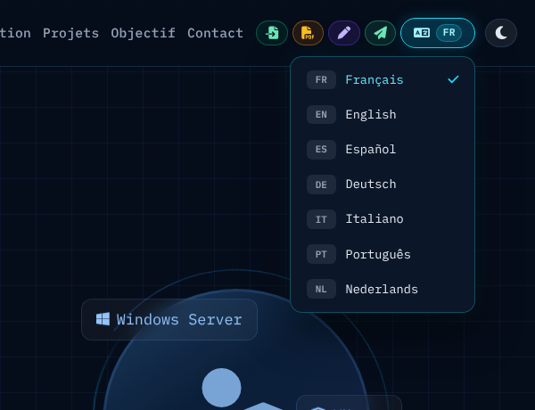
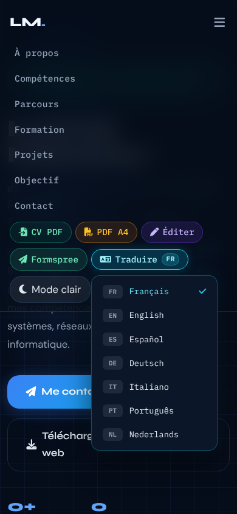

Traduire, ou ne pas traduire
- Documentation
- MDN — L'attribut translate · MDN — L'attribut lang · Google Search Central — Google Translate's Website Translator (en anglais)
- Lignes concernées
- 4395 à 4399, 4715, 4767 à 4768, 4832 à 4837.
Série « Portfolio TSSR » · 20 épisodes

Objectif de l'épisode
Votre CV est prêt pour la France. Mais qu'en est-il pour Genève, Bruxelles, Barcelone ou Berlin ?
Un bouton « Traduire » est ajouté à la barre de navigation. Il permet de choisir parmi sept langues : français, anglais, espagnol, allemand, italien, portugais et néerlandais.
Les traductions ne sont pas écrites à l'avance dans la page : c'est Google Traduction qui traduit les textes en direct, sans afficher son interface. Le code traduit aussi les éléments parfois oubliés, comme les infobulles, les textes d'exemple et les libellés destinés aux lecteurs d'écran.
Il mémorise la langue choisie et permet d'utiliser le menu entièrement au clavier.
Enfin, la barre de navigation reste sur une seule ligne à partir d'une largeur d'écran de 992 pixels (350 mm).

Partie 2
À la fin de cet épisode, vous saurez expliquer comment un service externe traduit une page web, créer un menu qui fonctionne au clavier et comprendre les limites
d'un service que vous ne contrôlez pas.
class="notranslate" et translate="no".document.cookie.dispatchEvent(new Event('change')).aria-haspopup, aria-expanded, role="menu", menuitemradio et aria-checked). clamp() et des règles CSS pour différents écrans.window et une promesse (__trTranslateStrings), utilisée par le CV de l'épisode 19.Les mots des épisodes précédents sont dans les listes des épisodes 1 à 17.
googtrans.clamp(min, idéal, max)menuitemradioaria-checked indique si cette option est sélectionnée.Partie 3
Cochez chaque case lorsque l'étape est terminée. Vos coches sont enregistrées sur cet ordinateur.
À savoir : un service qui n'est plus pris en charge
Le bouton utilise le service de traduction de sites web de Google,
appelé « Website Translator ». Il fonctionne avec le script translate_a/element.js.
Plusieurs articles publiés en septembre 2026 indiquent que Google ne prend plus en charge cet outil depuis le 1er octobre 2026 :
Ces articles renvoient vers la page officielle de Google : Google Search Central — L'outil de traduction de sites web de Google (en anglais).
Je n'ai pas pu vérifier directement la note de mise à jour sur cette page.
Les articles précisent que les installations déjà en place peuvent continuer à fonctionner,
mais ce n'est pas garanti.
Avant de mettre en ligne, testez la traduction avec une connexion Internet.
Si elle ne fonctionne plus, la page reste en français et affiche le message
« Traduction indisponible ». Le reste de la page continue de fonctionner normalement.
Tout l'ajout est écrit dans index.html. config.js, images/ et ressources/ restent identiques.
Partie 4 · comparaison avec l'épisode 17
Dans l'épisode 18, vous allez ajouter un seul bloc de 603 lignes, composé d'une feuille de style CSS et d'un script JavaScript.
Vous ne modifiez et ne supprimez aucune ligne du code existant.
Les numéros de ligne indiqués correspondent à votre fichier de l'épisode 17,
qui contient 4257 lignes.
</script> du script des sons (ligne 4247) et la ligne vide qui le suit (4248).<style id="reduced-motion-fix"> (ligne 4249).</body> et </html>.Résultat : le fichier passe de 4257 à 4860 lignes. Les numéros cités dans le reste de cette page sont ceux du nouveau fichier. Le correctif de l'épisode 17 reste le dernier bloc avant </body>.
| Lignes | Partie | Contenu |
|---|---|---|
| 4249 à 4291 | CSS · navbar | Une seule ligne dès 992 px ; boutons compacts de 992 à 1599 px ; disposition mobile |
| 4293 à 4366 | CSS · bouton et menu | Bouton « Traduire », thème clair, menu des langues, coche |
| 4369 à 4378 | CSS · Google masqué | Conteneur hors écran, bandeau, infobulles, surlignage, impression |
| 4380 à 4409 | JS · configuration | Les 7 langues, les exclusions, les attributs, l'état |
| 4411 à 4440 | JS · 1. mémorisation | Cookie googtrans et localStorage |
| 4442 à 4522 | JS · 2. moteur Google | Chargement à la demande, liste cachée pilotée, retour au français |
| 4524 à 4592 | JS · 3. le miroir | Un bloc invisible que Google traduit ; ses traductions sont recopiées dans les attributs, sans aucune requête |
| 4594 à 4680 | JS · 3. attributs | placeholder, title, alt, aria-label, textes pour le CV de l'épisode 19, contenu ajouté après coup |
| 4682 à 4734 | JS · 4. changement de langue | Toast, interface, setLanguage |
| 4736 à 4829 | JS · 5. bouton et menu | Position, ouverture, création, clavier |
| 4831 à 4850 | JS · 6. démarrage | Exclusions, bouton, surveillance, langue mémorisée |
Les lignes précédées de + sont à ajouter ; les autres existent déjà.
La fin du fichier
})(); (fin du script des sons)
</script>
<style id="tr-styles">
… (navbar, bouton Traduire, menu, interface Google masquée)
</style>
<script>
… (module de traduction)
</script>
<style id="reduced-motion-fix"> (épisode 17)Si vous collez en deux fois, gardez l'ordre CSS puis script, avec une ligne vide entre les deux et une ligne vide après le script.
Partie 5
Les règles pour reconnaître une source officielle restent celles de l'épisode 1. Les liens marqués s'ouvrent dans un nouvel onglet.
Partie 6
On colle le CSS, puis le script, puis on teste avec et sans Internet.
Réduisez la fenêtre vers 1000 pixels de large.
Vous voyez : la navbar reste sur une seule ligne ; entre 992 et 1599 pixels, les boutons « CV PDF », « PDF A4 », « Éditer », « Formspree » et « Mode clair » ne montrent plus que leur icône.
Vous voyez : un bouton turquoise avec une icône de langue et le code « FR » apparaît entre Formspree et le bouton de thème. Un clic ouvre le menu des sept langues, avec une coche sur Français.
Choisissez « English ».
Vous voyez (avec Internet, si le service de Google répond) : l'icône clignote, la page se traduit, le bouton affiche « Translate » et « EN », un toast « 🌐 English » apparaît. Le nom « Lucas Moreau » et le logo ne sont pas traduits. Le texte d'exemple du formulaire de contact est traduit aussi.
Vous voyez : après rechargement, la page repasse en anglais sans toast. En choisissant « Français », la page revient en français (parfois en se rechargeant).
Coupez le Wi-Fi, rechargez, choisissez une langue. Puis, avec Tab, allez sur le bouton et utilisez la flèche vers le bas, les flèches, Début, Fin et Échap.
Vous voyez : « ⚠️ Traduction indisponible (connexion Internet requise) », et le bouton revient à « FR ». Au clavier, le menu s'ouvre, les flèches parcourent les langues en boucle, Échap ferme le menu et rend le focus au bouton.
Vous avez terminé quand votre fichier fait 4860 lignes, identiques au code de référence (bouton « Surligner les ajouts » de la partie 8), sans erreur rouge dans la Console.
Partie 7 · la plus importante
Chaque fiche répond aux quatre questions Quoi ?, Pourquoi ?, Comment ? et Où ?. Les numéros sont ceux du nouveau fichier de 4860 lignes.
Le principe : utiliser Google Traduction en arrière-plan
localStorage et dans le cookie googtrans, utilisé par Google Traduction (lignes 4416 à 4431).Quelles données sont envoyées à Google ? Les textes de la page sont transmis au service lorsque le visiteur choisit une langue. Si la page reste en français, le moteur de traduction n'est pas chargé et aucun texte ne lui est envoyé par ce mécanisme.
Ces lignes existent déjà, seuls les numéros du correctif de l'épisode 17, de </body> et de </html> ont changé. Le lien ouvre la fiche de l'épisode où elles ont été expliquées.
| Ligne (épisode 18) | Code | Fiche |
|---|---|---|
| 1 | <!DOCTYPE html> | Épisode 1, ligne 1 |
| 2 | <html lang="fr" data-theme="dark" dir="ltr"> | Épisode 1, ligne 2 |
| 3 | <head> | Épisode 1, ligne 3 |
| 4 | <meta charset="UTF-8" /> | Épisode 1, ligne 4 |
| 5 | <meta name="viewport" content="width=device-width, initia… | Épisode 1, ligne 5 |
| 6 | <meta name="description" content="Portfolio professionnel… | Épisode 1, ligne 6 |
| 7 | <meta name="keywords" content="TSSR, technicien systèmes … | Épisode 1, ligne 7 |
| 8 | <meta name="robots" content="index, follow" /> | Épisode 1, ligne 8 |
| 9 | <meta name="theme-color" content="#060d1a" /> | Épisode 1, ligne 9 |
| 10 | <meta name="author" content="Lucas Moreau" /> | Épisode 1, ligne 10 |
| 12 | <link rel="preconnect" href="https://fonts.googleapis.com… | Épisode 1, ligne 12 |
| 13 | <link rel="preconnect" href="https://fonts.gstatic.com" c… | Épisode 1, ligne 13 |
| 14 | <link href="https://fonts.googleapis.com/css2?family=Syne… | Épisode 1, ligne 14 |
| 16 | <link rel="stylesheet" href="https://cdn.jsdelivr.net/npm… | Épisode 1, ligne 16 |
| 17 | <link rel="stylesheet" href="https://cdnjs.cloudflare.com… | Épisode 1, ligne 17 |
| 18 | <link rel="stylesheet" href="https://cdnjs.cloudflare.com… | Épisode 1, ligne 18 |
| 20 | <script src="config.js"></script> | Épisode 1, ligne 20 |
| 21 | <script src="https://cdnjs.cloudflare.com/ajax/libs/pdf.j… | Épisode 1, ligne 21 |
| 23 | <link rel="icon" type="image/png" sizes="32x32" href="ima… | Épisode 1, ligne 23 |
| 24 | <link rel="icon" type="image/png" sizes="192x192" href="i… | Épisode 1, ligne 24 |
| 25 | <link rel="icon" type="image/webp" href="images/favicon-4… | Épisode 1, ligne 25 |
| 26 | <link rel="apple-touch-icon" sizes="180x180" href="images… | Épisode 1, ligne 26 |
| 28 | <title>Portfolio TSSR | Recherche d'emploi – Technicien S… | Épisode 1, ligne 28 |
| 29 | <style> | Épisode 2, ligne 29 |
| 30 | :root { | Épisode 2, ligne 30 |
| 31 | --clr-bg: #060d1a; | Épisode 2, ligne 31 |
| 32 | --clr-bg2: #0b1628; | Épisode 2, ligne 32 |
| 33 | --clr-surface: rgba(255,255,255,.04); | Épisode 2, ligne 33 |
| 34 | --clr-surface2: rgba(255,255,255,.07); | Épisode 2, ligne 34 |
| 35 | --clr-border: rgba(96,165,250,.18); | Épisode 2, ligne 35 |
| 36 | --clr-accent: #3b82f6; | Épisode 2, ligne 36 |
| 37 | --clr-accent2: #60a5fa; | Épisode 2, ligne 37 |
| 38 | --clr-accent3: #93c5fd; | Épisode 2, ligne 38 |
| 39 | --clr-teal: #0ea5e9; | Épisode 2, ligne 39 |
| 40 | --clr-cyan: #22d3ee; | Épisode 2, ligne 40 |
| 41 | --clr-text: #e2e8f0; | Épisode 2, ligne 41 |
| 42 | --clr-text-soft: #94a3b8; | Épisode 2, ligne 42 |
| 43 | --clr-text-faint: #475569; | Épisode 2, ligne 43 |
| 44 | --clr-heading: #f0f6ff; | Épisode 2, ligne 44 |
| 45 | --clr-white: #ffffff; | Épisode 2, ligne 45 |
| 46 | --clr-danger: #f87171; | Épisode 2, ligne 46 |
| 47 | --clr-success: #34d399; | Épisode 2, ligne 47 |
| 48 | --clr-warn: #fbbf24; | Épisode 2, ligne 48 |
| 49 | --radius-sm: 6px; | Épisode 2, ligne 49 |
| 50 | --radius-md: 12px; | Épisode 2, ligne 50 |
| 51 | --radius-lg: 20px; | Épisode 2, ligne 51 |
| 52 | --radius-xl: 32px; | Épisode 2, ligne 52 |
| 53 | --shadow-glow: 0 0 40px rgba(59,130,246,.25); | Épisode 2, ligne 53 |
| 54 | --shadow-card: 0 8px 32px rgba(0,0,0,.45); | Épisode 2, ligne 54 |
| 55 | --trans: .3s cubic-bezier(.4,0,.2,1); | Épisode 2, ligne 55 |
| 56 | --font-display: 'Syne', sans-serif; | Épisode 2, ligne 56 |
| 57 | --font-mono: 'IBM Plex Mono', monospace; | Épisode 2, ligne 57 |
| 58 | --font-body: 'DM Sans', sans-serif; | Épisode 2, ligne 58 |
| 59 | --fz-min: 1.05rem; | Épisode 2, ligne 59 |
| 60 | } | Épisode 2, ligne 60 |
| 62 | [data-theme="light"] { | Épisode 2, ligne 62 |
| 63 | --clr-bg: #f0f4fa; | Épisode 2, ligne 63 |
| 64 | --clr-bg2: #e2e8f0; | Épisode 2, ligne 64 |
| 65 | --clr-surface: rgba(255,255,255,.7); | Épisode 2, ligne 65 |
| 66 | --clr-surface2: rgba(255,255,255,.9); | Épisode 2, ligne 66 |
| 67 | --clr-border: rgba(59,130,246,.2); | Épisode 2, ligne 67 |
| 68 | --clr-accent: #2563eb; | Épisode 2, ligne 68 |
| 69 | --clr-accent2: #3b82f6; | Épisode 2, ligne 69 |
| 70 | --clr-accent3: #60a5fa; | Épisode 2, ligne 70 |
| 71 | --clr-teal: #0284c7; | Épisode 2, ligne 71 |
| 72 | --clr-cyan: #0891b2; | Épisode 2, ligne 72 |
| 73 | --clr-text: #1e293b; | Épisode 2, ligne 73 |
| 74 | --clr-text-soft: #475569; | Épisode 2, ligne 74 |
| 75 | --clr-text-faint: #94a3b8; | Épisode 2, ligne 75 |
| 76 | --clr-heading: #0f172a; | Épisode 2, ligne 76 |
| 77 | --clr-white: #ffffff; | Épisode 2, ligne 77 |
| 78 | --shadow-glow: 0 0 40px rgba(37,99,235,.15); | Épisode 2, ligne 78 |
| 79 | --shadow-card: 0 8px 32px rgba(0,0,0,.12); | Épisode 2, ligne 79 |
| 80 | } | Épisode 2, ligne 80 |
| 82 | *, *::before, *::after { box-sizing: border-box; margin: … | Épisode 2, ligne 82 |
| 84 | html { scroll-behavior: smooth; font-size: 16px; } | Épisode 2, ligne 84 |
| 86 | body { | Épisode 2, ligne 86 |
| 87 | font-family: var(--font-body); | Épisode 2, ligne 87 |
| 88 | background-color: var(--clr-bg); | Épisode 2, ligne 88 |
| 89 | color: var(--clr-text); | Épisode 2, ligne 89 |
| 90 | font-size: var(--fz-min); | Épisode 2, ligne 90 |
| 91 | line-height: 1.7; | Épisode 2, ligne 91 |
| 92 | overflow-x: hidden; | Épisode 2, ligne 92 |
| 93 | transition: background-color var(--trans), color var(--tr… | Épisode 2, ligne 93 |
| 94 | } | Épisode 2, ligne 94 |
| 96 | ::-webkit-scrollbar { width: 7px; } | Épisode 2, ligne 96 |
| 97 | ::-webkit-scrollbar-track { background: var(--clr… | Épisode 2, ligne 97 |
| 98 | ::-webkit-scrollbar-thumb { | Épisode 2, ligne 98 |
| 99 | background: linear-gradient(180deg, var(--clr-accent), va… | Épisode 2, ligne 99 |
| 100 | border-radius: 10px; height: 120px; | Épisode 2, ligne 100 |
| 101 | } | Épisode 2, ligne 101 |
| 102 | ::-webkit-scrollbar-thumb:hover { | Épisode 2, ligne 102 |
| 103 | background: linear-gradient(180deg, var(--clr-accent2), v… | Épisode 2, ligne 103 |
| 104 | box-shadow: 0 0 8px var(--clr-accent); | Épisode 2, ligne 104 |
| 105 | } | Épisode 2, ligne 105 |
| 107 | .skip-link { | Épisode 2, ligne 107 |
| 108 | position: absolute; | Épisode 2, ligne 108 |
| 109 | top: -60px; left: 1rem; | Épisode 2, ligne 109 |
| 110 | background: var(--clr-accent); | Épisode 2, ligne 110 |
| 111 | color: var(--clr-white); | Épisode 2, ligne 111 |
| 112 | padding: .6rem 1.2rem; | Épisode 2, ligne 112 |
| 113 | border-radius: var(--radius-md); | Épisode 2, ligne 113 |
| 114 | font-weight: 600; | Épisode 2, ligne 114 |
| 115 | font-size: var(--fz-min); | Épisode 2, ligne 115 |
| 116 | z-index: 9999; | Épisode 2, ligne 116 |
| 117 | transition: top .2s; | Épisode 2, ligne 117 |
| 118 | text-decoration: none; | Épisode 2, ligne 118 |
| 119 | } | Épisode 2, ligne 119 |
| 120 | .skip-link:focus { top: 1rem; } | Épisode 2, ligne 120 |
| 122 | #read-progress { | Épisode 2, ligne 122 |
| 123 | position: fixed; top: 0; left: 0; | Épisode 2, ligne 123 |
| 124 | height: 3px; width: 0%; | Épisode 2, ligne 124 |
| 125 | background: linear-gradient(90deg, var(--clr-accent), var… | Épisode 2, ligne 125 |
| 126 | z-index: 9998; | Épisode 2, ligne 126 |
| 127 | transition: width .1s linear; | Épisode 2, ligne 127 |
| 128 | box-shadow: 0 0 10px var(--clr-accent); | Épisode 2, ligne 128 |
| 129 | } | Épisode 2, ligne 129 |
| 131 | #mainNav { | Épisode 3, ligne 131 |
| 132 | position: fixed; top: 0; left: 0; right: 0; | Épisode 3, ligne 132 |
| 133 | z-index: 1050; | Épisode 3, ligne 133 |
| 134 | padding: .9rem 0; | Épisode 3, ligne 134 |
| 135 | background: rgba(6,13,26,.82); | Épisode 3, ligne 135 |
| 136 | backdrop-filter: blur(18px) saturate(1.4); | Épisode 3, ligne 136 |
| 137 | -webkit-backdrop-filter: blur(18px) saturate(1.4); | Épisode 3, ligne 137 |
| 138 | border-bottom: 1px solid var(--clr-border); | Épisode 3, ligne 138 |
| 139 | transition: all var(--trans); | Épisode 3, ligne 139 |
| 140 | } | Épisode 3, ligne 140 |
| 141 | #mainNav.scrolled { | Épisode 3, ligne 141 |
| 142 | padding: .55rem 0; | Épisode 3, ligne 142 |
| 143 | background: rgba(6,13,26,.95); | Épisode 3, ligne 143 |
| 144 | box-shadow: 0 4px 30px rgba(0,0,0,.4); | Épisode 3, ligne 144 |
| 145 | } | Épisode 3, ligne 145 |
| 146 | [data-theme="light"] #mainNav { background: rgba(240,244,… | Épisode 3, ligne 146 |
| 147 | [data-theme="light"] #mainNav.scrolled { background: rgba… | Épisode 3, ligne 147 |
| 149 | .nav-brand { | Épisode 3, ligne 149 |
| 150 | font-family: var(--font-display); | Épisode 3, ligne 150 |
| 151 | font-weight: 800; font-size: 1.3rem; | Épisode 3, ligne 151 |
| 152 | color: var(--clr-heading) !important; | Épisode 3, ligne 152 |
| 153 | text-decoration: none; letter-spacing: -.02em; | Épisode 3, ligne 153 |
| 154 | } | Épisode 3, ligne 154 |
| 155 | .nav-brand span { color: var(--clr-accent2); } | Épisode 3, ligne 155 |
| 157 | .navbar-nav .nav-link { | Épisode 3, ligne 157 |
| 158 | font-family: var(--font-mono); | Épisode 3, ligne 158 |
| 159 | font-size: .92rem; | Épisode 3, ligne 159 |
| 160 | font-weight: 500; | Épisode 3, ligne 160 |
| 161 | color: var(--clr-text-soft) !important; | Épisode 3, ligne 161 |
| 162 | letter-spacing: .02em; | Épisode 3, ligne 162 |
| 163 | padding: .4rem .5rem !important; | Épisode 3, ligne 163 |
| 164 | border-radius: var(--radius-sm); | Épisode 3, ligne 164 |
| 165 | transition: all var(--trans); | Épisode 3, ligne 165 |
| 166 | position: relative; | Épisode 3, ligne 166 |
| 167 | } | Épisode 3, ligne 167 |
| 168 | .navbar-nav .nav-link::before { | Épisode 3, ligne 168 |
| 169 | content: ''; | Épisode 3, ligne 169 |
| 170 | position: absolute; bottom: 0; left: 50%; right: 50%; | Épisode 3, ligne 170 |
| 171 | height: 2px; background: var(--clr-accent2); | Épisode 3, ligne 171 |
| 172 | border-radius: 2px; transition: all var(--trans); | Épisode 3, ligne 172 |
| 173 | } | Épisode 3, ligne 173 |
| 174 | .navbar-nav .nav-link:hover, | Épisode 3, ligne 174 |
| 175 | .navbar-nav .nav-link:focus { | Épisode 3, ligne 175 |
| 176 | color: var(--clr-accent2) !important; | Épisode 3, ligne 176 |
| 177 | background: rgba(59,130,246,.08); | Épisode 3, ligne 177 |
| 178 | } | Épisode 3, ligne 178 |
| 179 | .navbar-nav .nav-link:hover::before, | Épisode 3, ligne 179 |
| 180 | .navbar-nav .nav-link:focus::before { left: 10%; right: 1… | Épisode 3, ligne 180 |
| 182 | .navbar-nav .nav-link.active { | Épisode 8, ligne 182 |
| 183 | color: var(--clr-accent2) !important; | Épisode 8, ligne 183 |
| 184 | background: rgba(59,130,246,.08); | Épisode 8, ligne 184 |
| 185 | } | Épisode 8, ligne 185 |
| 186 | .navbar-nav .nav-link.active::before { left: 10%; right: … | Épisode 8, ligne 186 |
| 188 | #themeToggle { | Épisode 3, ligne 182 |
| 189 | background: var(--clr-surface2); | Épisode 3, ligne 183 |
| 190 | border: 1px solid var(--clr-border); | Épisode 3, ligne 184 |
| 191 | color: var(--clr-text); | Épisode 3, ligne 185 |
| 192 | padding: .4rem .9rem; | Épisode 3, ligne 186 |
| 193 | border-radius: var(--radius-lg); | Épisode 3, ligne 187 |
| 194 | cursor: pointer; font-size: var(--fz-min); | Épisode 3, ligne 188 |
| 195 | transition: all var(--trans); | Épisode 3, ligne 189 |
| 196 | display: flex; align-items: center; gap: .5rem; | Épisode 3, ligne 190 |
| 197 | white-space: nowrap; | Épisode 3, ligne 191 |
| 198 | } | Épisode 3, ligne 192 |
| 199 | #themeToggle:hover { background: var(--clr-accent); color… | Épisode 3, ligne 193 |
| 200 | #themeToggle:focus-visible { outline: 2px solid var(--clr… | Épisode 3, ligne 194 |
| 202 | #hero { | Épisode 4, ligne 196 |
| 203 | min-height: 100vh; | Épisode 4, ligne 197 |
| 204 | display: flex; align-items: center; | Épisode 4, ligne 198 |
| 205 | position: relative; overflow: hidden; | Épisode 4, ligne 199 |
| 206 | padding: 7rem 0 4rem; | Épisode 4, ligne 200 |
| 207 | } | Épisode 4, ligne 201 |
| 208 | #hero::before { | Épisode 4, ligne 202 |
| 209 | content: ''; position: absolute; inset: 0; | Épisode 4, ligne 203 |
| 210 | background-image: | Épisode 4, ligne 204 |
| 211 | linear-gradient(rgba(59,130,246,.07) 1px, transparent 1px… | Épisode 4, ligne 205 |
| 212 | linear-gradient(90deg, rgba(59,130,246,.07) 1px, transpar… | Épisode 4, ligne 206 |
| 213 | background-size: 40px 40px; z-index: 0; | Épisode 4, ligne 207 |
| 214 | } | Épisode 4, ligne 208 |
| 215 | #hero::after { | Épisode 4, ligne 209 |
| 216 | content: ''; position: absolute; | Épisode 4, ligne 210 |
| 217 | top: -10%; left: -10%; width: 70%; height: 70%; | Épisode 4, ligne 211 |
| 218 | background: radial-gradient(ellipse at center, rgba(59,13… | Épisode 4, ligne 212 |
| 219 | z-index: 0; animation: floatGlow 6s ease-in-out infinite … | Épisode 4, ligne 213 |
| 220 | } | Épisode 4, ligne 214 |
| 221 | @keyframes floatGlow { | Épisode 4, ligne 215 |
| 222 | from { transform: translate(0,0) scale(1); } | Épisode 4, ligne 216 |
| 223 | to { transform: translate(4%,3%) scale(1.05); } | Épisode 4, ligne 217 |
| 224 | } | Épisode 4, ligne 218 |
| 225 | .hero-content { position: relative; z-index: 1; } | Épisode 4, ligne 219 |
| 227 | .status-badge { | Épisode 4, ligne 221 |
| 228 | display: inline-flex; align-items: center; gap: .5rem; | Épisode 4, ligne 222 |
| 229 | background: rgba(52,211,153,.1); | Épisode 4, ligne 223 |
| 230 | border: 1px solid rgba(52,211,153,.3); | Épisode 4, ligne 224 |
| 231 | color: var(--clr-success); | Épisode 4, ligne 225 |
| 232 | font-family: var(--font-mono); | Épisode 4, ligne 226 |
| 233 | font-size: var(--fz-min); font-weight: 500; | Épisode 4, ligne 227 |
| 234 | letter-spacing: .04em; | Épisode 4, ligne 228 |
| 235 | padding: .4rem 1rem; border-radius: 100px; | Épisode 4, ligne 229 |
| 236 | margin-bottom: 1.4rem; | Épisode 4, ligne 230 |
| 237 | } | Épisode 4, ligne 231 |
| 238 | .status-dot { | Épisode 4, ligne 232 |
| 239 | width: 7px; height: 7px; | Épisode 4, ligne 233 |
| 240 | background: var(--clr-success); border-radius: 50%; | Épisode 4, ligne 234 |
| 241 | animation: pulse-dot 1.6s ease infinite; flex-shrink: 0; | Épisode 4, ligne 235 |
| 242 | } | Épisode 4, ligne 236 |
| 243 | @keyframes pulse-dot { | Épisode 4, ligne 237 |
| 244 | 0%,100% { opacity: 1; transform: scale(1); } | Épisode 4, ligne 238 |
| 245 | 50% { opacity: .5; transform: scale(.75); } | Épisode 4, ligne 239 |
| 246 | } | Épisode 4, ligne 240 |
| 248 | .hero-title { | Épisode 4, ligne 242 |
| 249 | font-family: var(--font-display); font-weight: 800; | Épisode 4, ligne 243 |
| 250 | font-size: clamp(2.4rem, 6vw, 4.2rem); | Épisode 4, ligne 244 |
| 251 | line-height: 1.1; color: var(--clr-heading); | Épisode 4, ligne 245 |
| 252 | letter-spacing: -.03em; margin-bottom: 1rem; | Épisode 4, ligne 246 |
| 253 | } | Épisode 4, ligne 247 |
| 254 | .hero-title .accent { color: var(--clr-accent2); } | Épisode 4, ligne 248 |
| 255 | .hero-title .typing-cursor { | Épisode 4, ligne 249 |
| 256 | display: inline-block; width: 3px; height: 1em; | Épisode 4, ligne 250 |
| 257 | background: var(--clr-accent2); margin-left: 3px; | Épisode 4, ligne 251 |
| 258 | vertical-align: text-bottom; | Épisode 4, ligne 252 |
| 259 | animation: blink .75s step-end infinite; | Épisode 4, ligne 253 |
| 260 | } | Épisode 4, ligne 254 |
| 261 | @keyframes blink { 50% { opacity: 0; } } | Épisode 4, ligne 255 |
| 263 | .hero-subtitle { | Épisode 4, ligne 257 |
| 264 | font-family: var(--font-mono); | Épisode 4, ligne 258 |
| 265 | font-size: clamp(var(--fz-min), 1.8vw, 1.15rem); | Épisode 4, ligne 259 |
| 266 | color: var(--clr-accent3); letter-spacing: .04em; margin-… | Épisode 4, ligne 260 |
| 267 | } | Épisode 4, ligne 261 |
| 268 | .hero-desc { | Épisode 4, ligne 262 |
| 269 | font-size: clamp(var(--fz-min), 2vw, 1.15rem); | Épisode 4, ligne 263 |
| 270 | color: var(--clr-text-soft); | Épisode 4, ligne 264 |
| 271 | max-width: 520px; margin-bottom: 2.2rem; line-height: 1.8; | Épisode 4, ligne 265 |
| 272 | } | Épisode 4, ligne 266 |
| 274 | .hero-avatar-wrap { | Épisode 4, ligne 268 |
| 275 | position: relative; display: flex; | Épisode 4, ligne 269 |
| 276 | justify-content: center; align-items: center; | Épisode 4, ligne 270 |
| 277 | } | Épisode 4, ligne 271 |
| 278 | .hero-avatar-ring { | Épisode 4, ligne 272 |
| 279 | position: relative; | Épisode 4, ligne 273 |
| 280 | width: clamp(220px,30vw,300px); | Épisode 4, ligne 274 |
| 281 | height: clamp(220px,30vw,300px); | Épisode 4, ligne 275 |
| 282 | } | Épisode 4, ligne 276 |
| 283 | .hero-avatar-ring::before, | Épisode 4, ligne 277 |
| 284 | .hero-avatar-ring::after { | Épisode 4, ligne 278 |
| 285 | content: ''; | Épisode 4, ligne 279 |
| 286 | position: absolute; | Épisode 4, ligne 280 |
| 287 | inset: -12px; | Épisode 4, ligne 281 |
| 288 | border-radius: 50%; | Épisode 4, ligne 282 |
| 289 | border: 2px solid transparent; | Épisode 4, ligne 283 |
| 291 | background: conic-gradient( | Épisode 4, ligne 285 |
| 292 | from 0deg, | Épisode 4, ligne 286 |
| 293 | var(--clr-accent), | Épisode 4, ligne 287 |
| 294 | var(--clr-teal), | Épisode 4, ligne 288 |
| 295 | transparent 60% | Épisode 4, ligne 289 |
| 296 | ) border-box; | Épisode 4, ligne 290 |
| 298 | -webkit-mask: | Épisode 4, ligne 292 |
| 299 | linear-gradient(#fff 0 0) padding-box, | Épisode 4, ligne 293 |
| 300 | linear-gradient(#fff 0 0); | Épisode 4, ligne 294 |
| 302 | -webkit-mask-composite: destination-out; | Épisode 4, ligne 296 |
| 304 | mask: | Épisode 4, ligne 298 |
| 305 | linear-gradient(#fff 0 0) padding-box, | Épisode 4, ligne 299 |
| 306 | linear-gradient(#fff 0 0); | Épisode 4, ligne 300 |
| 308 | mask-composite: exclude; | Épisode 4, ligne 302 |
| 310 | animation: spinRing 8s linear infinite; | Épisode 4, ligne 304 |
| 311 | } | Épisode 4, ligne 305 |
| 312 | .hero-avatar-ring::after { | Épisode 4, ligne 306 |
| 313 | inset: -22px; border-width: 1px; opacity: .4; | Épisode 4, ligne 307 |
| 314 | animation-duration: 14s; animation-direction: reverse; | Épisode 4, ligne 308 |
| 315 | } | Épisode 4, ligne 309 |
| 316 | @keyframes spinRing { to { transform: rotate(360deg); } } | Épisode 4, ligne 310 |
| 318 | .hero-avatar { | Épisode 4, ligne 312 |
| 319 | width: 100%; height: 100%; border-radius: 50%; | Épisode 4, ligne 313 |
| 320 | background: linear-gradient(145deg, #1a3a5c 0%, #0b1e38 4… | Épisode 4, ligne 314 |
| 321 | border: 3px solid var(--clr-border); | Épisode 4, ligne 315 |
| 322 | display: flex; flex-direction: column; | Épisode 4, ligne 316 |
| 323 | align-items: center; justify-content: center; gap: .4rem; | Épisode 4, ligne 317 |
| 324 | overflow: hidden; position: relative; | Épisode 4, ligne 318 |
| 325 | } | Épisode 4, ligne 319 |
| 326 | .hero-avatar i { font-size: clamp(4rem,10vw,5.5rem); colo… | Épisode 4, ligne 320 |
| 327 | .hero-avatar .avatar-label { | Épisode 4, ligne 321 |
| 328 | font-family: var(--font-mono); font-size: var(--fz-min); | Épisode 4, ligne 322 |
| 329 | color: var(--clr-accent2); letter-spacing: .1em; opacity:… | Épisode 4, ligne 323 |
| 330 | } | Épisode 4, ligne 324 |
| 332 | .floating-chip { | Épisode 4, ligne 326 |
| 333 | position: absolute; | Épisode 4, ligne 327 |
| 334 | background: var(--clr-surface); backdrop-filter: blur(10p… | Épisode 4, ligne 328 |
| 335 | border: 1px solid var(--clr-border); border-radius: var(-… | Épisode 4, ligne 329 |
| 336 | padding: .5rem 1rem; font-family: var(--font-mono); | Épisode 4, ligne 330 |
| 337 | font-size: var(--fz-min); color: var(--clr-accent3); whit… | Épisode 4, ligne 331 |
| 338 | animation: chipFloat 4s ease-in-out infinite alternate; | Épisode 4, ligne 332 |
| 339 | } | Épisode 4, ligne 333 |
| 340 | .floating-chip:nth-child(2) { top: 5%; left: -8%; anima… | Épisode 4, ligne 334 |
| 341 | .floating-chip:nth-child(3) { bottom: 8%; right: -8%; ani… | Épisode 4, ligne 335 |
| 342 | .floating-chip:nth-child(4) { top: 40%; right: -12%; ani… | Épisode 4, ligne 336 |
| 343 | @keyframes chipFloat { | Épisode 4, ligne 337 |
| 344 | from { transform: translateY(0); } | Épisode 4, ligne 338 |
| 345 | to { transform: translateY(-8px); } | Épisode 4, ligne 339 |
| 346 | } | Épisode 4, ligne 340 |
| 348 | .btn-hero-primary { | Épisode 4, ligne 342 |
| 349 | display: inline-flex; align-items: center; gap: .55rem; | Épisode 4, ligne 343 |
| 350 | background: linear-gradient(135deg, var(--clr-accent), va… | Épisode 4, ligne 344 |
| 351 | color: #fff; font-family: var(--font-display); font-weigh… | Épisode 4, ligne 345 |
| 352 | font-size: var(--fz-min); padding: .85rem 1.9rem; | Épisode 4, ligne 346 |
| 353 | border-radius: var(--radius-lg); text-decoration: none; b… | Épisode 4, ligne 347 |
| 354 | cursor: pointer; transition: all var(--trans); | Épisode 4, ligne 348 |
| 355 | box-shadow: 0 4px 24px rgba(59,130,246,.35); | Épisode 4, ligne 349 |
| 356 | } | Épisode 4, ligne 350 |
| 357 | .btn-hero-primary:hover { transform: translateY(-3px); bo… | Épisode 4, ligne 351 |
| 358 | .btn-hero-primary:focus-visible { outline: 3px solid var(… | Épisode 4, ligne 352 |
| 360 | .btn-hero-secondary { | Épisode 4, ligne 354 |
| 361 | display: inline-flex; align-items: center; gap: .55rem; | Épisode 4, ligne 355 |
| 362 | background: transparent; color: var(--clr-text); | Épisode 4, ligne 356 |
| 363 | font-family: var(--font-display); font-weight: 600; | Épisode 4, ligne 357 |
| 364 | font-size: var(--fz-min); padding: .85rem 1.9rem; | Épisode 4, ligne 358 |
| 365 | border-radius: var(--radius-lg); text-decoration: none; | Épisode 4, ligne 359 |
| 366 | border: 1px solid var(--clr-border); cursor: pointer; | Épisode 4, ligne 360 |
| 367 | transition: all var(--trans); | Épisode 4, ligne 361 |
| 368 | } | Épisode 4, ligne 362 |
| 369 | .btn-hero-secondary:hover { | Épisode 4, ligne 363 |
| 370 | background: var(--clr-surface2); border-color: var(--clr-… | Épisode 4, ligne 364 |
| 371 | color: var(--clr-accent2); transform: translateY(-3px); | Épisode 4, ligne 365 |
| 372 | } | Épisode 4, ligne 366 |
| 373 | .btn-hero-secondary:focus-visible { outline: 3px solid va… | Épisode 4, ligne 367 |
| 375 | .hero-stats { display: flex; gap: 2rem; margin-top: 2.8re… | Épisode 4, ligne 369 |
| 376 | .hero-stat { text-align: left; } | Épisode 4, ligne 370 |
| 377 | .hero-stat .stat-val { | Épisode 4, ligne 371 |
| 378 | font-family: var(--font-display); font-weight: 800; font-… | Épisode 4, ligne 372 |
| 379 | color: var(--clr-heading); line-height: 1; | Épisode 4, ligne 373 |
| 380 | } | Épisode 4, ligne 374 |
| 381 | .hero-stat .stat-val span { color: var(--clr-accent2); } | Épisode 4, ligne 375 |
| 382 | .hero-stat .stat-lbl { | Épisode 4, ligne 376 |
| 383 | font-family: var(--font-mono); font-size: var(--fz-min); | Épisode 4, ligne 377 |
| 384 | color: var(--clr-text-faint); letter-spacing: .04em; | Épisode 4, ligne 378 |
| 385 | margin-top: .3rem; line-height: 1.4; | Épisode 4, ligne 379 |
| 386 | } | Épisode 4, ligne 380 |
| 387 | .hero-stat-sep { width: 1px; background: var(--clr-border… | Épisode 4, ligne 381 |
| 389 | .scroll-indicator { | Épisode 4, ligne 383 |
| 390 | position: absolute; bottom: 2.5rem; left: 50%; | Épisode 4, ligne 384 |
| 391 | transform: translateX(-50%); | Épisode 4, ligne 385 |
| 392 | display: flex; flex-direction: column; align-items: cente… | Épisode 4, ligne 386 |
| 393 | cursor: pointer; animation: bounceDown 2s ease infinite; … | Épisode 4, ligne 387 |
| 394 | text-decoration: none; | Épisode 4, ligne 388 |
| 395 | } | Épisode 4, ligne 389 |
| 396 | .scroll-indicator span { | Épisode 4, ligne 390 |
| 397 | font-family: var(--font-mono); font-size: var(--fz-min); | Épisode 4, ligne 391 |
| 398 | letter-spacing: .08em; color: var(--clr-text-faint); | Épisode 4, ligne 392 |
| 399 | } | Épisode 4, ligne 393 |
| 400 | .scroll-indicator i { color: var(--clr-accent2); font-siz… | Épisode 4, ligne 394 |
| 401 | @keyframes bounceDown { | Épisode 4, ligne 395 |
| 402 | 0%,20%,50%,80%,100% { transform: translateX(-50%) transla… | Épisode 4, ligne 396 |
| 403 | 40% { transform: translateX(-50%) translateY(6px); } | Épisode 4, ligne 397 |
| 404 | 60% { transform: translateX(-50%) translateY(3px); } | Épisode 4, ligne 398 |
| 405 | } | Épisode 4, ligne 399 |
| 407 | section { padding: 5.5rem 0; } | Épisode 5, ligne 401 |
| 409 | .section-label { | Épisode 5, ligne 403 |
| 410 | font-family: var(--font-mono); font-size: var(--fz-min); | Épisode 5, ligne 404 |
| 411 | letter-spacing: .12em; color: var(--clr-accent2); | Épisode 5, ligne 405 |
| 412 | text-transform: uppercase; display: flex; align-items: ce… | Épisode 5, ligne 406 |
| 413 | margin-bottom: .8rem; | Épisode 5, ligne 407 |
| 414 | } | Épisode 5, ligne 408 |
| 415 | .section-label::before { content: '//'; opacity: .5; } | Épisode 5, ligne 409 |
| 417 | .section-title { | Épisode 5, ligne 411 |
| 418 | font-family: var(--font-display); font-weight: 800; | Épisode 5, ligne 412 |
| 419 | font-size: clamp(1.8rem, 4vw, 2.8rem); | Épisode 5, ligne 413 |
| 420 | color: var(--clr-heading); letter-spacing: -.02em; | Épisode 5, ligne 414 |
| 421 | line-height: 1.15; margin-bottom: 1rem; | Épisode 5, ligne 415 |
| 422 | } | Épisode 5, ligne 416 |
| 423 | .section-title .accent { color: var(--clr-accent2); } | Épisode 5, ligne 417 |
| 425 | .section-desc { | Épisode 5, ligne 419 |
| 426 | color: var(--clr-text-soft); font-size: var(--fz-min); | Épisode 5, ligne 420 |
| 427 | max-width: 600px; line-height: 1.75; | Épisode 5, ligne 421 |
| 428 | } | Épisode 5, ligne 422 |
| 430 | .section-divider { | Épisode 5, ligne 424 |
| 431 | display: flex; align-items: center; gap: .8rem; margin: .… | Épisode 5, ligne 425 |
| 432 | } | Épisode 5, ligne 426 |
| 433 | .section-divider .line { | Épisode 5, ligne 427 |
| 434 | height: 2px; width: 48px; | Épisode 5, ligne 428 |
| 435 | background: linear-gradient(90deg, var(--clr-accent), tra… | Épisode 5, ligne 429 |
| 436 | border-radius: 2px; | Épisode 5, ligne 430 |
| 437 | } | Épisode 5, ligne 431 |
| 438 | .section-divider .dot { | Épisode 5, ligne 432 |
| 439 | width: 6px; height: 6px; border-radius: 50%; background: … | Épisode 5, ligne 433 |
| 440 | } | Épisode 5, ligne 434 |
| 442 | .reveal { | Épisode 5, ligne 436 |
| 443 | opacity: 0; transform: translateY(30px); | Épisode 5, ligne 437 |
| 444 | transition: opacity .65s cubic-bezier(.4,0,.2,1), transfo… | Épisode 5, ligne 438 |
| 445 | } | Épisode 5, ligne 439 |
| 446 | .reveal.visible { opacity: 1; transform: translateY(0); } | Épisode 5, ligne 440 |
| 447 | .reveal-left { transform: translateX(-30px); } | Épisode 5, ligne 441 |
| 448 | .reveal-right { transform: translateX(30px); } | Épisode 5, ligne 442 |
| 449 | .reveal-left.visible, .reveal-right.visible { transform: … | Épisode 5, ligne 443 |
| 451 | .glass-card { | Épisode 5, ligne 445 |
| 452 | background: var(--clr-surface); backdrop-filter: blur(14p… | Épisode 5, ligne 446 |
| 453 | -webkit-backdrop-filter: blur(14px); | Épisode 5, ligne 447 |
| 454 | border: 1px solid var(--clr-border); border-radius: var(-… | Épisode 5, ligne 448 |
| 455 | padding: 2rem; transition: all var(--trans); box-shadow: … | Épisode 5, ligne 449 |
| 456 | } | Épisode 5, ligne 450 |
| 457 | .glass-card:hover { | Épisode 5, ligne 451 |
| 458 | border-color: rgba(59,130,246,.4); | Épisode 5, ligne 452 |
| 459 | box-shadow: var(--shadow-glow), var(--shadow-card); trans… | Épisode 5, ligne 453 |
| 460 | } | Épisode 5, ligne 454 |
| 462 | #about { background: var(--clr-bg2); } | Épisode 5, ligne 456 |
| 464 | .about-text p { | Épisode 5, ligne 458 |
| 465 | color: var(--clr-text); font-size: var(--fz-min); | Épisode 5, ligne 459 |
| 466 | line-height: 1.85; margin-bottom: 1.1rem; | Épisode 5, ligne 460 |
| 467 | } | Épisode 5, ligne 461 |
| 468 | .about-text strong { color: var(--clr-accent2); font-weig… | Épisode 5, ligne 462 |
| 470 | .about-info-grid { | Épisode 5, ligne 464 |
| 471 | display: grid; grid-template-columns: 1fr 1fr; gap: .85re… | Épisode 5, ligne 465 |
| 472 | } | Épisode 5, ligne 466 |
| 473 | .about-info-item { | Épisode 5, ligne 467 |
| 474 | display: flex; align-items: center; gap: .65rem; | Épisode 5, ligne 468 |
| 475 | font-size: var(--fz-min); color: var(--clr-text-soft); | Épisode 5, ligne 469 |
| 476 | } | Épisode 5, ligne 470 |
| 477 | .about-info-item i { width: 20px; color: var(--clr-accent… | Épisode 5, ligne 471 |
| 479 | .motive-list { list-style: none; padding: 0; display: fle… | Épisode 5, ligne 473 |
| 480 | .motive-list li { | Épisode 5, ligne 474 |
| 481 | display: flex; align-items: flex-start; gap: .85rem; | Épisode 5, ligne 475 |
| 482 | font-size: var(--fz-min); color: var(--clr-text-soft); | Épisode 5, ligne 476 |
| 483 | padding: .8rem 1rem; background: var(--clr-surface); | Épisode 5, ligne 477 |
| 484 | border: 1px solid var(--clr-border); border-radius: var(-… | Épisode 5, ligne 478 |
| 485 | transition: all var(--trans); | Épisode 5, ligne 479 |
| 486 | } | Épisode 5, ligne 480 |
| 487 | .motive-list li:hover { border-color: var(--clr-accent2);… | Épisode 5, ligne 481 |
| 488 | .motive-list li .ico { | Épisode 5, ligne 482 |
| 489 | width: 34px; height: 34px; | Épisode 5, ligne 483 |
| 490 | background: linear-gradient(135deg, var(--clr-accent), va… | Épisode 5, ligne 484 |
| 491 | border-radius: var(--radius-sm); display: flex; align-ite… | Épisode 5, ligne 485 |
| 492 | justify-content: center; flex-shrink: 0; font-size: var(-… | Épisode 5, ligne 486 |
| 493 | } | Épisode 5, ligne 487 |
| 494 | .motive-list li strong { | Épisode 5, ligne 488 |
| 495 | color: var(--clr-heading); display: block; | Épisode 5, ligne 489 |
| 496 | margin-bottom: .2rem; font-size: var(--fz-min); | Épisode 5, ligne 490 |
| 497 | } | Épisode 5, ligne 491 |
| 499 | #skills { background: var(--clr-bg); } | Épisode 6, ligne 493 |
| 501 | .skill-cat-title { | Épisode 5, ligne 493 |
| 502 | font-family: var(--font-mono); font-size: var(--fz-min); | Épisode 5, ligne 494 |
| 503 | letter-spacing: .1em; color: var(--clr-accent2); | Épisode 5, ligne 495 |
| 504 | text-transform: uppercase; margin-bottom: 1.2rem; | Épisode 5, ligne 496 |
| 505 | } | Épisode 5, ligne 497 |
| 507 | .skill-card { | Épisode 6, ligne 501 |
| 508 | background: var(--clr-surface); border: 1px solid var(--c… | Épisode 6, ligne 502 |
| 509 | border-radius: var(--radius-md); padding: 1.2rem 1.4rem; | Épisode 6, ligne 503 |
| 510 | transition: all var(--trans); cursor: default; | Épisode 6, ligne 504 |
| 511 | } | Épisode 6, ligne 505 |
| 512 | .skill-card:hover { | Épisode 6, ligne 506 |
| 513 | border-color: rgba(59,130,246,.45); background: var(--clr… | Épisode 6, ligne 507 |
| 514 | transform: translateY(-3px); box-shadow: 0 6px 24px rgba(… | Épisode 6, ligne 508 |
| 515 | } | Épisode 6, ligne 509 |
| 516 | .skill-header { display: flex; justify-content: space-bet… | Épisode 6, ligne 510 |
| 517 | .skill-name { | Épisode 6, ligne 511 |
| 518 | display: flex; align-items: center; gap: .6rem; | Épisode 6, ligne 512 |
| 519 | font-family: var(--font-display); font-weight: 600; | Épisode 6, ligne 513 |
| 520 | font-size: var(--fz-min); color: var(--clr-text); | Épisode 6, ligne 514 |
| 521 | } | Épisode 6, ligne 515 |
| 522 | .skill-name i { color: var(--clr-accent2); font-size: var… | Épisode 6, ligne 516 |
| 523 | .skill-pct { font-family: var(--font-mono); font-size: va… | Épisode 6, ligne 517 |
| 525 | .skill-bar-bg { height: 5px; background: rgba(255,255,255… | Épisode 6, ligne 519 |
| 526 | .skill-bar { | Épisode 6, ligne 520 |
| 527 | height: 100%; border-radius: 10px; | Épisode 6, ligne 521 |
| 528 | background: linear-gradient(90deg, var(--clr-accent), var… | Épisode 6, ligne 522 |
| 529 | width: 0%; transition: width 1.2s cubic-bezier(.4,0,.2,1)… | Épisode 6, ligne 523 |
| 530 | } | Épisode 6, ligne 524 |
| 531 | .skill-bar::after { | Épisode 6, ligne 525 |
| 532 | content: ''; position: absolute; right: 0; top: 50%; tran… | Épisode 6, ligne 526 |
| 533 | width: 8px; height: 8px; background: var(--clr-cyan); | Épisode 6, ligne 527 |
| 534 | border-radius: 50%; box-shadow: 0 0 6px var(--clr-cyan); | Épisode 6, ligne 528 |
| 535 | } | Épisode 6, ligne 529 |
| 537 | .tech-badge { | Épisode 6, ligne 531 |
| 538 | display: inline-flex; align-items: center; gap: .4rem; | Épisode 6, ligne 532 |
| 539 | background: var(--clr-surface); border: 1px solid var(--c… | Épisode 6, ligne 533 |
| 540 | padding: .4rem .85rem; border-radius: 100px; | Épisode 6, ligne 534 |
| 541 | font-family: var(--font-mono); font-size: var(--fz-min); | Épisode 6, ligne 535 |
| 542 | color: var(--clr-text-soft); transition: all var(--trans); | Épisode 6, ligne 536 |
| 543 | } | Épisode 6, ligne 537 |
| 544 | .tech-badge:hover { border-color: var(--clr-accent2); col… | Épisode 6, ligne 538 |
| 546 | #parcours { background: var(--clr-bg2); } | Épisode 7, ligne 540 |
| 548 | .timeline { position: relative; padding-left: 2.5rem; } | Épisode 7, ligne 542 |
| 549 | .timeline::before { | Épisode 7, ligne 543 |
| 550 | content: ''; position: absolute; left: .6rem; top: 0; bot… | Épisode 7, ligne 544 |
| 551 | width: 2px; | Épisode 7, ligne 545 |
| 552 | background: linear-gradient(180deg, var(--clr-accent), va… | Épisode 7, ligne 546 |
| 553 | border-radius: 2px; | Épisode 7, ligne 547 |
| 554 | } | Épisode 7, ligne 548 |
| 555 | .timeline-item { position: relative; padding-bottom: 2.5r… | Épisode 7, ligne 549 |
| 556 | .timeline-item:last-child { padding-bottom: 0; } | Épisode 7, ligne 550 |
| 557 | .timeline-dot { | Épisode 7, ligne 551 |
| 558 | position: absolute; left: -2.5rem; top: .25rem; | Épisode 7, ligne 552 |
| 559 | width: 14px; height: 14px; | Épisode 7, ligne 553 |
| 560 | background: var(--clr-accent); border: 3px solid var(--cl… | Épisode 7, ligne 554 |
| 561 | border-radius: 50%; box-shadow: 0 0 12px var(--clr-accent… | Épisode 7, ligne 555 |
| 562 | } | Épisode 7, ligne 556 |
| 563 | .timeline-item:hover .timeline-dot { transform: scale(1.4… | Épisode 7, ligne 557 |
| 565 | .timeline-date { | Épisode 7, ligne 559 |
| 566 | font-family: var(--font-mono); font-size: var(--fz-min); | Épisode 7, ligne 560 |
| 567 | color: var(--clr-accent2); letter-spacing: .06em; margin-… | Épisode 7, ligne 561 |
| 568 | } | Épisode 7, ligne 562 |
| 569 | .timeline-title { | Épisode 7, ligne 563 |
| 570 | font-family: var(--font-display); font-weight: 700; | Épisode 7, ligne 564 |
| 571 | font-size: 1.1rem; color: var(--clr-heading); margin-bott… | Épisode 7, ligne 565 |
| 572 | } | Épisode 7, ligne 566 |
| 573 | .timeline-company { font-size: var(--fz-min); color: var(… | Épisode 7, ligne 567 |
| 574 | .timeline-desc { font-size: var(--fz-min); color: var(--c… | Épisode 7, ligne 568 |
| 575 | .timeline-tags { display: flex; flex-wrap: wrap; gap: .45… | Épisode 7, ligne 569 |
| 576 | .timeline-tag { | Épisode 7, ligne 570 |
| 577 | font-family: var(--font-mono); font-size: var(--fz-min); | Épisode 7, ligne 571 |
| 578 | color: var(--clr-teal); background: rgba(14,165,233,.08); | Épisode 7, ligne 572 |
| 579 | border: 1px solid rgba(14,165,233,.2); padding: .28rem .7… | Épisode 7, ligne 573 |
| 580 | } | Épisode 7, ligne 574 |
| 582 | .premier-stage-banner { | Épisode 7, ligne 576 |
| 583 | background: linear-gradient(135deg, rgba(59,130,246,.08),… | Épisode 7, ligne 577 |
| 584 | border: 1px solid rgba(59,130,246,.25); | Épisode 7, ligne 578 |
| 585 | border-radius: var(--radius-lg); | Épisode 7, ligne 579 |
| 586 | padding: 1.5rem 1.8rem; | Épisode 7, ligne 580 |
| 587 | margin-bottom: 2.5rem; | Épisode 7, ligne 581 |
| 588 | display: flex; align-items: flex-start; gap: 1rem; | Épisode 7, ligne 582 |
| 589 | } | Épisode 7, ligne 583 |
| 590 | .premier-stage-banner .ico-wrap { | Épisode 7, ligne 584 |
| 591 | width: 46px; height: 46px; flex-shrink: 0; | Épisode 7, ligne 585 |
| 592 | background: linear-gradient(135deg, var(--clr-accent), va… | Épisode 7, ligne 586 |
| 593 | border-radius: var(--radius-md); | Épisode 7, ligne 587 |
| 594 | display: flex; align-items: center; justify-content: cent… | Épisode 7, ligne 588 |
| 595 | font-size: 1.2rem; color: #fff; | Épisode 7, ligne 589 |
| 596 | } | Épisode 7, ligne 590 |
| 597 | .premier-stage-banner p { font-size: var(--fz-min); color… | Épisode 7, ligne 591 |
| 598 | .premier-stage-banner strong { color: var(--clr-accent2);… | Épisode 7, ligne 592 |
| 600 | #formation { background: var(--clr-bg); } | Épisode 8, ligne 600 |
| 602 | .formation-card { | Épisode 8, ligne 602 |
| 603 | background: var(--clr-surface); border: 1px solid var(--c… | Épisode 8, ligne 603 |
| 604 | border-radius: var(--radius-lg); padding: 2rem 2.2rem; tr… | Épisode 8, ligne 604 |
| 605 | } | Épisode 8, ligne 605 |
| 606 | .formation-card:hover { border-color: rgba(59,130,246,.4)… | Épisode 8, ligne 606 |
| 608 | .formation-logo { | Épisode 8, ligne 608 |
| 609 | width: 52px; height: 52px; | Épisode 8, ligne 609 |
| 610 | background: linear-gradient(135deg, var(--clr-accent), va… | Épisode 8, ligne 610 |
| 611 | border-radius: var(--radius-md); | Épisode 8, ligne 611 |
| 612 | display: flex; align-items: center; justify-content: cent… | Épisode 8, ligne 612 |
| 613 | font-size: 1.4rem; color: #fff; margin-bottom: 1.2rem; fl… | Épisode 8, ligne 613 |
| 614 | } | Épisode 8, ligne 614 |
| 615 | .formation-badge { | Épisode 8, ligne 615 |
| 616 | display: inline-block; font-family: var(--font-mono); | Épisode 8, ligne 616 |
| 617 | font-size: var(--fz-min); letter-spacing: .06em; | Épisode 8, ligne 617 |
| 618 | padding: .35rem .85rem; border-radius: 100px; margin-bott… | Épisode 8, ligne 618 |
| 619 | } | Épisode 8, ligne 619 |
| 620 | .badge-niveau5 { background: rgba(251,191,36,.1); border… | Épisode 8, ligne 620 |
| 621 | .badge-encours { background: rgba(59,130,246,.1); borde… | Épisode 8, ligne 621 |
| 622 | .badge-success { background: rgba(52,211,153,.1); borde… | Épisode 8, ligne 622 |
| 624 | .competence-chip { | Épisode 8, ligne 624 |
| 625 | display: inline-flex; align-items: center; gap: .35rem; | Épisode 8, ligne 625 |
| 626 | font-size: var(--fz-min); padding: .35rem .8rem; border-r… | Épisode 8, ligne 626 |
| 627 | background: rgba(59,130,246,.08); border: 1px solid rgba(… | Épisode 8, ligne 627 |
| 628 | color: var(--clr-accent3); margin: .2rem; | Épisode 8, ligne 628 |
| 629 | } | Épisode 8, ligne 629 |
| 630 | .bloc-comp { | Épisode 8, ligne 630 |
| 631 | background: var(--clr-surface2); border: 1px solid var(--… | Épisode 8, ligne 631 |
| 632 | border-radius: var(--radius-md); padding: 1rem 1.1rem; | Épisode 8, ligne 632 |
| 633 | } | Épisode 8, ligne 633 |
| 634 | .bloc-comp-title { | Épisode 8, ligne 634 |
| 635 | font-family: var(--font-display); font-weight: 700; | Épisode 8, ligne 635 |
| 636 | font-size: var(--fz-min); color: var(--clr-heading); marg… | Épisode 8, ligne 636 |
| 637 | } | Épisode 8, ligne 637 |
| 638 | .bloc-comp-desc { font-size: var(--fz-min); color: var(--… | Épisode 8, ligne 638 |
| 640 | .cert-item { | Épisode 8, ligne 640 |
| 641 | display: flex; align-items: center; gap: .7rem; | Épisode 8, ligne 641 |
| 642 | font-size: var(--fz-min); color: var(--clr-text-soft); ma… | Épisode 8, ligne 642 |
| 643 | } | Épisode 8, ligne 643 |
| 645 | #projects { background: var(--clr-bg2); } | Épisode 9, ligne 645 |
| 647 | .project-card { | Épisode 9, ligne 647 |
| 648 | background: var(--clr-surface); border: 1px solid var(--c… | Épisode 9, ligne 648 |
| 649 | border-radius: var(--radius-lg); overflow: hidden; transi… | Épisode 9, ligne 649 |
| 650 | height: 100%; display: flex; flex-direction: column; | Épisode 9, ligne 650 |
| 651 | } | Épisode 9, ligne 651 |
| 652 | .project-card:hover { | Épisode 9, ligne 652 |
| 653 | border-color: rgba(59,130,246,.45); | Épisode 9, ligne 653 |
| 654 | transform: translateY(-5px); box-shadow: var(--shadow-glo… | Épisode 9, ligne 654 |
| 655 | } | Épisode 9, ligne 655 |
| 656 | .project-img { | Épisode 9, ligne 656 |
| 657 | height: 160px; position: relative; overflow: hidden; | Épisode 9, ligne 657 |
| 658 | display: flex; align-items: center; justify-content: cent… | Épisode 9, ligne 658 |
| 659 | } | Épisode 9, ligne 659 |
| 660 | .project-img i { font-size: 3.5rem; opacity: .7; color: v… | Épisode 9, ligne 660 |
| 661 | .project-img::before { content: ''; position: absolute; i… | Épisode 9, ligne 661 |
| 662 | .pi-blue::before { background: linear-gradient(135deg, … | Épisode 9, ligne 662 |
| 663 | .pi-teal::before { background: linear-gradient(135deg, … | Épisode 9, ligne 663 |
| 664 | .pi-purple::before { background: linear-gradient(135deg, … | Épisode 9, ligne 664 |
| 665 | .pi-orange::before { background: linear-gradient(135deg, … | Épisode 9, ligne 665 |
| 666 | .pi-green::before { background: linear-gradient(135deg, … | Épisode 9, ligne 666 |
| 667 | .pi-red::before { background: linear-gradient(135deg, … | Épisode 9, ligne 667 |
| 668 | .project-img::after { | Épisode 9, ligne 668 |
| 669 | content: ''; position: absolute; inset: 0; | Épisode 9, ligne 669 |
| 670 | background-image: | Épisode 9, ligne 670 |
| 671 | linear-gradient(rgba(59,130,246,.04) 1px, transparent 1px… | Épisode 9, ligne 671 |
| 672 | linear-gradient(90deg, rgba(59,130,246,.04) 1px, transpar… | Épisode 9, ligne 672 |
| 673 | background-size: 20px 20px; | Épisode 9, ligne 673 |
| 674 | } | Épisode 9, ligne 674 |
| 675 | .project-body { padding: 1.5rem; flex: 1; display: flex; … | Épisode 9, ligne 675 |
| 676 | .project-category { | Épisode 9, ligne 676 |
| 677 | font-family: var(--font-mono); font-size: var(--fz-min); | Épisode 9, ligne 677 |
| 678 | letter-spacing: .08em; color: var(--clr-teal); text-trans… | Épisode 9, ligne 678 |
| 679 | } | Épisode 9, ligne 679 |
| 680 | .project-title { | Épisode 9, ligne 680 |
| 681 | font-family: var(--font-display); font-weight: 700; | Épisode 9, ligne 681 |
| 682 | font-size: var(--fz-min); color: var(--clr-heading); marg… | Épisode 9, ligne 682 |
| 683 | } | Épisode 9, ligne 683 |
| 684 | .project-desc { font-size: var(--fz-min); color: var(--cl… | Épisode 9, ligne 684 |
| 685 | .project-footer { | Épisode 9, ligne 685 |
| 686 | display: flex; justify-content: space-between; align-item… | Épisode 9, ligne 686 |
| 687 | border-top: 1px solid var(--clr-border); padding-top: 1re… | Épisode 9, ligne 687 |
| 688 | } | Épisode 9, ligne 688 |
| 690 | .project-img img { | Épisode 9, ligne 690 |
| 691 | position: absolute; inset: 0; | Épisode 9, ligne 691 |
| 692 | width: 100%; height: 100%; | Épisode 9, ligne 692 |
| 693 | object-fit: cover; z-index: 1; | Épisode 9, ligne 693 |
| 694 | transition: transform var(--trans); | Épisode 9, ligne 694 |
| 695 | } | Épisode 9, ligne 695 |
| 696 | .project-card:hover .project-img img { transform: scale(1… | Épisode 9, ligne 696 |
| 697 | .project-img .img-overlay { | Épisode 9, ligne 697 |
| 698 | position: absolute; inset: 0; z-index: 2; pointer-events:… | Épisode 9, ligne 698 |
| 699 | background: linear-gradient(180deg, transparent 45%, rgba… | Épisode 9, ligne 699 |
| 700 | } | Épisode 9, ligne 700 |
| 701 | .project-img .exe-badge { | Épisode 9, ligne 701 |
| 702 | position: absolute; top: .7rem; right: .7rem; z-index: 3; | Épisode 9, ligne 702 |
| 703 | display: inline-flex; align-items: center; gap: .35rem; | Épisode 9, ligne 703 |
| 704 | font-family: var(--font-mono); font-size: .74rem; font-we… | Épisode 9, ligne 704 |
| 705 | letter-spacing: .05em; text-transform: uppercase; | Épisode 9, ligne 705 |
| 706 | color: var(--clr-white); background: rgba(6,13,26,.82); | Épisode 9, ligne 706 |
| 707 | border: 1px solid var(--clr-border); | Épisode 9, ligne 707 |
| 708 | padding: .3rem .6rem; border-radius: 100px; | Épisode 9, ligne 708 |
| 709 | backdrop-filter: blur(6px); -webkit-backdrop-filter: blur… | Épisode 9, ligne 709 |
| 710 | } | Épisode 9, ligne 710 |
| 711 | .project-img .exe-badge i { color: var(--clr-cyan); } | Épisode 9, ligne 711 |
| 712 | [data-theme="light"] .project-img .exe-badge { color: #e2… | Épisode 9, ligne 712 |
| 713 | .project-img .exe-badge i { font-size: inherit; } | Épisode 10, ligne 713 |
| 714 | .project-img { height: auto; aspect-ratio: 900 / 540; } | Épisode 10, ligne 714 |
| 716 | .project-dl { margin-top: 1rem; border-top: 1px solid var… | Épisode 9, ligne 714 |
| 717 | .dl-btn { | Épisode 9, ligne 715 |
| 718 | display: inline-flex; align-items: center; justify-conten… | Épisode 9, ligne 716 |
| 719 | width: 100%; | Épisode 9, ligne 717 |
| 720 | font-family: var(--font-mono); font-size: .95rem; font-we… | Épisode 9, ligne 718 |
| 721 | color: var(--clr-white); text-decoration: none; | Épisode 9, ligne 719 |
| 722 | background: linear-gradient(135deg, var(--clr-accent), va… | Épisode 9, ligne 720 |
| 723 | border: 1px solid rgba(59,130,246,.5); border-radius: 100… | Épisode 9, ligne 721 |
| 724 | padding: .7rem 1.1rem; | Épisode 9, ligne 722 |
| 725 | transition: transform var(--trans), box-shadow var(--tran… | Épisode 9, ligne 723 |
| 726 | } | Épisode 9, ligne 724 |
| 727 | .dl-btn:hover { | Épisode 9, ligne 725 |
| 728 | transform: translateY(-2px); color: var(--clr-white); | Épisode 9, ligne 726 |
| 729 | box-shadow: 0 8px 22px rgba(59,130,246,.35); filter: brig… | Épisode 9, ligne 727 |
| 730 | } | Épisode 9, ligne 728 |
| 731 | .dl-btn:focus-visible { outline: 2px solid var(--clr-acce… | Épisode 9, ligne 729 |
| 732 | .dl-hint { | Épisode 9, ligne 730 |
| 733 | display: block; margin-top: .55rem; text-align: center; | Épisode 9, ligne 731 |
| 734 | font-family: var(--font-mono); font-size: .74rem; color: … | Épisode 9, ligne 732 |
| 735 | } | Épisode 9, ligne 733 |
| 736 | .dl-hint i { color: var(--clr-teal); } | Épisode 9, ligne 734 |
| 738 | .dl-meta { display: flex; flex-wrap: wrap; gap: .4rem; ma… | Épisode 9, ligne 736 |
| 739 | .dl-chip { | Épisode 9, ligne 737 |
| 740 | display: inline-flex; align-items: center; gap: .35rem; | Épisode 9, ligne 738 |
| 741 | font-family: var(--font-mono); font-size: .72rem; font-we… | Épisode 9, ligne 739 |
| 742 | color: var(--clr-text-soft); | Épisode 9, ligne 740 |
| 743 | background: var(--clr-surface2); | Épisode 9, ligne 741 |
| 744 | border: 1px solid var(--clr-border); | Épisode 9, ligne 742 |
| 745 | padding: .28rem .6rem; border-radius: 100px; | Épisode 9, ligne 743 |
| 746 | } | Épisode 9, ligne 744 |
| 747 | .dl-chip i { font-size: .85em; } | Épisode 9, ligne 745 |
| 748 | .dl-chip.dl-size i { color: var(--clr-accent2); } | Épisode 9, ligne 746 |
| 749 | .dl-chip.dl-safe { | Épisode 9, ligne 747 |
| 750 | color: var(--clr-success); | Épisode 9, ligne 748 |
| 751 | border-color: rgba(52,211,153,.35); | Épisode 9, ligne 749 |
| 752 | background: rgba(52,211,153,.08); | Épisode 9, ligne 750 |
| 753 | } | Épisode 9, ligne 751 |
| 754 | .dl-chip.dl-safe i { color: var(--clr-success); } | Épisode 9, ligne 752 |
| 756 | #stage { background: var(--clr-bg); } | Épisode 10, ligne 756 |
| 758 | .stage-highlight { | Épisode 10, ligne 758 |
| 759 | position: relative; | Épisode 10, ligne 759 |
| 760 | background: linear-gradient(135deg, rgba(59,130,246,.1), … | Épisode 10, ligne 760 |
| 761 | border: 1px solid rgba(59,130,246,.25); border-radius: va… | Épisode 10, ligne 761 |
| 762 | padding: 3rem; overflow: hidden; | Épisode 10, ligne 762 |
| 763 | } | Épisode 10, ligne 763 |
| 764 | .stage-highlight::before { | Épisode 10, ligne 764 |
| 765 | content: ''; position: absolute; top: -50%; left: -50%; | Épisode 10, ligne 765 |
| 766 | width: 200%; height: 200%; | Épisode 10, ligne 766 |
| 767 | background: radial-gradient(circle, rgba(59,130,246,.06) … | Épisode 10, ligne 767 |
| 768 | animation: rotateBg 20s linear infinite; | Épisode 10, ligne 768 |
| 769 | } | Épisode 10, ligne 769 |
| 770 | @keyframes rotateBg { to { transform: rotate(360deg); } } | Épisode 10, ligne 770 |
| 771 | .stage-highlight > * { position: relative; z-index: 1; } | Épisode 10, ligne 771 |
| 773 | .stage-big-text { | Épisode 10, ligne 773 |
| 774 | font-family: var(--font-display); font-weight: 800; | Épisode 10, ligne 774 |
| 775 | font-size: clamp(1.5rem, 3.5vw, 2.2rem); color: var(--clr… | Épisode 10, ligne 775 |
| 776 | line-height: 1.25; letter-spacing: -.02em; margin-bottom:… | Épisode 10, ligne 776 |
| 777 | } | Épisode 10, ligne 777 |
| 778 | .stage-big-text .hl { color: var(--clr-accent2); } | Épisode 10, ligne 778 |
| 779 | .stage-desc { color: var(--clr-text-soft); font-size: var… | Épisode 10, ligne 779 |
| 780 | .stage-desc strong { color: var(--clr-text); } | Épisode 10, ligne 780 |
| 782 | .value-card { | Épisode 10, ligne 782 |
| 783 | background: var(--clr-surface); border: 1px solid var(--c… | Épisode 10, ligne 783 |
| 784 | border-radius: var(--radius-md); padding: 1.2rem; text-al… | Épisode 10, ligne 784 |
| 785 | } | Épisode 10, ligne 785 |
| 786 | .value-card:hover { border-color: rgba(59,130,246,.4); tr… | Épisode 10, ligne 786 |
| 787 | .value-icon { | Épisode 10, ligne 787 |
| 788 | width: 44px; height: 44px; | Épisode 10, ligne 788 |
| 789 | background: linear-gradient(135deg, var(--clr-accent), va… | Épisode 10, ligne 789 |
| 790 | border-radius: var(--radius-md); display: flex; align-ite… | Épisode 10, ligne 790 |
| 791 | justify-content: center; margin: 0 auto .75rem; font-size… | Épisode 10, ligne 791 |
| 792 | } | Épisode 10, ligne 792 |
| 793 | .value-title { font-family: var(--font-display); font-wei… | Épisode 10, ligne 793 |
| 794 | .value-desc { font-size: var(--fz-min); color: var(--clr-… | Épisode 10, ligne 794 |
| 796 | .dispo-badge { | Épisode 10, ligne 796 |
| 797 | display: inline-flex; align-items: center; gap: .65rem; | Épisode 10, ligne 797 |
| 798 | background: rgba(52,211,153,.08); border: 1px solid rgba(… | Épisode 10, ligne 798 |
| 799 | border-radius: var(--radius-lg); padding: .75rem 1.5rem; | Épisode 10, ligne 799 |
| 800 | font-family: var(--font-mono); font-size: var(--fz-min); | Épisode 10, ligne 800 |
| 801 | color: var(--clr-success); font-weight: 600; | Épisode 10, ligne 801 |
| 802 | } | Épisode 10, ligne 802 |
| 803 | .dispo-dot { | Épisode 10, ligne 803 |
| 804 | width: 8px; height: 8px; border-radius: 50%; | Épisode 10, ligne 804 |
| 805 | background: var(--clr-success); animation: pulse-dot 1.4s… | Épisode 10, ligne 805 |
| 806 | } | Épisode 10, ligne 806 |
| 807 | .mission-card { | Épisode 10, ligne 807 |
| 808 | background: var(--clr-surface); border: 1px solid var(--c… | Épisode 10, ligne 808 |
| 809 | border-radius: var(--radius-lg); padding: 1.5rem; text-al… | Épisode 10, ligne 809 |
| 810 | } | Épisode 10, ligne 810 |
| 811 | .mission-card:hover { border-color: rgba(59,130,246,.4); … | Épisode 10, ligne 811 |
| 812 | .mission-title { font-family: var(--font-display); font-w… | Épisode 10, ligne 812 |
| 813 | .mission-desc { font-size: var(--fz-min); color: var(--cl… | Épisode 10, ligne 813 |
| 815 | #contact { background: var(--clr-bg2); } | Épisode 11, ligne 815 |
| 817 | .contact-form-wrap { | Épisode 11, ligne 817 |
| 818 | background: var(--clr-surface); border: 1px solid var(--c… | Épisode 11, ligne 818 |
| 819 | border-radius: var(--radius-xl); padding: 2.5rem; | Épisode 11, ligne 819 |
| 820 | } | Épisode 11, ligne 820 |
| 822 | .form-group { margin-bottom: 1.3rem; } | Épisode 11, ligne 822 |
| 824 | .form-label { | Épisode 11, ligne 824 |
| 825 | font-family: var(--font-mono); font-size: var(--fz-min); | Épisode 11, ligne 825 |
| 826 | letter-spacing: .07em; color: var(--clr-accent3); | Épisode 11, ligne 826 |
| 827 | text-transform: uppercase; display: block; margin-bottom:… | Épisode 11, ligne 827 |
| 828 | } | Épisode 11, ligne 828 |
| 830 | .form-control-custom { | Épisode 11, ligne 830 |
| 831 | width: 100%; background: rgba(255,255,255,.04); | Épisode 11, ligne 831 |
| 832 | border: 1px solid var(--clr-border); border-radius: var(-… | Épisode 11, ligne 832 |
| 833 | padding: .9rem 1.1rem; font-family: var(--font-body); | Épisode 11, ligne 833 |
| 834 | font-size: var(--fz-min); color: var(--clr-text); | Épisode 11, ligne 834 |
| 835 | transition: all var(--trans); outline: none; | Épisode 11, ligne 835 |
| 836 | } | Épisode 11, ligne 836 |
| 837 | .form-control-custom::placeholder { color: var(--clr-text… | Épisode 11, ligne 837 |
| 838 | .form-control-custom:focus { | Épisode 11, ligne 838 |
| 839 | border-color: var(--clr-accent2); | Épisode 11, ligne 839 |
| 840 | box-shadow: 0 0 0 3px rgba(59,130,246,.15); | Épisode 11, ligne 840 |
| 841 | background: rgba(255,255,255,.06); | Épisode 11, ligne 841 |
| 842 | } | Épisode 11, ligne 842 |
| 843 | [data-theme="light"] .form-control-custom { background: r… | Épisode 11, ligne 843 |
| 844 | [data-theme="light"] .form-control-custom:focus { backgro… | Épisode 11, ligne 844 |
| 846 | .form-error { | Épisode 11, ligne 846 |
| 847 | font-size: var(--fz-min); color: var(--clr-danger); | Épisode 11, ligne 847 |
| 848 | margin-top: .35rem; display: none; | Épisode 11, ligne 848 |
| 849 | } | Épisode 11, ligne 849 |
| 850 | .form-control-custom.is-invalid { border-color: var(--clr… | Épisode 11, ligne 850 |
| 851 | .form-control-custom.is-invalid + .form-error { display: … | Épisode 11, ligne 851 |
| 853 | .btn-submit { | Épisode 11, ligne 853 |
| 854 | width: 100%; | Épisode 11, ligne 854 |
| 855 | background: linear-gradient(135deg, var(--clr-accent), va… | Épisode 11, ligne 855 |
| 856 | color: #fff; font-family: var(--font-display); font-weigh… | Épisode 11, ligne 856 |
| 857 | font-size: var(--fz-min); padding: .95rem; border: none; | Épisode 11, ligne 857 |
| 858 | border-radius: var(--radius-md); cursor: pointer; | Épisode 11, ligne 858 |
| 859 | transition: all var(--trans); | Épisode 11, ligne 859 |
| 860 | display: flex; align-items: center; justify-content: cent… | Épisode 11, ligne 860 |
| 861 | } | Épisode 11, ligne 861 |
| 862 | .btn-submit:hover { transform: translateY(-2px); box-shad… | Épisode 11, ligne 862 |
| 863 | .btn-submit:disabled { opacity: .7; cursor: not-allowed; … | Épisode 11, ligne 863 |
| 864 | .btn-submit:focus-visible { outline: 3px solid var(--clr-… | Épisode 11, ligne 864 |
| 866 | .form-msg { | Épisode 11, ligne 866 |
| 867 | display: none; border-radius: var(--radius-md); | Épisode 11, ligne 867 |
| 868 | padding: 1rem 1.4rem; font-size: var(--fz-min); | Épisode 11, ligne 868 |
| 869 | margin-top: 1rem; text-align: center; | Épisode 11, ligne 869 |
| 870 | } | Épisode 11, ligne 870 |
| 871 | #successMsg { | Épisode 11, ligne 871 |
| 872 | background: rgba(52,211,153,.1); border: 1px solid rgba(5… | Épisode 11, ligne 872 |
| 873 | } | Épisode 11, ligne 873 |
| 874 | #errorMsg { | Épisode 11, ligne 874 |
| 875 | background: rgba(248,113,113,.1); border: 1px solid rgba(… | Épisode 11, ligne 875 |
| 876 | } | Épisode 11, ligne 876 |
| 878 | .contact-info-item { display: flex; align-items: flex-sta… | Épisode 11, ligne 878 |
| 879 | .contact-ico { | Épisode 11, ligne 879 |
| 880 | width: 46px; height: 46px; | Épisode 11, ligne 880 |
| 881 | background: linear-gradient(135deg, var(--clr-accent), va… | Épisode 11, ligne 881 |
| 882 | border-radius: var(--radius-md); | Épisode 11, ligne 882 |
| 883 | display: flex; align-items: center; justify-content: cent… | Épisode 11, ligne 883 |
| 884 | flex-shrink: 0; font-size: var(--fz-min); color: #fff; | Épisode 11, ligne 884 |
| 885 | } | Épisode 11, ligne 885 |
| 886 | .contact-info-title { | Épisode 11, ligne 886 |
| 887 | font-family: var(--font-mono); font-size: var(--fz-min); | Épisode 11, ligne 887 |
| 888 | letter-spacing: .07em; color: var(--clr-text-faint); | Épisode 11, ligne 888 |
| 889 | text-transform: uppercase; margin-bottom: .2rem; | Épisode 11, ligne 889 |
| 890 | } | Épisode 11, ligne 890 |
| 891 | .contact-info-val { | Épisode 11, ligne 891 |
| 892 | font-size: var(--fz-min); color: var(--clr-text); | Épisode 11, ligne 892 |
| 893 | text-decoration: none; transition: color var(--trans); | Épisode 11, ligne 893 |
| 894 | } | Épisode 11, ligne 894 |
| 895 | .contact-info-val:hover { color: var(--clr-accent2); } | Épisode 11, ligne 895 |
| 897 | .social-links { display: flex; gap: .7rem; flex-wrap: wra… | Épisode 11, ligne 897 |
| 898 | .social-link { | Épisode 11, ligne 898 |
| 899 | width: 46px; height: 46px; background: var(--clr-surface); | Épisode 11, ligne 899 |
| 900 | border: 1px solid var(--clr-border); border-radius: var(-… | Épisode 11, ligne 900 |
| 901 | display: flex; align-items: center; justify-content: cent… | Épisode 11, ligne 901 |
| 902 | color: var(--clr-text-soft); font-size: var(--fz-min); | Épisode 11, ligne 902 |
| 903 | text-decoration: none; transition: all var(--trans); | Épisode 11, ligne 903 |
| 904 | } | Épisode 11, ligne 904 |
| 905 | .social-link:hover { | Épisode 11, ligne 905 |
| 906 | background: var(--clr-accent); border-color: var(--clr-ac… | Épisode 11, ligne 906 |
| 907 | color: #fff; transform: translateY(-3px); box-shadow: 0 4… | Épisode 11, ligne 907 |
| 908 | } | Épisode 11, ligne 908 |
| 909 | .social-link:focus-visible { outline: 2px solid var(--clr… | Épisode 11, ligne 909 |
| 911 | .dispo-card-title { font-family: var(--font-display); fon… | Épisode 11, ligne 911 |
| 912 | .dispo-card-desc { font-size: var(--fz-min); color: var(… | Épisode 11, ligne 912 |
| 914 | footer { background: #030812; border-top: 1px solid var(-… | Épisode 12, ligne 914 |
| 915 | [data-theme="light"] footer { background: #1e293b; } | Épisode 12, ligne 915 |
| 917 | .footer-brand { font-family: var(--font-display); font-we… | Épisode 12, ligne 917 |
| 918 | .footer-brand span { color: var(--clr-accent2); } | Épisode 12, ligne 918 |
| 919 | .footer-tagline { font-family: var(--font-mono); font-siz… | Épisode 12, ligne 919 |
| 920 | .footer-nav-title { font-family: var(--font-mono); font-s… | Épisode 12, ligne 920 |
| 921 | .footer-nav-list { list-style: none; padding: 0; } | Épisode 12, ligne 921 |
| 922 | .footer-nav-list li { margin-bottom: .5rem; } | Épisode 12, ligne 922 |
| 923 | .footer-nav-list a { font-size: var(--fz-min); color: #94… | Épisode 12, ligne 923 |
| 924 | .footer-nav-list a:hover { color: var(--clr-accent2); } | Épisode 12, ligne 924 |
| 925 | .footer-copy { | Épisode 12, ligne 925 |
| 926 | border-top: 1px solid rgba(255,255,255,.06); margin-top: … | Épisode 12, ligne 926 |
| 927 | font-size: var(--fz-min); color: #475569; | Épisode 12, ligne 927 |
| 928 | display: flex; justify-content: space-between; align-item… | Épisode 12, ligne 928 |
| 929 | } | Épisode 12, ligne 929 |
| 930 | .footer-copy a { color: var(--clr-accent2); text-decorati… | Épisode 12, ligne 930 |
| 931 | .footer-location { font-size: var(--fz-min); color: #6474… | Épisode 12, ligne 931 |
| 933 | #backToTop { | Épisode 12, ligne 933 |
| 934 | position: fixed; bottom: 2rem; right: 2rem; | Épisode 12, ligne 934 |
| 935 | width: 54px; height: 54px; | Épisode 12, ligne 935 |
| 936 | background: linear-gradient(135deg, var(--clr-accent), va… | Épisode 12, ligne 936 |
| 937 | border: none; border-radius: 50%; color: #fff; font-size:… | Épisode 12, ligne 937 |
| 938 | cursor: pointer; z-index: 1000; opacity: 0; visibility: h… | Épisode 12, ligne 938 |
| 939 | transform: translateY(16px) scale(.85); | Épisode 12, ligne 939 |
| 940 | transition: opacity .4s, visibility .4s, transform .4s, b… | Épisode 12, ligne 940 |
| 941 | box-shadow: 0 4px 20px rgba(59,130,246,.4); | Épisode 12, ligne 941 |
| 942 | display: flex; align-items: center; justify-content: cent… | Épisode 12, ligne 942 |
| 943 | } | Épisode 12, ligne 943 |
| 944 | #backToTop.show { opacity: 1; visibility: visible; transf… | Épisode 12, ligne 944 |
| 945 | #backToTop:hover { transform: translateY(-4px) scale(1.08… | Épisode 12, ligne 945 |
| 946 | #backToTop:active { transform: translateY(-2px) scale(.97… | Épisode 12, ligne 946 |
| 947 | #backToTop:focus-visible { outline: 3px solid var(--clr-a… | Épisode 12, ligne 947 |
| 948 | #backToTop svg { position: absolute; inset: 0; width: 100… | Épisode 12, ligne 948 |
| 949 | #backToTop .progress-ring { fill: none; stroke: rgba(255,… | Épisode 12, ligne 949 |
| 950 | #backToTop i { position: relative; z-index: 1; } | Épisode 12, ligne 950 |
| 952 | #toast { | Épisode 3, ligne 196 |
| 953 | position: fixed; bottom: 5.5rem; right: 2rem; | Épisode 3, ligne 197 |
| 954 | background: var(--clr-bg2); border: 1px solid var(--clr-b… | Épisode 3, ligne 198 |
| 955 | border-radius: var(--radius-md); padding: .9rem 1.4rem; | Épisode 3, ligne 199 |
| 956 | font-size: var(--fz-min); color: var(--clr-text); z-index… | Épisode 3, ligne 200 |
| 957 | opacity: 0; transform: translateX(30px); | Épisode 3, ligne 201 |
| 958 | transition: all .35s cubic-bezier(.4,0,.2,1); | Épisode 3, ligne 202 |
| 959 | max-width: 300px; box-shadow: var(--shadow-card); pointer… | Épisode 3, ligne 203 |
| 960 | } | Épisode 3, ligne 204 |
| 961 | #toast.show { opacity: 1; transform: translateX(0); } | Épisode 3, ligne 205 |
| 963 | @media (max-width: 991.98px) { .hero-avatar-wrap { margin… | Épisode 4, ligne 412 |
| 964 | @media (max-width: 767.98px) { section { padding: 4rem 0;… | Épisode 10, ligne 827 |
| 965 | @media (max-width: 575.98px) { #hero { padding: 6rem 0 3r… | Épisode 12, ligne 965 |
| 966 | @media (max-width: 319.98px) { .hero-title { font-size: 1… | Épisode 5, ligne 513 |
| 968 | .footer-location { color: #8da3b8 !important; } | Épisode 12, ligne 968 |
| 969 | .footer-location a { | Épisode 12, ligne 969 |
| 970 | color: #93c5fd !important; | Épisode 12, ligne 970 |
| 971 | text-decoration: underline !important; | Épisode 12, ligne 971 |
| 972 | text-underline-offset: 3px !important; | Épisode 12, ligne 972 |
| 973 | } | Épisode 12, ligne 973 |
| 975 | :focus-visible { outline: 2px solid var(--clr-accent2); o… | Épisode 2, ligne 131 |
| 976 | ::selection { background: rgba(59,130,246,.3); color: var… | Épisode 2, ligne 132 |
| 978 | :root { --clr-text-faint: #7a8da6; } | Épisode 12, ligne 978 |
| 980 | .footer-copy { color: #7a8da6 !important; } | Épisode 12, ligne 980 |
| 981 | .footer-location { color: #7a8da6 !important; } | Épisode 12, ligne 981 |
| 983 | .footer-nav-list a, | Épisode 12, ligne 983 |
| 984 | .footer-copy a, | Épisode 12, ligne 984 |
| 985 | a.contact-info-val { | Épisode 12, ligne 985 |
| 986 | text-decoration: underline !important; | Épisode 12, ligne 986 |
| 987 | text-underline-offset: 3px !important; | Épisode 12, ligne 987 |
| 988 | } | Épisode 12, ligne 988 |
| 989 | .footer-nav-list a:hover, | Épisode 12, ligne 989 |
| 990 | .footer-copy a:hover, | Épisode 12, ligne 990 |
| 991 | a.contact-info-val:hover { text-decoration: none !importa… | Épisode 12, ligne 991 |
| 993 | </style> | Épisode 2, ligne 133 |
| 995 | <style> | Épisode 3, ligne 211 |
| 996 | .navbar-nav { flex-wrap: nowrap; } | Épisode 3, ligne 212 |
| 997 | .navbar-nav .nav-link { white-space: nowrap; } | Épisode 3, ligne 213 |
| 998 | </style> | Épisode 3, ligne 214 |
| 999 | </head> | Épisode 1, ligne 29 |
| 1001 | <body> | Épisode 1, ligne 31 |
| 1002 | <a href="#main-content" class="skip-link">Passer au conte… | Épisode 2, ligne 137 |
| 1003 | <div id="read-progress" role="progressbar" aria-label="Pr… | Épisode 13, ligne 1003 |
| 1004 | <div id="toast" role="status" aria-live="polite"></div> | Épisode 3, ligne 219 |
| 1006 | <header> | Épisode 3, ligne 221 |
| 1007 | <nav id="mainNav" class="navbar navbar-expand-lg" role="n… | Épisode 3, ligne 222 |
| 1008 | <div class="container-fluid px-3 px-xl-4"> | Épisode 3, ligne 223 |
| 1009 | <a class="nav-brand navbar-brand" href="#hero" aria-label… | Épisode 3, ligne 224 |
| 1011 | <button class="navbar-toggler border-0 p-1" type="button" | Épisode 3, ligne 226 |
| 1012 | data-bs-toggle="collapse" data-bs-target="#navContent" | Épisode 3, ligne 227 |
| 1013 | aria-controls="navContent" aria-expanded="false" | Épisode 3, ligne 228 |
| 1014 | aria-label="Ouvrir le menu de navigation" | Épisode 3, ligne 229 |
| 1015 | style="color: var(--clr-text-soft);"> | Épisode 3, ligne 230 |
| 1016 | <i class="fas fa-bars" aria-hidden="true"></i> | Épisode 3, ligne 231 |
| 1017 | </button> | Épisode 3, ligne 232 |
| 1019 | <div class="collapse navbar-collapse" id="navContent"> | Épisode 3, ligne 234 |
| 1020 | <ul class="navbar-nav ms-auto align-items-lg-center gap-1… | Épisode 3, ligne 235 |
| 1021 | <li class="nav-item"><a class="nav-link" href="#about">À … | Épisode 3, ligne 236 |
| 1022 | <li class="nav-item"><a class="nav-link" href="#skills">C… | Épisode 3, ligne 237 |
| 1023 | <li class="nav-item"><a class="nav-link" href="#parcours"… | Épisode 3, ligne 238 |
| 1024 | <li class="nav-item"><a class="nav-link" href="#formation… | Épisode 3, ligne 239 |
| 1025 | <li class="nav-item"><a class="nav-link" href="#projects"… | Épisode 3, ligne 240 |
| 1026 | <li class="nav-item"><a class="nav-link" href="#stage">Ob… | Épisode 3, ligne 241 |
| 1027 | <li class="nav-item"><a class="nav-link" href="#contact">… | Épisode 3, ligne 242 |
| 1028 | </ul> | Épisode 3, ligne 243 |
| 1029 | <div class="ms-lg-3 mt-2 mt-lg-0"> | Épisode 3, ligne 244 |
| 1030 | <button id="themeToggle" aria-label="Basculer le thème cl… | Épisode 3, ligne 245 |
| 1031 | <i class="fas fa-moon" id="themeIcon" aria-hidden="true">… | Épisode 3, ligne 246 |
| 1032 | <span id="themeLabel">Mode clair</span> | Épisode 3, ligne 247 |
| 1033 | </button> | Épisode 3, ligne 248 |
| 1034 | </div> | Épisode 3, ligne 249 |
| 1035 | </div> | Épisode 3, ligne 250 |
| 1036 | </div> | Épisode 3, ligne 251 |
| 1037 | </nav> | Épisode 3, ligne 252 |
| 1038 | </header> | Épisode 3, ligne 253 |
| 1040 | <main id="main-content"> | Épisode 1, ligne 32 |
| 1041 | <section id="hero" aria-labelledby="hero-title"> | Épisode 4, ligne 466 |
| 1042 | <div class="container"> | Épisode 4, ligne 467 |
| 1043 | <div class="row align-items-center gy-4"> | Épisode 4, ligne 468 |
| 1045 | <div class="col-lg-7 hero-content"> | Épisode 4, ligne 470 |
| 1046 | <div class="status-badge" role="status"> | Épisode 4, ligne 471 |
| 1047 | <span class="status-dot" aria-hidden="true"></span> | Épisode 4, ligne 472 |
| 1048 | Recherche d'un premier poste · Disponible immédiatement | Épisode 4, ligne 473 |
| 1049 | </div> | Épisode 4, ligne 474 |
| 1051 | <h1 id="hero-title" class="hero-title"> | Épisode 4, ligne 476 |
| 1052 | <span id="typing-name">Lucas Moreau</span><span class="ty… | Épisode 4, ligne 477 |
| 1053 | </h1> | Épisode 4, ligne 478 |
| 1055 | <p class="hero-subtitle"> | Épisode 4, ligne 480 |
| 1056 | <i class="fas fa-network-wired me-2" aria-hidden="true"><… | Épisode 4, ligne 481 |
| 1057 | Technicien Supérieur Systèmes & Réseaux <br> Titre P… | Épisode 4, ligne 482 |
| 1058 | </p> | Épisode 4, ligne 483 |
| 1060 | <p class="hero-desc"> | Épisode 4, ligne 485 |
| 1061 | Au terme de ma formation TSSR chez <strong style="color:v… | Épisode 4, ligne 486 |
| 1062 | je recherche mon premier poste en entreprise pour | Épisode 4, ligne 487 |
| 1063 | mettre en pratique mes compétences en administration syst… | Épisode 4, ligne 488 |
| 1064 | virtualisation et sécurité informatique. | Épisode 4, ligne 489 |
| 1065 | </p> | Épisode 4, ligne 490 |
| 1067 | <div class="d-flex flex-wrap gap-3"> | Épisode 4, ligne 492 |
| 1068 | <a href="#contact" class="btn-hero-primary" aria-label="M… | Épisode 4, ligne 493 |
| 1069 | <i class="fas fa-paper-plane" aria-hidden="true"></i> | Épisode 4, ligne 494 |
| 1070 | Me contacter | Épisode 4, ligne 495 |
| 1071 | </a> | Épisode 4, ligne 496 |
| 1072 | <a href="#" class="btn-hero-secondary" aria-label="Téléch… | Épisode 4, ligne 497 |
| 1073 | <i class="fas fa-download" aria-hidden="true"></i> | Épisode 4, ligne 498 |
| 1074 | Télécharger mon CV version web | Épisode 4, ligne 499 |
| 1075 | </a> | Épisode 4, ligne 500 |
| 1076 | </div> | Épisode 4, ligne 501 |
| 1078 | <div class="hero-stats" role="list" aria-label="Indicateu… | Épisode 4, ligne 503 |
| 1079 | <div class="hero-stat" role="listitem"> | Épisode 4, ligne 504 |
| 1080 | <div class="stat-val"><span class="counter-anim" data-tar… | Épisode 4, ligne 505 |
| 1081 | <div class="stat-lbl">Compétences<br>techniques</div> | Épisode 4, ligne 506 |
| 1082 | </div> | Épisode 4, ligne 507 |
| 1083 | <div class="hero-stat-sep" aria-hidden="true"></div> | Épisode 4, ligne 508 |
| 1084 | <div class="hero-stat" role="listitem"> | Épisode 4, ligne 509 |
| 1085 | <div class="stat-val"><span class="counter-anim" data-tar… | Épisode 4, ligne 510 |
| 1086 | <div class="stat-lbl">Projets pratiques<br>réalisés</div> | Épisode 4, ligne 511 |
| 1087 | </div> | Épisode 4, ligne 512 |
| 1088 | <div class="hero-stat-sep" aria-hidden="true"></div> | Épisode 4, ligne 513 |
| 1089 | <div class="hero-stat" role="listitem"> | Épisode 4, ligne 514 |
| 1090 | <div class="stat-val"><span>MODE </span><span class="coun… | Épisode 4, ligne 515 |
| 1091 | <div class="stat-lbl">Centre de<br>formation</div> | Épisode 4, ligne 516 |
| 1092 | </div> | Épisode 4, ligne 517 |
| 1093 | </div> | Épisode 4, ligne 518 |
| 1094 | </div> | Épisode 4, ligne 519 |
| 1096 | <div class="col-lg-5 hero-avatar-wrap reveal reveal-right… | Épisode 4, ligne 521 |
| 1097 | <div class="hero-avatar-ring" role="img" aria-label="Illu… | Épisode 4, ligne 522 |
| 1098 | <div class="hero-avatar"> | Épisode 4, ligne 523 |
| 1099 | <i class="fas fa-user-shield" aria-hidden="true"></i> | Épisode 4, ligne 524 |
| 1100 | <span class="avatar-label">TSSR · NIV.5</span> | Épisode 4, ligne 525 |
| 1101 | </div> | Épisode 4, ligne 526 |
| 1102 | <div class="floating-chip" aria-hidden="true"><i class="f… | Épisode 4, ligne 527 |
| 1103 | <div class="floating-chip" aria-hidden="true"><i class="f… | Épisode 4, ligne 528 |
| 1104 | <div class="floating-chip" aria-hidden="true"><i class="f… | Épisode 4, ligne 529 |
| 1105 | </div> | Épisode 4, ligne 530 |
| 1106 | </div> | Épisode 4, ligne 531 |
| 1107 | </div> | Épisode 4, ligne 532 |
| 1108 | </div> | Épisode 4, ligne 533 |
| 1110 | <a href="#about" class="scroll-indicator" aria-label="Déf… | Épisode 4, ligne 535 |
| 1111 | <span>Défiler</span> | Épisode 4, ligne 536 |
| 1112 | <i class="fas fa-chevron-down" aria-hidden="true"></i> | Épisode 4, ligne 537 |
| 1113 | </a> | Épisode 4, ligne 538 |
| 1114 | </section> | Épisode 4, ligne 539 |
| 1116 | <section id="about" aria-labelledby="about-title"> | Épisode 5, ligne 639 |
| 1117 | <div class="container"> | Épisode 5, ligne 640 |
| 1118 | <div class="row gy-5 align-items-start"> | Épisode 5, ligne 641 |
| 1120 | <div class="col-lg-7 reveal"> | Épisode 5, ligne 643 |
| 1121 | <p class="section-label">01 — À propos de moi</p> | Épisode 5, ligne 644 |
| 1122 | <h2 id="about-title" class="section-title">Profil & <… | Épisode 5, ligne 645 |
| 1123 | <div class="section-divider" aria-hidden="true"><div clas… | Épisode 5, ligne 646 |
| 1125 | <div class="about-text"> | Épisode 5, ligne 648 |
| 1126 | <p> | Épisode 5, ligne 649 |
| 1127 | Je m'appelle <strong>Lucas Moreau</strong>, j'ai 23 ans e… | Épisode 5, ligne 650 |
| 1128 | formation <strong>Technicien Supérieur Systèmes et Réseau… | Épisode 5, ligne 651 |
| 1129 | Professionnel de niveau 5 reconnu par l'État — au centre … | Épisode 5, ligne 652 |
| 1130 | <strong>MODE 83</strong> à Draguignan, dans le Var. Je su… | Épisode 5, ligne 653 |
| 1131 | </p> | Épisode 5, ligne 654 |
| 1132 | <p> | Épisode 5, ligne 655 |
| 1133 | Ma formation m'a permis d'acquérir des bases solides en a… | Épisode 5, ligne 656 |
| 1134 | <strong>Windows Server</strong> et <strong>Linux</strong>… | Épisode 5, ligne 657 |
| 1135 | (VLAN, routage, VPN, firewall), en virtualisation avec <s… | Épisode 5, ligne 658 |
| 1136 | et en sécurité informatique. <br> L'ensemble de mes compé… | Épisode 5, ligne 659 |
| 1137 | de mes travaux pratiques et projets réalisés chez MODE 83. | Épisode 5, ligne 660 |
| 1138 | </p> | Épisode 5, ligne 661 |
| 1139 | <p> | Épisode 5, ligne 662 |
| 1140 | Sérieux, curieux et passionné par l'infrastructure IT, je… | Épisode 5, ligne 663 |
| 1141 | <strong>premier poste en entreprise</strong> pour mettre … | Épisode 5, ligne 664 |
| 1142 | mes compétences, contribuer à vos projets réels et débute… | Épisode 5, ligne 665 |
| 1143 | dans les systèmes et réseaux. | Épisode 5, ligne 666 |
| 1144 | </p> | Épisode 5, ligne 667 |
| 1145 | </div> | Épisode 5, ligne 668 |
| 1147 | <div class="about-info-grid" role="list" aria-label="Info… | Épisode 5, ligne 670 |
| 1148 | <div class="about-info-item" role="listitem"><i class="fa… | Épisode 5, ligne 671 |
| 1149 | <div class="about-info-item" role="listitem"><i class="fa… | Épisode 5, ligne 672 |
| 1150 | <div class="about-info-item" role="listitem"><i class="fa… | Épisode 5, ligne 673 |
| 1151 | <div class="about-info-item" role="listitem"><i class="fa… | Épisode 5, ligne 674 |
| 1152 | <div class="about-info-item" role="listitem"><i class="fa… | Épisode 5, ligne 675 |
| 1153 | <div class="about-info-item" role="listitem"><i class="fa… | Épisode 5, ligne 676 |
| 1154 | </div> | Épisode 5, ligne 677 |
| 1156 | <div class="about-map-wrap mt-4" aria-label="Localisation… | Épisode 5, ligne 679 |
| 1157 | <p class="skill-cat-title mb-3"><i class="fas fa-map-mark… | Épisode 5, ligne 680 |
| 1158 | <div class="about-map-frame"> | Épisode 5, ligne 681 |
| 1159 | <iframe | Épisode 5, ligne 682 |
| 1160 | src="https://www.google.com/maps?q=Draguignan,+83300,+Var… | Épisode 5, ligne 683 |
| 1161 | title="Carte Google Maps - Draguignan, Var (83)" | Épisode 5, ligne 684 |
| 1162 | width="100%" | Épisode 5, ligne 685 |
| 1163 | height="320" | Épisode 5, ligne 686 |
| 1164 | style="border:0;" | Épisode 5, ligne 687 |
| 1165 | allowfullscreen | Épisode 5, ligne 688 |
| 1166 | loading="lazy" | Épisode 5, ligne 689 |
| 1167 | referrerpolicy="no-referrer-when-downgrade"></iframe> | Épisode 5, ligne 690 |
| 1168 | </div> | Épisode 5, ligne 691 |
| 1169 | </div> | Épisode 5, ligne 692 |
| 1171 | <style> | Épisode 5, ligne 694 |
| 1172 | .about-map-wrap .about-map-frame{ | Épisode 5, ligne 695 |
| 1173 | position: relative; | Épisode 5, ligne 696 |
| 1174 | border-radius: 16px; | Épisode 5, ligne 697 |
| 1175 | overflow: hidden; | Épisode 5, ligne 698 |
| 1176 | border: 1px solid rgba(255,255,255,.10); | Épisode 5, ligne 699 |
| 1177 | box-shadow: 0 18px 40px rgba(0,0,0,.35); | Épisode 5, ligne 700 |
| 1178 | background: rgba(255,255,255,.03); | Épisode 5, ligne 701 |
| 1179 | line-height: 0; | Épisode 5, ligne 702 |
| 1180 | } | Épisode 5, ligne 703 |
| 1181 | .about-map-wrap .about-map-frame iframe{ | Épisode 5, ligne 704 |
| 1182 | display: block; | Épisode 5, ligne 705 |
| 1183 | width: 100%; | Épisode 5, ligne 706 |
| 1184 | filter: grayscale(.25) contrast(1.05); | Épisode 5, ligne 707 |
| 1185 | transition: filter .35s ease; | Épisode 5, ligne 708 |
| 1186 | } | Épisode 5, ligne 709 |
| 1187 | .about-map-wrap .about-map-frame:hover iframe{ filter: no… | Épisode 5, ligne 710 |
| 1188 | @media (max-width: 575.98px){ | Épisode 5, ligne 711 |
| 1189 | .about-map-wrap .about-map-frame iframe{ height: 240px; } | Épisode 5, ligne 712 |
| 1190 | } | Épisode 5, ligne 713 |
| 1191 | </style> | Épisode 5, ligne 714 |
| 1192 | </div> | Épisode 5, ligne 715 |
| 1194 | <div class="col-lg-5 reveal reveal-right"> | Épisode 5, ligne 717 |
| 1195 | <div class="glass-card h-100"> | Épisode 5, ligne 718 |
| 1196 | <p class="skill-cat-title mb-3">Pourquoi me choisir ?</p> | Épisode 5, ligne 719 |
| 1197 | <ul class="motive-list" role="list"> | Épisode 5, ligne 720 |
| 1198 | <li role="listitem"> | Épisode 5, ligne 721 |
| 1199 | <div class="ico" aria-hidden="true"><i class="fas fa-rock… | Épisode 5, ligne 722 |
| 1200 | <div><strong>Motivation sans faille</strong>Ce premier po… | Épisode 5, ligne 723 |
| 1201 | </li> | Épisode 5, ligne 724 |
| 1202 | <li role="listitem"> | Épisode 5, ligne 725 |
| 1203 | <div class="ico" aria-hidden="true"><i class="fas fa-book… | Épisode 5, ligne 726 |
| 1204 | <div><strong>Bases techniques solides</strong>Connaissanc… | Épisode 5, ligne 727 |
| 1205 | </li> | Épisode 5, ligne 728 |
| 1206 | <li role="listitem"> | Épisode 5, ligne 729 |
| 1207 | <div class="ico" aria-hidden="true"><i class="fas fa-sync… | Épisode 5, ligne 730 |
| 1208 | <div><strong>Apprentissage rapide</strong>Capacité à me f… | Épisode 5, ligne 731 |
| 1209 | </li> | Épisode 5, ligne 732 |
| 1210 | <li role="listitem"> | Épisode 5, ligne 733 |
| 1211 | <div class="ico" aria-hidden="true"><i class="fas fa-user… | Épisode 5, ligne 734 |
| 1212 | <div><strong>Esprit d'équipe</strong>À l'aise pour collab… | Épisode 5, ligne 735 |
| 1213 | </li> | Épisode 5, ligne 736 |
| 1214 | <li role="listitem"> | Épisode 5, ligne 737 |
| 1215 | <div class="ico" aria-hidden="true"><i class="fas fa-shie… | Épisode 5, ligne 738 |
| 1216 | <div><strong>Culture sécurité</strong>Sensibilisé aux bon… | Épisode 5, ligne 739 |
| 1217 | </li> | Épisode 5, ligne 740 |
| 1218 | </ul> | Épisode 5, ligne 741 |
| 1219 | </div> | Épisode 5, ligne 742 |
| 1220 | </div> | Épisode 5, ligne 743 |
| 1221 | </div> | Épisode 5, ligne 744 |
| 1222 | </div> | Épisode 5, ligne 745 |
| 1223 | </section> | Épisode 5, ligne 746 |
| 1225 | <section id="skills" aria-labelledby="skills-title"> | Épisode 6, ligne 789 |
| 1226 | <div class="container"> | Épisode 6, ligne 790 |
| 1227 | <div class="text-center mb-5 reveal"> | Épisode 6, ligne 791 |
| 1228 | <p class="section-label justify-content-center">02 — Comp… | Épisode 6, ligne 792 |
| 1229 | <h2 id="skills-title" class="section-title">Stack <span c… | Épisode 6, ligne 793 |
| 1230 | <div class="section-divider justify-content-center" aria-… | Épisode 6, ligne 794 |
| 1231 | <div class="line" style="background:linear-gradient(90deg… | Épisode 6, ligne 795 |
| 1232 | <div class="dot"></div><div class="line"></div> | Épisode 6, ligne 796 |
| 1233 | </div> | Épisode 6, ligne 797 |
| 1234 | <p class="section-desc mx-auto text-center">Niveaux de co… | Épisode 6, ligne 798 |
| 1235 | </div> | Épisode 6, ligne 799 |
| 1237 | <div class="row gy-5"> | Épisode 6, ligne 801 |
| 1238 | <div class="col-lg-4 reveal"> | Épisode 6, ligne 802 |
| 1239 | <p class="skill-cat-title"><i class="fas fa-server me-2" … | Épisode 6, ligne 803 |
| 1240 | <div class="d-flex flex-column gap-3"> | Épisode 6, ligne 804 |
| 1241 | <div class="skill-card" role="region" aria-label="Windows… | Épisode 6, ligne 805 |
| 1242 | <div class="skill-header"><span class="skill-name"><i cla… | Épisode 6, ligne 806 |
| 1243 | <div class="skill-bar-bg" role="progressbar" aria-valueno… | Épisode 6, ligne 807 |
| 1244 | </div> | Épisode 6, ligne 808 |
| 1245 | <div class="skill-card" role="region" aria-label="Linux D… | Épisode 6, ligne 809 |
| 1246 | <div class="skill-header"><span class="skill-name"><i cla… | Épisode 6, ligne 810 |
| 1247 | <div class="skill-bar-bg" role="progressbar" aria-valueno… | Épisode 6, ligne 811 |
| 1248 | </div> | Épisode 6, ligne 812 |
| 1249 | <div class="skill-card" role="region" aria-label="Active … | Épisode 6, ligne 813 |
| 1250 | <div class="skill-header"><span class="skill-name"><i cla… | Épisode 6, ligne 814 |
| 1251 | <div class="skill-bar-bg" role="progressbar" aria-valueno… | Épisode 6, ligne 815 |
| 1252 | </div> | Épisode 6, ligne 816 |
| 1253 | <div class="skill-card" role="region" aria-label="PowerSh… | Épisode 6, ligne 817 |
| 1254 | <div class="skill-header"><span class="skill-name"><i cla… | Épisode 6, ligne 818 |
| 1255 | <div class="skill-bar-bg" role="progressbar" aria-valueno… | Épisode 6, ligne 819 |
| 1256 | </div> | Épisode 6, ligne 820 |
| 1257 | <div class="skill-card" role="region" aria-label="Support… | Épisode 6, ligne 821 |
| 1258 | <div class="skill-header"><span class="skill-name"><i cla… | Épisode 6, ligne 822 |
| 1259 | <div class="skill-bar-bg" role="progressbar" aria-valueno… | Épisode 6, ligne 823 |
| 1260 | </div> | Épisode 6, ligne 824 |
| 1261 | </div> | Épisode 6, ligne 825 |
| 1262 | </div> | Épisode 6, ligne 826 |
| 1264 | <div class="col-lg-4 reveal" style="transition-delay:.12s… | Épisode 6, ligne 828 |
| 1265 | <p class="skill-cat-title"><i class="fas fa-network-wired… | Épisode 6, ligne 829 |
| 1266 | <div class="d-flex flex-column gap-3"> | Épisode 6, ligne 830 |
| 1267 | <div class="skill-card" role="region" aria-label="Réseaux… | Épisode 6, ligne 831 |
| 1268 | <div class="skill-header"><span class="skill-name"><i cla… | Épisode 6, ligne 832 |
| 1269 | <div class="skill-bar-bg" role="progressbar" aria-valueno… | Épisode 6, ligne 833 |
| 1270 | </div> | Épisode 6, ligne 834 |
| 1271 | <div class="skill-card" role="region" aria-label="VLAN / … | Épisode 6, ligne 835 |
| 1272 | <div class="skill-header"><span class="skill-name"><i cla… | Épisode 6, ligne 836 |
| 1273 | <div class="skill-bar-bg" role="progressbar" aria-valueno… | Épisode 6, ligne 837 |
| 1274 | </div> | Épisode 6, ligne 838 |
| 1275 | <div class="skill-card" role="region" aria-label="Firewal… | Épisode 6, ligne 839 |
| 1276 | <div class="skill-header"><span class="skill-name"><i cla… | Épisode 6, ligne 840 |
| 1277 | <div class="skill-bar-bg" role="progressbar" aria-valueno… | Épisode 6, ligne 841 |
| 1278 | </div> | Épisode 6, ligne 842 |
| 1279 | <div class="skill-card" role="region" aria-label="Supervi… | Épisode 6, ligne 843 |
| 1280 | <div class="skill-header"><span class="skill-name"><i cla… | Épisode 6, ligne 844 |
| 1281 | <div class="skill-bar-bg" role="progressbar" aria-valueno… | Épisode 6, ligne 845 |
| 1282 | </div> | Épisode 6, ligne 846 |
| 1283 | <div class="skill-card" role="region" aria-label="Mainten… | Épisode 6, ligne 847 |
| 1284 | <div class="skill-header"><span class="skill-name"><i cla… | Épisode 6, ligne 848 |
| 1285 | <div class="skill-bar-bg" role="progressbar" aria-valueno… | Épisode 6, ligne 849 |
| 1286 | </div> | Épisode 6, ligne 850 |
| 1287 | </div> | Épisode 6, ligne 851 |
| 1288 | </div> | Épisode 6, ligne 852 |
| 1290 | <div class="col-lg-4 reveal" style="transition-delay:.24s… | Épisode 6, ligne 854 |
| 1291 | <p class="skill-cat-title"><i class="fas fa-cubes me-2" a… | Épisode 6, ligne 855 |
| 1292 | <div class="d-flex flex-column gap-3"> | Épisode 6, ligne 856 |
| 1293 | <div class="skill-card" role="region" aria-label="VMware … | Épisode 6, ligne 857 |
| 1294 | <div class="skill-header"><span class="skill-name"><i cla… | Épisode 6, ligne 858 |
| 1295 | <div class="skill-bar-bg" role="progressbar" aria-valueno… | Épisode 6, ligne 859 |
| 1296 | </div> | Épisode 6, ligne 860 |
| 1297 | <div class="skill-card" role="region" aria-label="Hyper-V… | Épisode 6, ligne 861 |
| 1298 | <div class="skill-header"><span class="skill-name"><i cla… | Épisode 6, ligne 862 |
| 1299 | <div class="skill-bar-bg" role="progressbar" aria-valueno… | Épisode 6, ligne 863 |
| 1300 | </div> | Épisode 6, ligne 864 |
| 1301 | <div class="skill-card" role="region" aria-label="Sécurit… | Épisode 6, ligne 865 |
| 1302 | <div class="skill-header"><span class="skill-name"><i cla… | Épisode 6, ligne 866 |
| 1303 | <div class="skill-bar-bg" role="progressbar" aria-valueno… | Épisode 6, ligne 867 |
| 1304 | </div> | Épisode 6, ligne 868 |
| 1305 | <div class="skill-card" role="region" aria-label="Sauvega… | Épisode 6, ligne 869 |
| 1306 | <div class="skill-header"><span class="skill-name"><i cla… | Épisode 6, ligne 870 |
| 1307 | <div class="skill-bar-bg" role="progressbar" aria-valueno… | Épisode 6, ligne 871 |
| 1308 | </div> | Épisode 6, ligne 872 |
| 1309 | <div class="skill-card" role="region" aria-label="Docker … | Épisode 6, ligne 873 |
| 1310 | <div class="skill-header"><span class="skill-name"><i cla… | Épisode 6, ligne 874 |
| 1311 | <div class="skill-bar-bg" role="progressbar" aria-valueno… | Épisode 6, ligne 875 |
| 1312 | </div> | Épisode 6, ligne 876 |
| 1313 | </div> | Épisode 6, ligne 877 |
| 1314 | </div> | Épisode 6, ligne 878 |
| 1315 | </div> | Épisode 6, ligne 879 |
| 1317 | <div class="mt-5 text-center reveal"> | Épisode 6, ligne 881 |
| 1318 | <p class="skill-cat-title mb-3">Outils & technologies… | Épisode 6, ligne 882 |
| 1319 | <div class="d-flex flex-wrap justify-content-center gap-2… | Épisode 6, ligne 883 |
| 1320 | <span class="tech-badge" role="listitem"><i class="fas fa… | Épisode 6, ligne 884 |
| 1321 | <span class="tech-badge" role="listitem"><i class="fas fa… | Épisode 6, ligne 885 |
| 1322 | <span class="tech-badge" role="listitem"><i class="fas fa… | Épisode 6, ligne 886 |
| 1323 | <span class="tech-badge" role="listitem"><i class="fas fa… | Épisode 6, ligne 887 |
| 1324 | <span class="tech-badge" role="listitem"><i class="fas fa… | Épisode 6, ligne 888 |
| 1325 | <span class="tech-badge" role="listitem"><i class="fab fa… | Épisode 6, ligne 889 |
| 1326 | <span class="tech-badge" role="listitem"><i class="fas fa… | Épisode 6, ligne 890 |
| 1327 | <span class="tech-badge" role="listitem"><i class="fas fa… | Épisode 6, ligne 891 |
| 1328 | <span class="tech-badge" role="listitem"><i class="fas fa… | Épisode 6, ligne 892 |
| 1329 | <span class="tech-badge" role="listitem"><i class="fas fa… | Épisode 6, ligne 893 |
| 1330 | <span class="tech-badge" role="listitem"><i class="fas fa… | Épisode 6, ligne 894 |
| 1331 | <span class="tech-badge" role="listitem"><i class="fas fa… | Épisode 6, ligne 895 |
| 1332 | </div> | Épisode 6, ligne 896 |
| 1333 | </div> | Épisode 6, ligne 897 |
| 1334 | </div> | Épisode 6, ligne 898 |
| 1335 | </section> | Épisode 6, ligne 899 |
| 1337 | <section id="parcours" aria-labelledby="parcours-title"> | Épisode 7, ligne 955 |
| 1338 | <div class="container"> | Épisode 7, ligne 956 |
| 1339 | <div class="row gy-4"> | Épisode 7, ligne 957 |
| 1341 | <div class="col-lg-4 reveal"> | Épisode 7, ligne 959 |
| 1342 | <p class="section-label">03 — Parcours</p> | Épisode 7, ligne 960 |
| 1343 | <h2 id="parcours-title" class="section-title">Formation &… | Épisode 7, ligne 961 |
| 1344 | <div class="section-divider" aria-hidden="true"><div clas… | Épisode 7, ligne 962 |
| 1345 | <p class="section-desc"> | Épisode 7, ligne 963 |
| 1346 | Mon parcours est entièrement axé sur la formation : c'est… | Épisode 7, ligne 964 |
| 1347 | MODE 83 qui constitue ma référence technique principale. … | Épisode 7, ligne 965 |
| 1348 | <strong style="color:var(--clr-accent2);">toute première … | Épisode 7, ligne 966 |
| 1349 | </p> | Épisode 7, ligne 967 |
| 1351 | <div class="glass-card mt-4"> | Épisode 7, ligne 969 |
| 1352 | <p class="skill-cat-title mb-3">Langues</p> | Épisode 7, ligne 970 |
| 1353 | <div class="d-flex flex-column gap-3"> | Épisode 7, ligne 971 |
| 1354 | <div> | Épisode 7, ligne 972 |
| 1355 | <div class="skill-header mb-1"><span class="skill-name"><… | Épisode 7, ligne 973 |
| 1356 | <div class="skill-bar-bg" role="progressbar" aria-label="… | Épisode 7, ligne 974 |
| 1357 | </div> | Épisode 7, ligne 975 |
| 1358 | <div> | Épisode 7, ligne 976 |
| 1359 | <div class="skill-header mb-1"><span class="skill-name"><… | Épisode 7, ligne 977 |
| 1360 | <div class="skill-bar-bg" role="progressbar" aria-label="… | Épisode 7, ligne 978 |
| 1361 | </div> | Épisode 7, ligne 979 |
| 1362 | </div> | Épisode 7, ligne 980 |
| 1363 | </div> | Épisode 7, ligne 981 |
| 1364 | </div> | Épisode 7, ligne 982 |
| 1366 | <div class="col-lg-8 reveal reveal-right"> | Épisode 7, ligne 984 |
| 1368 | <div class="premier-stage-banner" role="note" aria-label=… | Épisode 7, ligne 986 |
| 1369 | <div class="ico-wrap" aria-hidden="true"><i class="fas fa… | Épisode 7, ligne 987 |
| 1370 | <p> | Épisode 7, ligne 988 |
| 1371 | Ce premier poste sera ma <strong>première expérience prof… | Épisode 7, ligne 989 |
| 1372 | dans le domaine des systèmes et réseaux. <br> Toutes mes … | Épisode 7, ligne 990 |
| 1373 | de ma formation chez <strong>MODE 83 à Draguignan</strong… | Épisode 7, ligne 991 |
| 1374 | J'apporte enthousiasme, bases solides et une réelle motiv… | Épisode 7, ligne 992 |
| 1375 | </p> | Épisode 7, ligne 993 |
| 1376 | </div> | Épisode 7, ligne 994 |
| 1378 | <div class="timeline" role="list" aria-label="Parcours ch… | Épisode 7, ligne 996 |
| 1380 | <article class="timeline-item" role="listitem"> | Épisode 7, ligne 998 |
| 1381 | <div class="timeline-dot" aria-hidden="true"></div> | Épisode 7, ligne 999 |
| 1382 | <div class="glass-card"> | Épisode 7, ligne 1000 |
| 1383 | <p class="timeline-date"><i class="fas fa-calendar-alt me… | Épisode 7, ligne 1001 |
| 1384 | <h3 class="timeline-title">Formation TSSR - Technicien Su… | Épisode 7, ligne 1002 |
| 1385 | <p class="timeline-company"><i class="fas fa-building me-… | Épisode 7, ligne 1003 |
| 1386 | <p class="timeline-desc"> | Épisode 7, ligne 1004 |
| 1387 | Formation intensive en cours couvrant l'intégralité du ré… | Épisode 7, ligne 1005 |
| 1388 | administration Windows Server (AD DS, GPO, WSUS, DNS, DHC… | Épisode 7, ligne 1006 |
| 1389 | configuration réseau <br> (routage, VLAN, VPN site-à-site… | Épisode 7, ligne 1007 |
| 1390 | Hyper-V, sécurité des systèmes, supervision avec Zabbix/N… | Épisode 7, ligne 1008 |
| 1391 | Tous les apprentissages s'appuient sur des travaux pratiq… | Épisode 7, ligne 1009 |
| 1392 | </p> | Épisode 7, ligne 1010 |
| 1393 | <div class="timeline-tags" role="list" aria-label="Techno… | Épisode 7, ligne 1011 |
| 1394 | <span class="timeline-tag" role="listitem">Windows Server… | Épisode 7, ligne 1012 |
| 1395 | <span class="timeline-tag" role="listitem">Linux Debian</… | Épisode 7, ligne 1013 |
| 1396 | <span class="timeline-tag" role="listitem">Active Directo… | Épisode 7, ligne 1014 |
| 1397 | <span class="timeline-tag" role="listitem">VMware ESXi</s… | Épisode 7, ligne 1015 |
| 1398 | <span class="timeline-tag" role="listitem">Cisco Packet T… | Épisode 7, ligne 1016 |
| 1399 | <span class="timeline-tag" role="listitem">Zabbix</span> | Épisode 7, ligne 1017 |
| 1400 | <span class="timeline-tag" role="listitem">PowerShell</sp… | Épisode 7, ligne 1018 |
| 1401 | </div> | Épisode 7, ligne 1019 |
| 1402 | </div> | Épisode 7, ligne 1020 |
| 1403 | </article> | Épisode 7, ligne 1021 |
| 1405 | <article class="timeline-item" role="listitem"> | Épisode 7, ligne 1023 |
| 1406 | <div class="timeline-dot" aria-hidden="true"></div> | Épisode 7, ligne 1024 |
| 1407 | <div class="glass-card"> | Épisode 7, ligne 1025 |
| 1408 | <p class="timeline-date"><i class="fas fa-calendar-alt me… | Épisode 7, ligne 1026 |
| 1409 | <h3 class="timeline-title">Auto-formation & veille te… | Épisode 7, ligne 1027 |
| 1410 | <p class="timeline-company"><i class="fas fa-laptop-code … | Épisode 7, ligne 1028 |
| 1411 | <p class="timeline-desc"> | Épisode 7, ligne 1029 |
| 1412 | Après l'obtention du bac et l'entrée en formation TSSR ch… | Épisode 7, ligne 1030 |
| 1413 | auto-formé aux fondamentaux IT via des plateformes en lig… | Épisode 7, ligne 1031 |
| 1414 | Google IT Support sur Coursera, TryHackMe pour les bases … | Épisode 7, ligne 1032 |
| 1415 | Montage et configuration de mon propre homelab sur machin… | Épisode 7, ligne 1033 |
| 1416 | expérimenter Linux et la virtualisation. | Épisode 7, ligne 1034 |
| 1417 | </p> | Épisode 7, ligne 1035 |
| 1418 | <div class="timeline-tags" role="list" aria-label="Techno… | Épisode 7, ligne 1036 |
| 1419 | <span class="timeline-tag" role="listitem">Cisco NetAcad<… | Épisode 7, ligne 1037 |
| 1420 | <span class="timeline-tag" role="listitem">TryHackMe</spa… | Épisode 7, ligne 1038 |
| 1421 | <span class="timeline-tag" role="listitem">Coursera IT Su… | Épisode 7, ligne 1039 |
| 1422 | <span class="timeline-tag" role="listitem">Homelab perso<… | Épisode 7, ligne 1040 |
| 1423 | </div> | Épisode 7, ligne 1041 |
| 1424 | </div> | Épisode 7, ligne 1042 |
| 1425 | </article> | Épisode 7, ligne 1043 |
| 1427 | <article class="timeline-item" role="listitem"> | Épisode 7, ligne 1045 |
| 1428 | <div class="timeline-dot" aria-hidden="true"></div> | Épisode 7, ligne 1046 |
| 1429 | <div class="glass-card"> | Épisode 7, ligne 1047 |
| 1430 | <p class="timeline-date"><i class="fas fa-calendar-alt me… | Épisode 7, ligne 1048 |
| 1431 | <h3 class="timeline-title">Baccalauréat STI2D - Systèmes … | Épisode 7, ligne 1049 |
| 1432 | <p class="timeline-company"><i class="fas fa-school me-2"… | Épisode 7, ligne 1050 |
| 1433 | <p class="timeline-desc"> | Épisode 7, ligne 1051 |
| 1434 | Obtention du baccalauréat STI2D option SIN (Systèmes d'In… | Épisode 7, ligne 1052 |
| 1435 | mention Bien. Spécialité orientée vers les systèmes embar… | Épisode 7, ligne 1053 |
| 1436 | et les réseaux. <br> Projet de terminale : conception d'u… | Épisode 7, ligne 1054 |
| 1437 | utilisant un Raspberry Pi, le protocole MQTT et une inter… | Épisode 7, ligne 1055 |
| 1438 | qui a éveillé ma passion pour les systèmes et les réseaux. | Épisode 7, ligne 1056 |
| 1439 | </p> | Épisode 7, ligne 1057 |
| 1440 | <div class="timeline-tags" role="list" aria-label="Techno… | Épisode 7, ligne 1058 |
| 1441 | <span class="timeline-tag" role="listitem">Raspberry Pi</… | Épisode 7, ligne 1059 |
| 1442 | <span class="timeline-tag" role="listitem">Python</span> | Épisode 7, ligne 1060 |
| 1443 | <span class="timeline-tag" role="listitem">MQTT</span> | Épisode 7, ligne 1061 |
| 1444 | <span class="timeline-tag" role="listitem">HTML/CSS</span> | Épisode 7, ligne 1062 |
| 1445 | <span class="timeline-tag" role="listitem">Mention Bien</… | Épisode 7, ligne 1063 |
| 1446 | </div> | Épisode 7, ligne 1064 |
| 1447 | </div> | Épisode 7, ligne 1065 |
| 1448 | </article> | Épisode 7, ligne 1066 |
| 1450 | </div> | Épisode 7, ligne 1068 |
| 1451 | </div> | Épisode 7, ligne 1069 |
| 1452 | </div> | Épisode 7, ligne 1070 |
| 1453 | </div> | Épisode 7, ligne 1071 |
| 1454 | </section> | Épisode 7, ligne 1072 |
| 1456 | <section id="formation" aria-labelledby="form-title"> | Épisode 8, ligne 1125 |
| 1457 | <div class="container"> | Épisode 8, ligne 1126 |
| 1458 | <div class="text-center mb-5 reveal"> | Épisode 8, ligne 1127 |
| 1459 | <p class="section-label justify-content-center">04 — Form… | Épisode 8, ligne 1128 |
| 1460 | <h2 id="form-title" class="section-title">Certification &… | Épisode 8, ligne 1129 |
| 1461 | <div class="section-divider justify-content-center" aria-… | Épisode 8, ligne 1130 |
| 1462 | <div class="line" style="background:linear-gradient(90deg… | Épisode 8, ligne 1131 |
| 1463 | <div class="dot"></div><div class="line"></div> | Épisode 8, ligne 1132 |
| 1464 | </div> | Épisode 8, ligne 1133 |
| 1465 | </div> | Épisode 8, ligne 1134 |
| 1467 | <div class="row gy-4"> | Épisode 8, ligne 1136 |
| 1468 | <div class="col-lg-6 reveal"> | Épisode 8, ligne 1137 |
| 1469 | <div class="formation-card h-100"> | Épisode 8, ligne 1138 |
| 1470 | <div class="d-flex align-items-start gap-3 mb-2"> | Épisode 8, ligne 1139 |
| 1471 | <div class="formation-logo" aria-hidden="true"><i class="… | Épisode 8, ligne 1140 |
| 1472 | <div> | Épisode 8, ligne 1141 |
| 1473 | <span class="formation-badge badge-niveau5">Titre Profess… | Épisode 8, ligne 1142 |
| 1474 | <h3 class="section-title" style="font-size:1.3rem;margin-… | Épisode 8, ligne 1143 |
| 1475 | <p style="font-family:var(--font-mono);font-size:var(--fz… | Épisode 8, ligne 1144 |
| 1476 | <i class="fas fa-building me-2" aria-hidden="true"></i>MO… | Épisode 8, ligne 1145 |
| 1477 | </p> | Épisode 8, ligne 1146 |
| 1478 | <p style="font-family:var(--font-mono);font-size:var(--fz… | Épisode 8, ligne 1147 |
| 1479 | <i class="fas fa-calendar-alt me-2" aria-hidden="true"></… | Épisode 8, ligne 1148 |
| 1480 | </p> | Épisode 8, ligne 1149 |
| 1481 | </div> | Épisode 8, ligne 1150 |
| 1482 | </div> | Épisode 8, ligne 1151 |
| 1483 | <hr style="border-color:var(--clr-border);margin:1.4rem 0… | Épisode 8, ligne 1152 |
| 1484 | <p class="skill-cat-title">Blocs de compétences du référe… | Épisode 8, ligne 1153 |
| 1485 | <div class="row g-2"> | Épisode 8, ligne 1154 |
| 1486 | <div class="col-12"> | Épisode 8, ligne 1155 |
| 1487 | <div class="bloc-comp"> | Épisode 8, ligne 1156 |
| 1488 | <p class="bloc-comp-title"><i class="fas fa-check-circle … | Épisode 8, ligne 1157 |
| 1489 | <p class="bloc-comp-desc">Configuration de routeurs/commu… | Épisode 8, ligne 1158 |
| 1490 | </div> | Épisode 8, ligne 1159 |
| 1491 | </div> | Épisode 8, ligne 1160 |
| 1492 | <div class="col-12"> | Épisode 8, ligne 1161 |
| 1493 | <div class="bloc-comp"> | Épisode 8, ligne 1162 |
| 1494 | <p class="bloc-comp-title"><i class="fas fa-check-circle … | Épisode 8, ligne 1163 |
| 1495 | <p class="bloc-comp-desc">Installation et configuration d… | Épisode 8, ligne 1164 |
| 1496 | </div> | Épisode 8, ligne 1165 |
| 1497 | </div> | Épisode 8, ligne 1166 |
| 1498 | <div class="col-12"> | Épisode 8, ligne 1167 |
| 1499 | <div class="bloc-comp"> | Épisode 8, ligne 1168 |
| 1500 | <p class="bloc-comp-title"><i class="fas fa-check-circle … | Épisode 8, ligne 1169 |
| 1501 | <p class="bloc-comp-desc">Mise en place de sondes et aler… | Épisode 8, ligne 1170 |
| 1502 | </div> | Épisode 8, ligne 1171 |
| 1503 | </div> | Épisode 8, ligne 1172 |
| 1504 | </div> | Épisode 8, ligne 1173 |
| 1505 | </div> | Épisode 8, ligne 1174 |
| 1506 | </div> | Épisode 8, ligne 1175 |
| 1508 | <div class="col-lg-6"> | Épisode 8, ligne 1177 |
| 1509 | <div class="row gy-4"> | Épisode 8, ligne 1178 |
| 1510 | <div class="col-12 reveal reveal-right"> | Épisode 8, ligne 1179 |
| 1511 | <div class="formation-card"> | Épisode 8, ligne 1180 |
| 1512 | <p class="skill-cat-title mb-3">Diplômes & certificat… | Épisode 8, ligne 1181 |
| 1513 | <div class="d-flex flex-column gap-2"> | Épisode 8, ligne 1182 |
| 1514 | <div class="cert-item"> | Épisode 8, ligne 1183 |
| 1515 | <span class="formation-badge badge-encours" style="white-… | Épisode 8, ligne 1184 |
| 1516 | <span>TP TSSR Niv. 5 - MODE 83, Draguignan (2026)</span> | Épisode 8, ligne 1185 |
| 1517 | </div> | Épisode 8, ligne 1186 |
| 1518 | <div class="cert-item"> | Épisode 8, ligne 1187 |
| 1519 | <i class="fas fa-award" style="color:var(--clr-warn);font… | Épisode 8, ligne 1188 |
| 1520 | <span>Baccalauréat STI2D - Mention Bien (2023)</span> | Épisode 8, ligne 1189 |
| 1521 | </div> | Épisode 8, ligne 1190 |
| 1522 | <div class="cert-item"> | Épisode 8, ligne 1191 |
| 1523 | <i class="fas fa-award" style="color:var(--clr-accent2);f… | Épisode 8, ligne 1192 |
| 1524 | <span>Cisco NetAcad - IT Essentials (2024)</span> | Épisode 8, ligne 1193 |
| 1525 | </div> | Épisode 8, ligne 1194 |
| 1526 | <div class="cert-item"> | Épisode 8, ligne 1195 |
| 1527 | <i class="fas fa-award" style="color:var(--clr-teal);font… | Épisode 8, ligne 1196 |
| 1528 | <span>Google IT Support - Coursera (2025)</span> | Épisode 8, ligne 1197 |
| 1529 | </div> | Épisode 8, ligne 1198 |
| 1530 | <div class="cert-item"> | Épisode 8, ligne 1199 |
| 1531 | <i class="fas fa-clock" style="color:var(--clr-text-faint… | Épisode 8, ligne 1200 |
| 1532 | <span style="color:var(--clr-text-faint);">CompTIA A+ - P… | Épisode 8, ligne 1201 |
| 1533 | </div> | Épisode 8, ligne 1202 |
| 1534 | </div> | Épisode 8, ligne 1203 |
| 1535 | </div> | Épisode 8, ligne 1204 |
| 1536 | </div> | Épisode 8, ligne 1205 |
| 1537 | <div class="col-12 reveal reveal-right" style="transition… | Épisode 8, ligne 1206 |
| 1538 | <div class="formation-card"> | Épisode 8, ligne 1207 |
| 1539 | <p class="skill-cat-title mb-3">Compétences transversales… | Épisode 8, ligne 1208 |
| 1540 | <div class="d-flex flex-wrap"> | Épisode 8, ligne 1209 |
| 1541 | <span class="competence-chip"><i class="fas fa-brain" ari… | Épisode 8, ligne 1210 |
| 1542 | <span class="competence-chip"><i class="fas fa-users" ari… | Épisode 8, ligne 1211 |
| 1543 | <span class="competence-chip"><i class="fas fa-comments" … | Épisode 8, ligne 1212 |
| 1544 | <span class="competence-chip"><i class="fas fa-book-open"… | Épisode 8, ligne 1213 |
| 1545 | <span class="competence-chip"><i class="fas fa-clock" ari… | Épisode 8, ligne 1214 |
| 1546 | <span class="competence-chip"><i class="fas fa-lightbulb"… | Épisode 8, ligne 1215 |
| 1547 | <span class="competence-chip"><i class="fas fa-file-alt" … | Épisode 8, ligne 1216 |
| 1548 | <span class="competence-chip"><i class="fas fa-sync" aria… | Épisode 8, ligne 1217 |
| 1549 | <span class="competence-chip"><i class="fas fa-question-c… | Épisode 8, ligne 1218 |
| 1550 | </div> | Épisode 8, ligne 1219 |
| 1551 | </div> | Épisode 8, ligne 1220 |
| 1552 | </div> | Épisode 8, ligne 1221 |
| 1553 | </div> | Épisode 8, ligne 1222 |
| 1554 | </div> | Épisode 8, ligne 1223 |
| 1555 | </div> | Épisode 8, ligne 1224 |
| 1556 | </div> | Épisode 8, ligne 1225 |
| 1557 | </section> | Épisode 8, ligne 1226 |
| 1559 | <section id="projects" aria-labelledby="proj-title"> | Épisode 9, ligne 1337 |
| 1560 | <div class="container"> | Épisode 9, ligne 1338 |
| 1561 | <div class="text-center mb-5 reveal"> | Épisode 9, ligne 1339 |
| 1562 | <p class="section-label justify-content-center">05 — Proj… | Épisode 9, ligne 1340 |
| 1563 | <h2 id="proj-title" class="section-title">Applications <s… | Épisode 9, ligne 1341 |
| 1564 | <div class="section-divider justify-content-center" aria-… | Épisode 9, ligne 1342 |
| 1565 | <div class="line" style="background:linear-gradient(90deg… | Épisode 9, ligne 1343 |
| 1566 | <div class="dot"></div><div class="line"></div> | Épisode 9, ligne 1344 |
| 1567 | </div> | Épisode 9, ligne 1345 |
| 1568 | <p class="section-desc mx-auto text-center"> | Épisode 9, ligne 1346 |
| 1569 | Outils et applications <strong>.exe</strong> que j'ai dév… | Épisode 9, ligne 1347 |
| 1570 | Chaque application est <strong>téléchargeable via un lien… | Épisode 9, ligne 1348 |
| 1571 | et l'exécuter directement pour la tester (Windows 10/11, … | Épisode 9, ligne 1349 |
| 1572 | </p> | Épisode 9, ligne 1350 |
| 1573 | </div> | Épisode 9, ligne 1351 |
| 1575 | <div class="row gy-4"> | Épisode 9, ligne 1353 |
| 1577 | <div class="col-md-6 col-xl-4 reveal"> | Épisode 9, ligne 1355 |
| 1578 | <article class="project-card" aria-labelledby="proj1-titl… | Épisode 9, ligne 1356 |
| 1579 | <div class="project-img pi-blue"> | Épisode 9, ligne 1357 |
| 1580 | <i class="fas fa-toolbox" aria-hidden="true"></i> | Épisode 9, ligne 1358 |
| 1581 | <img src="images/exe-1.png" alt="Capture de l'application… | Épisode 9, ligne 1359 |
| 1582 | <span class="img-overlay"></span> | Épisode 9, ligne 1360 |
| 1583 | <span class="exe-badge"><i class="fas fa-microchip" aria-… | Épisode 9, ligne 1361 |
| 1584 | </div> | Épisode 9, ligne 1362 |
| 1585 | <div class="project-body"> | Épisode 9, ligne 1363 |
| 1586 | <p class="project-category">Outil PowerShell → .exe</p> | Épisode 9, ligne 1364 |
| 1587 | <h3 id="proj1-title" class="project-title">Maintenance-TS… | Épisode 9, ligne 1365 |
| 1588 | <p class="project-desc">Application de diagnostic et de m… | Épisode 9, ligne 1366 |
| 1589 | <div class="project-footer"> | Épisode 9, ligne 1367 |
| 1590 | <div class="d-flex gap-1 flex-wrap"> | Épisode 9, ligne 1368 |
| 1591 | <span class="timeline-tag">PowerShell</span> | Épisode 9, ligne 1369 |
| 1592 | <span class="timeline-tag">ps2exe</span> | Épisode 9, ligne 1370 |
| 1593 | <span class="timeline-tag">Windows 10/11</span> | Épisode 9, ligne 1371 |
| 1594 | <span class="timeline-tag">Diagnostic</span> | Épisode 9, ligne 1372 |
| 1595 | </div> | Épisode 9, ligne 1373 |
| 1596 | </div> | Épisode 9, ligne 1374 |
| 1597 | <div class="project-dl"> | Épisode 9, ligne 1375 |
| 1598 | <div class="dl-meta"> | Épisode 9, ligne 1376 |
| 1599 | <span class="dl-chip dl-size"><i class="fas fa-file-arrow… | Épisode 9, ligne 1377 |
| 1600 | <span class="dl-chip dl-safe"><i class="fas fa-shield-vir… | Épisode 9, ligne 1378 |
| 1601 | </div> | Épisode 9, ligne 1379 |
| 1602 | <a class="dl-btn" href="https://mega.nz/file/REMPLACER-PA… | Épisode 9, ligne 1380 |
| 1603 | <i class="fas fa-download" aria-hidden="true"></i> Téléch… | Épisode 9, ligne 1381 |
| 1604 | </a> | Épisode 9, ligne 1382 |
| 1605 | <span class="dl-hint"><i class="fas fa-shield-halved" ari… | Épisode 9, ligne 1383 |
| 1606 | </div> | Épisode 9, ligne 1384 |
| 1607 | </div> | Épisode 9, ligne 1385 |
| 1608 | </article> | Épisode 9, ligne 1386 |
| 1609 | </div> | Épisode 9, ligne 1387 |
| 1611 | <div class="col-md-6 col-xl-4 reveal" style="transition-d… | Épisode 9, ligne 1389 |
| 1612 | <article class="project-card" aria-labelledby="proj2-titl… | Épisode 9, ligne 1390 |
| 1613 | <div class="project-img pi-teal"> | Épisode 9, ligne 1391 |
| 1614 | <i class="fas fa-users-gear" aria-hidden="true"></i> | Épisode 9, ligne 1392 |
| 1615 | <img src="images/exe-2.png" alt="Capture de l'application… | Épisode 9, ligne 1393 |
| 1616 | <span class="img-overlay"></span> | Épisode 9, ligne 1394 |
| 1617 | <span class="exe-badge"><i class="fas fa-microchip" aria-… | Épisode 9, ligne 1395 |
| 1618 | </div> | Épisode 9, ligne 1396 |
| 1619 | <div class="project-body"> | Épisode 9, ligne 1397 |
| 1620 | <p class="project-category">Outil Active Directory → .exe… | Épisode 9, ligne 1398 |
| 1621 | <h3 id="proj2-title" class="project-title">GestionAD.exe … | Épisode 9, ligne 1399 |
| 1622 | <p class="project-desc">Utilitaire <strong>.exe</strong> … | Épisode 9, ligne 1400 |
| 1623 | <div class="project-footer"> | Épisode 9, ligne 1401 |
| 1624 | <div class="d-flex gap-1 flex-wrap"> | Épisode 9, ligne 1402 |
| 1625 | <span class="timeline-tag">PowerShell</span> | Épisode 9, ligne 1403 |
| 1626 | <span class="timeline-tag">Active Directory</span> | Épisode 9, ligne 1404 |
| 1627 | <span class="timeline-tag">CSV</span> | Épisode 9, ligne 1405 |
| 1628 | <span class="timeline-tag">Automatisation</span> | Épisode 9, ligne 1406 |
| 1629 | </div> | Épisode 9, ligne 1407 |
| 1630 | </div> | Épisode 9, ligne 1408 |
| 1631 | <div class="project-dl"> | Épisode 9, ligne 1409 |
| 1632 | <div class="dl-meta"> | Épisode 9, ligne 1410 |
| 1633 | <span class="dl-chip dl-size"><i class="fas fa-file-arrow… | Épisode 9, ligne 1411 |
| 1634 | <span class="dl-chip dl-safe"><i class="fas fa-shield-vir… | Épisode 9, ligne 1412 |
| 1635 | </div> | Épisode 9, ligne 1413 |
| 1636 | <a class="dl-btn" href="https://mega.nz/file/REMPLACER-PA… | Épisode 9, ligne 1414 |
| 1637 | <i class="fas fa-download" aria-hidden="true"></i> Téléch… | Épisode 9, ligne 1415 |
| 1638 | </a> | Épisode 9, ligne 1416 |
| 1639 | <span class="dl-hint"><i class="fas fa-shield-halved" ari… | Épisode 9, ligne 1417 |
| 1640 | </div> | Épisode 9, ligne 1418 |
| 1641 | </div> | Épisode 9, ligne 1419 |
| 1642 | </article> | Épisode 9, ligne 1420 |
| 1643 | </div> | Épisode 9, ligne 1421 |
| 1645 | <div class="col-md-6 col-xl-4 reveal" style="transition-d… | Épisode 9, ligne 1423 |
| 1646 | <article class="project-card" aria-labelledby="proj3-titl… | Épisode 9, ligne 1424 |
| 1647 | <div class="project-img pi-purple"> | Épisode 9, ligne 1425 |
| 1648 | <i class="fas fa-wifi" aria-hidden="true"></i> | Épisode 9, ligne 1426 |
| 1649 | <img src="images/exe-3.png" alt="Capture de l'application… | Épisode 9, ligne 1427 |
| 1650 | <span class="img-overlay"></span> | Épisode 9, ligne 1428 |
| 1651 | <span class="exe-badge"><i class="fas fa-microchip" aria-… | Épisode 9, ligne 1429 |
| 1652 | </div> | Épisode 9, ligne 1430 |
| 1653 | <div class="project-body"> | Épisode 9, ligne 1431 |
| 1654 | <p class="project-category">Outil Réseau → .exe</p> | Épisode 9, ligne 1432 |
| 1655 | <h3 id="proj3-title" class="project-title">NetScan.exe — … | Épisode 9, ligne 1433 |
| 1656 | <p class="project-desc">Application <strong>.exe</strong>… | Épisode 9, ligne 1434 |
| 1657 | <div class="project-footer"> | Épisode 9, ligne 1435 |
| 1658 | <div class="d-flex gap-1 flex-wrap"> | Épisode 9, ligne 1436 |
| 1659 | <span class="timeline-tag">PowerShell</span> | Épisode 9, ligne 1437 |
| 1660 | <span class="timeline-tag">TCP/IP</span> | Épisode 9, ligne 1438 |
| 1661 | <span class="timeline-tag">Ping/ARP</span> | Épisode 9, ligne 1439 |
| 1662 | <span class="timeline-tag">Supervision</span> | Épisode 9, ligne 1440 |
| 1663 | </div> | Épisode 9, ligne 1441 |
| 1664 | </div> | Épisode 9, ligne 1442 |
| 1665 | <div class="project-dl"> | Épisode 9, ligne 1443 |
| 1666 | <div class="dl-meta"> | Épisode 9, ligne 1444 |
| 1667 | <span class="dl-chip dl-size"><i class="fas fa-file-arrow… | Épisode 9, ligne 1445 |
| 1668 | <span class="dl-chip dl-safe"><i class="fas fa-shield-vir… | Épisode 9, ligne 1446 |
| 1669 | </div> | Épisode 9, ligne 1447 |
| 1670 | <a class="dl-btn" href="https://mega.nz/file/REMPLACER-PA… | Épisode 9, ligne 1448 |
| 1671 | <i class="fas fa-download" aria-hidden="true"></i> Téléch… | Épisode 9, ligne 1449 |
| 1672 | </a> | Épisode 9, ligne 1450 |
| 1673 | <span class="dl-hint"><i class="fas fa-shield-halved" ari… | Épisode 9, ligne 1451 |
| 1674 | </div> | Épisode 9, ligne 1452 |
| 1675 | </div> | Épisode 9, ligne 1453 |
| 1676 | </article> | Épisode 9, ligne 1454 |
| 1677 | </div> | Épisode 9, ligne 1455 |
| 1679 | <div class="col-md-6 col-xl-4 reveal" style="transition-d… | Épisode 9, ligne 1457 |
| 1680 | <article class="project-card" aria-labelledby="proj4-titl… | Épisode 9, ligne 1458 |
| 1681 | <div class="project-img pi-orange"> | Épisode 9, ligne 1459 |
| 1682 | <i class="fas fa-hard-drive" aria-hidden="true"></i> | Épisode 9, ligne 1460 |
| 1683 | <img src="images/exe-4.png" alt="Capture de l'application… | Épisode 9, ligne 1461 |
| 1684 | <span class="img-overlay"></span> | Épisode 9, ligne 1462 |
| 1685 | <span class="exe-badge"><i class="fas fa-microchip" aria-… | Épisode 9, ligne 1463 |
| 1686 | </div> | Épisode 9, ligne 1464 |
| 1687 | <div class="project-body"> | Épisode 9, ligne 1465 |
| 1688 | <p class="project-category">Outil Sauvegarde → .exe</p> | Épisode 9, ligne 1466 |
| 1689 | <h3 id="proj4-title" class="project-title">BackupTool.exe… | Épisode 9, ligne 1467 |
| 1690 | <p class="project-desc">Utilitaire <strong>.exe</strong> … | Épisode 9, ligne 1468 |
| 1691 | <div class="project-footer"> | Épisode 9, ligne 1469 |
| 1692 | <div class="d-flex gap-1 flex-wrap"> | Épisode 9, ligne 1470 |
| 1693 | <span class="timeline-tag">PowerShell</span> | Épisode 9, ligne 1471 |
| 1694 | <span class="timeline-tag">SHA-256</span> | Épisode 9, ligne 1472 |
| 1695 | <span class="timeline-tag">Task Scheduler</span> | Épisode 9, ligne 1473 |
| 1696 | </div> | Épisode 9, ligne 1474 |
| 1697 | </div> | Épisode 9, ligne 1475 |
| 1698 | <div class="project-dl"> | Épisode 9, ligne 1476 |
| 1699 | <div class="dl-meta"> | Épisode 9, ligne 1477 |
| 1700 | <span class="dl-chip dl-size"><i class="fas fa-file-arrow… | Épisode 9, ligne 1478 |
| 1701 | <span class="dl-chip dl-safe"><i class="fas fa-shield-vir… | Épisode 9, ligne 1479 |
| 1702 | </div> | Épisode 9, ligne 1480 |
| 1703 | <a class="dl-btn" href="https://mega.nz/file/REMPLACER-PA… | Épisode 9, ligne 1481 |
| 1704 | <i class="fas fa-download" aria-hidden="true"></i> Téléch… | Épisode 9, ligne 1482 |
| 1705 | </a> | Épisode 9, ligne 1483 |
| 1706 | <span class="dl-hint"><i class="fas fa-shield-halved" ari… | Épisode 9, ligne 1484 |
| 1707 | </div> | Épisode 9, ligne 1485 |
| 1708 | </div> | Épisode 9, ligne 1486 |
| 1709 | </article> | Épisode 9, ligne 1487 |
| 1710 | </div> | Épisode 9, ligne 1488 |
| 1712 | <div class="col-md-6 col-xl-4 reveal" style="transition-d… | Épisode 9, ligne 1490 |
| 1713 | <article class="project-card" aria-labelledby="proj5-titl… | Épisode 9, ligne 1491 |
| 1714 | <div class="project-img pi-green"> | Épisode 9, ligne 1492 |
| 1715 | <i class="fas fa-clipboard-list" aria-hidden="true"></i> | Épisode 9, ligne 1493 |
| 1716 | <img src="images/exe-5.png" alt="Capture de l'application… | Épisode 9, ligne 1494 |
| 1717 | <span class="img-overlay"></span> | Épisode 9, ligne 1495 |
| 1718 | <span class="exe-badge"><i class="fas fa-microchip" aria-… | Épisode 9, ligne 1496 |
| 1719 | </div> | Épisode 9, ligne 1497 |
| 1720 | <div class="project-body"> | Épisode 9, ligne 1498 |
| 1721 | <p class="project-category">Outil Inventaire → .exe</p> | Épisode 9, ligne 1499 |
| 1722 | <h3 id="proj5-title" class="project-title">Inventaire-Inf… | Épisode 9, ligne 1500 |
| 1723 | <p class="project-desc">Application <strong>.exe</strong>… | Épisode 9, ligne 1501 |
| 1724 | <div class="project-footer"> | Épisode 9, ligne 1502 |
| 1725 | <div class="d-flex gap-1 flex-wrap"> | Épisode 9, ligne 1503 |
| 1726 | <span class="timeline-tag">PowerShell</span> | Épisode 9, ligne 1504 |
| 1727 | <span class="timeline-tag">WMI/CIM</span> | Épisode 9, ligne 1505 |
| 1728 | <span class="timeline-tag">Export PDF</span> | Épisode 9, ligne 1506 |
| 1729 | </div> | Épisode 9, ligne 1507 |
| 1730 | </div> | Épisode 9, ligne 1508 |
| 1731 | <div class="project-dl"> | Épisode 9, ligne 1509 |
| 1732 | <div class="dl-meta"> | Épisode 9, ligne 1510 |
| 1733 | <span class="dl-chip dl-size"><i class="fas fa-file-arrow… | Épisode 9, ligne 1511 |
| 1734 | <span class="dl-chip dl-safe"><i class="fas fa-shield-vir… | Épisode 9, ligne 1512 |
| 1735 | </div> | Épisode 9, ligne 1513 |
| 1736 | <a class="dl-btn" href="https://mega.nz/file/REMPLACER-PA… | Épisode 9, ligne 1514 |
| 1737 | <i class="fas fa-download" aria-hidden="true"></i> Téléch… | Épisode 9, ligne 1515 |
| 1738 | </a> | Épisode 9, ligne 1516 |
| 1739 | <span class="dl-hint"><i class="fas fa-shield-halved" ari… | Épisode 9, ligne 1517 |
| 1740 | </div> | Épisode 9, ligne 1518 |
| 1741 | </div> | Épisode 9, ligne 1519 |
| 1742 | </article> | Épisode 9, ligne 1520 |
| 1743 | </div> | Épisode 9, ligne 1521 |
| 1745 | <div class="col-md-6 col-xl-4 reveal" style="transition-d… | Épisode 9, ligne 1523 |
| 1746 | <article class="project-card" aria-labelledby="proj6-titl… | Épisode 9, ligne 1524 |
| 1747 | <div class="project-img pi-red"> | Épisode 9, ligne 1525 |
| 1748 | <i class="fas fa-shield-halved" aria-hidden="true"></i> | Épisode 9, ligne 1526 |
| 1749 | <img src="images/exe-6.png" alt="Capture de l'application… | Épisode 9, ligne 1527 |
| 1750 | <span class="img-overlay"></span> | Épisode 9, ligne 1528 |
| 1751 | <span class="exe-badge"><i class="fas fa-microchip" aria-… | Épisode 9, ligne 1529 |
| 1752 | </div> | Épisode 9, ligne 1530 |
| 1753 | <div class="project-body"> | Épisode 9, ligne 1531 |
| 1754 | <p class="project-category">Outil Sécurité → .exe</p> | Épisode 9, ligne 1532 |
| 1755 | <h3 id="proj6-title" class="project-title">SecuHardening.… | Épisode 9, ligne 1533 |
| 1756 | <p class="project-desc">Utilitaire <strong>.exe</strong> … | Épisode 9, ligne 1534 |
| 1757 | <div class="project-footer"> | Épisode 9, ligne 1535 |
| 1758 | <div class="d-flex gap-1 flex-wrap"> | Épisode 9, ligne 1536 |
| 1759 | <span class="timeline-tag">PowerShell</span> | Épisode 9, ligne 1537 |
| 1760 | <span class="timeline-tag">CIS Benchmark</span> | Épisode 9, ligne 1538 |
| 1761 | <span class="timeline-tag">Sécurité</span> | Épisode 9, ligne 1539 |
| 1762 | </div> | Épisode 9, ligne 1540 |
| 1763 | </div> | Épisode 9, ligne 1541 |
| 1764 | <div class="project-dl"> | Épisode 9, ligne 1542 |
| 1765 | <div class="dl-meta"> | Épisode 9, ligne 1543 |
| 1766 | <span class="dl-chip dl-size"><i class="fas fa-file-arrow… | Épisode 9, ligne 1544 |
| 1767 | <span class="dl-chip dl-safe"><i class="fas fa-shield-vir… | Épisode 9, ligne 1545 |
| 1768 | </div> | Épisode 9, ligne 1546 |
| 1769 | <a class="dl-btn" href="https://mega.nz/file/REMPLACER-PA… | Épisode 9, ligne 1547 |
| 1770 | <i class="fas fa-download" aria-hidden="true"></i> Téléch… | Épisode 9, ligne 1548 |
| 1771 | </a> | Épisode 9, ligne 1549 |
| 1772 | <span class="dl-hint"><i class="fas fa-shield-halved" ari… | Épisode 9, ligne 1550 |
| 1773 | </div> | Épisode 9, ligne 1551 |
| 1774 | </div> | Épisode 9, ligne 1552 |
| 1775 | </article> | Épisode 9, ligne 1553 |
| 1776 | </div> | Épisode 9, ligne 1554 |
| 1777 | </div> | Épisode 9, ligne 1555 |
| 1778 | </div> | Épisode 9, ligne 1556 |
| 1779 | </section> | Épisode 9, ligne 1557 |
| 1781 | <section id="stage" aria-labelledby="stage-title"> | Épisode 10, ligne 1620 |
| 1782 | <div class="container"> | Épisode 10, ligne 1621 |
| 1783 | <div class="text-center mb-5 reveal"> | Épisode 10, ligne 1622 |
| 1784 | <p class="section-label justify-content-center">06 — Obje… | Épisode 10, ligne 1623 |
| 1785 | <h2 id="stage-title" class="section-title">Mon premier <s… | Épisode 10, ligne 1624 |
| 1786 | <div class="section-divider justify-content-center" aria-… | Épisode 10, ligne 1625 |
| 1787 | <div class="line" style="background:linear-gradient(90deg… | Épisode 10, ligne 1626 |
| 1788 | <div class="dot"></div><div class="line"></div> | Épisode 10, ligne 1627 |
| 1789 | </div> | Épisode 10, ligne 1628 |
| 1790 | </div> | Épisode 10, ligne 1629 |
| 1792 | <div class="stage-highlight reveal"> | Épisode 10, ligne 1631 |
| 1793 | <div class="row align-items-center gy-4"> | Épisode 10, ligne 1632 |
| 1794 | <div class="col-lg-7"> | Épisode 10, ligne 1633 |
| 1795 | <p class="stage-big-text"> | Épisode 10, ligne 1634 |
| 1796 | Prêt à <span class="hl">apprendre sur le terrain</span> e… | Épisode 10, ligne 1635 |
| 1797 | mon <span class="hl">énergie & mes bases</span> à vot… | Épisode 10, ligne 1636 |
| 1798 | </p> | Épisode 10, ligne 1637 |
| 1799 | <p class="stage-desc"> | Épisode 10, ligne 1638 |
| 1800 | Formé chez <strong>MODE 83 à Draguignan</strong>, | Épisode 10, ligne 1639 |
| 1801 | je recherche mon <strong>premier poste en entreprise</str… | Épisode 10, ligne 1640 |
| 1802 | un <strong>CDI, CDD ou une alternance</strong> dans une D… | Épisode 10, ligne 1641 |
| 1803 | technologique ou collectivité de la région PACA (Var, Alp… | Épisode 10, ligne 1642 |
| 1804 | Bouches-du-Rhône). <br> Priorité à une entreprise qui m'a… | Épisode 10, ligne 1643 |
| 1805 | confiance et qui cherche quelqu'un de motivé et rigoureux. | Épisode 10, ligne 1644 |
| 1806 | </p> | Épisode 10, ligne 1645 |
| 1807 | <div class="dispo-badge mb-3"> | Épisode 10, ligne 1646 |
| 1808 | <span class="dispo-dot" aria-hidden="true"></span> | Épisode 10, ligne 1647 |
| 1809 | Disponible immédiatement · Titre professionnel TSSR (nive… | Épisode 10, ligne 1648 |
| 1810 | </div> | Épisode 10, ligne 1649 |
| 1811 | <a href="#contact" class="btn-hero-primary" style="displa… | Épisode 10, ligne 1650 |
| 1812 | <i class="fas fa-paper-plane" aria-hidden="true"></i> | Épisode 10, ligne 1651 |
| 1813 | Postuler maintenant | Épisode 10, ligne 1652 |
| 1814 | </a> | Épisode 10, ligne 1653 |
| 1815 | </div> | Épisode 10, ligne 1654 |
| 1816 | <div class="col-lg-5"> | Épisode 10, ligne 1655 |
| 1817 | <div class="row g-3"> | Épisode 10, ligne 1656 |
| 1818 | <div class="col-6 reveal" style="transition-delay:.05s"> | Épisode 10, ligne 1657 |
| 1819 | <div class="value-card"> | Épisode 10, ligne 1658 |
| 1820 | <div class="value-icon" aria-hidden="true"><i class="fas … | Épisode 10, ligne 1659 |
| 1821 | <p class="value-title">Bases opérationnelles</p> | Épisode 10, ligne 1660 |
| 1822 | <p class="value-desc">Acquises chez MODE 83, prêtes à êtr… | Épisode 10, ligne 1661 |
| 1823 | </div> | Épisode 10, ligne 1662 |
| 1824 | </div> | Épisode 10, ligne 1663 |
| 1825 | <div class="col-6 reveal" style="transition-delay:.1s"> | Épisode 10, ligne 1664 |
| 1826 | <div class="value-card"> | Épisode 10, ligne 1665 |
| 1827 | <div class="value-icon" aria-hidden="true"><i class="fas … | Épisode 10, ligne 1666 |
| 1828 | <p class="value-title">Apprendre vite</p> | Épisode 10, ligne 1667 |
| 1829 | <p class="value-desc">Habitude de l'auto-formation et de … | Épisode 10, ligne 1668 |
| 1830 | </div> | Épisode 10, ligne 1669 |
| 1831 | </div> | Épisode 10, ligne 1670 |
| 1832 | <div class="col-6 reveal" style="transition-delay:.15s"> | Épisode 10, ligne 1671 |
| 1833 | <div class="value-card"> | Épisode 10, ligne 1672 |
| 1834 | <div class="value-icon" aria-hidden="true"><i class="fas … | Épisode 10, ligne 1673 |
| 1835 | <p class="value-title">Documentation</p> | Épisode 10, ligne 1674 |
| 1836 | <p class="value-desc">Rédaction de procédures, schémas ré… | Épisode 10, ligne 1675 |
| 1837 | </div> | Épisode 10, ligne 1676 |
| 1838 | </div> | Épisode 10, ligne 1677 |
| 1839 | <div class="col-6 reveal" style="transition-delay:.2s"> | Épisode 10, ligne 1678 |
| 1840 | <div class="value-card"> | Épisode 10, ligne 1679 |
| 1841 | <div class="value-icon" aria-hidden="true"><i class="fas … | Épisode 10, ligne 1680 |
| 1842 | <p class="value-title">Professionnalisme</p> | Épisode 10, ligne 1681 |
| 1843 | <p class="value-desc">Ponctualité, respect des consignes,… | Épisode 10, ligne 1682 |
| 1844 | </div> | Épisode 10, ligne 1683 |
| 1845 | </div> | Épisode 10, ligne 1684 |
| 1846 | </div> | Épisode 10, ligne 1685 |
| 1847 | </div> | Épisode 10, ligne 1686 |
| 1848 | </div> | Épisode 10, ligne 1687 |
| 1849 | </div> | Épisode 10, ligne 1688 |
| 1851 | <div class="row g-3 mt-4"> | Épisode 10, ligne 1690 |
| 1852 | <div class="col-12 reveal"><p class="skill-cat-title mb-3… | Épisode 10, ligne 1691 |
| 1853 | <div class="col-sm-6 col-lg-3 reveal"> | Épisode 10, ligne 1692 |
| 1854 | <div class="mission-card"> | Épisode 10, ligne 1693 |
| 1855 | <i class="fas fa-server fa-2x" style="color:var(--clr-acc… | Épisode 10, ligne 1694 |
| 1856 | <p class="mission-title">Administration systèmes</p> | Épisode 10, ligne 1695 |
| 1857 | <p class="mission-desc">Windows Server, Linux, AD, GPO, W… | Épisode 10, ligne 1696 |
| 1858 | </div> | Épisode 10, ligne 1697 |
| 1859 | </div> | Épisode 10, ligne 1698 |
| 1860 | <div class="col-sm-6 col-lg-3 reveal" style="transition-d… | Épisode 10, ligne 1699 |
| 1861 | <div class="mission-card"> | Épisode 10, ligne 1700 |
| 1862 | <i class="fas fa-network-wired fa-2x" style="color:var(--… | Épisode 10, ligne 1701 |
| 1863 | <p class="mission-title">Administration réseaux</p> | Épisode 10, ligne 1702 |
| 1864 | <p class="mission-desc">VLAN, routage, firewall, VPN, Wi-… | Épisode 10, ligne 1703 |
| 1865 | </div> | Épisode 10, ligne 1704 |
| 1866 | </div> | Épisode 10, ligne 1705 |
| 1867 | <div class="col-sm-6 col-lg-3 reveal" style="transition-d… | Épisode 10, ligne 1706 |
| 1868 | <div class="mission-card"> | Épisode 10, ligne 1707 |
| 1869 | <i class="fas fa-headset fa-2x" style="color:var(--clr-cy… | Épisode 10, ligne 1708 |
| 1870 | <p class="mission-title">Support utilisateurs</p> | Épisode 10, ligne 1709 |
| 1871 | <p class="mission-desc">Helpdesk N1/N2, ticketing, déploi… | Épisode 10, ligne 1710 |
| 1872 | </div> | Épisode 10, ligne 1711 |
| 1873 | </div> | Épisode 10, ligne 1712 |
| 1874 | <div class="col-sm-6 col-lg-3 reveal" style="transition-d… | Épisode 10, ligne 1713 |
| 1875 | <div class="mission-card"> | Épisode 10, ligne 1714 |
| 1876 | <i class="fas fa-shield-alt fa-2x" style="color:var(--clr… | Épisode 10, ligne 1715 |
| 1877 | <p class="mission-title">Sécurité & supervision</p> | Épisode 10, ligne 1716 |
| 1878 | <p class="mission-desc">Monitoring, sauvegardes, durcisse… | Épisode 10, ligne 1717 |
| 1879 | </div> | Épisode 10, ligne 1718 |
| 1880 | </div> | Épisode 10, ligne 1719 |
| 1881 | </div> | Épisode 10, ligne 1720 |
| 1882 | </div> | Épisode 10, ligne 1721 |
| 1883 | </section> | Épisode 10, ligne 1722 |
| 1885 | <section id="contact" aria-labelledby="contact-title"> | Épisode 11, ligne 1823 |
| 1886 | <div class="container"> | Épisode 11, ligne 1824 |
| 1887 | <div class="text-center mb-5 reveal"> | Épisode 11, ligne 1825 |
| 1888 | <p class="section-label justify-content-center">07 — Cont… | Épisode 11, ligne 1826 |
| 1889 | <h2 id="contact-title" class="section-title">Travaillons … | Épisode 11, ligne 1827 |
| 1890 | <div class="section-divider justify-content-center" aria-… | Épisode 11, ligne 1828 |
| 1891 | <div class="line" style="background:linear-gradient(90deg… | Épisode 11, ligne 1829 |
| 1892 | <div class="dot"></div><div class="line"></div> | Épisode 11, ligne 1830 |
| 1893 | </div> | Épisode 11, ligne 1831 |
| 1894 | <p class="section-desc mx-auto text-center"> | Épisode 11, ligne 1832 |
| 1895 | Vous cherchez un technicien systèmes & réseaux junior… | Épisode 11, ligne 1833 |
| 1896 | Contactez-moi directement, je réponds sous 24h. | Épisode 11, ligne 1834 |
| 1897 | </p> | Épisode 11, ligne 1835 |
| 1898 | </div> | Épisode 11, ligne 1836 |
| 1900 | <div class="row gy-5 align-items-start"> | Épisode 11, ligne 1838 |
| 1902 | <div class="col-lg-7 reveal"> | Épisode 11, ligne 1840 |
| 1903 | <div class="contact-form-wrap"> | Épisode 11, ligne 1841 |
| 1904 | <form id="contactForm" novalidate aria-label="Formulaire … | Épisode 11, ligne 1842 |
| 1906 | <div class="row g-3"> | Épisode 11, ligne 1844 |
| 1907 | <div class="col-md-6"> | Épisode 11, ligne 1845 |
| 1908 | <div class="form-group"> | Épisode 11, ligne 1846 |
| 1909 | <label class="form-label" for="nom">Votre nom</label> | Épisode 11, ligne 1847 |
| 1910 | <input type="text" id="nom" name="name" | Épisode 11, ligne 1848 |
| 1911 | class="form-control-custom" placeholder="Jean Reno" | Épisode 11, ligne 1849 |
| 1912 | autocomplete="name" required aria-required="true" aria-de… | Épisode 11, ligne 1850 |
| 1913 | <span id="nom-error" class="form-error" role="alert">Veui… | Épisode 11, ligne 1851 |
| 1914 | </div> | Épisode 11, ligne 1852 |
| 1915 | </div> | Épisode 11, ligne 1853 |
| 1917 | <div class="col-md-6"> | Épisode 11, ligne 1855 |
| 1918 | <div class="form-group"> | Épisode 11, ligne 1856 |
| 1919 | <label class="form-label" for="entreprise">Entreprise</la… | Épisode 11, ligne 1857 |
| 1920 | <input type="text" id="entreprise" name="company" | Épisode 11, ligne 1858 |
| 1921 | class="form-control-custom" placeholder="Nom de votre soc… | Épisode 11, ligne 1859 |
| 1922 | autocomplete="organization" /> | Épisode 11, ligne 1860 |
| 1923 | </div> | Épisode 11, ligne 1861 |
| 1924 | </div> | Épisode 11, ligne 1862 |
| 1926 | <div class="col-12"> | Épisode 11, ligne 1864 |
| 1927 | <div class="form-group"> | Épisode 11, ligne 1865 |
| 1928 | <label class="form-label" for="email">Adresse mail</label> | Épisode 11, ligne 1866 |
| 1929 | <input type="email" id="email" name="email" | Épisode 11, ligne 1867 |
| 1930 | class="form-control-custom" placeholder="recrutement@entr… | Épisode 11, ligne 1868 |
| 1931 | autocomplete="email" required aria-required="true" aria-d… | Épisode 11, ligne 1869 |
| 1932 | <span id="email-error" class="form-error" role="alert">Ve… | Épisode 11, ligne 1870 |
| 1933 | </div> | Épisode 11, ligne 1871 |
| 1934 | </div> | Épisode 11, ligne 1872 |
| 1936 | <div class="col-12"> | Épisode 11, ligne 1874 |
| 1937 | <div class="form-group"> | Épisode 11, ligne 1875 |
| 1938 | <label class="form-label" for="sujet">Sujet</label> | Épisode 11, ligne 1876 |
| 1939 | <input type="text" id="sujet" name="subject" | Épisode 11, ligne 1877 |
| 1940 | class="form-control-custom" placeholder="Proposition de p… | Épisode 11, ligne 1878 |
| 1941 | </div> | Épisode 11, ligne 1879 |
| 1942 | </div> | Épisode 11, ligne 1880 |
| 1944 | <div class="col-12"> | Épisode 11, ligne 1882 |
| 1945 | <div class="form-group"> | Épisode 11, ligne 1883 |
| 1946 | <label class="form-label" for="message">Votre message</la… | Épisode 11, ligne 1884 |
| 1947 | <textarea id="message" name="message" | Épisode 11, ligne 1885 |
| 1948 | class="form-control-custom" rows="5" | Épisode 11, ligne 1886 |
| 1949 | placeholder="Bonjour Lucas, nous avons une opportunité de… | Épisode 11, ligne 1887 |
| 1950 | required aria-required="true" aria-describedby="msg-error" | Épisode 11, ligne 1888 |
| 1951 | style="resize:vertical;"></textarea> | Épisode 11, ligne 1889 |
| 1952 | <span id="msg-error" class="form-error" role="alert">Veui… | Épisode 11, ligne 1890 |
| 1953 | </div> | Épisode 11, ligne 1891 |
| 1954 | </div> | Épisode 11, ligne 1892 |
| 1955 | </div> | Épisode 11, ligne 1893 |
| 1957 | <button type="submit" id="submitBtn" class="btn-submit mt… | Épisode 11, ligne 1895 |
| 1958 | <i class="fas fa-paper-plane" aria-hidden="true"></i> | Épisode 11, ligne 1896 |
| 1959 | Envoyer le message | Épisode 11, ligne 1897 |
| 1960 | </button> | Épisode 11, ligne 1898 |
| 1962 | <div id="successMsg" class="form-msg" role="alert" aria-l… | Épisode 11, ligne 1900 |
| 1963 | <i class="fas fa-check-circle me-2" aria-hidden="true"></… | Épisode 11, ligne 1901 |
| 1964 | Message envoyé ! Je vous répondrai dans les 24h. Merci ! | Épisode 11, ligne 1902 |
| 1965 | </div> | Épisode 11, ligne 1903 |
| 1967 | <div id="errorMsg" class="form-msg" role="alert" aria-liv… | Épisode 11, ligne 1905 |
| 1968 | <i class="fas fa-exclamation-triangle me-2" aria-hidden="… | Épisode 11, ligne 1906 |
| 1969 | Une erreur est survenue lors de l'envoi. Veuillez réessay… | Épisode 11, ligne 1907 |
| 1970 | </div> | Épisode 11, ligne 1908 |
| 1971 | </form> | Épisode 11, ligne 1909 |
| 1972 | </div> | Épisode 11, ligne 1910 |
| 1973 | </div> | Épisode 11, ligne 1911 |
| 1975 | <div class="col-lg-5 reveal reveal-right"> | Épisode 11, ligne 1913 |
| 1977 | <div class="contact-info-item"> | Épisode 11, ligne 1915 |
| 1978 | <div class="contact-ico" aria-hidden="true"><i class="fas… | Épisode 11, ligne 1916 |
| 1979 | <div> | Épisode 11, ligne 1917 |
| 1980 | <p class="contact-info-title">E-mail professionnel</p> | Épisode 11, ligne 1918 |
| 1981 | <a href="mailto:lucas.moreau.tssr@email.fr" class="contac… | Épisode 11, ligne 1919 |
| 1982 | </div> | Épisode 11, ligne 1920 |
| 1983 | </div> | Épisode 11, ligne 1921 |
| 1985 | <div class="contact-info-item"> | Épisode 11, ligne 1923 |
| 1986 | <div class="contact-ico" aria-hidden="true"><i class="fas… | Épisode 11, ligne 1924 |
| 1987 | <div> | Épisode 11, ligne 1925 |
| 1988 | <p class="contact-info-title">Téléphone</p> | Épisode 11, ligne 1926 |
| 1989 | <a href="tel:+33612345678" class="contact-info-val">+33 6… | Épisode 11, ligne 1927 |
| 1990 | </div> | Épisode 11, ligne 1928 |
| 1991 | </div> | Épisode 11, ligne 1929 |
| 1993 | <div class="contact-info-item"> | Épisode 11, ligne 1931 |
| 1994 | <div class="contact-ico" aria-hidden="true"><i class="fas… | Épisode 11, ligne 1932 |
| 1995 | <div> | Épisode 11, ligne 1933 |
| 1996 | <p class="contact-info-title">Localisation</p> | Épisode 11, ligne 1934 |
| 1997 | <span class="contact-info-val">Draguignan, Var (83) - Rég… | Épisode 11, ligne 1935 |
| 1998 | </div> | Épisode 11, ligne 1936 |
| 1999 | </div> | Épisode 11, ligne 1937 |
| 2001 | <div class="contact-info-item"> | Épisode 11, ligne 1939 |
| 2002 | <div class="contact-ico" aria-hidden="true"><i class="fas… | Épisode 11, ligne 1940 |
| 2003 | <div> | Épisode 11, ligne 1941 |
| 2004 | <p class="contact-info-title">Centre de formation</p> | Épisode 11, ligne 1942 |
| 2005 | <span class="contact-info-val"> | Épisode 11, ligne 1943 |
| 2006 | MODE 83 · Draguignan · Titre pro TSSR niveau 5 | Épisode 11, ligne 1944 |
| 2007 | </span> | Épisode 11, ligne 1945 |
| 2008 | </div> | Épisode 11, ligne 1946 |
| 2009 | </div> | Épisode 11, ligne 1947 |
| 2011 | <div class="contact-info-item"> | Épisode 11, ligne 1949 |
| 2012 | <div class="contact-ico" aria-hidden="true"><i class="fas… | Épisode 11, ligne 1950 |
| 2013 | <div> | Épisode 11, ligne 1951 |
| 2014 | <p class="contact-info-title">Disponibilité</p> | Épisode 11, ligne 1952 |
| 2015 | <span class="contact-info-val">Premier poste · Disponible… | Épisode 11, ligne 1953 |
| 2016 | </div> | Épisode 11, ligne 1954 |
| 2017 | </div> | Épisode 11, ligne 1955 |
| 2019 | <hr style="border-color:var(--clr-border);margin:1.5rem 0… | Épisode 11, ligne 1957 |
| 2021 | <p class="skill-cat-title mb-3">Retrouvez-moi sur</p> | Épisode 11, ligne 1959 |
| 2022 | <div class="social-links" role="list" aria-label="Réseaux… | Épisode 11, ligne 1960 |
| 2023 | <a href="#" class="social-link" role="listitem" aria-labe… | Épisode 11, ligne 1961 |
| 2024 | <a href="#" class="social-link" role="listitem" aria-labe… | Épisode 11, ligne 1962 |
| 2025 | <a href="#" class="social-link" role="listitem" aria-labe… | Épisode 11, ligne 1963 |
| 2026 | <a href="#" class="social-link" role="listitem" aria-labe… | Épisode 11, ligne 1964 |
| 2027 | </div> | Épisode 11, ligne 1965 |
| 2029 | <div class="glass-card mt-4" style="background:rgba(52,21… | Épisode 11, ligne 1967 |
| 2030 | <div class="d-flex align-items-center gap-3"> | Épisode 11, ligne 1968 |
| 2031 | <div class="dispo-dot" aria-hidden="true" style="width:10… | Épisode 11, ligne 1969 |
| 2032 | <div> | Épisode 11, ligne 1970 |
| 2033 | <p class="dispo-card-title">Recherche active d'emploi</p> | Épisode 11, ligne 1971 |
| 2034 | <p class="dispo-card-desc">Premier poste TSSR · CDI / CDD… | Épisode 11, ligne 1972 |
| 2035 | </div> | Épisode 11, ligne 1973 |
| 2036 | </div> | Épisode 11, ligne 1974 |
| 2037 | </div> | Épisode 11, ligne 1975 |
| 2038 | </div> | Épisode 11, ligne 1976 |
| 2039 | </div> | Épisode 11, ligne 1977 |
| 2040 | </div> | Épisode 11, ligne 1978 |
| 2041 | </section> | Épisode 11, ligne 1979 |
| 2042 | </main> | Épisode 1, ligne 37 |
| 2044 | <footer role="contentinfo"> | Épisode 12, ligne 2043 |
| 2045 | <div class="container"> | Épisode 12, ligne 2044 |
| 2046 | <div class="row gy-4"> | Épisode 12, ligne 2045 |
| 2047 | <div class="col-lg-4"> | Épisode 12, ligne 2046 |
| 2048 | <a href="#hero" class="footer-brand">LM<span>.</span></a> | Épisode 12, ligne 2047 |
| 2049 | <p class="footer-tagline mt-1">Technicien Supérieur Systè… | Épisode 12, ligne 2048 |
| 2050 | <p class="footer-location"> | Épisode 12, ligne 2049 |
| 2051 | Formé au métier de Technicien Supérieur Systèmes & Ré… | Épisode 12, ligne 2050 |
| 2052 | À la recherche de mon premier poste pour débuter ma carri… | Épisode 12, ligne 2051 |
| 2053 | </p> | Épisode 12, ligne 2052 |
| 2054 | </div> | Épisode 12, ligne 2053 |
| 2055 | <div class="col-6 col-lg-2"> | Épisode 12, ligne 2054 |
| 2056 | <p class="footer-nav-title">Navigation</p> | Épisode 12, ligne 2055 |
| 2057 | <ul class="footer-nav-list" role="list"> | Épisode 12, ligne 2056 |
| 2058 | <li role="listitem"><a href="#about">À propos</a></li> | Épisode 12, ligne 2057 |
| 2059 | <li role="listitem"><a href="#skills">Compétences</a></li> | Épisode 12, ligne 2058 |
| 2060 | <li role="listitem"><a href="#parcours">Parcours</a></li> | Épisode 12, ligne 2059 |
| 2061 | <li role="listitem"><a href="#formation">Formation</a></l… | Épisode 12, ligne 2060 |
| 2062 | </ul> | Épisode 12, ligne 2061 |
| 2063 | </div> | Épisode 12, ligne 2062 |
| 2064 | <div class="col-6 col-lg-2"> | Épisode 12, ligne 2063 |
| 2065 | <p class="footer-nav-title">Sections</p> | Épisode 12, ligne 2064 |
| 2066 | <ul class="footer-nav-list" role="list"> | Épisode 12, ligne 2065 |
| 2067 | <li role="listitem"><a href="#projects">Projets .exe</a><… | Épisode 12, ligne 2066 |
| 2068 | <li role="listitem"><a href="#stage">Objectif</a></li> | Épisode 12, ligne 2067 |
| 2069 | <li role="listitem"><a href="#contact">Contact</a></li> | Épisode 12, ligne 2068 |
| 2070 | <li role="listitem"><a href="#">Télécharger CV</a></li> | Épisode 12, ligne 2069 |
| 2071 | </ul> | Épisode 12, ligne 2070 |
| 2072 | </div> | Épisode 12, ligne 2071 |
| 2073 | <div class="col-lg-4"> | Épisode 12, ligne 2072 |
| 2074 | <p class="footer-nav-title">Réseaux</p> | Épisode 12, ligne 2073 |
| 2075 | <div class="social-links" role="list" aria-label="Réseaux… | Épisode 12, ligne 2074 |
| 2076 | <a href="#" class="social-link" role="listitem" aria-labe… | Épisode 12, ligne 2075 |
| 2077 | <a href="#" class="social-link" role="listitem" aria-labe… | Épisode 12, ligne 2076 |
| 2078 | <a href="#" class="social-link" role="listitem" aria-labe… | Épisode 12, ligne 2077 |
| 2079 | <a href="#" class="social-link" role="listitem" aria-labe… | Épisode 12, ligne 2078 |
| 2080 | </div> | Épisode 12, ligne 2079 |
| 2081 | <p class="footer-location mt-3"> | Épisode 12, ligne 2080 |
| 2082 | <i class="fas fa-map-marker-alt me-1" aria-hidden="true">… | Épisode 12, ligne 2081 |
| 2083 | · | Épisode 12, ligne 2082 |
| 2084 | <i class="fas fa-envelope me-1" aria-hidden="true"></i> | Épisode 12, ligne 2083 |
| 2085 | <a href="mailto:lucas.moreau.tssr@email.fr" class="footer… | Épisode 12, ligne 2084 |
| 2086 | </p> | Épisode 12, ligne 2085 |
| 2087 | </div> | Épisode 12, ligne 2086 |
| 2088 | </div> | Épisode 12, ligne 2087 |
| 2089 | <div class="footer-copy"> | Épisode 12, ligne 2088 |
| 2090 | <span>© <script>document.write(new Date().getFullYear())<… | Épisode 12, ligne 2089 |
| 2091 | <span>Réalisé dans le cadre de la formation TSSR – <a hre… | Épisode 12, ligne 2090 |
| 2092 | </div> | Épisode 12, ligne 2091 |
| 2093 | </div> | Épisode 12, ligne 2092 |
| 2094 | </footer> | Épisode 12, ligne 2093 |
| 2096 | <button id="backToTop" aria-label="Retourner en haut de l… | Épisode 12, ligne 2095 |
| 2097 | <svg viewBox="0 0 54 54" aria-hidden="true" focusable="fa… | Épisode 12, ligne 2096 |
| 2098 | <circle class="progress-ring" cx="27" cy="27" r="24"></ci… | Épisode 12, ligne 2097 |
| 2099 | </svg> | Épisode 12, ligne 2098 |
| 2100 | <i class="fas fa-arrow-up" aria-hidden="true"></i> | Épisode 12, ligne 2099 |
| 2101 | </button> | Épisode 12, ligne 2100 |
| 2103 | <script src="https://cdn.jsdelivr.net/npm/bootstrap@5.3.0… | Épisode 3, ligne 262 |
| 2105 | <script> | Épisode 3, ligne 264 |
| 2106 | (function () { | Épisode 3, ligne 265 |
| 2107 | const html = document.documentElement; | Épisode 3, ligne 266 |
| 2108 | const themeToggle = document.getElementById('themeToggle'… | Épisode 3, ligne 267 |
| 2109 | const themeIcon = document.getElementById('themeIcon'); | Épisode 3, ligne 268 |
| 2110 | const themeLabel = document.getElementById('themeLabel'); | Épisode 3, ligne 269 |
| 2111 | const saved = localStorage.getItem('theme') || 'dar… | Épisode 3, ligne 270 |
| 2113 | function applyTheme(t) { | Épisode 3, ligne 272 |
| 2114 | html.setAttribute('data-theme', t); | Épisode 3, ligne 273 |
| 2115 | localStorage.setItem('theme', t); | Épisode 3, ligne 274 |
| 2116 | themeIcon.className = t === 'dark' ? 'fas fa-moon' : '… | Épisode 3, ligne 275 |
| 2117 | themeLabel.textContent = t === 'dark' ? 'Mode clair' : 'M… | Épisode 3, ligne 276 |
| 2118 | } | Épisode 3, ligne 277 |
| 2119 | applyTheme(saved); | Épisode 3, ligne 278 |
| 2120 | themeToggle.addEventListener('click', function () { | Épisode 3, ligne 279 |
| 2121 | const cur = html.getAttribute('data-theme'); | Épisode 3, ligne 280 |
| 2122 | applyTheme(cur === 'dark' ? 'light' : 'dark'); | Épisode 3, ligne 281 |
| 2123 | showToast(cur === 'dark' ? '☀️ Mode clair activé' : '🌙 Mo… | Épisode 3, ligne 282 |
| 2124 | }); | Épisode 3, ligne 283 |
| 2125 | })(); | Épisode 3, ligne 284 |
| 2127 | (function () { | Épisode 13, ligne 2127 |
| 2128 | const bar = document.getElementById('read-progress'); | Épisode 13, ligne 2128 |
| 2129 | window.addEventListener('scroll', function () { | Épisode 13, ligne 2129 |
| 2130 | const pct = document.documentElement.scrollHeight - windo… | Épisode 13, ligne 2130 |
| 2131 | ? Math.round((window.scrollY / (document.documentElement.… | Épisode 13, ligne 2131 |
| 2132 | : 0; | Épisode 13, ligne 2132 |
| 2133 | bar.style.width = pct + '%'; | Épisode 13, ligne 2133 |
| 2134 | bar.setAttribute('aria-valuenow', pct); | Épisode 13, ligne 2134 |
| 2135 | }, { passive: true }); | Épisode 13, ligne 2135 |
| 2136 | })(); | Épisode 13, ligne 2136 |
| 2138 | (function () { | Épisode 3, ligne 286 |
| 2139 | const nav = document.getElementById('mainNav'); | Épisode 3, ligne 287 |
| 2140 | window.addEventListener('scroll', function () { | Épisode 3, ligne 288 |
| 2141 | nav.classList.toggle('scrolled', window.scrollY > 60); | Épisode 3, ligne 289 |
| 2142 | }, { passive: true }); | Épisode 3, ligne 290 |
| 2143 | })(); | Épisode 3, ligne 291 |
| 2145 | (function () { | Épisode 5, ligne 780 |
| 2146 | const elems = document.querySelectorAll('.reveal'); | Épisode 5, ligne 781 |
| 2147 | if ('IntersectionObserver' in window) { | Épisode 5, ligne 782 |
| 2148 | const obs = new IntersectionObserver(function (entries) { | Épisode 5, ligne 783 |
| 2149 | entries.forEach(function (e) { | Épisode 5, ligne 784 |
| 2150 | if (e.isIntersecting) { e.target.classList.add('visible')… | Épisode 5, ligne 785 |
| 2151 | }); | Épisode 5, ligne 786 |
| 2152 | }, { threshold: 0.12, rootMargin: '0px 0px -40px 0px' }); | Épisode 5, ligne 787 |
| 2153 | elems.forEach(function (el) { obs.observe(el); }); | Épisode 5, ligne 788 |
| 2154 | } else { | Épisode 5, ligne 789 |
| 2155 | elems.forEach(function (el) { el.classList.add('visible')… | Épisode 5, ligne 790 |
| 2156 | } | Épisode 5, ligne 791 |
| 2157 | })(); | Épisode 5, ligne 792 |
| 2159 | (function () { | Épisode 6, ligne 947 |
| 2160 | const bars = document.querySelectorAll('.skill-bar[data-w… | Épisode 6, ligne 948 |
| 2161 | if ('IntersectionObserver' in window) { | Épisode 6, ligne 949 |
| 2162 | const obs = new IntersectionObserver(function (entries) { | Épisode 6, ligne 950 |
| 2163 | entries.forEach(function (e) { | Épisode 6, ligne 951 |
| 2164 | if (e.isIntersecting) { e.target.style.width = e.target.d… | Épisode 6, ligne 952 |
| 2165 | }); | Épisode 6, ligne 953 |
| 2166 | }, { threshold: 0.3 }); | Épisode 6, ligne 954 |
| 2167 | bars.forEach(function (b) { obs.observe(b); }); | Épisode 6, ligne 955 |
| 2168 | } else { | Épisode 6, ligne 956 |
| 2169 | bars.forEach(function (b) { b.style.width = b.dataset.wid… | Épisode 6, ligne 957 |
| 2170 | } | Épisode 6, ligne 958 |
| 2171 | })(); | Épisode 6, ligne 959 |
| 2173 | (function () { | Épisode 4, ligne 575 |
| 2174 | const counters = document.querySelectorAll('.counter-anim… | Épisode 4, ligne 576 |
| 2175 | let done = false; | Épisode 4, ligne 577 |
| 2176 | function animCounters() { | Épisode 4, ligne 578 |
| 2177 | if (done) return; | Épisode 4, ligne 579 |
| 2178 | if (document.getElementById('hero').getBoundingClientRect… | Épisode 4, ligne 580 |
| 2179 | done = true; | Épisode 4, ligne 581 |
| 2180 | counters.forEach(function (el) { | Épisode 4, ligne 582 |
| 2181 | const target = parseInt(el.dataset.target, 10); | Épisode 4, ligne 583 |
| 2182 | const start = performance.now(); | Épisode 4, ligne 584 |
| 2183 | (function tick(now) { | Épisode 4, ligne 585 |
| 2184 | const p = Math.min((now - start) / 1400, 1); | Épisode 4, ligne 586 |
| 2185 | el.textContent = Math.round((1 - Math.pow(1 - p, 3)) * ta… | Épisode 4, ligne 587 |
| 2186 | if (p < 1) requestAnimationFrame(tick); | Épisode 4, ligne 588 |
| 2187 | })(performance.now()); | Épisode 4, ligne 589 |
| 2188 | }); | Épisode 4, ligne 590 |
| 2189 | } | Épisode 4, ligne 591 |
| 2190 | } | Épisode 4, ligne 592 |
| 2191 | window.addEventListener('scroll', animCounters, { passive… | Épisode 4, ligne 593 |
| 2192 | animCounters(); | Épisode 4, ligne 594 |
| 2193 | })(); | Épisode 4, ligne 595 |
| 2195 | (function () { | Épisode 12, ligne 2183 |
| 2196 | const btn = document.getElementById('backToTop'); | Épisode 12, ligne 2184 |
| 2197 | const ring = btn.querySelector('.progress-ring'); | Épisode 12, ligne 2185 |
| 2198 | const circ = 2 * Math.PI * 24; | Épisode 12, ligne 2186 |
| 2199 | window.addEventListener('scroll', function () { | Épisode 12, ligne 2187 |
| 2200 | const dh = document.documentElement.scrollHeight - windo… | Épisode 12, ligne 2188 |
| 2201 | const pct = dh > 0 ? window.scrollY / dh : 0; | Épisode 12, ligne 2189 |
| 2202 | ring.style.strokeDasharray = `${pct * circ} ${circ}`; | Épisode 12, ligne 2190 |
| 2203 | btn.classList.toggle('show', window.scrollY > 300); | Épisode 12, ligne 2191 |
| 2204 | }, { passive: true }); | Épisode 12, ligne 2192 |
| 2205 | btn.addEventListener('click', function () { window.scroll… | Épisode 17, ligne 2205 |
| 2206 | })(); | Épisode 12, ligne 2194 |
| 2208 | function showToast(msg, duration) { | Épisode 3, ligne 293 |
| 2209 | const toast = document.getElementById('toast'); | Épisode 3, ligne 294 |
| 2210 | toast.textContent = msg; | Épisode 3, ligne 295 |
| 2211 | toast.classList.add('show'); | Épisode 3, ligne 296 |
| 2212 | clearTimeout(toast._t); | Épisode 3, ligne 297 |
| 2213 | toast._t = setTimeout(function () { toast.classList.remov… | Épisode 3, ligne 298 |
| 2214 | } | Épisode 3, ligne 299 |
| 2216 | (function () { | Épisode 11, ligne 2071 |
| 2217 | const form = document.getElementById('contactForm'); | Épisode 11, ligne 2072 |
| 2218 | const submitBtn = document.getElementById('submitBtn'); | Épisode 11, ligne 2073 |
| 2219 | const successMsg = document.getElementById('successMsg'); | Épisode 11, ligne 2074 |
| 2220 | const errorMsg = document.getElementById('errorMsg'); | Épisode 11, ligne 2075 |
| 2222 | function validateField(field) { | Épisode 11, ligne 2077 |
| 2223 | const val = field.value.trim(); | Épisode 11, ligne 2078 |
| 2224 | let valid = true; | Épisode 11, ligne 2079 |
| 2225 | if (field.required && !val) … | Épisode 11, ligne 2080 |
| 2226 | if (field.type === 'email' && val && !/^[^\s@]+@[^\s@]+\.… | Épisode 11, ligne 2081 |
| 2227 | field.classList.toggle('is-invalid', !valid); | Épisode 11, ligne 2082 |
| 2228 | return valid; | Épisode 11, ligne 2083 |
| 2229 | } | Épisode 11, ligne 2084 |
| 2231 | form.querySelectorAll('input[required], textarea[required… | Épisode 11, ligne 2086 |
| 2232 | el.addEventListener('blur', function () { validateField(… | Épisode 11, ligne 2087 |
| 2233 | el.addEventListener('input', function () { if (el.classLi… | Épisode 11, ligne 2088 |
| 2234 | }); | Épisode 11, ligne 2089 |
| 2236 | form.addEventListener('submit', async function (e) { | Épisode 11, ligne 2091 |
| 2237 | e.preventDefault(); | Épisode 11, ligne 2092 |
| 2239 | let allOk = true; | Épisode 11, ligne 2094 |
| 2240 | form.querySelectorAll('input[required], textarea[required… | Épisode 11, ligne 2095 |
| 2241 | if (!validateField(el)) allOk = false; | Épisode 11, ligne 2096 |
| 2242 | }); | Épisode 11, ligne 2097 |
| 2243 | if (!allOk) { showToast('⚠️ Veuillez corriger les champs … | Épisode 11, ligne 2098 |
| 2245 | submitBtn.disabled = true; | Épisode 11, ligne 2100 |
| 2246 | submitBtn.innerHTML = '<i class="fas fa-spinner fa-spin m… | Épisode 11, ligne 2101 |
| 2247 | successMsg.style.display = 'none'; | Épisode 11, ligne 2102 |
| 2248 | errorMsg.style.display = 'none'; | Épisode 11, ligne 2103 |
| 2250 | const data = { | Épisode 11, ligne 2105 |
| 2251 | name: document.getElementById('nom').value.trim(), | Épisode 11, ligne 2106 |
| 2252 | company: document.getElementById('entreprise').value.trim… | Épisode 11, ligne 2107 |
| 2253 | email: document.getElementById('email').value.trim(), | Épisode 11, ligne 2108 |
| 2254 | subject: document.getElementById('sujet').value.trim(), | Épisode 11, ligne 2109 |
| 2255 | message: document.getElementById('message').value.trim() | Épisode 11, ligne 2110 |
| 2256 | }; | Épisode 11, ligne 2111 |
| 2258 | try { | Épisode 11, ligne 2113 |
| 2259 | const response = await fetch('https://formspree.io/f/xpwp… | Épisode 11, ligne 2114 |
| 2260 | method: 'POST', | Épisode 11, ligne 2115 |
| 2261 | headers: { | Épisode 11, ligne 2116 |
| 2262 | 'Content-Type': 'application/json', | Épisode 11, ligne 2117 |
| 2263 | 'Accept': 'application/json' | Épisode 11, ligne 2118 |
| 2264 | }, | Épisode 11, ligne 2119 |
| 2265 | body: JSON.stringify(data) | Épisode 11, ligne 2120 |
| 2266 | }); | Épisode 11, ligne 2121 |
| 2268 | const result = await response.json(); | Épisode 11, ligne 2123 |
| 2270 | if (response.ok) { | Épisode 11, ligne 2125 |
| 2271 | form.reset(); | Épisode 11, ligne 2126 |
| 2272 | successMsg.style.display = 'block'; | Épisode 11, ligne 2127 |
| 2273 | successMsg.scrollIntoView({ behavior: 'smooth', block: 'n… | Épisode 11, ligne 2128 |
| 2274 | showToast('✅ Message envoyé avec succès !'); | Épisode 11, ligne 2129 |
| 2275 | setTimeout(function () { successMsg.style.display = 'none… | Épisode 11, ligne 2130 |
| 2276 | } else { | Épisode 11, ligne 2131 |
| 2277 | const errDetail = result.errors | Épisode 11, ligne 2132 |
| 2278 | ? result.errors.map(function (err) { return err.message; … | Épisode 11, ligne 2133 |
| 2279 | : 'Erreur inconnue.'; | Épisode 11, ligne 2134 |
| 2280 | console.error('Formspree error:', errDetail); | Épisode 11, ligne 2135 |
| 2281 | errorMsg.style.display = 'block'; | Épisode 11, ligne 2136 |
| 2282 | showToast('❌ Erreur : ' + errDetail); | Épisode 11, ligne 2137 |
| 2283 | } | Épisode 11, ligne 2138 |
| 2284 | } catch (networkError) { | Épisode 11, ligne 2139 |
| 2285 | console.error('Network error:', networkError); | Épisode 11, ligne 2140 |
| 2286 | errorMsg.style.display = 'block'; | Épisode 11, ligne 2141 |
| 2287 | showToast('❌ Problème réseau. Vérifiez votre connexion.'); | Épisode 11, ligne 2142 |
| 2288 | } finally { | Épisode 11, ligne 2143 |
| 2289 | submitBtn.disabled = false; | Épisode 11, ligne 2144 |
| 2290 | submitBtn.innerHTML = '<i class="fas fa-paper-plane" aria… | Épisode 11, ligne 2145 |
| 2291 | } | Épisode 11, ligne 2146 |
| 2292 | }); | Épisode 11, ligne 2147 |
| 2293 | })(); | Épisode 11, ligne 2148 |
| 2295 | (function () { | Épisode 5, ligne 824 |
| 2296 | const collapse = document.getElementById('navContent'); | Épisode 5, ligne 825 |
| 2297 | if (!collapse) return; | Épisode 5, ligne 826 |
| 2298 | document.querySelectorAll('#navContent .nav-link').forEac… | Épisode 5, ligne 827 |
| 2299 | link.addEventListener('click', function () { | Épisode 5, ligne 828 |
| 2300 | const bs = bootstrap.Collapse.getInstance(collapse); | Épisode 5, ligne 829 |
| 2301 | if (bs) bs.hide(); | Épisode 5, ligne 830 |
| 2302 | }); | Épisode 5, ligne 831 |
| 2303 | }); | Épisode 5, ligne 832 |
| 2304 | })(); | Épisode 5, ligne 833 |
| 2306 | (function () { | Épisode 4, ligne 605 |
| 2307 | const target = document.getElementById('typing-name'); | Épisode 4, ligne 606 |
| 2308 | const cursor = document.querySelector('.typing-cursor'); | Épisode 4, ligne 607 |
| 2309 | if (!target) return; | Épisode 4, ligne 608 |
| 2310 | const text = 'Lucas Moreau'; | Épisode 4, ligne 609 |
| 2311 | target.textContent = ''; | Épisode 4, ligne 610 |
| 2312 | let i = 0; | Épisode 4, ligne 611 |
| 2313 | function type() { | Épisode 4, ligne 612 |
| 2314 | if (i < text.length) { | Épisode 4, ligne 613 |
| 2315 | target.textContent += text[i++]; | Épisode 4, ligne 614 |
| 2316 | setTimeout(type, 85 + Math.random() * 40); | Épisode 4, ligne 615 |
| 2317 | } else { | Épisode 4, ligne 616 |
| 2318 | setTimeout(function () { if (cursor) cursor.style.animati… | Épisode 4, ligne 617 |
| 2319 | } | Épisode 4, ligne 618 |
| 2320 | } | Épisode 4, ligne 619 |
| 2321 | setTimeout(type, 500); | Épisode 4, ligne 620 |
| 2322 | })(); | Épisode 4, ligne 621 |
| 2324 | (function () { | Épisode 5, ligne 853 |
| 2325 | const sections = document.querySelectorAll('section[id]'); | Épisode 5, ligne 854 |
| 2326 | const links = document.querySelectorAll('#navContent .… | Épisode 5, ligne 855 |
| 2327 | function setActive() { | Épisode 5, ligne 856 |
| 2328 | let cur = ''; | Épisode 5, ligne 857 |
| 2329 | sections.forEach(function (s) { if (s.getBoundingClientRe… | Épisode 5, ligne 858 |
| 2330 | links.forEach(function (l) { | Épisode 8, ligne 1353 |
| 2331 | const isActive = l.getAttribute('href') === '#' + cur; | Épisode 8, ligne 1354 |
| 2332 | l.classList.toggle('active', isActive); | Épisode 8, ligne 1355 |
| 2333 | if (isActive) { l.setAttribute('aria-current', 'location'… | Épisode 8, ligne 1356 |
| 2334 | }); | Épisode 8, ligne 1357 |
| 2335 | } | Épisode 5, ligne 860 |
| 2336 | window.addEventListener('scroll', setActive, { passive: t… | Épisode 5, ligne 861 |
| 2337 | setActive(); | Épisode 5, ligne 862 |
| 2338 | })(); | Épisode 5, ligne 863 |
| 2339 | </script> | Épisode 3, ligne 300 |
| 2341 | <style id="ep-styles"> | Épisode 15, ligne 2341 |
| 2343 | @media screen { | Épisode 15, ligne 2343 |
| 2344 | #ed-nav-tools { | Épisode 15, ligne 2344 |
| 2345 | display: flex; | Épisode 15, ligne 2345 |
| 2346 | align-items: center; | Épisode 15, ligne 2346 |
| 2347 | gap: .4rem; | Épisode 15, ligne 2347 |
| 2348 | margin-left: .6rem; | Épisode 15, ligne 2348 |
| 2349 | flex-shrink: 0; | Épisode 15, ligne 2349 |
| 2350 | } | Épisode 15, ligne 2350 |
| 2351 | @media (max-width: 991.98px) { | Épisode 15, ligne 2351 |
| 2352 | #ed-nav-tools { | Épisode 15, ligne 2352 |
| 2353 | margin-left: 0; | Épisode 15, ligne 2353 |
| 2354 | margin-top: .5rem; | Épisode 15, ligne 2354 |
| 2355 | width: 100%; | Épisode 15, ligne 2355 |
| 2356 | justify-content: flex-start; | Épisode 15, ligne 2356 |
| 2357 | } | Épisode 15, ligne 2357 |
| 2358 | } | Épisode 15, ligne 2358 |
| 2360 | .ed-nav-btn { | Épisode 15, ligne 2360 |
| 2361 | display: inline-flex; | Épisode 15, ligne 2361 |
| 2362 | align-items: center; | Épisode 15, ligne 2362 |
| 2363 | gap: .4rem; | Épisode 15, ligne 2363 |
| 2364 | padding: .38rem .85rem; | Épisode 15, ligne 2364 |
| 2365 | border-radius: 100px; | Épisode 15, ligne 2365 |
| 2366 | border: 1px solid transparent; | Épisode 15, ligne 2366 |
| 2367 | font-family: 'IBM Plex Mono', monospace; | Épisode 15, ligne 2367 |
| 2368 | font-size: .9rem; | Épisode 15, ligne 2368 |
| 2369 | font-weight: 500; | Épisode 15, ligne 2369 |
| 2370 | cursor: pointer; | Épisode 15, ligne 2370 |
| 2371 | white-space: nowrap; | Épisode 15, ligne 2371 |
| 2372 | transition: background .25s, border-color .25s, color .25… | Épisode 15, ligne 2372 |
| 2373 | user-select: none; | Épisode 15, ligne 2373 |
| 2374 | line-height: 1.4; | Épisode 15, ligne 2374 |
| 2375 | } | Épisode 15, ligne 2375 |
| 2376 | .ed-nav-btn:focus-visible { | Épisode 15, ligne 2376 |
| 2377 | outline: 2px solid rgba(255,255,255,.8); | Épisode 15, ligne 2377 |
| 2378 | outline-offset: 2px; | Épisode 15, ligne 2378 |
| 2379 | } | Épisode 15, ligne 2379 |
| 2381 | #ed-toggle { | Épisode 15, ligne 2381 |
| 2382 | background: rgba(124,58,237,.15); | Épisode 15, ligne 2382 |
| 2383 | border-color: rgba(124,58,237,.4); | Épisode 15, ligne 2383 |
| 2384 | color: #c4b5fd; | Épisode 15, ligne 2384 |
| 2385 | } | Épisode 15, ligne 2385 |
| 2386 | #ed-toggle:hover { | Épisode 15, ligne 2386 |
| 2387 | background: rgba(124,58,237,.28); | Épisode 15, ligne 2387 |
| 2388 | border-color: #a78bfa; | Épisode 15, ligne 2388 |
| 2389 | color: #ddd6fe; | Épisode 15, ligne 2389 |
| 2390 | box-shadow: 0 0 16px rgba(124,58,237,.3); | Épisode 15, ligne 2390 |
| 2391 | } | Épisode 15, ligne 2391 |
| 2392 | #ed-toggle.active { | Épisode 15, ligne 2392 |
| 2393 | background: rgba(5,150,105,.2); | Épisode 15, ligne 2393 |
| 2394 | border-color: rgba(52,211,153,.5); | Épisode 15, ligne 2394 |
| 2395 | color: #6ee7b7; | Épisode 15, ligne 2395 |
| 2396 | box-shadow: 0 0 14px rgba(5,150,105,.25); | Épisode 15, ligne 2396 |
| 2397 | } | Épisode 15, ligne 2397 |
| 2399 | #ed-pdf { | Épisode 15, ligne 2399 |
| 2400 | background: rgba(180,83,9,.18); | Épisode 15, ligne 2400 |
| 2401 | border-color: rgba(245,158,11,.4); | Épisode 15, ligne 2401 |
| 2402 | color: #fbbf24; | Épisode 15, ligne 2402 |
| 2403 | } | Épisode 15, ligne 2403 |
| 2404 | #ed-pdf:hover { | Épisode 15, ligne 2404 |
| 2405 | background: rgba(180,83,9,.3); | Épisode 15, ligne 2405 |
| 2406 | border-color: #fbbf24; | Épisode 15, ligne 2406 |
| 2407 | color: #fde68a; | Épisode 15, ligne 2407 |
| 2408 | box-shadow: 0 0 16px rgba(180,83,9,.3); | Épisode 15, ligne 2408 |
| 2409 | } | Épisode 15, ligne 2409 |
| 2411 | [data-theme="light"] #ed-toggle { | Épisode 15, ligne 2411 |
| 2412 | background: rgba(124,58,237,.1); | Épisode 15, ligne 2412 |
| 2413 | border-color: rgba(124,58,237,.35); | Épisode 15, ligne 2413 |
| 2414 | color: #7c3aed; | Épisode 15, ligne 2414 |
| 2415 | } | Épisode 15, ligne 2415 |
| 2416 | [data-theme="light"] #ed-toggle.active { | Épisode 15, ligne 2416 |
| 2417 | background: rgba(5,150,105,.1); | Épisode 15, ligne 2417 |
| 2418 | border-color: rgba(5,150,105,.4); | Épisode 15, ligne 2418 |
| 2419 | color: #059669; | Épisode 15, ligne 2419 |
| 2420 | } | Épisode 15, ligne 2420 |
| 2421 | [data-theme="light"] #ed-pdf { | Épisode 15, ligne 2421 |
| 2422 | background: rgba(180,83,9,.1); | Épisode 15, ligne 2422 |
| 2423 | border-color: rgba(245,158,11,.4); | Épisode 15, ligne 2423 |
| 2424 | color: #b45309; | Épisode 15, ligne 2424 |
| 2425 | } | Épisode 15, ligne 2425 |
| 2427 | #ed-cv-import { | Épisode 15, ligne 2427 |
| 2428 | background: rgba(6,95,70,.18); | Épisode 15, ligne 2428 |
| 2429 | border-color: rgba(16,185,129,.4); | Épisode 15, ligne 2429 |
| 2430 | color: #6ee7b7; | Épisode 15, ligne 2430 |
| 2431 | } | Épisode 15, ligne 2431 |
| 2432 | #ed-cv-import:hover { | Épisode 15, ligne 2432 |
| 2433 | background: rgba(6,95,70,.32); | Épisode 15, ligne 2433 |
| 2434 | border-color: #34d399; | Épisode 15, ligne 2434 |
| 2435 | color: #a7f3d0; | Épisode 15, ligne 2435 |
| 2436 | box-shadow: 0 0 16px rgba(16,185,129,.3); | Épisode 15, ligne 2436 |
| 2437 | } | Épisode 15, ligne 2437 |
| 2438 | [data-theme="light"] #ed-cv-import { | Épisode 15, ligne 2438 |
| 2439 | background: rgba(5,150,105,.1); | Épisode 15, ligne 2439 |
| 2440 | border-color: rgba(5,150,105,.4); | Épisode 15, ligne 2440 |
| 2441 | color: #059669; | Épisode 15, ligne 2441 |
| 2442 | } | Épisode 15, ligne 2442 |
| 2444 | @keyframes cvOverlayIn { from { opacity:0; } to { opacity… | Épisode 15, ligne 2444 |
| 2445 | @keyframes cvCardIn { | Épisode 15, ligne 2445 |
| 2446 | from { opacity:0; transform: translateY(22px) scale(.96);… | Épisode 15, ligne 2446 |
| 2447 | to { opacity:1; transform: translateY(0) scale(1); } | Épisode 15, ligne 2447 |
| 2448 | } | Épisode 15, ligne 2448 |
| 2450 | #cv-import-modal { | Épisode 15, ligne 2450 |
| 2451 | display: none; | Épisode 15, ligne 2451 |
| 2452 | position: fixed; inset: 0; z-index: 10100; | Épisode 15, ligne 2452 |
| 2453 | background: rgba(2,6,18,.82); | Épisode 15, ligne 2453 |
| 2454 | backdrop-filter: blur(12px); | Épisode 15, ligne 2454 |
| 2455 | -webkit-backdrop-filter: blur(12px); | Épisode 15, ligne 2455 |
| 2456 | align-items: center; justify-content: center; | Épisode 15, ligne 2456 |
| 2457 | padding: 1rem; | Épisode 15, ligne 2457 |
| 2458 | animation: cvOverlayIn .22s ease; | Épisode 15, ligne 2458 |
| 2459 | } | Épisode 15, ligne 2459 |
| 2460 | #cv-import-modal.cv-open { display: flex; } | Épisode 15, ligne 2460 |
| 2462 | .cv-card { | Épisode 15, ligne 2462 |
| 2463 | background: var(--clr-bg2, #0b1628); | Épisode 15, ligne 2463 |
| 2464 | border: 1px solid rgba(52,211,153,.3); | Épisode 15, ligne 2464 |
| 2465 | border-radius: 20px; | Épisode 15, ligne 2465 |
| 2466 | padding: 2.4rem; | Épisode 15, ligne 2466 |
| 2467 | width: 100%; max-width: 540px; | Épisode 15, ligne 2467 |
| 2468 | max-height: 90vh; | Épisode 15, ligne 2468 |
| 2469 | overflow-y: auto; | Épisode 15, ligne 2469 |
| 2470 | box-shadow: 0 32px 80px rgba(0,0,0,.7), 0 0 60px rgba(16,… | Épisode 15, ligne 2470 |
| 2471 | animation: cvCardIn .3s cubic-bezier(.4,0,.2,1); | Épisode 15, ligne 2471 |
| 2472 | position: relative; | Épisode 15, ligne 2472 |
| 2473 | } | Épisode 15, ligne 2473 |
| 2474 | [data-theme="light"] .cv-card { | Épisode 15, ligne 2474 |
| 2475 | background: #ffffff; | Épisode 15, ligne 2475 |
| 2476 | border-color: rgba(16,185,129,.28); | Épisode 15, ligne 2476 |
| 2477 | box-shadow: 0 24px 60px rgba(0,0,0,.15); | Épisode 15, ligne 2477 |
| 2478 | } | Épisode 15, ligne 2478 |
| 2480 | .cv-card-header { | Épisode 15, ligne 2480 |
| 2481 | display: flex; align-items: flex-start; | Épisode 15, ligne 2481 |
| 2482 | justify-content: space-between; gap: .75rem; | Épisode 15, ligne 2482 |
| 2483 | margin-bottom: 1.6rem; | Épisode 15, ligne 2483 |
| 2484 | position: sticky; top: 0; | Épisode 15, ligne 2484 |
| 2485 | background: var(--clr-bg2, #0b1628); | Épisode 15, ligne 2485 |
| 2486 | z-index: 2; | Épisode 15, ligne 2486 |
| 2487 | padding-top: .2rem; | Épisode 15, ligne 2487 |
| 2488 | } | Épisode 15, ligne 2488 |
| 2489 | [data-theme="light"] .cv-card-header { | Épisode 15, ligne 2489 |
| 2490 | background: #ffffff; | Épisode 15, ligne 2490 |
| 2491 | } | Épisode 15, ligne 2491 |
| 2492 | .cv-card-icon { | Épisode 15, ligne 2492 |
| 2493 | width: 48px; height: 48px; border-radius: 13px; | Épisode 15, ligne 2493 |
| 2494 | background: rgba(16,185,129,.14); | Épisode 15, ligne 2494 |
| 2495 | border: 1px solid rgba(16,185,129,.3); | Épisode 15, ligne 2495 |
| 2496 | display: flex; align-items: center; justify-content: cent… | Épisode 15, ligne 2496 |
| 2497 | font-size: 1.25rem; color: #34d399; flex-shrink: 0; | Épisode 15, ligne 2497 |
| 2498 | } | Épisode 15, ligne 2498 |
| 2499 | .cv-card-meta { flex: 1; } | Épisode 15, ligne 2499 |
| 2500 | .cv-card-title { | Épisode 15, ligne 2500 |
| 2501 | font-family: 'Syne', sans-serif; | Épisode 15, ligne 2501 |
| 2502 | font-weight: 800; font-size: 1.2rem; | Épisode 15, ligne 2502 |
| 2503 | color: var(--clr-heading, #f0f6ff); | Épisode 15, ligne 2503 |
| 2504 | margin: 0 0 .22rem; line-height: 1.2; | Épisode 15, ligne 2504 |
| 2505 | } | Épisode 15, ligne 2505 |
| 2506 | .cv-card-sub { | Épisode 15, ligne 2506 |
| 2507 | font-family: 'IBM Plex Mono', monospace; | Épisode 15, ligne 2507 |
| 2508 | font-size: .8rem; | Épisode 15, ligne 2508 |
| 2509 | color: var(--clr-text-soft, #94a3b8); | Épisode 15, ligne 2509 |
| 2510 | margin: 0; | Épisode 15, ligne 2510 |
| 2511 | } | Épisode 15, ligne 2511 |
| 2512 | .cv-close-btn { | Épisode 15, ligne 2512 |
| 2513 | width: 32px; height: 32px; border-radius: 50%; | Épisode 15, ligne 2513 |
| 2514 | border: 1px solid rgba(255,255,255,.1); | Épisode 15, ligne 2514 |
| 2515 | background: rgba(255,255,255,.05); | Épisode 15, ligne 2515 |
| 2516 | color: var(--clr-text-soft, #94a3b8); | Épisode 15, ligne 2516 |
| 2517 | cursor: pointer; font-size: .9rem; | Épisode 15, ligne 2517 |
| 2518 | display: flex; align-items: center; justify-content: cent… | Épisode 15, ligne 2518 |
| 2519 | transition: background .2s, color .2s, border-color .2s; | Épisode 15, ligne 2519 |
| 2520 | flex-shrink: 0; margin-top: .1rem; | Épisode 15, ligne 2520 |
| 2521 | } | Épisode 15, ligne 2521 |
| 2522 | .cv-close-btn:hover { | Épisode 15, ligne 2522 |
| 2523 | background: rgba(248,113,113,.15); | Épisode 15, ligne 2523 |
| 2524 | color: #f87171; border-color: rgba(248,113,113,.35); | Épisode 15, ligne 2524 |
| 2525 | } | Épisode 15, ligne 2525 |
| 2526 | .cv-close-btn:focus-visible { outline: 2px solid #34d399;… | Épisode 15, ligne 2526 |
| 2528 | .cv-drop-zone { | Épisode 15, ligne 2528 |
| 2529 | border: 2px dashed rgba(52,211,153,.35); | Épisode 15, ligne 2529 |
| 2530 | border-radius: 14px; | Épisode 15, ligne 2530 |
| 2531 | padding: 2.5rem 1.5rem; | Épisode 15, ligne 2531 |
| 2532 | text-align: center; | Épisode 15, ligne 2532 |
| 2533 | cursor: pointer; | Épisode 15, ligne 2533 |
| 2534 | transition: all .25s; | Épisode 15, ligne 2534 |
| 2535 | background: rgba(16,185,129,.04); | Épisode 15, ligne 2535 |
| 2536 | margin-bottom: 1.2rem; | Épisode 15, ligne 2536 |
| 2537 | position: relative; | Épisode 15, ligne 2537 |
| 2538 | overflow: hidden; | Épisode 15, ligne 2538 |
| 2539 | } | Épisode 15, ligne 2539 |
| 2540 | .cv-drop-zone:hover, .cv-drop-zone.drag-over { | Épisode 15, ligne 2540 |
| 2541 | border-color: #34d399; | Épisode 15, ligne 2541 |
| 2542 | background: rgba(16,185,129,.1); | Épisode 15, ligne 2542 |
| 2543 | box-shadow: 0 0 0 4px rgba(16,185,129,.12); | Épisode 15, ligne 2543 |
| 2544 | } | Épisode 15, ligne 2544 |
| 2545 | .cv-drop-icon { | Épisode 15, ligne 2545 |
| 2546 | font-size: 2.8rem; | Épisode 15, ligne 2546 |
| 2547 | color: #34d399; opacity: .7; | Épisode 15, ligne 2547 |
| 2548 | margin-bottom: .8rem; | Épisode 15, ligne 2548 |
| 2549 | display: block; | Épisode 15, ligne 2549 |
| 2550 | } | Épisode 15, ligne 2550 |
| 2551 | .cv-drop-title { | Épisode 15, ligne 2551 |
| 2552 | font-family: 'Syne', sans-serif; | Épisode 15, ligne 2552 |
| 2553 | font-weight: 700; font-size: 1.05rem; | Épisode 15, ligne 2553 |
| 2554 | color: var(--clr-heading, #f0f6ff); | Épisode 15, ligne 2554 |
| 2555 | margin-bottom: .35rem; | Épisode 15, ligne 2555 |
| 2556 | } | Épisode 15, ligne 2556 |
| 2557 | .cv-drop-sub { | Épisode 15, ligne 2557 |
| 2558 | font-family: 'IBM Plex Mono', monospace; | Épisode 15, ligne 2558 |
| 2559 | font-size: .82rem; | Épisode 15, ligne 2559 |
| 2560 | color: var(--clr-text-soft, #94a3b8); | Épisode 15, ligne 2560 |
| 2561 | } | Épisode 15, ligne 2561 |
| 2563 | .cv-progress-wrap { | Épisode 15, ligne 2563 |
| 2564 | display: none; | Épisode 15, ligne 2564 |
| 2565 | background: rgba(255,255,255,.05); | Épisode 15, ligne 2565 |
| 2566 | border: 1px solid rgba(52,211,153,.2); | Épisode 15, ligne 2566 |
| 2567 | border-radius: 12px; | Épisode 15, ligne 2567 |
| 2568 | padding: 1.2rem 1.4rem; | Épisode 15, ligne 2568 |
| 2569 | margin-bottom: 1.2rem; | Épisode 15, ligne 2569 |
| 2570 | } | Épisode 15, ligne 2570 |
| 2571 | .cv-progress-wrap.cv-processing { display: block; } | Épisode 15, ligne 2571 |
| 2572 | .cv-progress-bar-bg { | Épisode 15, ligne 2572 |
| 2573 | height: 5px; background: rgba(255,255,255,.07); | Épisode 15, ligne 2573 |
| 2574 | border-radius: 10px; overflow: hidden; margin: .6rem 0 .5… | Épisode 15, ligne 2574 |
| 2575 | } | Épisode 15, ligne 2575 |
| 2576 | .cv-progress-bar { | Épisode 15, ligne 2576 |
| 2577 | height: 100%; border-radius: 10px; | Épisode 15, ligne 2577 |
| 2578 | background: linear-gradient(90deg, #059669, #34d399); | Épisode 15, ligne 2578 |
| 2579 | width: 0%; transition: width .4s ease; | Épisode 15, ligne 2579 |
| 2580 | } | Épisode 15, ligne 2580 |
| 2581 | .cv-progress-label { | Épisode 15, ligne 2581 |
| 2582 | font-family: 'IBM Plex Mono', monospace; | Épisode 15, ligne 2582 |
| 2583 | font-size: .82rem; | Épisode 15, ligne 2583 |
| 2584 | color: var(--clr-text-soft, #94a3b8); | Épisode 15, ligne 2584 |
| 2585 | } | Épisode 15, ligne 2585 |
| 2587 | .cv-result { | Épisode 15, ligne 2587 |
| 2588 | display: none; | Épisode 15, ligne 2588 |
| 2589 | background: rgba(52,211,153,.08); | Épisode 15, ligne 2589 |
| 2590 | border: 1px solid rgba(52,211,153,.3); | Épisode 15, ligne 2590 |
| 2591 | border-radius: 12px; | Épisode 15, ligne 2591 |
| 2592 | padding: 1rem 1.3rem; | Épisode 15, ligne 2592 |
| 2593 | font-family: 'IBM Plex Mono', monospace; | Épisode 15, ligne 2593 |
| 2594 | font-size: .85rem; | Épisode 15, ligne 2594 |
| 2595 | color: #6ee7b7; | Épisode 15, ligne 2595 |
| 2596 | margin-bottom: 1.2rem; | Épisode 15, ligne 2596 |
| 2597 | white-space: pre-line; | Épisode 15, ligne 2597 |
| 2598 | line-height: 1.65; | Épisode 15, ligne 2598 |
| 2599 | } | Épisode 15, ligne 2599 |
| 2600 | .cv-result.show { display: block; } | Épisode 15, ligne 2600 |
| 2601 | .cv-result.cv-error { | Épisode 15, ligne 2601 |
| 2602 | background: rgba(248,113,113,.08); | Épisode 15, ligne 2602 |
| 2603 | border-color: rgba(248,113,113,.3); | Épisode 15, ligne 2603 |
| 2604 | color: #fca5a5; | Épisode 15, ligne 2604 |
| 2605 | } | Épisode 15, ligne 2605 |
| 2607 | .cv-footer-note { | Épisode 15, ligne 2607 |
| 2608 | font-family: 'IBM Plex Mono', monospace; | Épisode 15, ligne 2608 |
| 2609 | font-size: .78rem; | Épisode 15, ligne 2609 |
| 2610 | color: var(--clr-text-faint, #7a8da6); | Épisode 15, ligne 2610 |
| 2611 | text-align: center; | Épisode 15, ligne 2611 |
| 2612 | margin: 0; | Épisode 15, ligne 2612 |
| 2613 | } | Épisode 15, ligne 2613 |
| 2614 | #ed-banner { | Épisode 15, ligne 2614 |
| 2615 | position: fixed; | Épisode 15, ligne 2615 |
| 2616 | top: 70px; left: 50%; | Épisode 15, ligne 2616 |
| 2617 | transform: translateX(-50%) translateY(-6px); | Épisode 15, ligne 2617 |
| 2618 | z-index: 9199; | Épisode 15, ligne 2618 |
| 2619 | display: none; opacity: 0; | Épisode 15, ligne 2619 |
| 2620 | align-items: center; gap: .65rem; | Épisode 15, ligne 2620 |
| 2621 | background: rgba(91,33,182,.94); | Épisode 15, ligne 2621 |
| 2622 | backdrop-filter: blur(14px); | Épisode 15, ligne 2622 |
| 2623 | -webkit-backdrop-filter: blur(14px); | Épisode 15, ligne 2623 |
| 2624 | border: 1px solid rgba(167,139,250,.4); | Épisode 15, ligne 2624 |
| 2625 | border-radius: 100px; | Épisode 15, ligne 2625 |
| 2626 | padding: .45rem 1.3rem; | Épisode 15, ligne 2626 |
| 2627 | font-family: 'IBM Plex Mono', monospace; | Épisode 15, ligne 2627 |
| 2628 | font-size: .88rem; color: #e9d5ff; | Épisode 15, ligne 2628 |
| 2629 | box-shadow: 0 4px 24px rgba(91,33,182,.45); | Épisode 15, ligne 2629 |
| 2630 | pointer-events: none; white-space: nowrap; | Épisode 15, ligne 2630 |
| 2631 | transition: opacity .26s, transform .26s; | Épisode 15, ligne 2631 |
| 2632 | } | Épisode 15, ligne 2632 |
| 2633 | #ed-banner.show { display: flex; opacity: 1; transform: t… | Épisode 15, ligne 2633 |
| 2634 | #ed-banner .ed-dot { | Épisode 15, ligne 2634 |
| 2635 | width: 6px; height: 6px; background: #a78bfa; | Épisode 15, ligne 2635 |
| 2636 | border-radius: 50%; flex-shrink: 0; | Épisode 15, ligne 2636 |
| 2637 | animation: ed-pulse 1.6s ease infinite; | Épisode 15, ligne 2637 |
| 2638 | } | Épisode 15, ligne 2638 |
| 2639 | @keyframes ed-pulse { | Épisode 15, ligne 2639 |
| 2640 | 0%,100% { opacity:1; transform:scale(1); } | Épisode 15, ligne 2640 |
| 2641 | 50% { opacity:.4; transform:scale(.65); } | Épisode 15, ligne 2641 |
| 2642 | } | Épisode 15, ligne 2642 |
| 2644 | body.ed-mode [data-editable="true"] { | Épisode 15, ligne 2644 |
| 2645 | outline: 1.5px dashed rgba(167,139,250,.65) !important; | Épisode 15, ligne 2645 |
| 2646 | outline-offset: 2px; border-radius: 3px; cursor: text; | Épisode 15, ligne 2646 |
| 2647 | min-width: 1em; min-height: .9em; | Épisode 15, ligne 2647 |
| 2648 | } | Épisode 15, ligne 2648 |
| 2649 | body.ed-mode [data-editable="true"]:hover { | Épisode 15, ligne 2649 |
| 2650 | outline-color: #a78bfa !important; | Épisode 15, ligne 2650 |
| 2651 | background: rgba(124,58,237,.07) !important; | Épisode 15, ligne 2651 |
| 2652 | } | Épisode 15, ligne 2652 |
| 2653 | body.ed-mode [data-editable="true"]:focus { | Épisode 15, ligne 2653 |
| 2654 | outline: 2px solid #a78bfa !important; | Épisode 15, ligne 2654 |
| 2655 | background: rgba(124,58,237,.1) !important; | Épisode 15, ligne 2655 |
| 2656 | box-shadow: 0 0 0 4px rgba(124,58,237,.15); | Épisode 15, ligne 2656 |
| 2657 | } | Épisode 15, ligne 2657 |
| 2658 | } | Épisode 15, ligne 2658 |
| 2660 | @media print { | Épisode 15, ligne 2660 |
| 2662 | @page { size: A4 portrait; margin: 14mm 17mm 12mm 17mm; } | Épisode 15, ligne 2662 |
| 2664 | *, *::before, *::after { | Épisode 15, ligne 2664 |
| 2665 | -webkit-print-color-adjust: exact !important; | Épisode 15, ligne 2665 |
| 2666 | print-color-adjust: exact !important; | Épisode 15, ligne 2666 |
| 2667 | animation: none !important; | Épisode 15, ligne 2667 |
| 2668 | transition: none !important; | Épisode 15, ligne 2668 |
| 2669 | } | Épisode 15, ligne 2669 |
| 2671 | html, body { | Épisode 15, ligne 2671 |
| 2672 | background: #ffffff !important; | Épisode 15, ligne 2672 |
| 2673 | color: #111827 !important; | Épisode 15, ligne 2673 |
| 2674 | font-size: 10pt !important; | Épisode 15, ligne 2674 |
| 2675 | line-height: 1.5 !important; | Épisode 15, ligne 2675 |
| 2676 | font-family: 'DM Sans','Helvetica Neue',Arial,sans-serif … | Épisode 15, ligne 2676 |
| 2677 | overflow: visible !important; | Épisode 15, ligne 2677 |
| 2678 | } | Épisode 15, ligne 2678 |
| 2680 | .reveal, .reveal-left, .reveal-right { | Épisode 15, ligne 2680 |
| 2681 | opacity: 1 !important; | Épisode 15, ligne 2681 |
| 2682 | transform: none !important; | Épisode 15, ligne 2682 |
| 2683 | transition: none !important; | Épisode 15, ligne 2683 |
| 2684 | } | Épisode 15, ligne 2684 |
| 2686 | #read-progress, header, nav, #mainNav, | Épisode 15, ligne 2686 |
| 2687 | .skip-link, .scroll-indicator, #backToTop, | Épisode 15, ligne 2687 |
| 2688 | .floating-chip, .hero-avatar-wrap, | Épisode 15, ligne 2688 |
| 2689 | .btn-hero-primary, .btn-hero-secondary, | Épisode 15, ligne 2689 |
| 2690 | #ed-banner, #ed-nav-tools, | Épisode 15, ligne 2690 |
| 2691 | #contactForm, .contact-form-wrap, | Épisode 15, ligne 2691 |
| 2692 | .social-links, #toast, | Épisode 15, ligne 2692 |
| 2693 | .typing-cursor, | Épisode 15, ligne 2693 |
| 2694 | #hero::before, #hero::after, | Épisode 15, ligne 2694 |
| 2695 | .stage-highlight::before, | Épisode 15, ligne 2695 |
| 2696 | .hero-avatar-ring::before, | Épisode 15, ligne 2696 |
| 2697 | .hero-avatar-ring::after, | Épisode 15, ligne 2697 |
| 2698 | #cv-import-modal, #cv-file-input { | Épisode 15, ligne 2698 |
| 2699 | display: none !important; | Épisode 15, ligne 2699 |
| 2700 | } | Épisode 15, ligne 2700 |
| 2702 | * { box-shadow: none !important; text-shadow: none !impor… | Épisode 15, ligne 2702 |
| 2703 | .glass-card, .formation-card, .project-card, | Épisode 15, ligne 2703 |
| 2704 | .skill-card, .contact-info-item, .mission-card, | Épisode 15, ligne 2704 |
| 2705 | .value-card, .stage-highlight, .premier-stage-banner { | Épisode 15, ligne 2705 |
| 2706 | backdrop-filter: none !important; | Épisode 15, ligne 2706 |
| 2707 | -webkit-backdrop-filter: none !important; | Épisode 15, ligne 2707 |
| 2708 | } | Épisode 15, ligne 2708 |
| 2710 | section { | Épisode 15, ligne 2710 |
| 2711 | padding: 5mm 0 3mm !important; | Épisode 15, ligne 2711 |
| 2712 | min-height: auto !important; | Épisode 15, ligne 2712 |
| 2713 | height: auto !important; | Épisode 15, ligne 2713 |
| 2714 | display: block !important; | Épisode 15, ligne 2714 |
| 2715 | } | Épisode 15, ligne 2715 |
| 2716 | #hero { | Épisode 15, ligne 2716 |
| 2717 | min-height: auto !important; | Épisode 15, ligne 2717 |
| 2718 | height: auto !important; | Épisode 15, ligne 2718 |
| 2719 | padding: 3mm 0 4mm !important; | Épisode 15, ligne 2719 |
| 2720 | overflow: visible !important; | Épisode 15, ligne 2720 |
| 2721 | } | Épisode 15, ligne 2721 |
| 2723 | .glass-card, .formation-card, .project-card, | Épisode 15, ligne 2723 |
| 2724 | .timeline-item, .skill-card, .mission-card, | Épisode 15, ligne 2724 |
| 2725 | .value-card, .cert-item, .about-info-item, | Épisode 15, ligne 2725 |
| 2726 | .premier-stage-banner { | Épisode 15, ligne 2726 |
| 2727 | break-inside: avoid !important; | Épisode 15, ligne 2727 |
| 2728 | } | Épisode 15, ligne 2728 |
| 2729 | .section-label, .section-title { break-after: avoid !impo… | Épisode 15, ligne 2729 |
| 2731 | .container { max-width: 100% !important; padding: 0 !impo… | Épisode 15, ligne 2731 |
| 2732 | .row { margin-left: 0 !important; margin-right: 0 !import… | Épisode 15, ligne 2732 |
| 2733 | [class*="col-"] { padding-left: 3pt !important; padding-r… | Épisode 15, ligne 2733 |
| 2735 | .mb-5 { margin-bottom: 6pt !important; } | Épisode 15, ligne 2735 |
| 2736 | .mb-4 { margin-bottom: 5pt !important; } | Épisode 15, ligne 2736 |
| 2737 | .mb-3, .mb-2 { margin-bottom: 3pt !important; } | Épisode 15, ligne 2737 |
| 2738 | .mt-4, .mt-5 { margin-top: 5pt !important; } | Épisode 15, ligne 2738 |
| 2739 | .mt-3 { margin-top: 3pt !important; } | Épisode 15, ligne 2739 |
| 2740 | .gy-4, .gy-5 { --bs-gutter-y: 6pt !important; } | Épisode 15, ligne 2740 |
| 2741 | .gap-3 { gap: 4pt !important; } | Épisode 15, ligne 2741 |
| 2742 | .gap-2 { gap: 3pt !important; } | Épisode 15, ligne 2742 |
| 2744 | .status-badge { | Épisode 15, ligne 2744 |
| 2745 | background: #dcfce7 !important; border: 1pt solid #4ade80… | Épisode 15, ligne 2745 |
| 2746 | color: #14532d !important; font-size: 9pt !important; | Épisode 15, ligne 2746 |
| 2747 | padding: 2pt 9pt !important; margin-bottom: 4pt !importan… | Épisode 15, ligne 2747 |
| 2748 | display: inline-flex !important; | Épisode 15, ligne 2748 |
| 2749 | } | Épisode 15, ligne 2749 |
| 2750 | .status-dot { background: #16a34a !important; width: 6pt … | Épisode 15, ligne 2750 |
| 2751 | .hero-title { | Épisode 15, ligne 2751 |
| 2752 | font-size: 24pt !important; color: #0f172a !important; | Épisode 15, ligne 2752 |
| 2753 | line-height: 1.1 !important; margin-bottom: 3pt !importan… | Épisode 15, ligne 2753 |
| 2754 | letter-spacing: -.025em !important; | Épisode 15, ligne 2754 |
| 2755 | } | Épisode 15, ligne 2755 |
| 2756 | .hero-subtitle { | Épisode 15, ligne 2756 |
| 2757 | font-size: 11pt !important; color: #1d4ed8 !important; | Épisode 15, ligne 2757 |
| 2758 | margin-bottom: 4pt !important; letter-spacing: 0 !importa… | Épisode 15, ligne 2758 |
| 2759 | } | Épisode 15, ligne 2759 |
| 2760 | .hero-desc { | Épisode 15, ligne 2760 |
| 2761 | font-size: 10pt !important; color: #374151 !important; | Épisode 15, ligne 2761 |
| 2762 | max-width: 100% !important; margin-bottom: 5pt !important… | Épisode 15, ligne 2762 |
| 2763 | } | Épisode 15, ligne 2763 |
| 2764 | .hero-desc strong { color: #0f172a !important; } | Épisode 15, ligne 2764 |
| 2765 | .hero-stats { | Épisode 15, ligne 2765 |
| 2766 | display: inline-flex !important; flex-wrap: nowrap !impor… | Épisode 15, ligne 2766 |
| 2767 | gap: 8pt !important; margin-top: 4pt !important; | Épisode 15, ligne 2767 |
| 2768 | background: #f0f9ff !important; border: 1pt solid #bae6fd… | Épisode 15, ligne 2768 |
| 2769 | border-radius: 5pt !important; padding: 4pt 10pt !importa… | Épisode 15, ligne 2769 |
| 2770 | } | Épisode 15, ligne 2770 |
| 2771 | .stat-val { | Épisode 15, ligne 2771 |
| 2772 | font-size: 14pt !important; color: #1d4ed8 !important; | Épisode 15, ligne 2772 |
| 2773 | font-weight: 800 !important; line-height: 1 !important; | Épisode 15, ligne 2773 |
| 2774 | } | Épisode 15, ligne 2774 |
| 2775 | .stat-val span { color: #1d4ed8 !important; } | Épisode 15, ligne 2775 |
| 2776 | .stat-lbl { font-size: 7.5pt !important; color: #374151 !… | Épisode 15, ligne 2776 |
| 2777 | .hero-stat-sep { width: 1pt !important; background: #bae6… | Épisode 15, ligne 2777 |
| 2778 | .hero-content { max-width: 100% !important; } | Épisode 15, ligne 2778 |
| 2780 | .section-label { | Épisode 15, ligne 2780 |
| 2781 | color: #5b21b6 !important; font-size: 7.5pt !important; | Épisode 15, ligne 2781 |
| 2782 | letter-spacing: .1em !important; margin-bottom: 1pt !impo… | Épisode 15, ligne 2782 |
| 2783 | display: flex !important; align-items: center !important; | Épisode 15, ligne 2783 |
| 2784 | } | Épisode 15, ligne 2784 |
| 2785 | .section-label::before { color: #9ca3af !important; } | Épisode 15, ligne 2785 |
| 2786 | .section-title { | Épisode 15, ligne 2786 |
| 2787 | color: #0f172a !important; font-size: 15pt !important; | Épisode 15, ligne 2787 |
| 2788 | margin-bottom: 3pt !important; line-height: 1.15 !importa… | Épisode 15, ligne 2788 |
| 2789 | } | Épisode 15, ligne 2789 |
| 2790 | .section-title .accent { color: #1d4ed8 !important; } | Épisode 15, ligne 2790 |
| 2791 | .section-divider { display: none !important; } | Épisode 15, ligne 2791 |
| 2792 | .section-desc { color: #374151 !important; font-size: 9.5… | Épisode 15, ligne 2792 |
| 2794 | .glass-card { | Épisode 15, ligne 2794 |
| 2795 | background: #f8fafc !important; border: .75pt solid #e2e8… | Épisode 15, ligne 2795 |
| 2796 | border-radius: 4pt !important; padding: 6pt 8pt !importan… | Épisode 15, ligne 2796 |
| 2797 | box-shadow: none !important; | Épisode 15, ligne 2797 |
| 2798 | } | Épisode 15, ligne 2798 |
| 2799 | .glass-card:hover { transform: none !important; } | Épisode 15, ligne 2799 |
| 2801 | .about-text p { color: #1f2937 !important; font-size: 10p… | Épisode 15, ligne 2801 |
| 2802 | .about-text strong { color: #0f172a !important; } | Épisode 15, ligne 2802 |
| 2803 | .about-info-grid { gap: 3pt !important; margin-top: 5pt !… | Épisode 15, ligne 2803 |
| 2804 | .about-info-item { | Épisode 15, ligne 2804 |
| 2805 | color: #374151 !important; font-size: 9pt !important; | Épisode 15, ligne 2805 |
| 2806 | background: #f1f5f9 !important; border: .75pt solid #e2e8… | Épisode 15, ligne 2806 |
| 2807 | border-radius: 3pt !important; padding: 2.5pt 7pt !import… | Épisode 15, ligne 2807 |
| 2808 | display: flex !important; align-items: center !important;… | Épisode 15, ligne 2808 |
| 2809 | } | Épisode 15, ligne 2809 |
| 2810 | .about-info-item i { color: #1d4ed8 !important; width: au… | Épisode 15, ligne 2810 |
| 2811 | .motive-list { gap: 3pt !important; } | Épisode 15, ligne 2811 |
| 2812 | .motive-list li { | Épisode 15, ligne 2812 |
| 2813 | color: #374151 !important; font-size: 9pt !important; lin… | Épisode 15, ligne 2813 |
| 2814 | background: #f8fafc !important; border: .75pt solid #e2e8… | Épisode 15, ligne 2814 |
| 2815 | border-radius: 3pt !important; padding: 4pt 7pt !importan… | Épisode 15, ligne 2815 |
| 2816 | display: flex !important; align-items: flex-start !import… | Épisode 15, ligne 2816 |
| 2817 | } | Épisode 15, ligne 2817 |
| 2818 | .motive-list li:hover { transform: none !important; } | Épisode 15, ligne 2818 |
| 2819 | .motive-list li strong { color: #0f172a !important; font-… | Épisode 15, ligne 2819 |
| 2820 | .motive-list li .ico { | Épisode 15, ligne 2820 |
| 2821 | background: linear-gradient(135deg, #1d4ed8, #0891b2) !im… | Épisode 15, ligne 2821 |
| 2822 | width: 18pt !important; height: 18pt !important; border-r… | Épisode 15, ligne 2822 |
| 2823 | display: flex !important; align-items: center !important;… | Épisode 15, ligne 2823 |
| 2824 | color: #fff !important; flex-shrink: 0 !important; font-s… | Épisode 15, ligne 2824 |
| 2825 | } | Épisode 15, ligne 2825 |
| 2827 | .skill-cat-title { | Épisode 15, ligne 2827 |
| 2828 | color: #5b21b6 !important; font-size: 8pt !important; | Épisode 15, ligne 2828 |
| 2829 | text-transform: uppercase !important; letter-spacing: .08… | Épisode 15, ligne 2829 |
| 2830 | margin-bottom: 4pt !important; | Épisode 15, ligne 2830 |
| 2831 | } | Épisode 15, ligne 2831 |
| 2832 | .skill-cat-title i { color: #5b21b6 !important; } | Épisode 15, ligne 2832 |
| 2833 | .skill-card { | Épisode 15, ligne 2833 |
| 2834 | background: #f8fafc !important; border: .75pt solid #e2e8… | Épisode 15, ligne 2834 |
| 2835 | border-radius: 3pt !important; padding: 3.5pt 6pt !import… | Épisode 15, ligne 2835 |
| 2836 | } | Épisode 15, ligne 2836 |
| 2837 | .skill-card:hover { transform: none !important; } | Épisode 15, ligne 2837 |
| 2838 | .skill-header { margin-bottom: 2pt !important; } | Épisode 15, ligne 2838 |
| 2839 | .skill-name { color: #0f172a !important; font-size: 9pt !… | Épisode 15, ligne 2839 |
| 2840 | .skill-name i { color: #1d4ed8 !important; font-size: 8pt… | Épisode 15, ligne 2840 |
| 2841 | .skill-pct { color: #1d4ed8 !important; font-size: 9pt !i… | Épisode 15, ligne 2841 |
| 2842 | .skill-bar-bg { | Épisode 15, ligne 2842 |
| 2843 | background: #dbeafe !important; height: 5pt !important; | Épisode 15, ligne 2843 |
| 2844 | border-radius: 3pt !important; overflow: visible !importa… | Épisode 15, ligne 2844 |
| 2845 | } | Épisode 15, ligne 2845 |
| 2846 | .skill-bar { | Épisode 15, ligne 2846 |
| 2847 | background: linear-gradient(90deg, #1d4ed8, #0891b2) !imp… | Épisode 15, ligne 2847 |
| 2848 | height: 100% !important; border-radius: 3pt !important; m… | Épisode 15, ligne 2848 |
| 2849 | } | Épisode 15, ligne 2849 |
| 2850 | .skill-bar::after { display: none !important; } | Épisode 15, ligne 2850 |
| 2851 | .tech-badge { | Épisode 15, ligne 2851 |
| 2852 | background: #eff6ff !important; border: .75pt solid #bfdb… | Épisode 15, ligne 2852 |
| 2853 | color: #1e40af !important; font-size: 8pt !important; pad… | Épisode 15, ligne 2853 |
| 2854 | } | Épisode 15, ligne 2854 |
| 2855 | .tech-badge:hover { transform: none !important; } | Épisode 15, ligne 2855 |
| 2857 | .skill-header.mb-1 { margin-bottom: 2pt !important; } | Épisode 15, ligne 2857 |
| 2859 | .timeline { padding-left: 14pt !important; } | Épisode 15, ligne 2859 |
| 2860 | .timeline::before { | Épisode 15, ligne 2860 |
| 2861 | left: 4pt !important; width: 1.5pt !important; background… | Épisode 15, ligne 2861 |
| 2862 | } | Épisode 15, ligne 2862 |
| 2863 | .timeline-dot { | Épisode 15, ligne 2863 |
| 2864 | background: #2563eb !important; border: 2pt solid #fff !i… | Épisode 15, ligne 2864 |
| 2865 | box-shadow: 0 0 0 1pt #2563eb !important; | Épisode 15, ligne 2865 |
| 2866 | left: -14pt !important; top: 2pt !important; | Épisode 15, ligne 2866 |
| 2867 | width: 9pt !important; height: 9pt !important; | Épisode 15, ligne 2867 |
| 2868 | } | Épisode 15, ligne 2868 |
| 2869 | .timeline-item { padding-bottom: 7pt !important; } | Épisode 15, ligne 2869 |
| 2870 | .timeline-item:last-child { padding-bottom: 0 !important;… | Épisode 15, ligne 2870 |
| 2871 | .timeline-date { color: #2563eb !important; font-size: 8.… | Épisode 15, ligne 2871 |
| 2872 | .timeline-title { color: #0f172a !important; font-size: 1… | Épisode 15, ligne 2872 |
| 2873 | .timeline-company { color: #4b5563 !important; font-size:… | Épisode 15, ligne 2873 |
| 2874 | .timeline-desc { color: #374151 !important; font-size: 9p… | Épisode 15, ligne 2874 |
| 2875 | .timeline-tags { margin-top: 4pt !important; gap: 2.5pt !… | Épisode 15, ligne 2875 |
| 2876 | .timeline-tag { | Épisode 15, ligne 2876 |
| 2877 | background: #eff6ff !important; border: .75pt solid #bfdb… | Épisode 15, ligne 2877 |
| 2878 | color: #1e40af !important; font-size: 7.5pt !important; p… | Épisode 15, ligne 2878 |
| 2879 | } | Épisode 15, ligne 2879 |
| 2880 | .premier-stage-banner { | Épisode 15, ligne 2880 |
| 2881 | background: #eff6ff !important; border: .75pt solid #93c5… | Épisode 15, ligne 2881 |
| 2882 | padding: 5pt 7pt !important; border-radius: 4pt !importan… | Épisode 15, ligne 2882 |
| 2883 | display: flex !important; align-items: flex-start !import… | Épisode 15, ligne 2883 |
| 2884 | } | Épisode 15, ligne 2884 |
| 2885 | .premier-stage-banner p { color: #1e40af !important; font… | Épisode 15, ligne 2885 |
| 2886 | .premier-stage-banner strong { color: #1e3a8a !important;… | Épisode 15, ligne 2886 |
| 2887 | .premier-stage-banner .ico-wrap { | Épisode 15, ligne 2887 |
| 2888 | background: #1d4ed8 !important; border-radius: 3pt !impor… | Épisode 15, ligne 2888 |
| 2889 | width: 18pt !important; height: 18pt !important; font-siz… | Épisode 15, ligne 2889 |
| 2890 | color: #fff !important; flex-shrink: 0 !important; | Épisode 15, ligne 2890 |
| 2891 | display: flex !important; align-items: center !important;… | Épisode 15, ligne 2891 |
| 2892 | } | Épisode 15, ligne 2892 |
| 2894 | .formation-card { | Épisode 15, ligne 2894 |
| 2895 | background: #f8fafc !important; border: .75pt solid #e2e8… | Épisode 15, ligne 2895 |
| 2896 | border-radius: 4pt !important; padding: 7pt 9pt !importan… | Épisode 15, ligne 2896 |
| 2897 | } | Épisode 15, ligne 2897 |
| 2898 | .formation-card:hover { box-shadow: none !important; tran… | Épisode 15, ligne 2898 |
| 2899 | .formation-logo { | Épisode 15, ligne 2899 |
| 2900 | background: #1d4ed8 !important; width: 24pt !important; h… | Épisode 15, ligne 2900 |
| 2901 | border-radius: 3pt !important; font-size: 11pt !important… | Épisode 15, ligne 2901 |
| 2902 | display: flex !important; align-items: center !important;… | Épisode 15, ligne 2902 |
| 2903 | } | Épisode 15, ligne 2903 |
| 2904 | .badge-niveau5 { background: #fef9c3 !important; border: … | Épisode 15, ligne 2904 |
| 2905 | .badge-encours { background: #eff6ff !important; border: … | Épisode 15, ligne 2905 |
| 2906 | .badge-success { background: #f0fdf4 !important; border:… | Épisode 15, ligne 2906 |
| 2907 | .bloc-comp { background: #f1f5f9 !important; border: .75p… | Épisode 15, ligne 2907 |
| 2908 | .bloc-comp-title { color: #0f172a !important; font-size: … | Épisode 15, ligne 2908 |
| 2909 | .bloc-comp-desc { color: #374151 !important; font-size: … | Épisode 15, ligne 2909 |
| 2910 | .cert-item { color: #374151 !important; font-size: 9pt !i… | Épisode 15, ligne 2910 |
| 2911 | .cert-item i { font-size: 10pt !important; } | Épisode 15, ligne 2911 |
| 2912 | .competence-chip { | Épisode 15, ligne 2912 |
| 2913 | background: #eff6ff !important; border: .75pt solid #bfdb… | Épisode 15, ligne 2913 |
| 2914 | color: #1e40af !important; font-size: 8pt !important; pad… | Épisode 15, ligne 2914 |
| 2915 | } | Épisode 15, ligne 2915 |
| 2917 | .project-card { | Épisode 15, ligne 2917 |
| 2918 | background: #f8fafc !important; border: .75pt solid #e2e8… | Épisode 15, ligne 2918 |
| 2919 | border-radius: 4pt !important; box-shadow: none !importan… | Épisode 15, ligne 2919 |
| 2920 | display: flex !important; flex-direction: column !importa… | Épisode 15, ligne 2920 |
| 2921 | } | Épisode 15, ligne 2921 |
| 2922 | .project-card:hover { transform: none !important; box-sha… | Épisode 15, ligne 2922 |
| 2923 | .project-img { | Épisode 15, ligne 2923 |
| 2924 | height: 20pt !important; background: #dbeafe !important; | Épisode 15, ligne 2924 |
| 2925 | display: flex !important; align-items: center !important;… | Épisode 15, ligne 2925 |
| 2926 | } | Épisode 15, ligne 2926 |
| 2927 | .project-img i { font-size: 11pt !important; color: #1d4e… | Épisode 15, ligne 2927 |
| 2928 | .project-img::before, .project-img::after { display: none… | Épisode 15, ligne 2928 |
| 2929 | .project-body { padding: 5pt 6pt !important; flex: 1 !imp… | Épisode 15, ligne 2929 |
| 2930 | .project-category { color: #0891b2 !important; font-size:… | Épisode 15, ligne 2930 |
| 2931 | .project-title { color: #0f172a !important; font-size: 10… | Épisode 15, ligne 2931 |
| 2932 | .project-desc { color: #374151 !important; font-size: 8.5… | Épisode 15, ligne 2932 |
| 2933 | .project-footer { padding-top: 3pt !important; border-top… | Épisode 15, ligne 2933 |
| 2935 | .stage-highlight { | Épisode 15, ligne 2935 |
| 2936 | background: #eff6ff !important; border: .75pt solid #93c5… | Épisode 15, ligne 2936 |
| 2937 | border-radius: 5pt !important; padding: 7pt 10pt !importa… | Épisode 15, ligne 2937 |
| 2938 | } | Épisode 15, ligne 2938 |
| 2939 | .stage-big-text { | Épisode 15, ligne 2939 |
| 2940 | font-size: 13pt !important; color: #0f172a !important; | Épisode 15, ligne 2940 |
| 2941 | line-height: 1.25 !important; margin-bottom: 4pt !importa… | Épisode 15, ligne 2941 |
| 2942 | } | Épisode 15, ligne 2942 |
| 2943 | .stage-big-text .hl { color: #1d4ed8 !important; } | Épisode 15, ligne 2943 |
| 2944 | .stage-desc { color: #374151 !important; font-size: 9.5pt… | Épisode 15, ligne 2944 |
| 2945 | .stage-desc strong { color: #0f172a !important; } | Épisode 15, ligne 2945 |
| 2946 | .dispo-badge { | Épisode 15, ligne 2946 |
| 2947 | background: #f0fdf4 !important; border: .75pt solid #86ef… | Épisode 15, ligne 2947 |
| 2948 | color: #14532d !important; font-size: 8.5pt !important; p… | Épisode 15, ligne 2948 |
| 2949 | border-radius: 100pt !important; display: inline-flex !im… | Épisode 15, ligne 2949 |
| 2950 | } | Épisode 15, ligne 2950 |
| 2951 | .dispo-dot { background: #16a34a !important; width: 5pt !… | Épisode 15, ligne 2951 |
| 2952 | .value-card { | Épisode 15, ligne 2952 |
| 2953 | background: #f8fafc !important; border: .75pt solid #e2e8… | Épisode 15, ligne 2953 |
| 2954 | border-radius: 3pt !important; padding: 5pt 6pt !importan… | Épisode 15, ligne 2954 |
| 2955 | } | Épisode 15, ligne 2955 |
| 2956 | .value-card:hover { transform: none !important; } | Épisode 15, ligne 2956 |
| 2957 | .value-icon { | Épisode 15, ligne 2957 |
| 2958 | background: #1d4ed8 !important; width: 18pt !important; h… | Épisode 15, ligne 2958 |
| 2959 | border-radius: 3pt !important; font-size: 8pt !important;… | Épisode 15, ligne 2959 |
| 2960 | margin: 0 auto 2pt !important; | Épisode 15, ligne 2960 |
| 2961 | display: flex !important; align-items: center !important;… | Épisode 15, ligne 2961 |
| 2962 | } | Épisode 15, ligne 2962 |
| 2963 | .value-title { color: #0f172a !important; font-size: 9pt … | Épisode 15, ligne 2963 |
| 2964 | .value-desc { color: #4b5563 !important; font-size: 8pt !… | Épisode 15, ligne 2964 |
| 2965 | .mission-card { | Épisode 15, ligne 2965 |
| 2966 | background: #f8fafc !important; border: .75pt solid #e2e8… | Épisode 15, ligne 2966 |
| 2967 | border-radius: 3pt !important; padding: 6pt 7pt !importan… | Épisode 15, ligne 2967 |
| 2968 | } | Épisode 15, ligne 2968 |
| 2969 | .mission-card:hover { transform: none !important; box-sha… | Épisode 15, ligne 2969 |
| 2970 | .mission-title { color: #0f172a !important; font-size: 9p… | Épisode 15, ligne 2970 |
| 2971 | .mission-desc { color: #4b5563 !important; font-size: 8pt… | Épisode 15, ligne 2971 |
| 2973 | .contact-info-item { | Épisode 15, ligne 2973 |
| 2974 | display: flex !important; align-items: center !important;… | Épisode 15, ligne 2974 |
| 2975 | background: #f8fafc !important; border: .75pt solid #e2e8… | Épisode 15, ligne 2975 |
| 2976 | border-radius: 3pt !important; padding: 4.5pt 7pt !import… | Épisode 15, ligne 2976 |
| 2977 | } | Épisode 15, ligne 2977 |
| 2978 | .contact-ico { | Épisode 15, ligne 2978 |
| 2979 | background: #1d4ed8 !important; width: 18pt !important; h… | Épisode 15, ligne 2979 |
| 2980 | border-radius: 3pt !important; color: #fff !important; fo… | Épisode 15, ligne 2980 |
| 2981 | flex-shrink: 0 !important; | Épisode 15, ligne 2981 |
| 2982 | display: flex !important; align-items: center !important;… | Épisode 15, ligne 2982 |
| 2983 | } | Épisode 15, ligne 2983 |
| 2984 | .contact-info-title { color: #6b7280 !important; font-siz… | Épisode 15, ligne 2984 |
| 2985 | .contact-info-val { color: #0f172a !important; font-size:… | Épisode 15, ligne 2985 |
| 2986 | a.contact-info-val[href^="mailto:"]::after { | Épisode 15, ligne 2986 |
| 2987 | content: " (" attr(href) ")"; | Épisode 15, ligne 2987 |
| 2988 | font-size: 7.5pt; color: #6b7280; font-weight: 400; | Épisode 15, ligne 2988 |
| 2989 | } | Épisode 15, ligne 2989 |
| 2990 | a.contact-info-val[href^="tel:"]::after { | Épisode 15, ligne 2990 |
| 2991 | content: " (" attr(href) ")"; | Épisode 15, ligne 2991 |
| 2992 | font-size: 7.5pt; color: #6b7280; font-weight: 400; | Épisode 15, ligne 2992 |
| 2993 | } | Épisode 15, ligne 2993 |
| 2994 | .dispo-card-title { color: #0f172a !important; font-size:… | Épisode 15, ligne 2994 |
| 2995 | .dispo-card-desc { color: #374151 !important; font-size:… | Épisode 15, ligne 2995 |
| 2997 | footer { | Épisode 15, ligne 2997 |
| 2998 | background: #f1f5f9 !important; border-top: 1pt solid #e2… | Épisode 15, ligne 2998 |
| 2999 | padding: 5pt 0 4pt !important; margin-top: 6pt !important; | Épisode 15, ligne 2999 |
| 3000 | break-before: avoid !important; | Épisode 15, ligne 3000 |
| 3001 | } | Épisode 15, ligne 3001 |
| 3002 | footer * { color: #4b5563 !important; } | Épisode 15, ligne 3002 |
| 3003 | .footer-brand { color: #0f172a !important; font-size: 12p… | Épisode 15, ligne 3003 |
| 3004 | .footer-brand span { color: #1d4ed8 !important; } | Épisode 15, ligne 3004 |
| 3005 | .footer-tagline { color: #374151 !important; font-size: 8… | Épisode 15, ligne 3005 |
| 3006 | .footer-location { color: #4b5563 !important; font-size: … | Épisode 15, ligne 3006 |
| 3007 | .footer-copy { color: #6b7280 !important; font-size: 7.5p… | Épisode 15, ligne 3007 |
| 3008 | .footer-nav-title, .footer-nav-list, .social-links { disp… | Épisode 15, ligne 3008 |
| 3009 | } | Épisode 15, ligne 3009 |
| 3010 | </style> | Épisode 15, ligne 3010 |
| 3012 | <div id="ed-banner" aria-live="polite" aria-label="Mode é… | Épisode 15, ligne 3012 |
| 3013 | <span class="ed-dot" aria-hidden="true"></span> | Épisode 15, ligne 3013 |
| 3014 | Mode édition actif — cliquez sur n'importe quel texte pou… | Épisode 15, ligne 3014 |
| 3015 | </div> | Épisode 15, ligne 3015 |
| 3017 | <input type="file" id="cv-file-input" accept=".pdf" style… | Épisode 15, ligne 3017 |
| 3019 | <div id="cv-import-modal" role="dialog" aria-modal="true"… | Épisode 15, ligne 3019 |
| 3020 | <div class="cv-card"> | Épisode 15, ligne 3020 |
| 3022 | <div class="cv-card-header"> | Épisode 15, ligne 3022 |
| 3023 | <div class="cv-card-icon" aria-hidden="true"> | Épisode 15, ligne 3023 |
| 3024 | <i class="fas fa-file-import"></i> | Épisode 15, ligne 3024 |
| 3025 | </div> | Épisode 15, ligne 3025 |
| 3026 | <div class="cv-card-meta"> | Épisode 15, ligne 3026 |
| 3027 | <h2 id="cv-modal-title" class="cv-card-title">Importer un… | Épisode 15, ligne 3027 |
| 3028 | <p class="cv-card-sub">Le contenu de la page sera remplac… | Épisode 15, ligne 3028 |
| 3029 | </div> | Épisode 15, ligne 3029 |
| 3030 | <button class="cv-close-btn" id="cv-close" type="button" … | Épisode 15, ligne 3030 |
| 3031 | <i class="fas fa-times" aria-hidden="true"></i> | Épisode 15, ligne 3031 |
| 3032 | </button> | Épisode 15, ligne 3032 |
| 3033 | </div> | Épisode 15, ligne 3033 |
| 3035 | <div class="cv-drop-zone" id="cv-drop-zone" role="button"… | Épisode 15, ligne 3035 |
| 3036 | aria-label="Zone de dépôt ou cliquer pour choisir un fich… | Épisode 15, ligne 3036 |
| 3037 | <i class="fas fa-cloud-upload-alt cv-drop-icon" aria-hidd… | Épisode 15, ligne 3037 |
| 3038 | <p class="cv-drop-title">Déposez votre CV ici</p> | Épisode 15, ligne 3038 |
| 3039 | <p class="cv-drop-sub">ou cliquez pour parcourir · PDF un… | Épisode 15, ligne 3039 |
| 3040 | </div> | Épisode 15, ligne 3040 |
| 3042 | <div class="cv-progress-wrap" id="cv-progress-wrap" aria-… | Épisode 15, ligne 3042 |
| 3043 | <p class="cv-progress-label" id="cv-progress-label">Lectu… | Épisode 15, ligne 3043 |
| 3044 | <div class="cv-progress-bar-bg"> | Épisode 15, ligne 3044 |
| 3045 | <div class="cv-progress-bar" id="cv-progress-bar"></div> | Épisode 15, ligne 3045 |
| 3046 | </div> | Épisode 15, ligne 3046 |
| 3047 | </div> | Épisode 15, ligne 3047 |
| 3049 | <div class="cv-result" id="cv-result" role="alert"></div> | Épisode 15, ligne 3049 |
| 3051 | <p class="cv-footer-note"> | Épisode 15, ligne 3051 |
| 3052 | <i class="fas fa-lock me-1" aria-hidden="true"></i> | Épisode 15, ligne 3052 |
| 3053 | Analyse 100 % locale · Aucune connexion réseau · Aucune c… | Épisode 15, ligne 3053 |
| 3054 | </p> | Épisode 15, ligne 3054 |
| 3056 | </div> | Épisode 15, ligne 3056 |
| 3057 | </div> | Épisode 15, ligne 3057 |
| 3059 | <script> | Épisode 15, ligne 3059 |
| 3061 | (function () { | Épisode 15, ligne 3061 |
| 3062 | 'use strict'; | Épisode 15, ligne 3062 |
| 3064 | (function injectNavButtons() { | Épisode 15, ligne 3064 |
| 3065 | var navContent = document.getElementById('navContent'); | Épisode 15, ligne 3065 |
| 3066 | if (!navContent) return; | Épisode 15, ligne 3066 |
| 3068 | var wrap = document.createElement('div'); | Épisode 15, ligne 3068 |
| 3069 | wrap.id = 'ed-nav-tools'; | Épisode 15, ligne 3069 |
| 3070 | wrap.setAttribute('role', 'group'); | Épisode 15, ligne 3070 |
| 3071 | wrap.setAttribute('aria-label', 'Outils édition et export… | Épisode 15, ligne 3071 |
| 3073 | wrap.innerHTML = | Épisode 15, ligne 3073 |
| 3074 | '<button id="ed-cv-import" class="ed-nav-btn" type="butto… | Épisode 15, ligne 3074 |
| 3075 | ' aria-label="Importer un CV PDF pour remplir automatique… | Épisode 15, ligne 3075 |
| 3076 | '<i class="fas fa-file-import" aria-hidden="true"></i>' + | Épisode 15, ligne 3076 |
| 3077 | '<span>CV PDF</span>' + | Épisode 15, ligne 3077 |
| 3078 | '</button>' + | Épisode 15, ligne 3078 |
| 3079 | '<button id="ed-pdf" class="ed-nav-btn" type="button"' + | Épisode 15, ligne 3079 |
| 3080 | ' aria-label="Exporter le portfolio en PDF A4 haute lisib… | Épisode 15, ligne 3080 |
| 3081 | '<i class="fas fa-file-pdf" aria-hidden="true"></i>' + | Épisode 15, ligne 3081 |
| 3082 | '<span>PDF A4</span>' + | Épisode 15, ligne 3082 |
| 3083 | '</button>' + | Épisode 15, ligne 3083 |
| 3084 | '<button id="ed-toggle" class="ed-nav-btn" type="button"'… | Épisode 15, ligne 3084 |
| 3085 | ' aria-label="Activer le mode édition du contenu" aria-pr… | Épisode 15, ligne 3085 |
| 3086 | '<i class="fas fa-pen" id="ed-icon" aria-hidden="true"></… | Épisode 15, ligne 3086 |
| 3087 | '<span id="ed-label">Éditer</span>' + | Épisode 15, ligne 3087 |
| 3088 | '</button>'; | Épisode 15, ligne 3088 |
| 3090 | var themeWrap = navContent.querySelector('.ms-lg-3'); | Épisode 15, ligne 3090 |
| 3091 | if (themeWrap) { | Épisode 15, ligne 3091 |
| 3092 | navContent.insertBefore(wrap, themeWrap); | Épisode 15, ligne 3092 |
| 3093 | } else { | Épisode 15, ligne 3093 |
| 3094 | navContent.appendChild(wrap); | Épisode 15, ligne 3094 |
| 3095 | } | Épisode 15, ligne 3095 |
| 3096 | })(); | Épisode 15, ligne 3096 |
| 3098 | var SELS = [ | Épisode 15, ligne 3098 |
| 3099 | '#typing-name', '.hero-desc', '.stat-lbl', | Épisode 15, ligne 3099 |
| 3100 | '.about-text p', '.about-info-item span', | Épisode 15, ligne 3100 |
| 3101 | '.motive-list li div', | Épisode 15, ligne 3101 |
| 3102 | '.section-label', '.section-title', '.section-desc', | Épisode 15, ligne 3102 |
| 3103 | '.skill-cat-title', '.skill-name', '.skill-pct', '.tech-b… | Épisode 15, ligne 3103 |
| 3104 | '.timeline-date', '.timeline-title', '.timeline-company', | Épisode 15, ligne 3104 |
| 3105 | '.timeline-desc', '.timeline-tag', '.premier-stage-banner… | Épisode 15, ligne 3105 |
| 3106 | '.bloc-comp-title', '.bloc-comp-desc', '.cert-item span',… | Épisode 15, ligne 3106 |
| 3107 | '.project-category', '.project-title', '.project-desc', | Épisode 15, ligne 3107 |
| 3108 | '.stage-big-text', '.stage-desc', | Épisode 15, ligne 3108 |
| 3109 | '.value-title', '.value-desc', '.mission-title', '.missio… | Épisode 15, ligne 3109 |
| 3110 | '.contact-info-title', '.contact-info-val', | Épisode 15, ligne 3110 |
| 3111 | '.dispo-card-title', '.dispo-card-desc', | Épisode 15, ligne 3111 |
| 3112 | '.footer-tagline', '.footer-location', '.footer-copy span' | Épisode 15, ligne 3112 |
| 3113 | ]; | Épisode 15, ligne 3113 |
| 3115 | var MIXED = ['.hero-subtitle', '.status-badge', '.avatar-… | Épisode 15, ligne 3115 |
| 3117 | var isEditing = false; | Épisode 15, ligne 3117 |
| 3118 | var btnToggle = null; | Épisode 15, ligne 3118 |
| 3119 | var btnPDF = null; | Épisode 15, ligne 3119 |
| 3120 | var edIcon = null; | Épisode 15, ligne 3120 |
| 3121 | var edLabel = null; | Épisode 15, ligne 3121 |
| 3122 | var banner = document.getElementById('ed-banner'); | Épisode 15, ligne 3122 |
| 3124 | function init() { | Épisode 15, ligne 3124 |
| 3125 | btnToggle = document.getElementById('ed-toggle'); | Épisode 15, ligne 3125 |
| 3126 | btnPDF = document.getElementById('ed-pdf'); | Épisode 15, ligne 3126 |
| 3127 | edIcon = document.getElementById('ed-icon'); | Épisode 15, ligne 3127 |
| 3128 | edLabel = document.getElementById('ed-label'); | Épisode 15, ligne 3128 |
| 3129 | if (btnToggle) btnToggle.addEventListener('click', toggle… | Épisode 15, ligne 3129 |
| 3130 | if (btnPDF) btnPDF.addEventListener('click', exportPDF… | Épisode 15, ligne 3130 |
| 3131 | document.addEventListener('keydown', function (e) { | Épisode 15, ligne 3131 |
| 3132 | if (e.key === 'Escape' && isEditing) toggleEdit(); | Épisode 15, ligne 3132 |
| 3133 | }); | Épisode 15, ligne 3133 |
| 3134 | document.addEventListener('input', function (e) { | Épisode 15, ligne 3134 |
| 3135 | if (e.target && e.target.classList.contains('skill-pct'))… | Épisode 15, ligne 3135 |
| 3136 | }); | Épisode 15, ligne 3136 |
| 3137 | } | Épisode 15, ligne 3137 |
| 3139 | function toggleEdit() { | Épisode 15, ligne 3139 |
| 3140 | isEditing = !isEditing; | Épisode 15, ligne 3140 |
| 3141 | document.body.classList.toggle('ed-mode', isEditing); | Épisode 15, ligne 3141 |
| 3142 | if (btnToggle) { | Épisode 15, ligne 3142 |
| 3143 | btnToggle.classList.toggle('active', isEditing); | Épisode 15, ligne 3143 |
| 3144 | btnToggle.setAttribute('aria-pressed', String(isEditing)); | Épisode 15, ligne 3144 |
| 3145 | } | Épisode 15, ligne 3145 |
| 3147 | if (isEditing) { | Épisode 15, ligne 3147 |
| 3148 | SELS.forEach(function (sel) { | Épisode 15, ligne 3148 |
| 3149 | document.querySelectorAll(sel).forEach(function (el) { | Épisode 15, ligne 3149 |
| 3150 | el.setAttribute('contenteditable', 'true'); | Épisode 15, ligne 3150 |
| 3151 | el.setAttribute('spellcheck', 'false'); | Épisode 15, ligne 3151 |
| 3152 | el.setAttribute('data-editable', 'true'); | Épisode 15, ligne 3152 |
| 3153 | }); | Épisode 15, ligne 3153 |
| 3154 | }); | Épisode 15, ligne 3154 |
| 3155 | MIXED.forEach(function (sel) { | Épisode 15, ligne 3155 |
| 3156 | document.querySelectorAll(sel).forEach(function (el) { | Épisode 15, ligne 3156 |
| 3157 | el.childNodes.forEach(function (node) { | Épisode 15, ligne 3157 |
| 3158 | if (node.nodeType === 3 && node.textContent.trim().length… | Épisode 15, ligne 3158 |
| 3159 | var sp = document.createElement('span'); | Épisode 15, ligne 3159 |
| 3160 | sp.setAttribute('contenteditable', 'true'); | Épisode 15, ligne 3160 |
| 3161 | sp.setAttribute('spellcheck', 'false'); | Épisode 15, ligne 3161 |
| 3162 | sp.setAttribute('data-editable', 'true'); | Épisode 15, ligne 3162 |
| 3163 | sp.setAttribute('data-tw', 'true'); | Épisode 15, ligne 3163 |
| 3164 | sp.textContent = node.textContent; | Épisode 15, ligne 3164 |
| 3165 | el.replaceChild(sp, node); | Épisode 15, ligne 3165 |
| 3166 | } | Épisode 15, ligne 3166 |
| 3167 | }); | Épisode 15, ligne 3167 |
| 3168 | }); | Épisode 15, ligne 3168 |
| 3169 | }); | Épisode 15, ligne 3169 |
| 3170 | if (banner) { banner.style.display = 'flex'; requestAnima… | Épisode 15, ligne 3170 |
| 3171 | if (edIcon) edIcon.className = 'fas fa-check'; | Épisode 15, ligne 3171 |
| 3172 | if (edLabel) edLabel.textContent = 'Terminer'; | Épisode 15, ligne 3172 |
| 3173 | showToast('✏️ Cliquez sur n\'importe quel texte pour le m… | Épisode 15, ligne 3173 |
| 3174 | } else { | Épisode 15, ligne 3174 |
| 3175 | document.querySelectorAll('[data-editable="true"]').forEa… | Épisode 15, ligne 3175 |
| 3176 | el.setAttribute('contenteditable', 'false'); | Épisode 15, ligne 3176 |
| 3177 | el.removeAttribute('data-editable'); | Épisode 15, ligne 3177 |
| 3178 | }); | Épisode 15, ligne 3178 |
| 3179 | document.querySelectorAll('[data-tw]').forEach(function (… | Épisode 15, ligne 3179 |
| 3180 | var txt = document.createTextNode(sp.textContent); | Épisode 15, ligne 3180 |
| 3181 | if (sp.parentNode) sp.parentNode.replaceChild(txt, sp); | Épisode 15, ligne 3181 |
| 3182 | }); | Épisode 15, ligne 3182 |
| 3183 | if (banner) { banner.classList.remove('show'); setTimeout… | Épisode 15, ligne 3183 |
| 3184 | if (edIcon) edIcon.className = 'fas fa-pen'; | Épisode 15, ligne 3184 |
| 3185 | if (edLabel) edLabel.textContent = 'Éditer'; | Épisode 15, ligne 3185 |
| 3186 | syncSkillBars(); | Épisode 15, ligne 3186 |
| 3187 | showToast('✅ Modifications enregistrées dans la page.'); | Épisode 15, ligne 3187 |
| 3188 | } | Épisode 15, ligne 3188 |
| 3189 | } | Épisode 15, ligne 3189 |
| 3191 | function syncSkillBars() { | Épisode 15, ligne 3191 |
| 3192 | document.querySelectorAll('.skill-pct').forEach(function … | Épisode 15, ligne 3192 |
| 3193 | var card = pctEl.closest('.skill-card'); | Épisode 15, ligne 3193 |
| 3194 | if (!card) return; | Épisode 15, ligne 3194 |
| 3195 | var bar = card.querySelector('.skill-bar'); | Épisode 15, ligne 3195 |
| 3196 | var prog = card.querySelector('[role="progressbar"]'); | Épisode 15, ligne 3196 |
| 3197 | if (!bar) return; | Épisode 15, ligne 3197 |
| 3198 | var val = parseInt(pctEl.textContent.trim().replace('%', … | Épisode 15, ligne 3198 |
| 3199 | if (!isNaN(val) && val >= 0 && val <= 100) { | Épisode 15, ligne 3199 |
| 3200 | bar.style.width = val + '%'; | Épisode 15, ligne 3200 |
| 3201 | if (prog) { | Épisode 15, ligne 3201 |
| 3202 | prog.setAttribute('aria-valuenow', val); | Épisode 15, ligne 3202 |
| 3203 | var nm = (card.querySelector('.skill-name') || {textConte… | Épisode 15, ligne 3203 |
| 3204 | prog.setAttribute('aria-label', nm + ', ' + val + '%'); | Épisode 15, ligne 3204 |
| 3205 | } | Épisode 15, ligne 3205 |
| 3206 | } | Épisode 15, ligne 3206 |
| 3207 | }); | Épisode 15, ligne 3207 |
| 3208 | } | Épisode 15, ligne 3208 |
| 3210 | function exportPDF() { | Épisode 15, ligne 3210 |
| 3211 | if (isEditing) toggleEdit(); | Épisode 15, ligne 3211 |
| 3213 | document.querySelectorAll('.skill-bar').forEach(function … | Épisode 15, ligne 3213 |
| 3214 | var dw = bar.getAttribute('data-width'); | Épisode 15, ligne 3214 |
| 3215 | if (dw && (!bar.style.width || bar.style.width === '0%'))… | Épisode 15, ligne 3215 |
| 3216 | bar.style.width = dw + '%'; | Épisode 15, ligne 3216 |
| 3217 | } | Épisode 15, ligne 3217 |
| 3218 | }); | Épisode 15, ligne 3218 |
| 3219 | syncSkillBars(); | Épisode 15, ligne 3219 |
| 3221 | document.querySelectorAll('.reveal').forEach(function (el… | Épisode 15, ligne 3221 |
| 3222 | el.classList.add('visible'); | Épisode 15, ligne 3222 |
| 3223 | }); | Épisode 15, ligne 3223 |
| 3225 | var nom = (document.getElementById('typing-name') || {tex… | Épisode 15, ligne 3225 |
| 3226 | var oldTitle = document.title; | Épisode 15, ligne 3226 |
| 3227 | document.title = (nom || 'Portfolio') + ' – TSSR | MODE 8… | Épisode 15, ligne 3227 |
| 3229 | showToast('📄 Boîte d\'impression — choisissez « Enregistr… | Épisode 15, ligne 3229 |
| 3231 | setTimeout(function () { | Épisode 15, ligne 3231 |
| 3232 | window.print(); | Épisode 15, ligne 3232 |
| 3233 | setTimeout(function () { | Épisode 15, ligne 3233 |
| 3234 | document.title = oldTitle; | Épisode 15, ligne 3234 |
| 3235 | }, 800); | Épisode 15, ligne 3235 |
| 3236 | }, 250); | Épisode 15, ligne 3236 |
| 3237 | } | Épisode 15, ligne 3237 |
| 3239 | if (document.readyState === 'loading') { | Épisode 15, ligne 3239 |
| 3240 | document.addEventListener('DOMContentLoaded', init); | Épisode 15, ligne 3240 |
| 3241 | } else { | Épisode 15, ligne 3241 |
| 3242 | init(); | Épisode 15, ligne 3242 |
| 3243 | } | Épisode 15, ligne 3243 |
| 3245 | })(); | Épisode 15, ligne 3245 |
| 3246 | </script> | Épisode 15, ligne 3246 |
| 3248 | <script> | Épisode 15, ligne 3248 |
| 3249 | try { localStorage.removeItem('portfolio_custom_name'); }… | Épisode 15, ligne 3249 |
| 3250 | </script> | Épisode 15, ligne 3250 |
| 3252 | <script> | Épisode 15, ligne 3252 |
| 3253 | (function () { | Épisode 15, ligne 3253 |
| 3254 | 'use strict'; | Épisode 15, ligne 3254 |
| 3256 | var STORAGE_KEY = 'portfolio_custom_name'; | Épisode 15, ligne 3256 |
| 3258 | function getInitials(fullName) { | Épisode 15, ligne 3258 |
| 3259 | var parts = (fullName || '').replace(/[-–—]/g, ' ') | Épisode 15, ligne 3259 |
| 3260 | .trim().split(/\s+/).filter(Boolean); | Épisode 15, ligne 3260 |
| 3261 | if (parts.length === 0) return '??'; | Épisode 15, ligne 3261 |
| 3262 | if (parts.length === 1) return parts[0].charAt(0).toUpper… | Épisode 15, ligne 3262 |
| 3263 | return parts[0].charAt(0).toUpperCase() + | Épisode 15, ligne 3263 |
| 3264 | parts[parts.length - 1].charAt(0).toUpperCase(); | Épisode 15, ligne 3264 |
| 3265 | } | Épisode 15, ligne 3265 |
| 3267 | function setTextNode(sel, text) { | Épisode 15, ligne 3267 |
| 3268 | var el = document.querySelector(sel); | Épisode 15, ligne 3268 |
| 3269 | if (!el) return; | Épisode 15, ligne 3269 |
| 3270 | for (var i = 0; i < el.childNodes.length; i++) { | Épisode 15, ligne 3270 |
| 3271 | if (el.childNodes[i].nodeType === 3) { | Épisode 15, ligne 3271 |
| 3272 | el.childNodes[i].textContent = text; | Épisode 15, ligne 3272 |
| 3273 | return; | Épisode 15, ligne 3273 |
| 3274 | } | Épisode 15, ligne 3274 |
| 3275 | } | Épisode 15, ligne 3275 |
| 3276 | } | Épisode 15, ligne 3276 |
| 3278 | function updateBrands(name) { | Épisode 15, ligne 3278 |
| 3279 | var initials = getInitials(name); | Épisode 15, ligne 3279 |
| 3280 | setTextNode('.nav-brand', initials); | Épisode 15, ligne 3280 |
| 3281 | setTextNode('.footer-brand', initials); | Épisode 15, ligne 3281 |
| 3282 | } | Épisode 15, ligne 3282 |
| 3284 | // function getNameSource() { | Épisode 15, ligne 3284 |
| 3286 | // return document.querySelector('.about-text p:first-o… | Épisode 15, ligne 3286 |
| 3287 | // || document.getElementById('typing-name'); | Épisode 15, ligne 3287 |
| 3288 | // } | Épisode 15, ligne 3288 |
| 3290 | // function readCurrentName() { | Épisode 15, ligne 3290 |
| 3291 | // var node = getNameSource(); | Épisode 15, ligne 3291 |
| 3292 | // return node ? (node.innerText || node.textContent ||… | Épisode 15, ligne 3292 |
| 3293 | // } | Épisode 15, ligne 3293 |
| 3295 | function restoreOnLoad() { | Épisode 15, ligne 3295 |
| 3296 | var saved = localStorage.getItem(STORAGE_KEY); | Épisode 15, ligne 3296 |
| 3297 | if (!saved) return; | Épisode 15, ligne 3297 |
| 3299 | var heroEl = document.getElementById('typing-name'); | Épisode 15, ligne 3299 |
| 3300 | var cursor = document.querySelector('.typing-cursor'); | Épisode 15, ligne 3300 |
| 3301 | if (!heroEl) return; | Épisode 15, ligne 3301 |
| 3303 | var finished = false; | Épisode 15, ligne 3303 |
| 3305 | var stopAt = 3000; | Épisode 15, ligne 3305 |
| 3307 | function applyName() { | Épisode 15, ligne 3307 |
| 3308 | heroEl.textContent = saved; | Épisode 15, ligne 3308 |
| 3309 | if (cursor) cursor.style.animation = 'none'; | Épisode 15, ligne 3309 |
| 3310 | var aboutStrong = document.querySelector( | Épisode 15, ligne 3310 |
| 3311 | '.about-text p:first-of-type strong:first-of-type'); | Épisode 15, ligne 3311 |
| 3312 | if (aboutStrong) { | Épisode 15, ligne 3312 |
| 3313 | var current = (aboutStrong.innerText || aboutStrong.textC… | Épisode 15, ligne 3313 |
| 3314 | if (current !== saved) aboutStrong.textContent = saved; | Épisode 15, ligne 3314 |
| 3315 | } | Épisode 15, ligne 3315 |
| 3316 | updateBrands(saved); | Épisode 15, ligne 3316 |
| 3317 | } | Épisode 15, ligne 3317 |
| 3319 | var obs = new MutationObserver(function () { | Épisode 15, ligne 3319 |
| 3320 | if (finished) { obs.disconnect(); return; } | Épisode 15, ligne 3320 |
| 3321 | obs.disconnect(); /* évite la boucle infinie… | Épisode 15, ligne 3321 |
| 3322 | applyName(); | Épisode 15, ligne 3322 |
| 3323 | setTimeout(function () { /* se reconnecte pour le p… | Épisode 15, ligne 3323 |
| 3324 | if (!finished) obs.observe(heroEl, { | Épisode 15, ligne 3324 |
| 3325 | characterData: true, childList: true, subtree: true | Épisode 15, ligne 3325 |
| 3326 | }); | Épisode 15, ligne 3326 |
| 3327 | }, 8); | Épisode 15, ligne 3327 |
| 3328 | }); | Épisode 15, ligne 3328 |
| 3330 | obs.observe(heroEl, { characterData: true, childList: tru… | Épisode 15, ligne 3330 |
| 3332 | setTimeout(function () { | Épisode 15, ligne 3332 |
| 3333 | finished = true; | Épisode 15, ligne 3333 |
| 3334 | obs.disconnect(); | Épisode 15, ligne 3334 |
| 3335 | applyName(); /* dernier appel de sécurité */ | Épisode 15, ligne 3335 |
| 3336 | }, stopAt); | Épisode 15, ligne 3336 |
| 3337 | } | Épisode 15, ligne 3337 |
| 3339 | function onNameChanged(sourceEl) { | Épisode 15, ligne 3339 |
| 3340 | if (!sourceEl) return; | Épisode 15, ligne 3340 |
| 3341 | var name = (sourceEl.innerText || sourceEl.textContent ||… | Épisode 15, ligne 3341 |
| 3342 | if (!name) return; | Épisode 15, ligne 3342 |
| 3343 | localStorage.setItem(STORAGE_KEY, name); | Épisode 15, ligne 3343 |
| 3344 | updateBrands(name); | Épisode 15, ligne 3344 |
| 3346 | var heroEl = document.getElementById('typing-name'); | Épisode 15, ligne 3346 |
| 3347 | var aboutStrong = document.querySelector( | Épisode 15, ligne 3347 |
| 3348 | '.about-text p:first-of-type strong:first-of-type'); | Épisode 15, ligne 3348 |
| 3350 | if (sourceEl === heroEl && aboutStrong) { | Épisode 15, ligne 3350 |
| 3351 | if ((aboutStrong.innerText || aboutStrong.textContent || … | Épisode 15, ligne 3351 |
| 3352 | aboutStrong.textContent = name; | Épisode 15, ligne 3352 |
| 3353 | } else if (aboutStrong && sourceEl === aboutStrong && her… | Épisode 15, ligne 3353 |
| 3354 | if ((heroEl.innerText || heroEl.textContent || '').trim()… | Épisode 15, ligne 3354 |
| 3355 | heroEl.textContent = name; | Épisode 15, ligne 3355 |
| 3356 | } | Épisode 15, ligne 3356 |
| 3357 | } | Épisode 15, ligne 3357 |
| 3359 | function setupWatchers() { | Épisode 15, ligne 3359 |
| 3360 | var heroEl = document.getElementById('typing-name'); | Épisode 15, ligne 3360 |
| 3361 | var aboutEl = document.querySelector('.about-text'); | Épisode 15, ligne 3361 |
| 3363 | if (heroEl && 'MutationObserver' in window) { | Épisode 15, ligne 3363 |
| 3364 | new MutationObserver(function () { | Épisode 15, ligne 3364 |
| 3365 | setTimeout(function () { onNameChanged(heroEl); }, 0); | Épisode 15, ligne 3365 |
| 3366 | }).observe(heroEl, { characterData: true, childList: true… | Épisode 15, ligne 3366 |
| 3367 | } | Épisode 15, ligne 3367 |
| 3369 | if (aboutEl && 'MutationObserver' in window) { | Épisode 15, ligne 3369 |
| 3370 | new MutationObserver(function () { | Épisode 15, ligne 3370 |
| 3371 | var strong = aboutEl.querySelector('p:first-of-type stron… | Épisode 15, ligne 3371 |
| 3372 | if (strong) setTimeout(function () { onNameChanged(strong… | Épisode 15, ligne 3372 |
| 3373 | }).observe(aboutEl, { characterData: true, childList: tru… | Épisode 15, ligne 3373 |
| 3374 | } | Épisode 15, ligne 3374 |
| 3376 | ['input', 'keyup', 'paste', 'cut'].forEach(function (evt)… | Épisode 15, ligne 3376 |
| 3377 | document.addEventListener(evt, function (e) { | Épisode 15, ligne 3377 |
| 3378 | if (heroEl && heroEl.contains(e.target)) | Épisode 15, ligne 3378 |
| 3379 | setTimeout(function () { onNameChanged(heroEl); }, 0); | Épisode 15, ligne 3379 |
| 3380 | if (aboutEl && aboutEl.contains(e.target)){ | Épisode 15, ligne 3380 |
| 3381 | var strong = aboutEl.querySelector('p:first-of-type stron… | Épisode 15, ligne 3381 |
| 3382 | if (strong && strong.contains(e.target)) | Épisode 15, ligne 3382 |
| 3383 | setTimeout(function () { onNameChanged(strong); }, 0); | Épisode 15, ligne 3383 |
| 3384 | } | Épisode 15, ligne 3384 |
| 3385 | }, { passive: true }); | Épisode 15, ligne 3385 |
| 3386 | }); | Épisode 15, ligne 3386 |
| 3387 | } | Épisode 15, ligne 3387 |
| 3389 | function init() { | Épisode 15, ligne 3389 |
| 3390 | restoreOnLoad(); /* ← en premier : interception animati… | Épisode 15, ligne 3390 |
| 3391 | setupWatchers(); /* ← en second : écoute des modificat… | Épisode 15, ligne 3391 |
| 3392 | } | Épisode 15, ligne 3392 |
| 3394 | if (document.readyState === 'loading') { | Épisode 15, ligne 3394 |
| 3395 | document.addEventListener('DOMContentLoaded', init); | Épisode 15, ligne 3395 |
| 3396 | } else { | Épisode 15, ligne 3396 |
| 3397 | init(); | Épisode 15, ligne 3397 |
| 3398 | } | Épisode 15, ligne 3398 |
| 3400 | })(); | Épisode 15, ligne 3400 |
| 3401 | </script> | Épisode 15, ligne 3401 |
| 3403 | <script> | Épisode 15, ligne 3403 |
| 3404 | document.querySelectorAll('.skill-card').forEach(function… | Épisode 15, ligne 3404 |
| 3405 | var pb = card.querySelector('[role="progressbar"]'); | Épisode 15, ligne 3405 |
| 3406 | var nm = card.querySelector('.skill-name'); | Épisode 15, ligne 3406 |
| 3407 | var pct = card.querySelector('.skill-pct'); | Épisode 15, ligne 3407 |
| 3408 | if (pb && nm && !pb.getAttribute('aria-label')) { | Épisode 15, ligne 3408 |
| 3409 | pb.setAttribute('aria-label', | Épisode 15, ligne 3409 |
| 3410 | nm.textContent.trim() + (pct ? ', ' + pct.textContent.tri… | Épisode 15, ligne 3410 |
| 3411 | } | Épisode 15, ligne 3411 |
| 3412 | }); | Épisode 15, ligne 3412 |
| 3413 | </script> | Épisode 15, ligne 3413 |
| 3414 | <script> | Épisode 16, ligne 3414 |
| 3415 | (function () { | Épisode 16, ligne 3415 |
| 3416 | 'use strict'; | Épisode 16, ligne 3416 |
| 3418 | if (window.pdfjsLib) { | Épisode 16, ligne 3418 |
| 3419 | window.pdfjsLib.GlobalWorkerOptions.workerSrc = | Épisode 16, ligne 3419 |
| 3420 | 'https://cdnjs.cloudflare.com/ajax/libs/pdf.js/3.11.174/p… | Épisode 16, ligne 3420 |
| 3421 | } | Épisode 16, ligne 3421 |
| 3423 | var modal = document.getElementById('cv-import-mod… | Épisode 16, ligne 3423 |
| 3424 | var dropZone = document.getElementById('cv-drop-zone'… | Épisode 16, ligne 3424 |
| 3425 | var fileInput = document.getElementById('cv-file-input… | Épisode 16, ligne 3425 |
| 3426 | var closeBtn = document.getElementById('cv-close'); | Épisode 16, ligne 3426 |
| 3427 | var progressWrap = document.getElementById('cv-progress-w… | Épisode 16, ligne 3427 |
| 3428 | var progressBar = document.getElementById('cv-progress-b… | Épisode 16, ligne 3428 |
| 3429 | var progressLbl = document.getElementById('cv-progress-l… | Épisode 16, ligne 3429 |
| 3430 | var resultBox = document.getElementById('cv-result'); | Épisode 16, ligne 3430 |
| 3432 | function openModal() { | Épisode 16, ligne 3432 |
| 3433 | if (!modal) return; | Épisode 16, ligne 3433 |
| 3434 | resetUI(); | Épisode 16, ligne 3434 |
| 3435 | modal.classList.add('cv-open'); | Épisode 16, ligne 3435 |
| 3436 | document.body.style.overflow = 'hidden'; | Épisode 16, ligne 3436 |
| 3437 | if (dropZone) setTimeout(function () { dropZone.focus(); … | Épisode 16, ligne 3437 |
| 3438 | } | Épisode 16, ligne 3438 |
| 3439 | function closeModal() { | Épisode 16, ligne 3439 |
| 3440 | if (!modal) return; | Épisode 16, ligne 3440 |
| 3441 | modal.classList.remove('cv-open'); | Épisode 16, ligne 3441 |
| 3442 | document.body.style.overflow = ''; | Épisode 16, ligne 3442 |
| 3443 | var b = document.getElementById('ed-cv-import'); | Épisode 16, ligne 3443 |
| 3444 | if (b) b.focus(); | Épisode 16, ligne 3444 |
| 3445 | } | Épisode 16, ligne 3445 |
| 3446 | function resetUI() { | Épisode 16, ligne 3446 |
| 3447 | if (progressWrap) progressWrap.classList.remove('cv-proce… | Épisode 16, ligne 3447 |
| 3448 | if (progressBar) progressBar.style.width = '0%'; | Épisode 16, ligne 3448 |
| 3449 | if (progressLbl) progressLbl.textContent = ''; | Épisode 16, ligne 3449 |
| 3450 | if (resultBox) { resultBox.className = 'cv-result'; resu… | Épisode 16, ligne 3450 |
| 3451 | if (fileInput) fileInput.value = ''; | Épisode 16, ligne 3451 |
| 3452 | } | Épisode 16, ligne 3452 |
| 3453 | function setProgress(pct, label) { | Épisode 16, ligne 3453 |
| 3454 | if (progressWrap) progressWrap.classList.add('cv-processi… | Épisode 16, ligne 3454 |
| 3455 | if (progressBar) progressBar.style.width = pct + '%'; | Épisode 16, ligne 3455 |
| 3456 | if (progressLbl) progressLbl.textContent = label || ''; | Épisode 16, ligne 3456 |
| 3457 | if (pct >= 100) setTimeout(function () { | Épisode 16, ligne 3457 |
| 3458 | if (progressWrap) progressWrap.classList.remove('cv-proce… | Épisode 16, ligne 3458 |
| 3459 | }, 800); | Épisode 16, ligne 3459 |
| 3460 | } | Épisode 16, ligne 3460 |
| 3461 | function showResult(html, isError) { | Épisode 16, ligne 3461 |
| 3462 | if (!resultBox) return; | Épisode 16, ligne 3462 |
| 3463 | resultBox.innerHTML = html; | Épisode 16, ligne 3463 |
| 3464 | resultBox.className = 'cv-result show' + (isError ? ' cv-… | Épisode 16, ligne 3464 |
| 3465 | } | Épisode 16, ligne 3465 |
| 3467 | function connectButtons() { | Épisode 16, ligne 3467 |
| 3468 | var ib = document.getElementById('ed-cv-import'); | Épisode 16, ligne 3468 |
| 3469 | if (ib) ib.addEventListener('click', openModal); | Épisode 16, ligne 3469 |
| 3470 | if (closeBtn) closeBtn.addEventListener('click', closeMod… | Épisode 16, ligne 3470 |
| 3471 | if (modal) modal.addEventListener('click', function (e) { | Épisode 16, ligne 3471 |
| 3472 | if (e.target === modal) closeModal(); | Épisode 16, ligne 3472 |
| 3473 | }); | Épisode 16, ligne 3473 |
| 3474 | document.addEventListener('keydown', function (e) { | Épisode 16, ligne 3474 |
| 3475 | if (e.key === 'Escape' && modal && modal.classList.contai… | Épisode 16, ligne 3475 |
| 3476 | }); | Épisode 16, ligne 3476 |
| 3477 | if (dropZone) { | Épisode 16, ligne 3477 |
| 3478 | dropZone.addEventListener('click', function () { if (f… | Épisode 16, ligne 3478 |
| 3479 | dropZone.addEventListener('keydown', function (e) { | Épisode 16, ligne 3479 |
| 3480 | if (e.key === 'Enter' || e.key === ' ') { e.preventDefaul… | Épisode 16, ligne 3480 |
| 3481 | }); | Épisode 16, ligne 3481 |
| 3482 | dropZone.addEventListener('dragover', function (e) { e.p… | Épisode 16, ligne 3482 |
| 3483 | dropZone.addEventListener('dragleave', function () { dro… | Épisode 16, ligne 3483 |
| 3484 | dropZone.addEventListener('drop', function (e) { | Épisode 16, ligne 3484 |
| 3485 | e.preventDefault(); dropZone.classList.remove('drag-over'… | Épisode 16, ligne 3485 |
| 3486 | var f = e.dataTransfer && e.dataTransfer.files; | Épisode 16, ligne 3486 |
| 3487 | if (f && f.length) handleFile(f[0]); | Épisode 16, ligne 3487 |
| 3488 | }); | Épisode 16, ligne 3488 |
| 3489 | } | Épisode 16, ligne 3489 |
| 3490 | if (fileInput) fileInput.addEventListener('change', funct… | Épisode 16, ligne 3490 |
| 3491 | if (fileInput.files && fileInput.files.length) handleFile… | Épisode 16, ligne 3491 |
| 3492 | }); | Épisode 16, ligne 3492 |
| 3493 | if (modal) modal.addEventListener('keydown', function (e)… | Épisode 16, ligne 3493 |
| 3494 | if (e.key !== 'Tab') return; | Épisode 16, ligne 3494 |
| 3495 | var foc = modal.querySelectorAll('button:not([disabled]),… | Épisode 16, ligne 3495 |
| 3496 | if (!foc.length) return; | Épisode 16, ligne 3496 |
| 3497 | var first = foc[0], last = foc[foc.length - 1]; | Épisode 16, ligne 3497 |
| 3498 | if (e.shiftKey) { if (document.activeElement === first) {… | Épisode 16, ligne 3498 |
| 3499 | else { if (document.activeElement === last) {… | Épisode 16, ligne 3499 |
| 3500 | }); | Épisode 16, ligne 3500 |
| 3501 | } | Épisode 16, ligne 3501 |
| 3503 | function extractLines(file) { | Épisode 16, ligne 3503 |
| 3504 | return new Promise(function (resolve, reject) { | Épisode 16, ligne 3504 |
| 3505 | if (!window.pdfjsLib) { reject(new Error('PDF.js non disp… | Épisode 16, ligne 3505 |
| 3506 | var reader = new FileReader(); | Épisode 16, ligne 3506 |
| 3507 | reader.onerror = reject; | Épisode 16, ligne 3507 |
| 3508 | reader.onload = function (e) { | Épisode 16, ligne 3508 |
| 3509 | window.pdfjsLib.getDocument({ data: new Uint8Array(e.targ… | Épisode 16, ligne 3509 |
| 3510 | .then(function (pdf) { | Épisode 16, ligne 3510 |
| 3511 | var pages = []; | Épisode 16, ligne 3511 |
| 3512 | for (var i = 1; i <= pdf.numPages; i++) pages.push(i); | Épisode 16, ligne 3512 |
| 3513 | return pages.reduce(function (chain, num) { | Épisode 16, ligne 3513 |
| 3514 | return chain.then(function (acc) { | Épisode 16, ligne 3514 |
| 3515 | return pdf.getPage(num).then(function (page) { | Épisode 16, ligne 3515 |
| 3516 | return page.getTextContent({ normalizeWhitespace: true })… | Épisode 16, ligne 3516 |
| 3517 | var lineMap = {}; | Épisode 16, ligne 3517 |
| 3518 | tc.items.forEach(function (item) { | Épisode 16, ligne 3518 |
| 3519 | if (!item.str || !item.str.trim()) return; | Épisode 16, ligne 3519 |
| 3520 | var y = Math.round(item.transform[5] / 2) * 2; | Épisode 16, ligne 3520 |
| 3521 | if (!lineMap[y]) lineMap[y] = []; | Épisode 16, ligne 3521 |
| 3522 | lineMap[y].push({ x: item.transform[4], str: item.str, h:… | Épisode 16, ligne 3522 |
| 3523 | }); | Épisode 16, ligne 3523 |
| 3524 | var sortedY = Object.keys(lineMap).map(Number).sort(funct… | Épisode 16, ligne 3524 |
| 3525 | var pageLines = sortedY.map(function (y) { | Épisode 16, ligne 3525 |
| 3526 | return lineMap[y] | Épisode 16, ligne 3526 |
| 3527 | .sort(function (a, b) { return a.x - b.x; }) | Épisode 16, ligne 3527 |
| 3528 | .map(function (t) { return t.str; }) | Épisode 16, ligne 3528 |
| 3529 | .join(' ').replace(/\s{2,}/g, ' ').trim(); | Épisode 16, ligne 3529 |
| 3530 | }).filter(Boolean); | Épisode 16, ligne 3530 |
| 3531 | acc.push(pageLines.join('\n')); | Épisode 16, ligne 3531 |
| 3532 | return acc; | Épisode 16, ligne 3532 |
| 3533 | }); | Épisode 16, ligne 3533 |
| 3534 | }); | Épisode 16, ligne 3534 |
| 3535 | }); | Épisode 16, ligne 3535 |
| 3536 | }, Promise.resolve([])); | Épisode 16, ligne 3536 |
| 3537 | }) | Épisode 16, ligne 3537 |
| 3538 | .then(function (pages) { resolve(pages.join('\n')); }) | Épisode 16, ligne 3538 |
| 3539 | .catch(reject); | Épisode 16, ligne 3539 |
| 3540 | }; | Épisode 16, ligne 3540 |
| 3541 | reader.readAsArrayBuffer(file); | Épisode 16, ligne 3541 |
| 3542 | }); | Épisode 16, ligne 3542 |
| 3543 | } | Épisode 16, ligne 3543 |
| 3545 | var SECTION_RE = /^[\s\-–—•*#]*(?:#{1,3}\s*)?(PROFIL(?: P… | Épisode 16, ligne 3545 |
| 3547 | function isSectionHeader(line) { | Épisode 16, ligne 3547 |
| 3548 | return SECTION_RE.test(line.trim()) && line.trim().length… | Épisode 16, ligne 3548 |
| 3549 | } | Épisode 16, ligne 3549 |
| 3551 | function sectionKey(line) { | Épisode 16, ligne 3551 |
| 3552 | var t = line.trim().toUpperCase() | Épisode 16, ligne 3552 |
| 3553 | .replace(/[^A-ZÀÂÄÉÈÊËÎÏÔÙÛÜÇ\s]/g, '').trim(); | Épisode 16, ligne 3553 |
| 3554 | if (/PROFIL|PRÉSENT|PROPOS|OBJECTIF|RÉSUMÉ|RESUME|ABOUT|S… | Épisode 16, ligne 3554 |
| 3555 | if (/COMPÉTENCE|COMPETENCE|SKILL|SAVOIR|EXPERTISE/.test(t… | Épisode 16, ligne 3555 |
| 3556 | if (/EXPÉRIENCE|EXPERIENCE|EMPLOI|PARCOURS|POSTE|WORK/.te… | Épisode 16, ligne 3556 |
| 3557 | if (/FORMATION|ÉTUDE|ÉTUDE|DIPLÔME|DIPLOME|CERTIFICAT|QUA… | Épisode 16, ligne 3557 |
| 3558 | if (/LANGUE|LANGUAGE/.test(t)) return 'LANGUES'; | Épisode 16, ligne 3558 |
| 3559 | if (/LOISIR|HOBBY|INTÉRÊT|INTERET|ACTIVITÉ|ACTIVITE|QUALI… | Épisode 16, ligne 3559 |
| 3560 | if (/PROJET/.test(t)) return 'PROJETS'; | Épisode 16, ligne 3560 |
| 3561 | if (/CONTACT|COORDONNÉE|INFORMATION/.test(t)) return 'CON… | Épisode 16, ligne 3561 |
| 3562 | return t; | Épisode 16, ligne 3562 |
| 3563 | } | Épisode 16, ligne 3563 |
| 3565 | function extractContact(lines) { | Épisode 16, ligne 3565 |
| 3566 | var text = lines.join(' '); | Épisode 16, ligne 3566 |
| 3567 | var d = {}; | Épisode 16, ligne 3567 |
| 3568 | var em = text.match(/[a-zA-Z0-9._%+\-]+@[a-zA-Z0-9.\-]+\.… | Épisode 16, ligne 3568 |
| 3569 | if (em) d.email = em[0]; | Épisode 16, ligne 3569 |
| 3570 | var tel = text.match(/(\+33[\s.\-]?(?:\d[\s.\-]?){9}|0[1-… | Épisode 16, ligne 3570 |
| 3571 | if (tel) d.telephone = tel[0].replace(/[\s.\-]/g,'').repl… | Épisode 16, ligne 3571 |
| 3572 | if (tel) d.telephone = tel[0].trim(); /* version brute pl… | Épisode 16, ligne 3572 |
| 3573 | var li = text.match(/(?:linkedin\.com\/in\/)([\w\-]+)/i); | Épisode 16, ligne 3573 |
| 3574 | if (li) d.linkedin = 'https://linkedin.com/in/' + li[1]; | Épisode 16, ligne 3574 |
| 3575 | else { var li2 = text.match(/linkedin\.com\/[^\s,)]+/i); … | Épisode 16, ligne 3575 |
| 3576 | var gh = text.match(/(?:github\.com\/)([\w\-]+)/i); | Épisode 16, ligne 3576 |
| 3577 | if (gh) d.github = 'https://github.com/' + gh[1]; | Épisode 16, ligne 3577 |
| 3578 | var loc = text.match(/(\d{5})\s+([A-ZÀÂÄÉÈÊËÎÏÔÙÛÜ][a-zàâ… | Épisode 16, ligne 3578 |
| 3579 | if (loc) d.localisation = loc[1] + ' ' + loc[2].trim(); | Épisode 16, ligne 3579 |
| 3580 | else { | Épisode 16, ligne 3580 |
| 3581 | var villes = ['Paris','Lyon','Marseille','Toulouse','Bord… | Épisode 16, ligne 3581 |
| 3582 | 'Rennes','Montpellier','Nice','Toulon','Grenoble','Dijon'… | Épisode 16, ligne 3582 |
| 3583 | 'Draguignan','Fréjus','Saint-Raphaël','Cannes','Antibes',… | Épisode 16, ligne 3583 |
| 3584 | var vMatch = new RegExp('\\b(' + villes.join('|') + ')\\b… | Épisode 16, ligne 3584 |
| 3585 | if (vMatch) d.localisation = vMatch[1]; | Épisode 16, ligne 3585 |
| 3586 | } | Épisode 16, ligne 3586 |
| 3587 | return d; | Épisode 16, ligne 3587 |
| 3588 | } | Épisode 16, ligne 3588 |
| 3590 | function extractName(lines) { | Épisode 16, ligne 3590 |
| 3591 | var namePat = /^[A-ZÀÂÄÉÈÊËÎÏÔÙÛÜ][A-ZÀÂÄÉÈÊËÎÏÔÙÛÜa-zàâ… | Épisode 16, ligne 3591 |
| 3592 | var capsPat = /^[A-ZÀÂÄÉÈÊËÎÏÔÙÛÜ\-]{2,15}$/; | Épisode 16, ligne 3592 |
| 3593 | var stopWords = /^(CV|CURRICULUM|VITAE|MON|LE|LA|DE|DU|EN… | Épisode 16, ligne 3593 |
| 3594 | for (var i = 0; i < Math.min(lines.length, 5); i++) { | Épisode 16, ligne 3594 |
| 3595 | var tokens = lines[i].split(/\s+/).filter(Boolean); | Épisode 16, ligne 3595 |
| 3596 | var nameTokens = []; | Épisode 16, ligne 3596 |
| 3597 | for (var j = 0; j < tokens.length && nameTokens.length < … | Épisode 16, ligne 3597 |
| 3598 | var t = tokens[j]; | Épisode 16, ligne 3598 |
| 3599 | if ((namePat.test(t) || capsPat.test(t)) && !stopWords.te… | Épisode 16, ligne 3599 |
| 3600 | nameTokens.push(t); | Épisode 16, ligne 3600 |
| 3601 | } else if (nameTokens.length > 0) break; | Épisode 16, ligne 3601 |
| 3602 | } | Épisode 16, ligne 3602 |
| 3603 | if (nameTokens.length >= 2) return nameTokens.join(' '); | Épisode 16, ligne 3603 |
| 3604 | } | Épisode 16, ligne 3604 |
| 3605 | return null; | Épisode 16, ligne 3605 |
| 3606 | } | Épisode 16, ligne 3606 |
| 3608 | function extractTitle(lines, name) { | Épisode 16, ligne 3608 |
| 3609 | var titleKw = /formateur|formatrice|développeur|développe… | Épisode 16, ligne 3609 |
| 3610 | var skipLine = name ? new RegExp(name.replace(/[-[\]{}()*… | Épisode 16, ligne 3610 |
| 3611 | for (var i = 0; i < Math.min(lines.length, 12); i++) { | Épisode 16, ligne 3611 |
| 3612 | var l = lines[i].trim(); | Épisode 16, ligne 3612 |
| 3613 | if (l.length < 5 || l.length > 120) continue; | Épisode 16, ligne 3613 |
| 3614 | if (skipLine && skipLine.test(l)) continue; | Épisode 16, ligne 3614 |
| 3615 | if (isSectionHeader(l)) continue; | Épisode 16, ligne 3615 |
| 3616 | if (titleKw.test(l)) return l; | Épisode 16, ligne 3616 |
| 3617 | } | Épisode 16, ligne 3617 |
| 3618 | for (var k = 1; k < Math.min(lines.length, 8); k++) { | Épisode 16, ligne 3618 |
| 3619 | var ln = lines[k].trim(); | Épisode 16, ligne 3619 |
| 3620 | if (ln.length > 5 && ln.length < 80 && !isSectionHeader(l… | Épisode 16, ligne 3620 |
| 3621 | if (skipLine && skipLine.test(ln)) continue; | Épisode 16, ligne 3621 |
| 3622 | if (!/@/.test(ln) && !/^\+?\d/.test(ln) && !/http/i.test(… | Épisode 16, ligne 3622 |
| 3623 | } | Épisode 16, ligne 3623 |
| 3624 | } | Épisode 16, ligne 3624 |
| 3625 | return null; | Épisode 16, ligne 3625 |
| 3626 | } | Épisode 16, ligne 3626 |
| 3628 | function splitSections(lines) { | Épisode 16, ligne 3628 |
| 3629 | var sections = []; | Épisode 16, ligne 3629 |
| 3630 | var current = { key: 'HEADER', lines: [] }; | Épisode 16, ligne 3630 |
| 3631 | lines.forEach(function (line) { | Épisode 16, ligne 3631 |
| 3632 | if (isSectionHeader(line)) { | Épisode 16, ligne 3632 |
| 3633 | sections.push(current); | Épisode 16, ligne 3633 |
| 3634 | current = { key: sectionKey(line), label: line.trim(), li… | Épisode 16, ligne 3634 |
| 3635 | } else { | Épisode 16, ligne 3635 |
| 3636 | current.lines.push(line); | Épisode 16, ligne 3636 |
| 3637 | } | Épisode 16, ligne 3637 |
| 3638 | }); | Épisode 16, ligne 3638 |
| 3639 | sections.push(current); | Épisode 16, ligne 3639 |
| 3640 | return sections; | Épisode 16, ligne 3640 |
| 3641 | } | Épisode 16, ligne 3641 |
| 3643 | var LEVEL_TO_PCT = { | Épisode 16, ligne 3643 |
| 3644 | 'expert': 92, 'maîtrise': 90, 'maîtrisé': 90, 'avancé': 7… | Épisode 16, ligne 3644 |
| 3645 | 'confirmé': 75, 'confirmée': 75, 'opérationnel': 70, 'opé… | Épisode 16, ligne 3645 |
| 3646 | 'intermédiaire': 60, 'autonome': 65, 'notions': 42, 'débu… | Épisode 16, ligne 3646 |
| 3647 | 'courant': 80, 'bilingue': 95, 'natif': 100, 'native': 10… | Épisode 16, ligne 3647 |
| 3648 | 'a1': 20, 'a2': 35, 'b1': 55, 'b2': 70, 'c1': 85, 'c2': 9… | Épisode 16, ligne 3648 |
| 3649 | 'scolaire': 40, 'professionnel': 75, | Épisode 16, ligne 3649 |
| 3650 | 'full-stack': 80, 'front-end': 80, 'back-end': 80, | Épisode 16, ligne 3650 |
| 3651 | '★★★★★': 95, '★★★★☆': 78, '★★★☆☆': 60, '★★☆☆☆': 40, '★☆☆☆… | Épisode 16, ligne 3651 |
| 3652 | }; | Épisode 16, ligne 3652 |
| 3653 | var SKILL_ICONS = [ | Épisode 16, ligne 3653 |
| 3654 | 'fas fa-code','fas fa-server','fas fa-network-wired','fas… | Épisode 16, ligne 3654 |
| 3655 | 'fas fa-database','fas fa-terminal','fas fa-cube','fas fa… | Épisode 16, ligne 3655 |
| 3656 | 'fas fa-cogs','fas fa-tools','fas fa-lock','fas fa-chart-… | Épisode 16, ligne 3656 |
| 3657 | 'fas fa-robot','fas fa-globe','fas fa-cloud' | Épisode 16, ligne 3657 |
| 3658 | ]; | Épisode 16, ligne 3658 |
| 3660 | function parseCompetences(lines) { | Épisode 16, ligne 3660 |
| 3661 | var skills = []; | Épisode 16, ligne 3661 |
| 3662 | lines.forEach(function (line) { | Épisode 16, ligne 3662 |
| 3663 | var l = line.trim(); | Épisode 16, ligne 3663 |
| 3664 | if (!l || l.length < 2 || l.length > 100) return; | Épisode 16, ligne 3664 |
| 3665 | if (isSectionHeader(l)) return; | Épisode 16, ligne 3665 |
| 3667 | var pctM = l.match(/(\d{1,3})\s*%/); | Épisode 16, ligne 3667 |
| 3668 | var pct = pctM ? parseInt(pctM[1], 10) : null; | Épisode 16, ligne 3668 |
| 3670 | if (pct === null) { | Épisode 16, ligne 3670 |
| 3671 | var lowerL = l.toLowerCase(); | Épisode 16, ligne 3671 |
| 3672 | for (var lvl in LEVEL_TO_PCT) { | Épisode 16, ligne 3672 |
| 3673 | if (lowerL.indexOf(lvl) !== -1) { pct = LEVEL_TO_PCT[lvl]… | Épisode 16, ligne 3673 |
| 3674 | } | Épisode 16, ligne 3674 |
| 3675 | } | Épisode 16, ligne 3675 |
| 3677 | var starM = l.match(/([★✦✩*]{3,5})/); | Épisode 16, ligne 3677 |
| 3678 | if (starM && pct === null) { | Épisode 16, ligne 3678 |
| 3679 | var count = (starM[1].match(/[★✦*]/g) || []).length; | Épisode 16, ligne 3679 |
| 3680 | pct = Math.round(count / 5 * 100); | Épisode 16, ligne 3680 |
| 3681 | } | Épisode 16, ligne 3681 |
| 3683 | var nom = l | Épisode 16, ligne 3683 |
| 3684 | .replace(/\d{1,3}\s*%/, '') | Épisode 16, ligne 3684 |
| 3685 | .replace(/[★✦✩*]{1,5}/g, '') | Épisode 16, ligne 3685 |
| 3686 | .replace(new RegExp('(' + Object.keys(LEVEL_TO_PCT).join(… | Épisode 16, ligne 3686 |
| 3687 | .replace(/[-–—:|•·\/\\]/g, ' ') | Épisode 16, ligne 3687 |
| 3688 | .replace(/\s{2,}/g, ' ') | Épisode 16, ligne 3688 |
| 3689 | .trim(); | Épisode 16, ligne 3689 |
| 3691 | if (nom.length < 2) return; | Épisode 16, ligne 3691 |
| 3693 | skills.push({ | Épisode 16, ligne 3693 |
| 3694 | nom: nom, | Épisode 16, ligne 3694 |
| 3695 | pourcentage: pct !== null ? Math.min(100, Math.max(10, pc… | Épisode 16, ligne 3695 |
| 3696 | icon: SKILL_ICONS[skills.length % SKILL_ICONS.length] | Épisode 16, ligne 3696 |
| 3697 | }); | Épisode 16, ligne 3697 |
| 3698 | }); | Épisode 16, ligne 3698 |
| 3699 | return skills.slice(0, 15); | Épisode 16, ligne 3699 |
| 3700 | } | Épisode 16, ligne 3700 |
| 3702 | var DATE_RE = /(?:\b(?:jan(?:vier)?|fév(?:rier)?|mar(?:s)… | Épisode 16, ligne 3702 |
| 3703 | var DATE_RANGE_RE = /(?:(?:jan(?:vier)?|fév(?:rier)?|mar(… | Épisode 16, ligne 3703 |
| 3705 | function parseExpBlock(lines) { | Épisode 16, ligne 3705 |
| 3706 | var blocks = []; | Épisode 16, ligne 3706 |
| 3707 | var cur = null; | Épisode 16, ligne 3707 |
| 3709 | lines.forEach(function (line) { | Épisode 16, ligne 3709 |
| 3710 | var l = line.trim(); | Épisode 16, ligne 3710 |
| 3711 | if (!l || isSectionHeader(l)) return; | Épisode 16, ligne 3711 |
| 3713 | var isDate = DATE_RANGE_RE.test(l) || (DATE_RE.test(l) &&… | Épisode 16, ligne 3713 |
| 3715 | if (isDate) { | Épisode 16, ligne 3715 |
| 3716 | if (cur) blocks.push(cur); | Épisode 16, ligne 3716 |
| 3717 | cur = { date: l, titre: '', structure: '', description: '… | Épisode 16, ligne 3717 |
| 3718 | } else if (cur) { | Épisode 16, ligne 3718 |
| 3719 | if (!cur.titre && l.length > 2 && l.length < 120 && !/@/.… | Épisode 16, ligne 3719 |
| 3720 | cur.titre = l; | Épisode 16, ligne 3720 |
| 3721 | } else if (!cur.structure && l.length > 2 && l.length < 8… | Épisode 16, ligne 3721 |
| 3722 | cur.structure = l; | Épisode 16, ligne 3722 |
| 3723 | } else if (l.length > 15) { | Épisode 16, ligne 3723 |
| 3724 | cur.description += (cur.description ? ' ' : '') + l; | Épisode 16, ligne 3724 |
| 3725 | } | Épisode 16, ligne 3725 |
| 3726 | } else { | Épisode 16, ligne 3726 |
| 3727 | if (l.length > 10 && blocks.length === 0) { | Épisode 16, ligne 3727 |
| 3728 | cur = { date: '', titre: l, structure: '', description: '… | Épisode 16, ligne 3728 |
| 3729 | } | Épisode 16, ligne 3729 |
| 3730 | } | Épisode 16, ligne 3730 |
| 3731 | }); | Épisode 16, ligne 3731 |
| 3732 | if (cur) blocks.push(cur); | Épisode 16, ligne 3732 |
| 3734 | blocks.forEach(function (b) { | Épisode 16, ligne 3734 |
| 3735 | var techRe = /\b(JavaScript|TypeScript|Python|PHP|Java|C#… | Épisode 16, ligne 3735 |
| 3736 | var m; | Épisode 16, ligne 3736 |
| 3737 | while ((m = techRe.exec(b.description + ' ' + b.titre)) !… | Épisode 16, ligne 3737 |
| 3738 | var tag = m[0]; | Épisode 16, ligne 3738 |
| 3739 | if (b.tags.indexOf(tag) === -1) b.tags.push(tag); | Épisode 16, ligne 3739 |
| 3740 | } | Épisode 16, ligne 3740 |
| 3741 | }); | Épisode 16, ligne 3741 |
| 3743 | return blocks.slice(0, 4); | Épisode 16, ligne 3743 |
| 3744 | } | Épisode 16, ligne 3744 |
| 3746 | function parseLangues(lines) { | Épisode 16, ligne 3746 |
| 3747 | var result = []; | Épisode 16, ligne 3747 |
| 3748 | lines.forEach(function (line) { | Épisode 16, ligne 3748 |
| 3749 | var l = line.trim(); | Épisode 16, ligne 3749 |
| 3750 | if (!l || l.length > 60 || isSectionHeader(l)) return; | Épisode 16, ligne 3750 |
| 3751 | var langues = ['Français','Anglais','Espagnol','Allemand'… | Épisode 16, ligne 3751 |
| 3752 | for (var i = 0; i < langues.length; i++) { | Épisode 16, ligne 3752 |
| 3753 | if (new RegExp(langues[i], 'i').test(l)) { | Épisode 16, ligne 3753 |
| 3754 | var niveau = null; | Épisode 16, ligne 3754 |
| 3755 | var lowerL = l.toLowerCase(); | Épisode 16, ligne 3755 |
| 3756 | for (var lvl in LEVEL_TO_PCT) { | Épisode 16, ligne 3756 |
| 3757 | if (lowerL.indexOf(lvl) !== -1) { niveau = lvl; break; } | Épisode 16, ligne 3757 |
| 3758 | } | Épisode 16, ligne 3758 |
| 3759 | var pct = niveau ? LEVEL_TO_PCT[niveau] : (/natif|native|… | Épisode 16, ligne 3759 |
| 3760 | result.push({ nom: langues[i], pourcentage: pct }); | Épisode 16, ligne 3760 |
| 3761 | break; | Épisode 16, ligne 3761 |
| 3762 | } | Épisode 16, ligne 3762 |
| 3763 | } | Épisode 16, ligne 3763 |
| 3764 | }); | Épisode 16, ligne 3764 |
| 3765 | return result; | Épisode 16, ligne 3765 |
| 3766 | } | Épisode 16, ligne 3766 |
| 3768 | function parseSoftSkills(lines) { | Épisode 16, ligne 3768 |
| 3769 | return lines | Épisode 16, ligne 3769 |
| 3770 | .map(function (l) { return l.trim().replace(/^[-•·*–—▸►▶✓… | Épisode 16, ligne 3770 |
| 3771 | .filter(function (l) { return l.length > 2 && l.length < … | Épisode 16, ligne 3771 |
| 3772 | .slice(0, 9); | Épisode 16, ligne 3772 |
| 3773 | } | Épisode 16, ligne 3773 |
| 3775 | function extractProfil(lines) { | Épisode 16, ligne 3775 |
| 3776 | var paras = lines | Épisode 16, ligne 3776 |
| 3777 | .filter(function (l) { return l.trim().length > 30 && !is… | Épisode 16, ligne 3777 |
| 3778 | .slice(0, 3); | Épisode 16, ligne 3778 |
| 3779 | return paras; | Épisode 16, ligne 3779 |
| 3780 | } | Épisode 16, ligne 3780 |
| 3782 | function parseCV(rawText) { | Épisode 16, ligne 3782 |
| 3783 | var allLines = rawText.split('\n').map(function (l) { ret… | Épisode 16, ligne 3783 |
| 3784 | var d = {}; | Épisode 16, ligne 3784 |
| 3786 | var contact = extractContact(allLines); | Épisode 16, ligne 3786 |
| 3787 | d.email = contact.email || null; | Épisode 16, ligne 3787 |
| 3788 | d.telephone = contact.telephone || null; | Épisode 16, ligne 3788 |
| 3789 | d.localisation= contact.localisation|| null; | Épisode 16, ligne 3789 |
| 3790 | d.linkedin = contact.linkedin || null; | Épisode 16, ligne 3790 |
| 3791 | d.github = contact.github || null; | Épisode 16, ligne 3791 |
| 3793 | var sections = splitSections(allLines); | Épisode 16, ligne 3793 |
| 3794 | var headerSec = sections.find(function (s) { return s.ke… | Épisode 16, ligne 3794 |
| 3795 | var headerLines= headerSec ? headerSec.lines : allLines.s… | Épisode 16, ligne 3795 |
| 3797 | d.nom = extractName(headerLines) || extractName(allLine… | Épisode 16, ligne 3797 |
| 3798 | d.titre = extractTitle(allLines, d.nom); | Épisode 16, ligne 3798 |
| 3800 | sections.forEach(function (sec) { | Épisode 16, ligne 3800 |
| 3801 | switch (sec.key) { | Épisode 16, ligne 3801 |
| 3802 | case 'PROFIL': | Épisode 16, ligne 3802 |
| 3803 | var paras = extractProfil(sec.lines); | Épisode 16, ligne 3803 |
| 3804 | if (paras.length) { | Épisode 16, ligne 3804 |
| 3805 | d.hero_desc = paras[0].substring(0, 220); | Épisode 16, ligne 3805 |
| 3806 | d.a_propos = paras; | Épisode 16, ligne 3806 |
| 3807 | d.badge_statut= d.titre || paras[0].substring(0, 80); | Épisode 16, ligne 3807 |
| 3808 | d.stage_objectif = paras.join(' ').substring(0, 400); | Épisode 16, ligne 3808 |
| 3809 | } | Épisode 16, ligne 3809 |
| 3810 | break; | Épisode 16, ligne 3810 |
| 3812 | case 'COMPETENCES': | Épisode 16, ligne 3812 |
| 3813 | var skills = parseCompetences(sec.lines); | Épisode 16, ligne 3813 |
| 3814 | if (skills.length) d.competences = skills; | Épisode 16, ligne 3814 |
| 3815 | break; | Épisode 16, ligne 3815 |
| 3817 | case 'EXPERIENCES': | Épisode 16, ligne 3817 |
| 3818 | var exps = parseExpBlock(sec.lines); | Épisode 16, ligne 3818 |
| 3819 | if (exps.length) { | Épisode 16, ligne 3819 |
| 3820 | d.experiences = exps; | Épisode 16, ligne 3820 |
| 3821 | if (!d.badge_statut && exps[0].titre) d.badge_statut = ex… | Épisode 16, ligne 3821 |
| 3822 | } | Épisode 16, ligne 3822 |
| 3823 | break; | Épisode 16, ligne 3823 |
| 3825 | case 'FORMATION': | Épisode 16, ligne 3825 |
| 3826 | var fors = parseExpBlock(sec.lines); | Épisode 16, ligne 3826 |
| 3827 | if (fors.length) { | Épisode 16, ligne 3827 |
| 3828 | d.formation_principale = { | Épisode 16, ligne 3828 |
| 3829 | titre: fors[0].titre || fors[0].description.subs… | Épisode 16, ligne 3829 |
| 3830 | etablissement: fors[0].structure, | Épisode 16, ligne 3830 |
| 3831 | dates: fors[0].date, | Épisode 16, ligne 3831 |
| 3832 | niveau: '' | Épisode 16, ligne 3832 |
| 3833 | }; | Épisode 16, ligne 3833 |
| 3834 | d.certifications = fors.map(function (f) { | Épisode 16, ligne 3834 |
| 3835 | return [f.date, f.titre, f.structure].filter(Boolean).joi… | Épisode 16, ligne 3835 |
| 3836 | }).filter(Boolean).slice(0, 6); | Épisode 16, ligne 3836 |
| 3837 | } | Épisode 16, ligne 3837 |
| 3838 | break; | Épisode 16, ligne 3838 |
| 3840 | case 'LANGUES': | Épisode 16, ligne 3840 |
| 3841 | var langs = parseLangues(sec.lines); | Épisode 16, ligne 3841 |
| 3842 | if (langs.length) d.langues = langs; | Épisode 16, ligne 3842 |
| 3843 | break; | Épisode 16, ligne 3843 |
| 3845 | case 'SOFT': | Épisode 16, ligne 3845 |
| 3846 | var softs = parseSoftSkills(sec.lines); | Épisode 16, ligne 3846 |
| 3847 | if (softs.length) d.soft_skills = softs; | Épisode 16, ligne 3847 |
| 3848 | break; | Épisode 16, ligne 3848 |
| 3849 | } | Épisode 16, ligne 3849 |
| 3850 | }); | Épisode 16, ligne 3850 |
| 3852 | if (!d.a_propos) { | Épisode 16, ligne 3852 |
| 3853 | var firstParas = extractProfil(allLines.slice(0, 30)); | Épisode 16, ligne 3853 |
| 3854 | if (firstParas.length) { | Épisode 16, ligne 3854 |
| 3855 | d.hero_desc = firstParas[0].substring(0, 220); | Épisode 16, ligne 3855 |
| 3856 | d.a_propos = firstParas; | Épisode 16, ligne 3856 |
| 3857 | } | Épisode 16, ligne 3857 |
| 3858 | } | Épisode 16, ligne 3858 |
| 3860 | if (!d.badge_statut && d.titre) d.badge_statut = d.titre; | Épisode 16, ligne 3860 |
| 3862 | if (!d.competences) { | Épisode 16, ligne 3862 |
| 3863 | var bulletLines = allLines.filter(function (l) { | Épisode 16, ligne 3863 |
| 3864 | return /^[-•·*▸►▶✓✔→]\s/.test(l) && l.trim().length < 80; | Épisode 16, ligne 3864 |
| 3865 | }); | Épisode 16, ligne 3865 |
| 3866 | if (bulletLines.length > 2) { | Épisode 16, ligne 3866 |
| 3867 | d.competences = parseCompetences(bulletLines); | Épisode 16, ligne 3867 |
| 3868 | } | Épisode 16, ligne 3868 |
| 3869 | } | Épisode 16, ligne 3869 |
| 3871 | d.footer_tagline = d.titre || null; | Épisode 16, ligne 3871 |
| 3872 | d.footer_location= d.localisation || null; | Épisode 16, ligne 3872 |
| 3874 | return d; | Épisode 16, ligne 3874 |
| 3875 | } | Épisode 16, ligne 3875 |
| 3877 | function applyToDom(d) { | Épisode 16, ligne 3877 |
| 3878 | if (!d) return; | Épisode 16, ligne 3878 |
| 3880 | function setText(sel, val) { | Épisode 16, ligne 3880 |
| 3881 | if (!val) return; | Épisode 16, ligne 3881 |
| 3882 | var el = document.querySelector(sel); | Épisode 16, ligne 3882 |
| 3883 | if (el) el.textContent = val; | Épisode 16, ligne 3883 |
| 3884 | } | Épisode 16, ligne 3884 |
| 3885 | function setWithIcon(el, val) { | Épisode 16, ligne 3885 |
| 3886 | if (!el || !val) return; | Épisode 16, ligne 3886 |
| 3887 | var ic = el.querySelector('i'); | Épisode 16, ligne 3887 |
| 3888 | el.innerHTML = ''; | Épisode 16, ligne 3888 |
| 3889 | if (ic) el.appendChild(ic); | Épisode 16, ligne 3889 |
| 3890 | el.appendChild(document.createTextNode(' ' + val)); | Épisode 16, ligne 3890 |
| 3891 | } | Épisode 16, ligne 3891 |
| 3893 | if (d.nom) { | Épisode 16, ligne 3893 |
| 3894 | var nameEl = document.getElementById('typing-name'); | Épisode 16, ligne 3894 |
| 3895 | if (nameEl) nameEl.textContent = d.nom; | Épisode 16, ligne 3895 |
| 3896 | try { localStorage.setItem('portfolio_custom_name', d.nom… | Épisode 16, ligne 3896 |
| 3897 | function inits(n) { | Épisode 16, ligne 3897 |
| 3898 | var p = (n||'').replace(/[-–—]/g,' ').trim().split(/\s+/)… | Épisode 16, ligne 3898 |
| 3899 | return p.length < 2 ? (p[0]||'?').charAt(0).toUpperCase() | Épisode 16, ligne 3899 |
| 3900 | : p[0].charAt(0).toUpperCase() + p[p.length-1].charAt(0).… | Épisode 16, ligne 3900 |
| 3901 | } | Épisode 16, ligne 3901 |
| 3902 | var ii = inits(d.nom); | Épisode 16, ligne 3902 |
| 3903 | ['.nav-brand','.footer-brand'].forEach(function (sel) { | Épisode 16, ligne 3903 |
| 3904 | var el = document.querySelector(sel); | Épisode 16, ligne 3904 |
| 3905 | if (!el) return; | Épisode 16, ligne 3905 |
| 3906 | for (var k = 0; k < el.childNodes.length; k++) { | Épisode 16, ligne 3906 |
| 3907 | if (el.childNodes[k].nodeType === 3) { el.childNodes[k].t… | Épisode 16, ligne 3907 |
| 3908 | } | Épisode 16, ligne 3908 |
| 3909 | }); | Épisode 16, ligne 3909 |
| 3910 | } | Épisode 16, ligne 3910 |
| 3912 | if (d.titre) { | Épisode 16, ligne 3912 |
| 3913 | setWithIcon(document.querySelector('.hero-subtitle'), d.t… | Épisode 16, ligne 3913 |
| 3914 | setText('.footer-tagline', d.titre); | Épisode 16, ligne 3914 |
| 3915 | } | Épisode 16, ligne 3915 |
| 3917 | if (d.badge_statut) { | Épisode 16, ligne 3917 |
| 3918 | var badge = document.querySelector('.status-badge'); | Épisode 16, ligne 3918 |
| 3919 | if (badge) { | Épisode 16, ligne 3919 |
| 3920 | var dot = badge.querySelector('.status-dot'); | Épisode 16, ligne 3920 |
| 3921 | badge.innerHTML = ''; | Épisode 16, ligne 3921 |
| 3922 | if (dot) badge.appendChild(dot); | Épisode 16, ligne 3922 |
| 3923 | badge.appendChild(document.createTextNode(' ' + d.badge_s… | Épisode 16, ligne 3923 |
| 3924 | } | Épisode 16, ligne 3924 |
| 3925 | } | Épisode 16, ligne 3925 |
| 3927 | setText('.hero-desc', d.hero_desc); | Épisode 16, ligne 3927 |
| 3929 | if (d.titre) { | Épisode 16, ligne 3929 |
| 3930 | var av = document.querySelector('.avatar-label'); | Épisode 16, ligne 3930 |
| 3931 | if (av) av.textContent = d.titre.substring(0,16).toUpperC… | Épisode 16, ligne 3931 |
| 3932 | } | Épisode 16, ligne 3932 |
| 3934 | if (d.a_propos && d.a_propos.length) { | Épisode 16, ligne 3934 |
| 3935 | var at = document.querySelector('.about-text'); | Épisode 16, ligne 3935 |
| 3936 | if (at) { | Épisode 16, ligne 3936 |
| 3937 | var ps = at.querySelectorAll('p'); | Épisode 16, ligne 3937 |
| 3938 | d.a_propos.forEach(function (txt, i) { if (ps[i]) ps[i].i… | Épisode 16, ligne 3938 |
| 3939 | } | Épisode 16, ligne 3939 |
| 3940 | } | Épisode 16, ligne 3940 |
| 3942 | if (d.localisation) { | Épisode 16, ligne 3942 |
| 3943 | var infoSpans = document.querySelectorAll('.about-info-it… | Épisode 16, ligne 3943 |
| 3944 | if (infoSpans[0]) infoSpans[0].textContent = d.localisati… | Épisode 16, ligne 3944 |
| 3945 | document.querySelectorAll('.contact-info-item').forEach(f… | Épisode 16, ligne 3945 |
| 3946 | var title = item.querySelector('.contact-info-title'); | Épisode 16, ligne 3946 |
| 3947 | if (title && /localisation|adresse|lieu/i.test(title.text… | Épisode 16, ligne 3947 |
| 3948 | var val = item.querySelector('.contact-info-val'); | Épisode 16, ligne 3948 |
| 3949 | if (val) val.textContent = d.localisation; | Épisode 16, ligne 3949 |
| 3950 | } | Épisode 16, ligne 3950 |
| 3951 | }); | Épisode 16, ligne 3951 |
| 3952 | } | Épisode 16, ligne 3952 |
| 3954 | if (d.email) { | Épisode 16, ligne 3954 |
| 3955 | document.querySelectorAll('a[href^="mailto"]').forEach(fu… | Épisode 16, ligne 3955 |
| 3956 | a.textContent = d.email; a.href = 'mailto:' + d.email; | Épisode 16, ligne 3956 |
| 3957 | }); | Épisode 16, ligne 3957 |
| 3958 | } | Épisode 16, ligne 3958 |
| 3960 | if (d.telephone) { | Épisode 16, ligne 3960 |
| 3961 | document.querySelectorAll('a[href^="tel"]').forEach(funct… | Épisode 16, ligne 3961 |
| 3962 | a.textContent = d.telephone; | Épisode 16, ligne 3962 |
| 3963 | a.href = 'tel:' + d.telephone.replace(/[\s.\-()]/g,''); | Épisode 16, ligne 3963 |
| 3964 | }); | Épisode 16, ligne 3964 |
| 3965 | } | Épisode 16, ligne 3965 |
| 3967 | if (d.linkedin) document.querySelectorAll('a[aria-label="… | Épisode 16, ligne 3967 |
| 3968 | if (d.github) document.querySelectorAll('a[aria-label="… | Épisode 16, ligne 3968 |
| 3970 | if (d.competences && d.competences.length) { | Épisode 16, ligne 3970 |
| 3971 | var cards = document.querySelectorAll('.skill-card'); | Épisode 16, ligne 3971 |
| 3972 | d.competences.forEach(function (comp, idx) { | Épisode 16, ligne 3972 |
| 3973 | if (!cards[idx] || !comp.nom) return; | Épisode 16, ligne 3973 |
| 3974 | var card = cards[idx]; | Épisode 16, ligne 3974 |
| 3975 | var nm = card.querySelector('.skill-name'); | Épisode 16, ligne 3975 |
| 3976 | var pct = card.querySelector('.skill-pct'); | Épisode 16, ligne 3976 |
| 3977 | var bar = card.querySelector('.skill-bar'); | Épisode 16, ligne 3977 |
| 3978 | var pb = card.querySelector('[role="progressbar"]'); | Épisode 16, ligne 3978 |
| 3979 | if (nm) { | Épisode 16, ligne 3979 |
| 3980 | var ic = nm.querySelector('i'); | Épisode 16, ligne 3980 |
| 3981 | nm.innerHTML = ''; | Épisode 16, ligne 3981 |
| 3982 | if (ic) { ic.className = comp.icon || 'fas fa-star'; nm.a… | Épisode 16, ligne 3982 |
| 3983 | nm.appendChild(document.createTextNode(comp.nom)); | Épisode 16, ligne 3983 |
| 3984 | } | Épisode 16, ligne 3984 |
| 3985 | var p = Math.min(100, Math.max(10, comp.pourcentage || 70… | Épisode 16, ligne 3985 |
| 3986 | if (pct) pct.textContent = p + '%'; | Épisode 16, ligne 3986 |
| 3987 | if (bar) { bar.style.width = p + '%'; bar.setAttribute('d… | Épisode 16, ligne 3987 |
| 3988 | if (pb) { pb.setAttribute('aria-valuenow', p); pb.setAtt… | Épisode 16, ligne 3988 |
| 3989 | card.setAttribute('aria-label', comp.nom + ', ' + p + '%'… | Épisode 16, ligne 3989 |
| 3990 | }); | Épisode 16, ligne 3990 |
| 3991 | } | Épisode 16, ligne 3991 |
| 3993 | if (d.langues && d.langues.length) { | Épisode 16, ligne 3993 |
| 3994 | var langBars = document.querySelectorAll('.glass-card .sk… | Épisode 16, ligne 3994 |
| 3995 | d.langues.forEach(function (lang, idx) { | Épisode 16, ligne 3995 |
| 3996 | if (!langBars[idx]) return; | Épisode 16, ligne 3996 |
| 3997 | var nameEl2 = langBars[idx].querySelector('.skill-name'); | Épisode 16, ligne 3997 |
| 3998 | var pctEl2 = langBars[idx].querySelector('.skill-pct'); | Épisode 16, ligne 3998 |
| 3999 | var barEl2 = langBars[idx].nextElementSibling && langBar… | Épisode 16, ligne 3999 |
| 4000 | if (nameEl2) { | Épisode 16, ligne 4000 |
| 4001 | var langIc = nameEl2.querySelector('i'); | Épisode 16, ligne 4001 |
| 4002 | nameEl2.innerHTML = ''; | Épisode 16, ligne 4002 |
| 4003 | if (langIc) nameEl2.appendChild(langIc); | Épisode 16, ligne 4003 |
| 4004 | nameEl2.appendChild(document.createTextNode(lang.nom)); | Épisode 16, ligne 4004 |
| 4005 | } | Épisode 16, ligne 4005 |
| 4006 | if (pctEl2 && lang.pourcentage === 100) pctEl2.textConten… | Épisode 16, ligne 4006 |
| 4007 | else if (pctEl2) pctEl2.textContent = lang.pourcentage + … | Épisode 16, ligne 4007 |
| 4008 | if (barEl2) { barEl2.style.width = lang.pourcentage + '%'… | Épisode 16, ligne 4008 |
| 4009 | }); | Épisode 16, ligne 4009 |
| 4010 | } | Épisode 16, ligne 4010 |
| 4012 | if (d.experiences && d.experiences.length) { | Épisode 16, ligne 4012 |
| 4013 | var items = document.querySelectorAll('.timeline-item'); | Épisode 16, ligne 4013 |
| 4014 | d.experiences.forEach(function (exp, idx) { | Épisode 16, ligne 4014 |
| 4015 | if (!items[idx]) return; | Épisode 16, ligne 4015 |
| 4016 | var it = items[idx]; | Épisode 16, ligne 4016 |
| 4017 | setWithIcon(it.querySelector('.timeline-date'), exp.da… | Épisode 16, ligne 4017 |
| 4018 | var tt = it.querySelector('.timeline-title'); | Épisode 16, ligne 4018 |
| 4019 | if (tt && exp.titre) tt.textContent = exp.titre; | Épisode 16, ligne 4019 |
| 4020 | setWithIcon(it.querySelector('.timeline-company'), exp.st… | Épisode 16, ligne 4020 |
| 4021 | var td = it.querySelector('.timeline-desc'); | Épisode 16, ligne 4021 |
| 4022 | if (td && exp.description) td.textContent = exp.descripti… | Épisode 16, ligne 4022 |
| 4023 | if (exp.tags && exp.tags.length) { | Épisode 16, ligne 4023 |
| 4024 | var tw = it.querySelector('.timeline-tags'); | Épisode 16, ligne 4024 |
| 4025 | if (tw) { | Épisode 16, ligne 4025 |
| 4026 | tw.innerHTML = ''; | Épisode 16, ligne 4026 |
| 4027 | exp.tags.slice(0,6).forEach(function (t) { | Épisode 16, ligne 4027 |
| 4028 | var s = document.createElement('span'); | Épisode 16, ligne 4028 |
| 4029 | s.className = 'timeline-tag'; s.setAttribute('role','list… | Épisode 16, ligne 4029 |
| 4030 | tw.appendChild(s); | Épisode 16, ligne 4030 |
| 4031 | }); | Épisode 16, ligne 4031 |
| 4032 | } | Épisode 16, ligne 4032 |
| 4033 | } | Épisode 16, ligne 4033 |
| 4034 | }); | Épisode 16, ligne 4034 |
| 4035 | } | Épisode 16, ligne 4035 |
| 4037 | if (d.formation_principale && d.formation_principale.titr… | Épisode 16, ligne 4037 |
| 4038 | var fh = document.querySelector('.formation-card .section… | Épisode 16, ligne 4038 |
| 4039 | if (fh) fh.textContent = d.formation_principale.titre; | Épisode 16, ligne 4039 |
| 4040 | } | Épisode 16, ligne 4040 |
| 4041 | if (d.certifications && d.certifications.length) { | Épisode 16, ligne 4041 |
| 4042 | var ci = document.querySelectorAll('.cert-item span'); | Épisode 16, ligne 4042 |
| 4043 | d.certifications.forEach(function (c, i) { if (ci[i]) ci[… | Épisode 16, ligne 4043 |
| 4044 | } | Épisode 16, ligne 4044 |
| 4046 | if (d.soft_skills && d.soft_skills.length) { | Épisode 16, ligne 4046 |
| 4047 | var chips = document.querySelectorAll('.competence-chip'); | Épisode 16, ligne 4047 |
| 4048 | d.soft_skills.forEach(function (sk, i) { | Épisode 16, ligne 4048 |
| 4049 | if (!chips[i]) return; | Épisode 16, ligne 4049 |
| 4050 | var ic = chips[i].querySelector('i'); | Épisode 16, ligne 4050 |
| 4051 | chips[i].innerHTML = ''; | Épisode 16, ligne 4051 |
| 4052 | if (ic) chips[i].appendChild(ic); | Épisode 16, ligne 4052 |
| 4053 | chips[i].appendChild(document.createTextNode(sk)); | Épisode 16, ligne 4053 |
| 4054 | }); | Épisode 16, ligne 4054 |
| 4055 | } | Épisode 16, ligne 4055 |
| 4057 | if (d.stage_objectif) { | Épisode 16, ligne 4057 |
| 4058 | var sd = document.querySelector('.stage-desc'); | Épisode 16, ligne 4058 |
| 4059 | if (sd) sd.textContent = d.stage_objectif.substring(0, 30… | Épisode 16, ligne 4059 |
| 4060 | } | Épisode 16, ligne 4060 |
| 4062 | if (d.badge_statut) { | Épisode 16, ligne 4062 |
| 4063 | document.querySelectorAll('.dispo-badge').forEach(functio… | Épisode 16, ligne 4063 |
| 4064 | var dd = db.querySelector('.dispo-dot'); | Épisode 16, ligne 4064 |
| 4065 | db.innerHTML = ''; if (dd) db.appendChild(dd); | Épisode 16, ligne 4065 |
| 4066 | db.appendChild(document.createTextNode(' ' + d.badge_stat… | Épisode 16, ligne 4066 |
| 4067 | }); | Épisode 16, ligne 4067 |
| 4068 | } | Épisode 16, ligne 4068 |
| 4070 | if (d.footer_location) { | Épisode 16, ligne 4070 |
| 4071 | document.querySelectorAll('.footer-location').forEach(fun… | Épisode 16, ligne 4071 |
| 4072 | var links = fl.querySelectorAll('a'); | Épisode 16, ligne 4072 |
| 4073 | fl.textContent = d.footer_location + ' '; | Épisode 16, ligne 4073 |
| 4074 | links.forEach(function (lnk) { fl.appendChild(lnk); }); | Épisode 16, ligne 4074 |
| 4075 | }); | Épisode 16, ligne 4075 |
| 4076 | } | Épisode 16, ligne 4076 |
| 4078 | if (d.nom) { | Épisode 16, ligne 4078 |
| 4079 | document.title = d.nom + ' – Portfolio | MODE 83'; | Épisode 16, ligne 4079 |
| 4080 | var md = document.querySelector('meta[name="description"]… | Épisode 16, ligne 4080 |
| 4081 | if (md && d.titre) md.setAttribute('content', 'Portfolio … | Épisode 16, ligne 4081 |
| 4082 | } | Épisode 16, ligne 4082 |
| 4083 | } | Épisode 16, ligne 4083 |
| 4085 | function buildSummary(d) { | Épisode 16, ligne 4085 |
| 4086 | var rows = []; | Épisode 16, ligne 4086 |
| 4087 | if (d.nom) rows.push('<strong>Nom</strong> : ' … | Épisode 16, ligne 4087 |
| 4088 | if (d.titre) rows.push('<strong>Titre</strong> : '… | Épisode 16, ligne 4088 |
| 4089 | if (d.email) rows.push('<strong>Email</strong> : '… | Épisode 16, ligne 4089 |
| 4090 | if (d.telephone) rows.push('<strong>Tél</strong> : ' … | Épisode 16, ligne 4090 |
| 4091 | if (d.localisation) rows.push('<strong>Lieu</strong> : ' … | Épisode 16, ligne 4091 |
| 4092 | if (d.competences && d.competences.length) | Épisode 16, ligne 4092 |
| 4093 | rows.push('<strong>Compétences</strong> : ' + d.competenc… | Épisode 16, ligne 4093 |
| 4094 | if (d.experiences && d.experiences.length) | Épisode 16, ligne 4094 |
| 4095 | rows.push('<strong>Expériences</strong> : ' + d.experienc… | Épisode 16, ligne 4095 |
| 4096 | if (d.certifications && d.certifications.length) | Épisode 16, ligne 4096 |
| 4097 | rows.push('<strong>Formation/certs</strong> : ' + d.certi… | Épisode 16, ligne 4097 |
| 4098 | if (d.soft_skills && d.soft_skills.length) | Épisode 16, ligne 4098 |
| 4099 | rows.push('<strong>Soft skills</strong> : ' + d.soft_skil… | Épisode 16, ligne 4099 |
| 4100 | return rows.length | Épisode 16, ligne 4100 |
| 4101 | ? rows.join('<br>') | Épisode 16, ligne 4101 |
| 4102 | : '<em>Peu de données structurées détectées — utilisez « … | Épisode 16, ligne 4102 |
| 4103 | } | Épisode 16, ligne 4103 |
| 4105 | function handleFile(file) { | Épisode 16, ligne 4105 |
| 4106 | if (!file || file.type !== 'application/pdf') { | Épisode 16, ligne 4106 |
| 4107 | showResult('⚠ Sélectionnez un fichier <strong>PDF</strong… | Épisode 16, ligne 4107 |
| 4108 | } | Épisode 16, ligne 4108 |
| 4109 | resetUI(); | Épisode 16, ligne 4109 |
| 4110 | setProgress(15, 'Lecture du PDF…'); | Épisode 16, ligne 4110 |
| 4112 | extractLines(file) | Épisode 16, ligne 4112 |
| 4113 | .then(function (text) { | Épisode 16, ligne 4113 |
| 4114 | if (!text || text.trim().length < 20) | Épisode 16, ligne 4114 |
| 4115 | throw new Error('PDF vide ou non lisible (PDF scanné sans… | Épisode 16, ligne 4115 |
| 4117 | setProgress(45, 'Analyse et extraction des données…'); | Épisode 16, ligne 4117 |
| 4118 | var data = parseCV(text); | Épisode 16, ligne 4118 |
| 4120 | setProgress(85, 'Application dans la page…'); | Épisode 16, ligne 4120 |
| 4121 | applyToDom(data); | Épisode 16, ligne 4121 |
| 4122 | setProgress(100, ''); | Épisode 16, ligne 4122 |
| 4124 | var summary = buildSummary(data); | Épisode 16, ligne 4124 |
| 4125 | showResult( | Épisode 16, ligne 4125 |
| 4126 | '✅ <strong>Portfolio mis à jour !</strong><br><br>' + sum… | Épisode 16, ligne 4126 |
| 4127 | '<br><br><em>Fermez cette fenêtre et utilisez « <strong>É… | Épisode 16, ligne 4127 |
| 4128 | false | Épisode 16, ligne 4128 |
| 4129 | ); | Épisode 16, ligne 4129 |
| 4130 | showToast('✅ CV importé — portfolio mis à jour !'); | Épisode 16, ligne 4130 |
| 4131 | setTimeout(closeModal, 5000); | Épisode 16, ligne 4131 |
| 4132 | }) | Épisode 16, ligne 4132 |
| 4133 | .catch(function (err) { | Épisode 16, ligne 4133 |
| 4134 | setProgress(0, ''); | Épisode 16, ligne 4134 |
| 4135 | showResult('❌ <strong>Erreur</strong> : ' + (err.message … | Épisode 16, ligne 4135 |
| 4136 | }); | Épisode 16, ligne 4136 |
| 4137 | } | Épisode 16, ligne 4137 |
| 4139 | if (document.readyState === 'loading') { | Épisode 16, ligne 4139 |
| 4140 | document.addEventListener('DOMContentLoaded', function ()… | Épisode 16, ligne 4140 |
| 4141 | } else { | Épisode 16, ligne 4141 |
| 4142 | setTimeout(connectButtons, 80); | Épisode 16, ligne 4142 |
| 4143 | } | Épisode 16, ligne 4143 |
| 4145 | })(); | Épisode 16, ligne 4145 |
| 4146 | </script> | Épisode 16, ligne 4146 |
| 4148 | <script> | Épisode 17, ligne 4148 |
| 4149 | (function () { | Épisode 17, ligne 4149 |
| 4150 | 'use strict'; | Épisode 17, ligne 4150 |
| 4152 | let _ctx = null; | Épisode 17, ligne 4152 |
| 4153 | function getCtx() { | Épisode 17, ligne 4153 |
| 4154 | if (!_ctx) _ctx = new (window.AudioContext || window.webk… | Épisode 17, ligne 4154 |
| 4155 | if (_ctx.state === 'suspended') _ctx.resume(); | Épisode 17, ligne 4155 |
| 4156 | return _ctx; | Épisode 17, ligne 4156 |
| 4157 | } | Épisode 17, ligne 4157 |
| 4159 | function playClickSound() { | Épisode 17, ligne 4159 |
| 4160 | const ac = getCtx(); | Épisode 17, ligne 4160 |
| 4161 | const now = ac.currentTime; | Épisode 17, ligne 4161 |
| 4163 | const osc1 = ac.createOscillator(); | Épisode 17, ligne 4163 |
| 4164 | const g1 = ac.createGain(); | Épisode 17, ligne 4164 |
| 4165 | osc1.type = 'sawtooth'; | Épisode 17, ligne 4165 |
| 4166 | osc1.frequency.setValueAtTime(90, now); | Épisode 17, ligne 4166 |
| 4167 | osc1.frequency.exponentialRampToValueAtTime(520, now + 0.… | Épisode 17, ligne 4167 |
| 4168 | g1.gain.setValueAtTime(0, now); | Épisode 17, ligne 4168 |
| 4169 | g1.gain.linearRampToValueAtTime(0.6, now + 0.02); | Épisode 17, ligne 4169 |
| 4170 | g1.gain.exponentialRampToValueAtTime(0.001, now + 0.28); | Épisode 17, ligne 4170 |
| 4171 | osc1.connect(g1); g1.connect(ac.destination); | Épisode 17, ligne 4171 |
| 4172 | osc1.start(now); osc1.stop(now + 0.30); | Épisode 17, ligne 4172 |
| 4174 | const buf = ac.createBuffer(1, Math.ceil(ac.sampleRate *… | Épisode 17, ligne 4174 |
| 4175 | const data = buf.getChannelData(0); | Épisode 17, ligne 4175 |
| 4176 | for (let i = 0; i < data.length; i++) data[i] = Math.rand… | Épisode 17, ligne 4176 |
| 4177 | const src = ac.createBufferSource(); | Épisode 17, ligne 4177 |
| 4178 | const bpf = ac.createBiquadFilter(); | Épisode 17, ligne 4178 |
| 4179 | const g2 = ac.createGain(); | Épisode 17, ligne 4179 |
| 4180 | src.buffer = buf; | Épisode 17, ligne 4180 |
| 4181 | bpf.type = 'bandpass'; | Épisode 17, ligne 4181 |
| 4182 | bpf.frequency.value = 1000; | Épisode 17, ligne 4182 |
| 4183 | bpf.Q.value = 0.8; | Épisode 17, ligne 4183 |
| 4184 | g2.gain.setValueAtTime(0.55, now); | Épisode 17, ligne 4184 |
| 4185 | g2.gain.exponentialRampToValueAtTime(0.001, now + 0.09); | Épisode 17, ligne 4185 |
| 4186 | src.connect(bpf); bpf.connect(g2); g2.connect(ac.destinat… | Épisode 17, ligne 4186 |
| 4187 | src.start(now); src.stop(now + 0.10); | Épisode 17, ligne 4187 |
| 4188 | } | Épisode 17, ligne 4188 |
| 4190 | function playArrivalSound() { | Épisode 17, ligne 4190 |
| 4191 | const ac = getCtx(); | Épisode 17, ligne 4191 |
| 4192 | const now = ac.currentTime; | Épisode 17, ligne 4192 |
| 4194 | [[523.25, 0.60], [783.99, 0.50], [1046.50, 0.40]].forEach… | Épisode 17, ligne 4194 |
| 4195 | const freq = pair[0], vol = pair[1]; | Épisode 17, ligne 4195 |
| 4196 | const osc = ac.createOscillator(); | Épisode 17, ligne 4196 |
| 4197 | const g = ac.createGain(); | Épisode 17, ligne 4197 |
| 4198 | osc.type = 'sine'; | Épisode 17, ligne 4198 |
| 4199 | osc.frequency.value = freq; | Épisode 17, ligne 4199 |
| 4200 | g.gain.setValueAtTime(0, now); | Épisode 17, ligne 4200 |
| 4201 | g.gain.linearRampToValueAtTime(vol, now + 0.012); | Épisode 17, ligne 4201 |
| 4202 | g.gain.exponentialRampToValueAtTime(0.001, now + 1.4); | Épisode 17, ligne 4202 |
| 4203 | osc.connect(g); g.connect(ac.destination); | Épisode 17, ligne 4203 |
| 4204 | osc.start(now); osc.stop(now + 1.45); | Épisode 17, ligne 4204 |
| 4205 | }); | Épisode 17, ligne 4205 |
| 4207 | const oscB = ac.createOscillator(); | Épisode 17, ligne 4207 |
| 4208 | const gB = ac.createGain(); | Épisode 17, ligne 4208 |
| 4209 | oscB.type = 'triangle'; | Épisode 17, ligne 4209 |
| 4210 | oscB.frequency.value = 2200; | Épisode 17, ligne 4210 |
| 4211 | gB.gain.setValueAtTime(0.35, now); | Épisode 17, ligne 4211 |
| 4212 | gB.gain.exponentialRampToValueAtTime(0.001, now + 0.7); | Épisode 17, ligne 4212 |
| 4213 | oscB.connect(gB); gB.connect(ac.destination); | Épisode 17, ligne 4213 |
| 4214 | oscB.start(now); oscB.stop(now + 0.75); | Épisode 17, ligne 4214 |
| 4216 | const oscS = ac.createOscillator(); | Épisode 17, ligne 4216 |
| 4217 | const gS = ac.createGain(); | Épisode 17, ligne 4217 |
| 4218 | oscS.type = 'sine'; | Épisode 17, ligne 4218 |
| 4219 | oscS.frequency.setValueAtTime(110, now); | Épisode 17, ligne 4219 |
| 4220 | oscS.frequency.exponentialRampToValueAtTime(55, now + 0.1… | Épisode 17, ligne 4220 |
| 4221 | gS.gain.setValueAtTime(0.7, now); | Épisode 17, ligne 4221 |
| 4222 | gS.gain.exponentialRampToValueAtTime(0.001, now + 0.18); | Épisode 17, ligne 4222 |
| 4223 | oscS.connect(gS); gS.connect(ac.destination); | Épisode 17, ligne 4223 |
| 4224 | oscS.start(now); oscS.stop(now + 0.20); | Épisode 17, ligne 4224 |
| 4225 | } | Épisode 17, ligne 4225 |
| 4227 | let _scrollingToTop = false; | Épisode 17, ligne 4227 |
| 4229 | document.addEventListener('DOMContentLoaded', function ()… | Épisode 17, ligne 4229 |
| 4230 | const btn = document.getElementById('backToTop'); | Épisode 17, ligne 4230 |
| 4231 | if (!btn) return; | Épisode 17, ligne 4231 |
| 4233 | btn.addEventListener('click', function () { | Épisode 17, ligne 4233 |
| 4234 | playClickSound(); | Épisode 17, ligne 4234 |
| 4235 | _scrollingToTop = true; | Épisode 17, ligne 4235 |
| 4236 | }); | Épisode 17, ligne 4236 |
| 4238 | window.addEventListener('scroll', function () { | Épisode 17, ligne 4238 |
| 4239 | if (_scrollingToTop && window.scrollY === 0) { | Épisode 17, ligne 4239 |
| 4240 | _scrollingToTop = false; | Épisode 17, ligne 4240 |
| 4241 | playArrivalSound(); | Épisode 17, ligne 4241 |
| 4242 | } | Épisode 17, ligne 4242 |
| 4243 | }, { passive: true }); | Épisode 17, ligne 4243 |
| 4244 | }); | Épisode 17, ligne 4244 |
| 4246 | })(); | Épisode 17, ligne 4246 |
| 4247 | </script> | Épisode 17, ligne 4247 |
| 4852 | <style id="reduced-motion-fix"> | Épisode 17, ligne 4249 |
| 4853 | @media (prefers-reduced-motion: reduce) { | Épisode 17, ligne 4250 |
| 4854 | html { scroll-behavior: auto; } | Épisode 17, ligne 4251 |
| 4855 | #backToTop, #backToTop .progress-ring { transition: none;… | Épisode 17, ligne 4252 |
| 4856 | } | Épisode 17, ligne 4253 |
| 4857 | </style> | Épisode 17, ligne 4254 |
| 4859 | </body> | Épisode 1, ligne 38 |
| 4860 | </html> | Épisode 1, ligne 39 |
Les lignes vides séparent les blocs pour aérer le code ; elles n'ont pas de fiche. Cet épisode ne modifie ni ne supprime aucune ligne.
<style id="tr-styles">Une balise <style> ouvre la feuille de style de l'épisode, d'identifiant tr-styles (« tr » pour traduction).
Le bouton « Traduire », son menu et la navbar sur une seule ligne demandent environ 130 lignes de CSS. Comme à l'épisode 15, elles sont rangées dans un bloc à part, facile à retrouver.
Les lignes suivantes seraient affichées comme du texte en bas de la page.
Un id qui dit son rôle.
@media screen {Tout ce qui suit ne s'applique qu'à l'écran, jamais à l'impression.
La règle @media screen réserve le style du bouton et du menu à l'écran. À l'impression, ils sont de toute façon masqués (ligne 4377).
Ces règles s'appliqueraient aussi à l'impression.
screen = à l'écran.
@media (min-width: 992px) {Sur grand écran, à partir de 992 pixels :
min-width: 992px veut dire « à partir de 992 pixels de large » : c'est là que Bootstrap affiche le menu en entier, au lieu du burger. On y empêche le passage à la ligne de la navbar.
Les règles de navbar d'une seule ligne s'appliqueraient aussi au menu burger du mobile.
Vérifié : à 992 pixels, la navbar de l'épisode 17 débordait jusqu'à 1366 pixels (une partie des boutons sortait de l'écran) ; avec cet épisode, elle tient dans l'écran (bord droit à 978 pixels).
min-width = « à partir de ».
#mainNav > .container-fluid {On cible le conteneur direct de la navbar :
> est le combinateur « enfant direct » : seul le .container-fluid placé directement dans #mainNav est visé, pas un éventuel conteneur plus profond.
Les déclarations suivantes n'auraient pas de cible : le logo et le menu pourraient passer sur deux lignes.
> = enfant direct, espace = descendant.
flex-wrap: nowrap;Jamais de passage à la ligne.
Cette ligne règle passage à la ligne : flex-wrap autorise les enfants à passer à la ligne quand la place manque.
Les enfants déborderaient sur une seule ligne.
wrap = passer à la ligne.
padding-left: clamp(.75rem, 1.4vw, 1.5rem) !important;Marge intérieure à gauche : clamp(.75rem, 1.4vw, 1.5rem) (forcé).
Cette ligne règle marge intérieure gauche : padding-left crée de l'espace entre le bord gauche et le contenu. Le mot !important la fait passer devant les règles de la page, même plus précises : à l'impression, c'est elle qui gagne.
Le contenu serait collé au bord gauche.
Padding dedans, margin dehors.
padding-right: clamp(.75rem, 1.4vw, 1.5rem) !important;Marge intérieure à droite : clamp(.75rem, 1.4vw, 1.5rem) (forcé).
Cette ligne règle marge intérieure droite : padding-right crée de l'espace entre le bord droit et le contenu. Le mot !important la fait passer devant les règles de la page, même plus précises : à l'impression, c'est elle qui gagne.
Le contenu serait collé au bord droit.
Padding dedans, margin dehors.
}L'accolade fermante termine le bloc ouvert ligne 4253 : le conteneur direct de la navbar.
Chaque règle CSS se termine par une accolade fermante, alignée sous le sélecteur : on voit d'un coup d'œil où la règle commence et où elle finit.
Les règles suivantes seraient lues comme faisant partie de celle-ci : une partie du style serait ignorée.
Ce qui s'ouvre se ferme.
#mainNav .nav-brand { flex-shrink: 0; margin-right: clamp(.4rem, 1vw, 1rem); }Pour le logo de la navbar : ne rétrécit jamais ; marge à droite : clamp(.4rem, 1vw, 1rem).
Cette ligne règle pas de rétrécissement et espace à droite : flex-shrink avec 0, interdit à l'élément de rétrécir quand la place manque ; margin-right crée de l'espace à droite de l'élément.
L'élément pourrait s'écraser sur un petit écran ; l'élément serait collé à son voisin de droite.
flex-shrink: 0;margin-right: clamp(.4rem, 1vw, 1rem);flex-shrink: 0 = je ne m'écrase pas.
#navContent { flex-wrap: nowrap; align-items: center; min-width: 0; }Pour la partie repliable du menu : jamais de passage à la ligne ; alignement vertical : center ; largeur minimale : 0.
Cette ligne règle passage à la ligne, alignement vertical et largeur minimale : flex-wrap autorise les enfants à passer à la ligne quand la place manque ; align-items aligne les enfants d'une boîte flex sur l'axe vertical ; min-width empêche l'élément de devenir plus étroit que cette valeur.
Les enfants déborderaient sur une seule ligne ; les enfants s'étireraient sur toute la hauteur ; l'élément pourrait être écrasé par ses voisins.
flex-wrap: nowrap;align-items: center;min-width: 0;wrap = passer à la ligne.
#navContent .navbar-nav { flex-wrap: nowrap; gap: clamp(0rem, .2vw, .25rem) !important; }Pour la liste des liens du menu : jamais de passage à la ligne ; espace entre les éléments : clamp(0rem, .2vw, .25rem) (forcé).
Cette ligne règle passage à la ligne et écart : flex-wrap autorise les enfants à passer à la ligne quand la place manque ; gap met un espace régulier entre les enfants d'une boîte flex ou d'une grille. Le mot !important la fait passer devant les règles de la page, même plus précises : à l'impression, c'est elle qui gagne.
Les enfants déborderaient sur une seule ligne ; les enfants seraient collés.
flex-wrap: nowrap;gap: clamp(0rem, .2vw, .25rem) !important;wrap = passer à la ligne.
#navContent .navbar-nav .nav-link {On cible les liens du menu :
Le sélecteur dit à quels éléments s'appliquent les déclarations entre accolades. Ici, un identifiant (#) vise un élément unique, une classe (.) vise tous les éléments qui la portent et l'espace signifie « à l'intérieur de ». Elle est rangée dans @media screen : elle ne joue qu'à l'écran, jamais à l'impression.
Les déclarations qui suivent n'auraient plus de cible : le navigateur ignorerait tout le bloc.
Le sélecteur dit qui, les déclarations disent comment.
font-size: clamp(.76rem, .42rem + .55vw, .92rem);Taille du texte : clamp(.76rem, .42rem + .55vw, .92rem).
Cette ligne règle taille du texte : font-size fixe la taille des caractères.
La taille serait héritée du parent.
rem = proportionnel au réglage du navigateur.
padding: .4rem clamp(.28rem, .35vw, .5rem) !important;Marge intérieure : .4rem clamp(.28rem, .35vw, .5rem) (forcé).
Cette ligne règle marge intérieure : padding crée de l'espace entre le bord et le contenu. Le mot !important la fait passer devant les règles de la page, même plus précises : à l'impression, c'est elle qui gagne.
Le contenu serait collé au bord.
Padding dedans, margin dehors.
white-space: nowrap;Jamais de retour à la ligne.
Cette ligne règle pas de retour à la ligne : white-space avec nowrap, garde le texte sur une seule ligne.
Le texte pourrait se couper sur deux lignes.
nowrap = sur une seule ligne.
}L'accolade fermante termine le bloc ouvert ligne 4261 : on cible les liens du menu.
Chaque règle CSS se termine par une accolade fermante, alignée sous le sélecteur : on voit d'un coup d'œil où la règle commence et où elle finit.
Les règles suivantes seraient lues comme faisant partie de celle-ci : une partie du style serait ignorée.
Ce qui s'ouvre se ferme.
#ed-nav-tools { flex-shrink: 0; margin-left: clamp(.35rem, .6vw, .6rem); gap: clamp(.25rem, .35vw, .4rem); }Pour le groupe des trois boutons d'outils dans la navbar : ne rétrécit jamais ; marge à gauche : clamp(.35rem, .6vw, .6rem) ; espace entre les éléments : clamp(.25rem, .35vw, .4rem).
Cette ligne règle pas de rétrécissement, espace à gauche et écart : flex-shrink avec 0, interdit à l'élément de rétrécir quand la place manque ; margin-left crée de l'espace à gauche de l'élément ; gap met un espace régulier entre les enfants d'une boîte flex ou d'une grille.
L'élément pourrait s'écraser sur un petit écran ; l'élément serait collé à son voisin de gauche ; les enfants seraient collés.
flex-shrink: 0;margin-left: clamp(.35rem, .6vw, .6rem);gap: clamp(.25rem, .35vw, .4rem);flex-shrink: 0 = je ne m'écrase pas.
#fs-nav-wrap, #tr-nav-wrap { flex-shrink: 0; margin-left: clamp(.25rem, .35vw, .4rem); }Pour « #fs-nav-wrap, #tr-nav-wrap » : ne rétrécit jamais ; marge à gauche : clamp(.25rem, .35vw, .4rem).
Cette ligne règle pas de rétrécissement et espace à gauche : flex-shrink avec 0, interdit à l'élément de rétrécir quand la place manque ; margin-left crée de l'espace à gauche de l'élément.
L'élément pourrait s'écraser sur un petit écran ; l'élément serait collé à son voisin de gauche.
flex-shrink: 0;margin-left: clamp(.25rem, .35vw, .4rem);flex-shrink: 0 = je ne m'écrase pas.
#navContent > .ms-lg-3 { flex-shrink: 0; margin-left: clamp(.35rem, .8vw, 1rem) !important; }Pour le groupe du bouton thème : ne rétrécit jamais ; marge à gauche : clamp(.35rem, .8vw, 1rem) (forcé).
Cette ligne règle pas de rétrécissement et espace à gauche : flex-shrink avec 0, interdit à l'élément de rétrécir quand la place manque ; margin-left crée de l'espace à gauche de l'élément. Le mot !important la fait passer devant les règles de la page, même plus précises : à l'impression, c'est elle qui gagne.
L'élément pourrait s'écraser sur un petit écran ; l'élément serait collé à son voisin de gauche.
flex-shrink: 0;margin-left: clamp(.35rem, .8vw, 1rem) !important;flex-shrink: 0 = je ne m'écrase pas.
}L'accolade fermante termine le bloc ouvert ligne 4252 : à partir de 992 pixels.
Chaque règle CSS se termine par une accolade fermante, alignée sous le sélecteur : on voit d'un coup d'œil où la règle commence et où elle finit.
Les règles suivantes seraient lues comme faisant partie de celle-ci : une partie du style serait ignorée.
Ce qui s'ouvre se ferme.
@media (min-width: 992px) and (max-width: 1599.98px) {Entre 992 et 1599 pixels de large :
Deux conditions reliées par and : la règle ne joue qu'entre 992 et 1599,98 pixels. Sur ces écrans moyens, les libellés des boutons sont masqués et seules les icônes restent (vérifié : à 1300 pixels, le libellé « Traduire » est masqué). Le libellé reste disponible : chaque bouton a un aria-label et une infobulle.
Entre 992 et 1599 pixels, les boutons avec leur texte ne tiendraient pas sur une ligne.
and = les deux conditions à la fois.
#ed-nav-tools .ed-nav-btn span,On cible « #ed-nav-tools .ed-nav-btn span ».
La règle vise une longue liste d'éléments, écrite sur plusieurs lignes pour rester lisible ; la virgule finale annonce que la liste continue à la ligne suivante. Ici, un identifiant (#) vise un élément unique, une classe (.) vise tous les éléments qui la portent et la virgule sépare plusieurs sélecteurs qui partagent les mêmes déclarations. Elle est rangée dans @media screen : elle ne joue qu'à l'écran, jamais à l'impression.
Ces éléments ne seraient plus concernés par la règle.
Une virgule = « et aussi ».
#fs-config-btn span,« #fs-config-btn span ».
La règle vise une longue liste d'éléments, écrite sur plusieurs lignes pour rester lisible ; la virgule finale annonce que la liste continue à la ligne suivante. Ici, un identifiant (#) vise un élément unique et la virgule sépare plusieurs sélecteurs qui partagent les mêmes déclarations. Elle est rangée dans @media screen : elle ne joue qu'à l'écran, jamais à l'impression.
Ces éléments ne seraient plus concernés par la règle.
Une virgule = « et aussi ».
#themeLabel,« #themeLabel ».
La règle vise une longue liste d'éléments, écrite sur plusieurs lignes pour rester lisible ; la virgule finale annonce que la liste continue à la ligne suivante. Ici, un identifiant (#) vise un élément unique et la virgule sépare plusieurs sélecteurs qui partagent les mêmes déclarations. Elle est rangée dans @media screen : elle ne joue qu'à l'écran, jamais à l'impression.
Ces éléments ne seraient plus concernés par la règle.
Une virgule = « et aussi ».
#tr-btn .tr-label { display: none !important; }Pour « #tr-btn .tr-label » : on masque l'élément (forcé).
Cette ligne règle affichage : display choisit le mode d'affichage : block, flex, inline-flex, none (masqué)… Le mot !important la fait passer devant les règles de la page, même plus précises : à l'impression, c'est elle qui gagne.
L'élément garderait son affichage par défaut.
none cache, block montre, flex aligne.
#ed-nav-tools .ed-nav-btn,« #ed-nav-tools .ed-nav-btn ».
La règle vise une longue liste d'éléments, écrite sur plusieurs lignes pour rester lisible ; la virgule finale annonce que la liste continue à la ligne suivante. Ici, un identifiant (#) vise un élément unique, une classe (.) vise tous les éléments qui la portent et la virgule sépare plusieurs sélecteurs qui partagent les mêmes déclarations. Elle est rangée dans @media screen : elle ne joue qu'à l'écran, jamais à l'impression.
Ces éléments ne seraient plus concernés par la règle.
Une virgule = « et aussi ».
#fs-config-btn,« #fs-config-btn ».
La règle vise une longue liste d'éléments, écrite sur plusieurs lignes pour rester lisible ; la virgule finale annonce que la liste continue à la ligne suivante. Ici, un identifiant (#) vise un élément unique et la virgule sépare plusieurs sélecteurs qui partagent les mêmes déclarations. Elle est rangée dans @media screen : elle ne joue qu'à l'écran, jamais à l'impression.
Ces éléments ne seraient plus concernés par la règle.
Une virgule = « et aussi ».
#tr-btn { padding: .38rem .6rem; gap: .35rem; }Pour le bouton Traduire : marge intérieure : .38rem .6rem ; espace entre les éléments : .35rem.
Cette ligne règle marge intérieure et écart : padding crée de l'espace entre le bord et le contenu ; gap met un espace régulier entre les enfants d'une boîte flex ou d'une grille.
Le contenu serait collé au bord ; les enfants seraient collés.
padding: .38rem .6rem;gap: .35rem;Padding dedans, margin dehors.
#themeToggle { padding: .4rem .65rem; }Pour « #themeToggle » : marge intérieure : .4rem .65rem.
Cette ligne règle marge intérieure : padding crée de l'espace entre le bord et le contenu.
Le contenu serait collé au bord.
Padding dedans, margin dehors.
}L'accolade fermante termine le bloc ouvert ligne 4271 : entre 992 et 1599 pixels : boutons compacts.
Chaque règle CSS se termine par une accolade fermante, alignée sous le sélecteur : on voit d'un coup d'œil où la règle commence et où elle finit.
Les règles suivantes seraient lues comme faisant partie de celle-ci : une partie du style serait ignorée.
Ce qui s'ouvre se ferme.
@media (max-width: 991.98px) {Sur tablette et mobile, sous 992 pixels :
max-width: 991.98px : en dessous de 992 pixels, Bootstrap replie le menu. Les boutons Formspree et Traduire y sont placés côte à côte.
Dans le menu burger, les deux boutons s'empileraient chacun sur sa ligne.
max-width = « jusqu'à ».
#fs-nav-wrap, #tr-nav-wrap {Et « #fs-nav-wrap, #tr-nav-wrap » : on leur applique les règles suivantes.
La virgule réunit deux identifiants dans la même règle.
Les déclarations suivantes n'auraient pas de cible.
Une virgule = « et aussi ».
display: inline-flex !important;Affichage en flexbox en ligne (forcé).
Cette ligne règle affichage : display choisit le mode d'affichage : block, flex, inline-flex, none (masqué)… Le mot !important la fait passer devant les règles de la page, même plus précises : à l'impression, c'est elle qui gagne.
L'élément garderait son affichage par défaut.
none cache, block montre, flex aligne.
vertical-align: middle;Vertical-align : middle.
Les deux conteneurs sont en inline-flex : ils se placent comme des mots sur une ligne. vertical-align: middle les aligne au milieu de cette ligne.
Ils seraient alignés sur la ligne de base du texte, un peu décalés.
vertical-align ne marche que sur les éléments en ligne.
margin-top: .5rem;Marge en haut : .5rem.
Cette ligne règle espace au-dessus : margin-top crée de l'espace au-dessus de l'élément.
L'élément serait collé à celui du dessus.
Padding dedans, margin dehors.
}L'accolade fermante termine le bloc ouvert ligne 4283 : les conteneurs Formspree et Traduire.
Chaque règle CSS se termine par une accolade fermante, alignée sous le sélecteur : on voit d'un coup d'œil où la règle commence et où elle finit.
Les règles suivantes seraient lues comme faisant partie de celle-ci : une partie du style serait ignorée.
Ce qui s'ouvre se ferme.
#fs-nav-wrap { margin-left: 0 !important; margin-right: .4rem; }Pour « #fs-nav-wrap » : marge à gauche : 0 (forcé) ; marge à droite : .4rem.
Cette ligne règle espace à gauche et espace à droite : margin-left crée de l'espace à gauche de l'élément ; margin-right crée de l'espace à droite de l'élément. Le mot !important la fait passer devant les règles de la page, même plus précises : à l'impression, c'est elle qui gagne.
L'élément serait collé à son voisin de gauche ; l'élément serait collé à son voisin de droite.
margin-left: 0 !important;margin-right: .4rem;Padding dedans, margin dehors.
#tr-nav-wrap { margin-left: 0; }Pour le conteneur du bouton Traduire : marge à gauche : 0.
Cette ligne règle espace à gauche : margin-left crée de l'espace à gauche de l'élément.
L'élément serait collé à son voisin de gauche.
Padding dedans, margin dehors.
#tr-menu { left: 0; right: auto; }Pour le menu déroulant des langues : distance depuis la gauche : 0 ; distance depuis la droite : auto.
Cette ligne règle position gauche et position droite : left place l'élément par rapport à la gauche de son repère ; right place l'élément par rapport à la droite de son repère.
L'élément ne serait pas placé horizontalement ; l'élément ne serait pas placé horizontalement.
left: 0;right: auto;left place depuis la gauche.
}L'accolade fermante termine le bloc ouvert ligne 4282 : sous 992 pixels : le menu burger.
Chaque règle CSS se termine par une accolade fermante, alignée sous le sélecteur : on voit d'un coup d'œil où la règle commence et où elle finit.
Les règles suivantes seraient lues comme faisant partie de celle-ci : une partie du style serait ignorée.
Ce qui s'ouvre se ferme.
#tr-nav-wrap { position: relative; display: flex; align-items: center; }Pour le conteneur du bouton Traduire : position relative, qui sert de repère ; affichage en flexbox ; alignement vertical : center.
Cette ligne règle positionnement, affichage et alignement vertical : position sort l'élément du flux normal pour le placer précisément ; display choisit le mode d'affichage : block, flex, inline-flex, none (masqué)… ; align-items aligne les enfants d'une boîte flex sur l'axe vertical.
L'élément resterait à sa place normale ; l'élément garderait son affichage par défaut ; les enfants s'étireraient sur toute la hauteur.
position: relative;display: flex;align-items: center;fixed = collé à l'écran ; absolute = collé au parent positionné.
#tr-btn {On cible le bouton Traduire :
Le sélecteur dit à quels éléments s'appliquent les déclarations entre accolades. Ici, un identifiant (#) vise un élément unique. Elle est rangée dans @media screen : elle ne joue qu'à l'écran, jamais à l'impression.
Les déclarations qui suivent n'auraient plus de cible : le navigateur ignorerait tout le bloc.
Le sélecteur dit qui, les déclarations disent comment.
display: inline-flex; align-items: center; gap: .45rem;Affichage en flexbox en ligne ; alignement vertical : center ; espace entre les éléments : .45rem.
Cette ligne règle affichage, alignement vertical et écart : display choisit le mode d'affichage : block, flex, inline-flex, none (masqué)… ; align-items aligne les enfants d'une boîte flex sur l'axe vertical ; gap met un espace régulier entre les enfants d'une boîte flex ou d'une grille.
L'élément garderait son affichage par défaut ; les enfants s'étireraient sur toute la hauteur ; les enfants seraient collés.
display: inline-flex;align-items: center;gap: .45rem;none cache, block montre, flex aligne.
padding: .38rem .85rem;Marge intérieure : .38rem .85rem.
Cette ligne règle marge intérieure : padding crée de l'espace entre le bord et le contenu.
Le contenu serait collé au bord.
Padding dedans, margin dehors.
border-radius: 100px;Arrondi des coins : 100px.
Cette ligne règle arrondi : border-radius arrondit les coins ; 50 % sur un carré donne un rond.
Les coins resteraient carrés.
Grand rayon = pilule ; 50 % = rond.
border: 1px solid rgba(34,211,238,.4);Bordure : 1px solid rgba(34,211,238,.4).
Cette ligne règle bordure : border trace un trait autour de l'élément (épaisseur, style, couleur).
L'élément n'aurait pas de contour.
Épaisseur, style, couleur : les trois mots d'une bordure.
background: rgba(8,145,178,.15);Fond : rgba(8,145,178,.15).
Cette ligne règle fond : background colore ou dégrade le fond de l'élément.
Le fond resterait transparent : on verrait la couleur de la section derrière.
Le fond, c'est background.
color: #67e8f9;Couleur du texte : #67e8f9.
Cette ligne règle couleur du texte : color colore le texte (et les icônes Font Awesome, qui sont du texte).
Le texte prendrait la couleur héritée.
color colore aussi les icônes.
font-family: 'IBM Plex Mono', monospace;Police : 'IBM Plex Mono', monospace.
Cette ligne règle police : font-family choisit la police de caractères.
Le texte prendrait la police héritée du parent.
Toujours une police de secours en dernier.
font-size: .9rem; font-weight: 500; line-height: 1.4;Taille du texte : .9rem ; graisse : 500 ; interligne : 1.4.
Cette ligne règle taille du texte, graisse et interligne : font-size fixe la taille des caractères ; font-weight règle l'épaisseur des caractères (400 normal, 700 gras, 800 très gras) ; line-height règle la hauteur des lignes de texte.
La taille serait héritée du parent ; le texte serait en graisse normale ; interligne par défaut.
font-size: .9rem;font-weight: 500;line-height: 1.4;rem = proportionnel au réglage du navigateur.
cursor: pointer; white-space: nowrap; user-select: none;La main au survol ; jamais de retour à la ligne ; texte non sélectionnable.
Cette ligne règle curseur, pas de retour à la ligne et pas de sélection : cursor change la forme du pointeur de la souris ; white-space avec nowrap, garde le texte sur une seule ligne ; user-select avec none, empêche de sélectionner le texte par erreur.
Le pointeur resterait une flèche ; le texte pourrait se couper sur deux lignes ; un double-clic sélectionnerait le texte.
cursor: pointer;white-space: nowrap;user-select: none;pointer = cliquable ; not-allowed = interdit.
transition: background .25s, border-color .25s, color .25s, box-shadow .25s;Transitions animées : background .25s, border-color .25s, color .25s, box-shadow .25s.
Cette ligne règle transition : transition anime en douceur le passage d'un état à l'autre (survol, focus…).
Les changements seraient instantanés, plus brusques.
La transition se déclare sur l'état de repos.
}L'accolade fermante termine le bloc ouvert ligne 4295 : on cible le bouton Traduire.
Chaque règle CSS se termine par une accolade fermante, alignée sous le sélecteur : on voit d'un coup d'œil où la règle commence et où elle finit.
Les règles suivantes seraient lues comme faisant partie de celle-ci : une partie du style serait ignorée.
Ce qui s'ouvre se ferme.
#tr-btn:hover, #tr-btn[aria-expanded="true"] {On cible « #tr-btn au survol, #tr-btn[aria-expanded="true"] » :
Le sélecteur dit à quels éléments s'appliquent les déclarations entre accolades. Ici, un identifiant (#) vise un élément unique, les crochets […] visent un attribut, :hover ne joue qu'au survol de la souris et la virgule sépare plusieurs sélecteurs qui partagent les mêmes déclarations. Elle est rangée dans @media screen : elle ne joue qu'à l'écran, jamais à l'impression.
Les déclarations qui suivent n'auraient plus de cible : le navigateur ignorerait tout le bloc.
Le sélecteur dit qui, les déclarations disent comment.
background: rgba(8,145,178,.28);Fond : rgba(8,145,178,.28).
Cette ligne règle fond : background colore ou dégrade le fond de l'élément.
Le fond resterait transparent : on verrait la couleur de la section derrière.
Le fond, c'est background.
border-color: #22d3ee; color: #a5f3fc;Couleur de bordure : #22d3ee ; couleur du texte : #a5f3fc.
Cette ligne règle couleur de bordure et couleur du texte : border-color change seulement la couleur du trait, sans toucher à son épaisseur ; color colore le texte (et les icônes Font Awesome, qui sont du texte).
La bordure garderait sa couleur de départ ; le texte prendrait la couleur héritée.
border-color: #22d3ee;color: #a5f3fc;Changer la couleur sans redessiner le trait.
box-shadow: 0 0 16px rgba(8,145,178,.3);Ombre : 0 0 16px rgba(8,145,178,.3).
Cette ligne règle ombre : box-shadow ajoute une ombre ou un halo autour de l'élément.
Pas d'ombre ni de halo.
Ombre sans flou + grande épaisseur = halo.
}L'accolade fermante termine le bloc ouvert ligne 4307 : sélecteur #tr-btn:hover, #tr-btn[aria-expanded="true"].
Chaque règle CSS se termine par une accolade fermante, alignée sous le sélecteur : on voit d'un coup d'œil où la règle commence et où elle finit.
Les règles suivantes seraient lues comme faisant partie de celle-ci : une partie du style serait ignorée.
Ce qui s'ouvre se ferme.
#tr-btn:focus-visible { outline: 2px solid rgba(255,255,255,.8); outline-offset: 2px; }Pour « #tr-btn au focus clavier » : contour : 2px solid rgba(255,255,255,.8) ; décalage du contour : 2px.
Cette ligne règle contour et décalage du contour : outline dessine un contour qui ne prend pas de place ; ici pour le focus clavier ; outline-offset écarte le contour de l'élément.
Le contour de focus serait celui du navigateur, ou absent ; le contour serait collé au bord.
outline: 2px solid rgba(255,255,255,.8);outline-offset: 2px;On ne retire un contour que pour le remplacer.
#tr-btn .tr-code {On cible le petit code de langue du bouton (FR, EN…) :
Le sélecteur dit à quels éléments s'appliquent les déclarations entre accolades. Ici, un identifiant (#) vise un élément unique, une classe (.) vise tous les éléments qui la portent et l'espace signifie « à l'intérieur de ». Elle est rangée dans @media screen : elle ne joue qu'à l'écran, jamais à l'impression.
Les déclarations qui suivent n'auraient plus de cible : le navigateur ignorerait tout le bloc.
Le sélecteur dit qui, les déclarations disent comment.
font-size: .7rem; font-weight: 600; letter-spacing: .04em;Taille du texte : .7rem ; graisse : 600 ; espacement des lettres : .04em.
Cette ligne règle taille du texte, graisse et espacement des lettres : font-size fixe la taille des caractères ; font-weight règle l'épaisseur des caractères (400 normal, 700 gras, 800 très gras) ; letter-spacing écarte légèrement les lettres.
La taille serait héritée du parent ; le texte serait en graisse normale ; les lettres seraient serrées comme d'habitude.
font-size: .7rem;font-weight: 600;letter-spacing: .04em;rem = proportionnel au réglage du navigateur.
padding: .05rem .4rem; border-radius: 100px;Marge intérieure : .05rem .4rem ; arrondi des coins : 100px.
Cette ligne règle marge intérieure et arrondi : padding crée de l'espace entre le bord et le contenu ; border-radius arrondit les coins ; 50 % sur un carré donne un rond.
Le contenu serait collé au bord ; les coins resteraient carrés.
padding: .05rem .4rem;border-radius: 100px;Padding dedans, margin dehors.
background: rgba(34,211,238,.18); border: 1px solid rgba(34,211,238,.35);Fond : rgba(34,211,238,.18) ; bordure : 1px solid rgba(34,211,238,.35).
Cette ligne règle fond et bordure : background colore ou dégrade le fond de l'élément ; border trace un trait autour de l'élément (épaisseur, style, couleur).
Le fond resterait transparent : on verrait la couleur de la section derrière ; l'élément n'aurait pas de contour.
background: rgba(34,211,238,.18);border: 1px solid rgba(34,211,238,.35);Le fond, c'est background.
}L'accolade fermante termine le bloc ouvert ligne 4313 : on cible le petit code de langue du bouton (FR, EN…).
Chaque règle CSS se termine par une accolade fermante, alignée sous le sélecteur : on voit d'un coup d'œil où la règle commence et où elle finit.
Les règles suivantes seraient lues comme faisant partie de celle-ci : une partie du style serait ignorée.
Ce qui s'ouvre se ferme.
#tr-btn.tr-busy .fa-language { animation: trPulse 1s ease-in-out infinite; }Pour « #tr-btn.tr-busy .fa-language » : animation : trPulse 1s ease-in-out infinite.
Cette ligne règle animation : animation joue une animation définie par @keyframes.
L'élément apparaîtrait sans animation.
animation joue un @keyframes.
@keyframes trPulse { 0%,100% { opacity: 1; } 50% { opacity: .3; } }La règle @keyframes décrit l'animation trPulse : l'icône est opaque au début et à la fin (0%,100%), à moitié effacée au milieu (50%, opacité 0,3).
Appelée par la ligne précédente pendant le chargement de Google, elle fait « respirer » l'icône de langue : le visiteur voit que le travail est en cours. Une boucle infinie (infinite) jusqu'au retrait de la classe tr-busy.
L'animation de la ligne 4318 ne trouverait rien : l'icône ne clignoterait pas.
keyframes décrit, animation joue.
[data-theme="light"] #tr-btn {On cible « en thème clair, #tr-btn » :
Le sélecteur dit à quels éléments s'appliquent les déclarations entre accolades. Ici, un identifiant (#) vise un élément unique, les crochets […] visent un attribut, l'espace signifie « à l'intérieur de » et [data-theme="light"] ne joue qu'en thème clair. Elle est rangée dans @media screen : elle ne joue qu'à l'écran, jamais à l'impression.
Les déclarations qui suivent n'auraient plus de cible : le navigateur ignorerait tout le bloc.
Le sélecteur dit qui, les déclarations disent comment.
background: rgba(8,145,178,.1);Fond : rgba(8,145,178,.1).
Cette ligne règle fond : background colore ou dégrade le fond de l'élément.
Le fond resterait transparent : on verrait la couleur de la section derrière.
Le fond, c'est background.
border-color: rgba(8,145,178,.4);Couleur de bordure : rgba(8,145,178,.4).
Cette ligne règle couleur de bordure : border-color change seulement la couleur du trait, sans toucher à son épaisseur.
La bordure garderait sa couleur de départ.
Changer la couleur sans redessiner le trait.
color: #0e7490;Couleur du texte : #0e7490.
Cette ligne règle couleur du texte : color colore le texte (et les icônes Font Awesome, qui sont du texte).
Le texte prendrait la couleur héritée.
color colore aussi les icônes.
}L'accolade fermante termine le bloc ouvert ligne 4321 : on cible « en thème clair, #tr-btn ».
Chaque règle CSS se termine par une accolade fermante, alignée sous le sélecteur : on voit d'un coup d'œil où la règle commence et où elle finit.
Les règles suivantes seraient lues comme faisant partie de celle-ci : une partie du style serait ignorée.
Ce qui s'ouvre se ferme.
[data-theme="light"] #tr-btn:hover,On cible « en thème clair, #tr-btn au survol ».
La règle vise une longue liste d'éléments, écrite sur plusieurs lignes pour rester lisible ; la virgule finale annonce que la liste continue à la ligne suivante. Ici, un identifiant (#) vise un élément unique, les crochets […] visent un attribut, :hover ne joue qu'au survol de la souris, la virgule sépare plusieurs sélecteurs qui partagent les mêmes déclarations et [data-theme="light"] ne joue qu'en thème clair. Elle est rangée dans @media screen : elle ne joue qu'à l'écran, jamais à l'impression.
Ces éléments ne seraient plus concernés par la règle.
Une virgule = « et aussi ».
[data-theme="light"] #tr-btn[aria-expanded="true"] {Et « en thème clair, #tr-btn[aria-expanded="true"] » : on leur applique les règles suivantes.
Le sélecteur dit à quels éléments s'appliquent les déclarations entre accolades. Ici, un identifiant (#) vise un élément unique, les crochets […] visent un attribut, l'espace signifie « à l'intérieur de » et [data-theme="light"] ne joue qu'en thème clair. Elle est rangée dans @media screen : elle ne joue qu'à l'écran, jamais à l'impression.
Les déclarations qui suivent n'auraient plus de cible : le navigateur ignorerait tout le bloc.
Le sélecteur dit qui, les déclarations disent comment.
background: rgba(8,145,178,.18); border-color: #0891b2; color: #155e75;Fond : rgba(8,145,178,.18) ; couleur de bordure : #0891b2 ; couleur du texte : #155e75.
Cette ligne règle fond, couleur de bordure et couleur du texte : background colore ou dégrade le fond de l'élément ; border-color change seulement la couleur du trait, sans toucher à son épaisseur ; color colore le texte (et les icônes Font Awesome, qui sont du texte).
Le fond resterait transparent : on verrait la couleur de la section derrière ; la bordure garderait sa couleur de départ ; le texte prendrait la couleur héritée.
background: rgba(8,145,178,.18);border-color: #0891b2;color: #155e75;Le fond, c'est background.
}L'accolade fermante termine le bloc ouvert ligne 4327 : sélecteur [data-theme="light"] #tr-btn[aria-expanded="t….
Chaque règle CSS se termine par une accolade fermante, alignée sous le sélecteur : on voit d'un coup d'œil où la règle commence et où elle finit.
Les règles suivantes seraient lues comme faisant partie de celle-ci : une partie du style serait ignorée.
Ce qui s'ouvre se ferme.
[data-theme="light"] #tr-btn .tr-code { background: rgba(8,145,178,.12); border-color: rgba(8,145,178,.3); }Pour « en thème clair, #tr-btn .tr-code » : fond : rgba(8,145,178,.12) ; couleur de bordure : rgba(8,145,178,.3).
Cette ligne règle fond et couleur de bordure : background colore ou dégrade le fond de l'élément ; border-color change seulement la couleur du trait, sans toucher à son épaisseur.
Le fond resterait transparent : on verrait la couleur de la section derrière ; la bordure garderait sa couleur de départ.
background: rgba(8,145,178,.12);border-color: rgba(8,145,178,.3);Le fond, c'est background.
#tr-menu {On cible le menu déroulant des langues :
Le sélecteur dit à quels éléments s'appliquent les déclarations entre accolades. Ici, un identifiant (#) vise un élément unique. Elle est rangée dans @media screen : elle ne joue qu'à l'écran, jamais à l'impression.
Les déclarations qui suivent n'auraient plus de cible : le navigateur ignorerait tout le bloc.
Le sélecteur dit qui, les déclarations disent comment.
position: absolute; top: calc(100% + .55rem); right: 0;Position absolue ; distance depuis le haut : calc(100% + .55rem) ; distance depuis la droite : 0.
Cette ligne règle positionnement, position haute et position droite : position sort l'élément du flux normal pour le placer précisément ; top place l'élément par rapport au haut de son repère ; right place l'élément par rapport à la droite de son repère.
L'élément resterait à sa place normale ; l'élément ne serait pas placé verticalement ; l'élément ne serait pas placé horizontalement.
position: absolute;top: calc(100% + .55rem);right: 0;fixed = collé à l'écran ; absolute = collé au parent positionné.
min-width: 13rem; max-width: calc(100vw - 16px); margin: 0; padding: .4rem;Largeur minimale : 13rem ; largeur maximale : calc(100vw - 16px) ; marges extérieures : 0 ; marge intérieure : .4rem.
Cette ligne règle largeur minimale, largeur maximale, marge extérieure et marge intérieure : min-width empêche l'élément de devenir plus étroit que cette valeur ; max-width empêche l'élément de dépasser une largeur ; margin crée de l'espace autour de l'élément ; padding crée de l'espace entre le bord et le contenu.
L'élément pourrait être écrasé par ses voisins ; l'élément pourrait devenir très large sur grand écran ; l'élément serait collé à ses voisins ; le contenu serait collé au bord.
min-width: 13rem;max-width: calc(100vw - 16px);margin: 0;padding: .4rem;min-width = plancher de largeur.
list-style: none;List-style : none.
Cette ligne règle puces : list-style avec none, retire les puces d'une liste.
Chaque lien aurait une puce devant lui.
list-style: none = pas de puces.
background: var(--clr-bg2, #0b1628);Fond : var(--clr-bg2, #0b1628).
Cette ligne règle fond : background colore ou dégrade le fond de l'élément.
Le fond resterait transparent : on verrait la couleur de la section derrière.
Le fond, c'est background.
border: 1px solid rgba(34,211,238,.3);Bordure : 1px solid rgba(34,211,238,.3).
Cette ligne règle bordure : border trace un trait autour de l'élément (épaisseur, style, couleur).
L'élément n'aurait pas de contour.
Épaisseur, style, couleur : les trois mots d'une bordure.
border-radius: 14px;Arrondi des coins : 14px.
Cette ligne règle arrondi : border-radius arrondit les coins ; 50 % sur un carré donne un rond.
Les coins resteraient carrés.
Grand rayon = pilule ; 50 % = rond.
box-shadow: 0 18px 48px rgba(0,0,0,.55), 0 0 30px rgba(8,145,178,.12);Ombre : 0 18px 48px rgba(0,0,0,.55), 0 0 30px rgba(8,145,178,.12).
Cette ligne règle ombre : box-shadow ajoute une ombre ou un halo autour de l'élément.
Pas d'ombre ni de halo.
Ombre sans flou + grande épaisseur = halo.
z-index: 1060;Ordre d'empilement : 1060.
Cette ligne règle superposition : z-index place l'élément au-dessus des autres (plus le nombre est grand, plus il est devant).
L'élément pourrait passer sous la barre de navigation.
Plus grand = plus devant.
opacity: 0; visibility: hidden; transform: translateY(-6px);Invisible ; visibility : hidden ; transformation : translateY(-6px).
Cette ligne règle opacité, visibilité et déplacement : opacity rend l'élément plus ou moins transparent (0 invisible, 1 opaque) ; visibility avec hidden, cache l'élément : il n'est plus cliquable ni atteignable au clavier ; transform déplace, agrandit ou réduit l'élément sans bousculer ses voisins.
L'élément resterait totalement opaque ; le bouton invisible resterait cliquable et atteignable avec Tab ; l'élément ne bougerait pas.
opacity: 0;visibility: hidden;transform: translateY(-6px);0 invisible, 1 opaque.
transition: opacity .2s, transform .2s, visibility .2s;Transitions animées : opacity .2s, transform .2s, visibility .2s.
Cette ligne règle transition : transition anime en douceur le passage d'un état à l'autre (survol, focus…).
Les changements seraient instantanés, plus brusques.
La transition se déclare sur l'état de repos.
}L'accolade fermante termine le bloc ouvert ligne 4332 : on cible le menu déroulant des langues.
Chaque règle CSS se termine par une accolade fermante, alignée sous le sélecteur : on voit d'un coup d'œil où la règle commence et où elle finit.
Les règles suivantes seraient lues comme faisant partie de celle-ci : une partie du style serait ignorée.
Ce qui s'ouvre se ferme.
#tr-menu.tr-open { opacity: 1; visibility: visible; transform: translateY(0); }Pour le menu des langues quand il est ouvert : pleinement opaque ; visibility : visible ; transformation : translateY(0).
Cette ligne règle opacité, visibilité et déplacement : opacity rend l'élément plus ou moins transparent (0 invisible, 1 opaque) ; visibility avec hidden, cache l'élément : il n'est plus cliquable ni atteignable au clavier ; transform déplace, agrandit ou réduit l'élément sans bousculer ses voisins.
L'élément resterait totalement opaque ; le bouton invisible resterait cliquable et atteignable avec Tab ; l'élément ne bougerait pas.
opacity: 1;visibility: visible;transform: translateY(0);0 invisible, 1 opaque.
[data-theme="light"] #tr-menu { background: #ffffff; box-shadow: 0 18px 40px rgba(0,0,0,.15); }Pour « en thème clair, #tr-menu » : fond : #ffffff ; ombre : 0 18px 40px rgba(0,0,0,.15).
Cette ligne règle fond et ombre : background colore ou dégrade le fond de l'élément ; box-shadow ajoute une ombre ou un halo autour de l'élément.
Le fond resterait transparent : on verrait la couleur de la section derrière ; pas d'ombre ni de halo.
background: #ffffff;box-shadow: 0 18px 40px rgba(0,0,0,.15);Le fond, c'est background.
.tr-item {On cible chaque langue du menu :
Le sélecteur dit à quels éléments s'appliquent les déclarations entre accolades. Ici, une classe (.) vise tous les éléments qui la portent. Elle est rangée dans @media screen : elle ne joue qu'à l'écran, jamais à l'impression.
Les déclarations qui suivent n'auraient plus de cible : le navigateur ignorerait tout le bloc.
Le sélecteur dit qui, les déclarations disent comment.
display: flex; align-items: center; gap: .65rem; width: 100%;Affichage en flexbox ; alignement vertical : center ; espace entre les éléments : .65rem ; largeur : 100%.
Cette ligne règle affichage, alignement vertical, écart et largeur : display choisit le mode d'affichage : block, flex, inline-flex, none (masqué)… ; align-items aligne les enfants d'une boîte flex sur l'axe vertical ; gap met un espace régulier entre les enfants d'une boîte flex ou d'une grille ; width fixe la largeur de l'élément.
L'élément garderait son affichage par défaut ; les enfants s'étireraient sur toute la hauteur ; les enfants seraient collés ; la largeur dépendrait du contenu.
display: flex;align-items: center;gap: .65rem;width: 100%;none cache, block montre, flex aligne.
padding: .5rem .7rem; border: 0; border-radius: 9px;Marge intérieure : .5rem .7rem ; bordure : 0 ; arrondi des coins : 9px.
Cette ligne règle marge intérieure, bordure et arrondi : padding crée de l'espace entre le bord et le contenu ; border trace un trait autour de l'élément (épaisseur, style, couleur) ; border-radius arrondit les coins ; 50 % sur un carré donne un rond.
Le contenu serait collé au bord ; l'élément n'aurait pas de contour ; les coins resteraient carrés.
padding: .5rem .7rem;border: 0;border-radius: 9px;Padding dedans, margin dehors.
background: transparent; text-align: left; cursor: pointer;Fond : transparent ; alignement du texte : left ; la main au survol.
Cette ligne règle fond, centrage du texte et curseur : background colore ou dégrade le fond de l'élément ; text-align aligne le texte (ici au centre) ; cursor change la forme du pointeur de la souris.
Le fond resterait transparent : on verrait la couleur de la section derrière ; le texte serait aligné à gauche ; le pointeur resterait une flèche.
background: transparent;text-align: left;cursor: pointer;Le fond, c'est background.
font-family: 'IBM Plex Mono', monospace; font-size: .85rem;Police : 'IBM Plex Mono', monospace ; taille du texte : .85rem.
Cette ligne règle police et taille du texte : font-family choisit la police de caractères ; font-size fixe la taille des caractères.
Le texte prendrait la police héritée du parent ; la taille serait héritée du parent.
font-family: 'IBM Plex Mono', monospace;font-size: .85rem;Toujours une police de secours en dernier.
color: var(--clr-text, #cbd5e1);Couleur du texte : var(--clr-text, #cbd5e1).
Cette ligne règle couleur du texte : color colore le texte (et les icônes Font Awesome, qui sont du texte).
Le texte prendrait la couleur héritée.
color colore aussi les icônes.
transition: background .2s, color .2s;Transitions animées : background .2s, color .2s.
Cette ligne règle transition : transition anime en douceur le passage d'un état à l'autre (survol, focus…).
Les changements seraient instantanés, plus brusques.
La transition se déclare sur l'état de repos.
}L'accolade fermante termine le bloc ouvert ligne 4347 : on cible chaque langue du menu.
Chaque règle CSS se termine par une accolade fermante, alignée sous le sélecteur : on voit d'un coup d'œil où la règle commence et où elle finit.
Les règles suivantes seraient lues comme faisant partie de celle-ci : une partie du style serait ignorée.
Ce qui s'ouvre se ferme.
.tr-item:hover, .tr-item:focus-visible { background: rgba(34,211,238,.12); color: #a5f3fc; outline: none; }Pour « .tr-item au survol, .tr-item au focus clavier » : fond : rgba(34,211,238,.12) ; couleur du texte : #a5f3fc ; contour : none.
Cette ligne règle fond, couleur du texte et contour : background colore ou dégrade le fond de l'élément ; color colore le texte (et les icônes Font Awesome, qui sont du texte) ; outline dessine un contour qui ne prend pas de place ; ici pour le focus clavier.
Le fond resterait transparent : on verrait la couleur de la section derrière ; le texte prendrait la couleur héritée ; le contour de focus serait celui du navigateur, ou absent.
background: rgba(34,211,238,.12);color: #a5f3fc;outline: none;Le fond, c'est background.
[data-theme="light"] .tr-item:hover,On cible « en thème clair, .tr-item au survol ».
La règle vise une longue liste d'éléments, écrite sur plusieurs lignes pour rester lisible ; la virgule finale annonce que la liste continue à la ligne suivante. Ici, une classe (.) vise tous les éléments qui la portent, les crochets […] visent un attribut, :hover ne joue qu'au survol de la souris, la virgule sépare plusieurs sélecteurs qui partagent les mêmes déclarations et [data-theme="light"] ne joue qu'en thème clair. Elle est rangée dans @media screen : elle ne joue qu'à l'écran, jamais à l'impression.
Ces éléments ne seraient plus concernés par la règle.
Une virgule = « et aussi ».
[data-theme="light"] .tr-item:focus-visible { color: #0e7490; }Pour « en thème clair, .tr-item au focus clavier » : couleur du texte : #0e7490.
Cette ligne règle couleur du texte : color colore le texte (et les icônes Font Awesome, qui sont du texte).
Le texte prendrait la couleur héritée.
color colore aussi les icônes.
.tr-item .tr-item-code {Et le code de chaque langue dans le menu : on leur applique les règles suivantes.
Le sélecteur dit à quels éléments s'appliquent les déclarations entre accolades. Ici, une classe (.) vise tous les éléments qui la portent et l'espace signifie « à l'intérieur de ». Elle est rangée dans @media screen : elle ne joue qu'à l'écran, jamais à l'impression.
Les déclarations qui suivent n'auraient plus de cible : le navigateur ignorerait tout le bloc.
Le sélecteur dit qui, les déclarations disent comment.
font-size: .68rem; font-weight: 600; min-width: 2.1rem; text-align: center;Taille du texte : .68rem ; graisse : 600 ; largeur minimale : 2.1rem ; texte centré.
Cette ligne règle taille du texte, graisse, largeur minimale et centrage du texte : font-size fixe la taille des caractères ; font-weight règle l'épaisseur des caractères (400 normal, 700 gras, 800 très gras) ; min-width empêche l'élément de devenir plus étroit que cette valeur ; text-align aligne le texte (ici au centre).
La taille serait héritée du parent ; le texte serait en graisse normale ; l'élément pourrait être écrasé par ses voisins ; le texte serait aligné à gauche.
font-size: .68rem;font-weight: 600;min-width: 2.1rem;text-align: center;rem = proportionnel au réglage du navigateur.
padding: .1rem .3rem; border-radius: 6px;Marge intérieure : .1rem .3rem ; arrondi des coins : 6px.
Cette ligne règle marge intérieure et arrondi : padding crée de l'espace entre le bord et le contenu ; border-radius arrondit les coins ; 50 % sur un carré donne un rond.
Le contenu serait collé au bord ; les coins resteraient carrés.
padding: .1rem .3rem;border-radius: 6px;Padding dedans, margin dehors.
background: rgba(148,163,184,.14); color: var(--clr-text-soft, #94a3b8);Fond : rgba(148,163,184,.14) ; couleur du texte : var(--clr-text-soft, #94a3b8).
Cette ligne règle fond et couleur du texte : background colore ou dégrade le fond de l'élément ; color colore le texte (et les icônes Font Awesome, qui sont du texte).
Le fond resterait transparent : on verrait la couleur de la section derrière ; le texte prendrait la couleur héritée.
background: rgba(148,163,184,.14);color: var(--clr-text-soft, #94a3b8);Le fond, c'est background.
}L'accolade fermante termine le bloc ouvert ligne 4358 : sélecteur .tr-item .tr-item-code.
Chaque règle CSS se termine par une accolade fermante, alignée sous le sélecteur : on voit d'un coup d'œil où la règle commence et où elle finit.
Les règles suivantes seraient lues comme faisant partie de celle-ci : une partie du style serait ignorée.
Ce qui s'ouvre se ferme.
.tr-item .tr-check { margin-left: auto; color: #22d3ee; visibility: hidden; }Pour la coche de la langue active : marge à gauche : auto ; couleur du texte : #22d3ee ; visibility : hidden.
Cette ligne règle espace à gauche, couleur du texte et visibilité : margin-left crée de l'espace à gauche de l'élément ; color colore le texte (et les icônes Font Awesome, qui sont du texte) ; visibility avec hidden, cache l'élément : il n'est plus cliquable ni atteignable au clavier.
L'élément serait collé à son voisin de gauche ; le texte prendrait la couleur héritée ; le bouton invisible resterait cliquable et atteignable avec Tab.
margin-left: auto;color: #22d3ee;visibility: hidden;Padding dedans, margin dehors.
.tr-item[aria-checked="true"] { color: #67e8f9; }Pour « .tr-item[aria-checked="true"] » : couleur du texte : #67e8f9.
Cette ligne règle couleur du texte : color colore le texte (et les icônes Font Awesome, qui sont du texte).
Le texte prendrait la couleur héritée.
color colore aussi les icônes.
[data-theme="light"] .tr-item[aria-checked="true"] { color: #0e7490; }Pour « en thème clair, .tr-item[aria-checked="true"] » : couleur du texte : #0e7490.
Cette ligne règle couleur du texte : color colore le texte (et les icônes Font Awesome, qui sont du texte).
Le texte prendrait la couleur héritée.
color colore aussi les icônes.
.tr-item[aria-checked="true"] .tr-check { visibility: visible; }Pour « .tr-item[aria-checked="true"] .tr-check » : visibility : visible.
Cette ligne règle visibilité : visibility avec hidden, cache l'élément : il n'est plus cliquable ni atteignable au clavier.
Le bouton invisible resterait cliquable et atteignable avec Tab.
opacity cache à l'œil, visibility cache aussi au clavier.
}L'accolade fermante termine le bloc ouvert ligne 4250 : tout ce qui suit : à l'écran seulement.
Chaque règle CSS se termine par une accolade fermante, alignée sous le sélecteur : on voit d'un coup d'œil où la règle commence et où elle finit.
Les règles suivantes seraient lues comme faisant partie de celle-ci : une partie du style serait ignorée.
Ce qui s'ouvre se ferme.
#tr-ge-holder { position: absolute !important; left: -9999px !important; top: 0; width: 1px; height: 1px; overflow: hidden; }Le conteneur du moteur Google est envoyé à 9999 pixels à gauche de l'écran, réduit à 1 pixel : il fonctionne, mais on ne le voit jamais.
Google Traduction a besoin d'un élément où créer sa liste déroulante de langues. On le garde dans la page (sinon le moteur ne fonctionne pas), mais on l'envoie à 9999 pixels à gauche de l'écran, réduit à 1 pixel. display: none ne conviendrait pas : certains scripts ne fonctionnent pas dans un élément non affiché.
La liste déroulante de Google apparaîtrait dans la page.
position: absolute !important; left: -9999px !importantwidth: 1px; height: 1px; overflow: hiddenCaché hors écran, mais vivant.
body { top: 0 !important; }Google pousse normalement toute la page vers le bas pour afficher son bandeau : on l'en empêche.
Pour afficher son bandeau, Google ajoute un style top au <body>, qui pousse toute la page vers le bas. !important bat ce style en ligne.
Toute la page serait décalée d'une quarantaine de pixels vers le bas après la traduction.
!important bat même un style en ligne.
iframe.skiptranslate, .skiptranslate > iframe, .goog-te-banner-frame,On masque toute l'interface de Google Traduction : son bandeau en haut de page.
Un sélecteur sur quatre lignes, qui vise tous les éléments d'interface que Google ajoute à la page : ici son bandeau (une iframe de classe skiptranslate ou goog-te-banner-frame).
Le bandeau « Traduit en… » de Google apparaîtrait en haut de la page.
Une virgule = « et aussi ».
#goog-gt-tt, .goog-te-balloon-frame, .goog-tooltip,Ses infobulles « texte original ».
Au survol d'une phrase traduite, Google affiche le texte d'origine dans une infobulle : on la masque aussi.
Les infobulles « texte d'origine » apparaîtraient au survol.
Une virgule = « et aussi ».
.VIpgJd-ZVi9od-ORHb-OEVmcd, .VIpgJd-ZVi9od-aZ2wEe-wOHMyf,Et ses éléments aux noms de classes générés automatiquement par Google.
Google donne aussi à ses éléments des noms de classes illisibles, fabriqués automatiquement (VIpgJd-…).
Ces éléments réapparaîtraient.
Ces noms ne sont pas documentés et peuvent changer à tout moment, sans prévenir : le masquage peut cesser de fonctionner du jour au lendemain.
Un nom généré peut changer demain.
.VIpgJd-ZVi9od-aZ2wEe-OiiCO, .VIpgJd-yAWNEb-L7lbkb { display: none !important; visibility: hidden !important; }Qui sont tous masqués et rendus invisibles, en forçant la règle.
Fin de la liste, puis deux déclarations forcées : display: none retire les éléments de la mise en page, visibility: hidden les rend invisibles si un style de Google les réaffiche.
L'interface de Google resterait visible.
display: none !important;visibility: hidden !important;Deux verrous valent mieux qu'un.
.goog-text-highlight, font.VIpgJd-yAWNEb-VIpgJd-fmcmS-sn54Q { background: none !important; box-shadow: none !important; }Google surligne en jaune le texte survolé : on retire ce fond et cette ombre.
Google surligne la phrase survolée : on retire ce fond et cette ombre.
Les phrases traduites se surligneraient au survol.
background: none !important;box-shadow: none !important;background: none = pas de fond.
@media print { #tr-nav-wrap, #tr-ge-holder { display: none !important; } }À l'impression, le bouton Traduire et le conteneur caché de Google sont masqués.
Une règle d'impression sur une seule ligne : le bouton Traduire et le conteneur caché ne doivent pas apparaître dans le PDF A4 de l'épisode 15.
Le bouton Traduire apparaîtrait dans le PDF.
print = sur papier.
</style>La balise fermante </style> referme la feuille de style de la traduction.
Elle ferme le <style> de la ligne 4249.
Le script suivant serait lu comme du CSS.
Ce qui s'ouvre se ferme.
<script>Le script du module de traduction.
Un nouveau bloc <script>, après la feuille de style.
Le code suivant serait affiché comme du texte.
Un script, un rôle : ici, la traduction.
(function () {Une fonction auto-exécutée qui isole le module de traduction.
Une fonction auto-exécutée : la vingtaine de fonctions et de variables du module restent privées.
Elles deviendraient globales et pourraient entrer en conflit avec les autres scripts (il y a déjà deux fonctions init).
Un module = une IIFE.
'use strict';Le mode strict.
Les fautes silencieuses deviennent des erreurs visibles.
Certaines fautes passeraient inaperçues.
strict = les erreurs se voient.
var PAGE_LANG = 'fr';La langue d'origine de la page : le français.
Le code de langue ISO du français. Une constante nommée, utilisée partout : on ne l'écrit qu'une fois.
Erreur à chaque utilisation de PAGE_LANG.
Une valeur, un seul endroit.
var STORAGE_KEY = 'portfolio_lang';La clé sous laquelle on mémorise la langue choisie.
Le nom sous lequel la langue choisie est rangée dans le localStorage.
Erreur aux lignes 4428, 4429 et 4434.
Une clé, un seul endroit.
var LANGS = [La liste des 7 langues proposées, chacune avec son code, son nom dans sa propre langue, et le mot « Traduire » dans cette langue :
Un tableau d'objets : pour chaque langue, son code (pour Google), son nom dans sa propre langue (pour le menu) et le mot « Traduire » dans cette langue (pour le bouton).
Le menu serait vide et le moteur ne saurait pas quelles langues proposer.
Un objet par langue : code, nom, libellé.
{ code: 'fr', name: 'Français', label: 'Traduire' },Français.
Chaque langue s'écrit dans sa propre langue (« Deutsch », pas « Allemand ») : un visiteur allemand la reconnaît du premier coup d'œil. Les espaces alignent les colonnes pour la lecture.
Cette langue disparaîtrait du menu.
Chaque langue se nomme elle-même.
{ code: 'en', name: 'English', label: 'Translate' },Anglais.
Chaque langue s'écrit dans sa propre langue (« Deutsch », pas « Allemand ») : un visiteur allemand la reconnaît du premier coup d'œil. Les espaces alignent les colonnes pour la lecture.
Cette langue disparaîtrait du menu.
Chaque langue se nomme elle-même.
{ code: 'es', name: 'Español', label: 'Traducir' },Espagnol.
Chaque langue s'écrit dans sa propre langue (« Deutsch », pas « Allemand ») : un visiteur allemand la reconnaît du premier coup d'œil. Les espaces alignent les colonnes pour la lecture.
Cette langue disparaîtrait du menu.
Chaque langue se nomme elle-même.
{ code: 'de', name: 'Deutsch', label: 'Übersetzen' },Allemand.
Chaque langue s'écrit dans sa propre langue (« Deutsch », pas « Allemand ») : un visiteur allemand la reconnaît du premier coup d'œil. Les espaces alignent les colonnes pour la lecture.
Cette langue disparaîtrait du menu.
Chaque langue se nomme elle-même.
{ code: 'it', name: 'Italiano', label: 'Traduci' },Italien.
Chaque langue s'écrit dans sa propre langue (« Deutsch », pas « Allemand ») : un visiteur allemand la reconnaît du premier coup d'œil. Les espaces alignent les colonnes pour la lecture.
Cette langue disparaîtrait du menu.
Chaque langue se nomme elle-même.
{ code: 'pt', name: 'Português', label: 'Traduzir' },Portugais.
Chaque langue s'écrit dans sa propre langue (« Deutsch », pas « Allemand ») : un visiteur allemand la reconnaît du premier coup d'œil. Les espaces alignent les colonnes pour la lecture.
Cette langue disparaîtrait du menu.
Chaque langue se nomme elle-même.
{ code: 'nl', name: 'Nederlands', label: 'Vertalen' }Et néerlandais.
Chaque langue s'écrit dans sa propre langue (« Deutsch », pas « Allemand ») : un visiteur allemand la reconnaît du premier coup d'œil. Les espaces alignent les colonnes pour la lecture.
Cette langue disparaîtrait du menu.
C'est le dernier objet du tableau : pas de virgule après.
Chaque langue se nomme elle-même.
];Fin de la liste.
Le crochet ferme le tableau ouvert ligne 4386, le point-virgule termine l'instruction.
Erreur de syntaxe : le module entier s'arrêterait.
[ ouvre, ] ferme.
var NO_TRANSLATE = [Les éléments qu'on ne doit jamais traduire :
Une traduction automatique traduirait aussi le nom du candidat (« Moreau » n'a pas à devenir autre chose) ou le bouton de langue lui-même. On liste ces éléments par leurs sélecteurs.
Erreur ligne 4832.
Un nom propre ne se traduit pas.
'#mainNav .nav-brand', '#typing-name', '.typing-cursor',Le logo, le nom du Hero et son curseur.
Trois sélecteurs : le logo « LM. », le nom tapé par l'animation, et son curseur.
Google pourrait toucher au nom pendant l'animation de frappe.
Protéger le nom partout où il apparaît.
'.about-text p:first-of-type strong:first-of-type', '#tr-nav-wrap'Le nom dans À propos, et le bouton Traduire lui-même.
Le même sélecteur qu'à l'épisode 15 pour le nom en gras d'À propos ; et le bouton de langue, qui doit toujours afficher « Deutsch » ou « English » dans sa propre langue.
Le bouton de langue serait traduit à son tour.
Le sélecteur de langue ne se traduit pas.
];Fin de la liste.
Le crochet ferme le tableau ouvert ligne 4395.
Erreur de syntaxe : le module entier s'arrêterait.
[ ouvre, ] ferme.
var ATTRS = ['placeholder', 'title', 'alt', 'aria-label'];Les attributs qu'on traduit en plus du texte visible : textes d'exemple des champs, infobulles, textes alternatifs des images et noms accessibles.
Google ne traduit que le texte visible. Or une page contient aussi du texte dans des attributs : les textes d'exemple des champs (placeholder), les infobulles (title), les textes alternatifs des images (alt) et les noms accessibles (aria-label). Ce dernier compte pour les lecteurs d'écran.
Ces textes resteraient en français dans une page traduite.
Le texte visible ne suffit pas.
var currentLang = PAGE_LANG;La langue actuelle : le français au départ.
Le français au départ.
Erreur ligne 4569.
Un état de départ connu.
var gtState = 'idle'; /* idle | loading | ready | error */L'état du moteur Google : au repos, en chargement, prêt ou en erreur.
Quatre états possibles, écrits en commentaire par l'auteur : au repos, en chargement, prêt, en erreur. On ne charge Google qu'une fois, et on sait toujours où on en est.
Erreur ligne 4443.
Un état nommé vaut mieux que des booléens.
var gtQueue = [];La file des actions qui attendent la fin du chargement de Google.
Si l'utilisateur choisit une langue pendant que Google charge, l'action attend dans cette liste.
Erreur ligne 4444.
Une file = des actions en attente.
var btn, menu, codeEl, labelEl;Le bouton, le menu, le code et le libellé du bouton, qu'on récupérera plus tard.
Déclarés ici, remplis par injectButton (lignes 4790 à 4793), et utilisés par plusieurs fonctions.
Erreur dans updateUi.
Déclarer en haut, remplir plus tard.
function langInfo(code) {La fonction qui renvoie les informations d'une langue à partir de son code.
Une petite fonction utilitaire, appelée par l'interface et par la mémorisation.
updateUi et savedLang n'auraient rien à appeler.
Une question = une fonction.
for (var i = 0; i < LANGS.length; i++) if (LANGS[i].code === code) return LANGS[i];On parcourt la liste et on renvoie la langue qui correspond.
Une boucle for avec une instruction sans accolades : dès que le code correspond, on renvoie la langue et la fonction s'arrête.
Aucune langue ne serait trouvée.
Trouvé ? On renvoie.
return LANGS[0];À défaut, on renvoie le français.
Un code inconnu ne doit jamais provoquer d'erreur.
La fonction renverrait undefined : erreur ligne 4695.
Toujours une réponse.
}L'accolade fermante termine le bloc ouvert ligne 4406 : retrouver une langue par son code.
Chaque accolade ouverte a sa partenaire fermante, alignée sous la ligne d'ouverture : on voit d'un coup d'œil où le bloc commence et où il finit.
Erreur de syntaxe : le script entier s'arrêterait.
Ce qui s'ouvre se ferme.
function cookieVariants() {La fonction qui prépare les variantes de cookie : sans domaine, avec le domaine, avec le domaine précédé d'un point.
Google lit son réglage dans un cookie, googtrans. Selon l'hébergement, ce cookie peut avoir été écrit sans domaine, avec le domaine, ou avec le domaine précédé d'un point. Pour être sûr de l'écrire et de l'effacer partout, on prépare les trois variantes.
setGoogCookie et clearGoogCookie n'auraient rien à appeler.
Un cookie, trois adresses possibles.
var h = location.hostname, list = [''];Le nom du site et la première variante, vide.
location.hostname donne le nom du site (par exemple monportfolio.fr) ; il est vide quand la page est ouverte comme fichier local. La liste commence par une variante vide : sans domaine.
Erreur ligne suivante.
hostname = le nom du site.
if (h) { list.push('; domain=' + h); list.push('; domain=.' + h); }Si la page est en ligne, on ajoute les deux variantes de domaine.
Seulement si la page est en ligne.
Le cookie ne serait écrit que pour la page exacte, et Google pourrait ne pas le retrouver.
Pas de domaine en local.
return list;On renvoie la liste.
Une liste de une ou trois chaînes.
Erreur ligne 4417.
Une fonction rend son travail.
}L'accolade fermante termine le bloc ouvert ligne 4411 : les variantes du cookie.
Chaque accolade ouverte a sa partenaire fermante, alignée sous la ligne d'ouverture : on voit d'un coup d'œil où le bloc commence et où il finit.
Erreur de syntaxe : le script entier s'arrêterait.
Ce qui s'ouvre se ferme.
function setGoogCookie(lang) {La fonction qui écrit le cookie que Google Traduction lit au chargement.
Google Traduction lit ce cookie au chargement : il sait ainsi dans quelle langue traduire la page.
Après rechargement, Google ne saurait pas quelle langue appliquer.
Le cookie parle à Google.
cookieVariants().forEach(function (d) {Pour chaque variante.
On écrit le même cookie trois fois.
Aucun cookie ne serait écrit.
forEach = un par un.
document.cookie = 'googtrans=/' + PAGE_LANG + '/' + lang + '; path=/' + d;On écrit googtrans=/fr/<langue>, valable sur tout le site.
document.cookie = '…' n'efface pas les autres cookies : il en ajoute ou en remplace un seul. Le format attendu par Google est /langue-d-origine/langue-cible ; path=/ rend le cookie valable sur tout le site.
Le cookie ne serait pas écrit.
'googtrans=/' + PAGE_LANG + '/' + lang'; path=/'+ ddocument.cookie ajoute, il n'écrase pas tout.
});Elle termine le bloc ouvert ligne 4417 : pour chaque variante. L'accolade ferme la fonction, la parenthèse ferme l'appel (forEach, addEventListener…), le point-virgule termine l'instruction.
Une fonction passée en argument se referme par }); : chaque signe ferme ce qui a été ouvert sur la ligne d'ouverture, dans l'ordre inverse.
Erreur de syntaxe : le script entier s'arrêterait.
Ce qui s'ouvre se ferme.
}L'accolade fermante termine le bloc ouvert ligne 4416 : écrire le cookie de Google.
Chaque accolade ouverte a sa partenaire fermante, alignée sous la ligne d'ouverture : on voit d'un coup d'œil où le bloc commence et où il finit.
Erreur de syntaxe : le script entier s'arrêterait.
Ce qui s'ouvre se ferme.
function clearGoogCookie() {La fonction qui efface ce cookie.
Pour revenir au français, il faut que Google oublie la langue choisie.
Au rechargement, Google retraduirait la page.
Effacer = écrire un cookie périmé.
cookieVariants().forEach(function (d) {Pour chaque variante.
On l'efface partout où il a pu être écrit.
Le cookie resterait.
forEach = un par un.
document.cookie = 'googtrans=; expires=Thu, 01 Jan 1970 00:00:00 GMT; path=/' + d;On le remplace par un cookie expiré en 1970 : le navigateur le supprime.
On ne peut pas supprimer un cookie directement : on le remplace par un cookie vide dont la date d'expiration est passée. Le navigateur le supprime aussitôt.
Le cookie ne serait jamais effacé.
Date passée = cookie supprimé.
});Elle termine le bloc ouvert ligne 4422 : pour chaque variante. L'accolade ferme la fonction, la parenthèse ferme l'appel (forEach, addEventListener…), le point-virgule termine l'instruction.
Une fonction passée en argument se referme par }); : chaque signe ferme ce qui a été ouvert sur la ligne d'ouverture, dans l'ordre inverse.
Erreur de syntaxe : le script entier s'arrêterait.
Ce qui s'ouvre se ferme.
}L'accolade fermante termine le bloc ouvert ligne 4421 : effacer le cookie.
Chaque accolade ouverte a sa partenaire fermante, alignée sous la ligne d'ouverture : on voit d'un coup d'œil où le bloc commence et où il finit.
Erreur de syntaxe : le script entier s'arrêterait.
Ce qui s'ouvre se ferme.
function saveLang(lang) {La fonction qui mémorise la langue choisie.
La langue est aussi rangée dans le localStorage, plus simple à relire qu'un cookie.
setLanguage n'aurait rien à appeler.
Deux mémoires : une pour Google, une pour nous.
try {On tente :
Le localStorage peut être bloqué (navigation privée stricte, réglages) : on l'entoure de try.
Erreur de syntaxe.
try = essayer sans planter.
if (lang === PAGE_LANG) localStorage.removeItem(STORAGE_KEY);Si c'est le français, on efface la mémoire.
La langue d'origine n'a pas besoin d'être mémorisée : pas de clé, c'est le français.
Le français serait mémorisé pour rien.
Par défaut, rien à retenir.
else localStorage.setItem(STORAGE_KEY, lang);Sinon on enregistre la langue.
La langue choisie est rangée sous la clé portfolio_lang. Vérifié : en après le choix d'English.
La langue ne serait pas retrouvée à la visite suivante.
setItem = mémoriser.
} catch (e) {}En cas de blocage du localStorage, on ignore l'erreur.
Sans stockage, la page fonctionne quand même, simplement sans mémoire.
Erreur de syntaxe (un try exige un catch).
catch vide = on accepte l'échec.
}L'accolade fermante termine le bloc ouvert ligne 4426 : mémoriser la langue.
Chaque accolade ouverte a sa partenaire fermante, alignée sous la ligne d'ouverture : on voit d'un coup d'œil où le bloc commence et où il finit.
Erreur de syntaxe : le script entier s'arrêterait.
Ce qui s'ouvre se ferme.
function savedLang() {La fonction qui retrouve la langue mémorisée.
Au chargement, on veut réappliquer la langue choisie lors d'une visite précédente.
init n'aurait rien à appeler.
Mémoriser, puis retrouver.
var l = '';Vide au départ.
Une chaîne vide veut dire « rien de mémorisé ».
Erreur ligne suivante.
Vide = rien.
try { l = localStorage.getItem(STORAGE_KEY) || ''; } catch (e) {}On lit d'abord le localStorage.
getItem renvoie null si rien n'est rangé ; || '' le remplace par une chaîne vide.
Le choix ne serait jamais relu.
|| '' = sinon, rien.
if (!l) {S'il est vide :
Plan B : le cookie de Google.
Erreur de syntaxe.
Toujours un plan B.
var m = document.cookie.match(/(?:^|;\s*)googtrans=\/[^\/]*\/([^;]+)/);On cherche la langue dans le cookie Google.
document.cookie renvoie tous les cookies dans une seule chaîne (« a=1; googtrans=/fr/en; b=2 »). L'expression régulière trouve googtrans=/…/ et capture ce qui suit, jusqu'au point-virgule.
Le plan B ne servirait à rien.
(?:^|;\s*)googtrans=\/[^\/]*\/([^;]+)Un cookie se lit avec une expression régulière.
if (m) l = decodeURIComponent(m[1]);Et on la décode.
Une valeur de cookie peut être encodée (%2F pour /) : decodeURIComponent la remet en clair.
Une valeur encodée ne serait pas reconnue.
decode = remettre en clair.
}L'accolade fermante termine le bloc ouvert ligne 4435 : s'il est vide.
Chaque accolade ouverte a sa partenaire fermante, alignée sous la ligne d'ouverture : on voit d'un coup d'œil où le bloc commence et où il finit.
Erreur de syntaxe : le script entier s'arrêterait.
Ce qui s'ouvre se ferme.
return (l && l !== PAGE_LANG && langInfo(l).code === l) ? l : '';On ne renvoie la langue que si elle existe dans notre liste et n'est pas le français.
On ne renvoie la langue que si elle existe, n'est pas le français, et fait bien partie de nos 7 langues (langInfo(l).code === l : sinon, langInfo renverrait le français). Un cookie laissé par un autre site ou une ancienne version est ainsi ignoré.
Une langue inconnue pourrait être appliquée.
Ne jamais croire une valeur mémorisée sans la vérifier.
}L'accolade fermante termine le bloc ouvert ligne 4432 : retrouver la langue mémorisée.
Chaque accolade ouverte a sa partenaire fermante, alignée sous la ligne d'ouverture : on voit d'un coup d'œil où le bloc commence et où il finit.
Erreur de syntaxe : le script entier s'arrêterait.
Ce qui s'ouvre se ferme.
function loadGoogle(cb) {La fonction qui charge le moteur Google Traduction, seulement au premier changement de langue : la page reste légère.
Le script de Google n'est chargé qu'au premier changement de langue : un visiteur qui reste en français ne télécharge rien, et rien n'est envoyé à Google. cb est la fonction à appeler quand le chargement est fini, avec true ou false.
setLanguage n'aurait aucun moteur.
Selon plusieurs articles parus en septembre 2026 (voir les sources), Google ne prend plus en charge ce « Website Translator » depuis le 1er octobre 2026. Le script peut continuer de répondre, ou cesser de fonctionner sans préavis : testez-le avec Internet avant le tournage.
Charger seulement quand c'est nécessaire.
if (gtState === 'ready') { cb(true); return; }S'il est déjà prêt, on prévient tout de suite que c'est bon.
Pas besoin de recharger : on prévient tout de suite.
Le moteur serait rechargé à chaque changement de langue.
Prêt ? On y va.
gtQueue.push(cb);Sinon, on met l'action en file d'attente.
L'action attendra la fin du chargement.
L'action serait perdue.
push = ajouter à la file.
if (gtState === 'loading') return;S'il est déjà en cours de chargement, on attend.
Un second clic pendant le chargement ne relance pas un second chargement.
Le script de Google serait ajouté deux fois.
Ne pas charger deux fois.
gtState = 'loading';On passe à l'état « en chargement ».
À partir d'ici, les appels suivants attendront.
Le test de la ligne 4445 ne servirait à rien.
Changer d'état tôt.
var holder = document.getElementById('tr-ge-holder');On cherche le conteneur caché du moteur.
On cherche l'élément où Google créera sa liste déroulante.
Erreur ligne suivante.
Chercher avant de créer.
if (!holder) {Et s'il n'existe pas :
Il est créé au premier chargement seulement.
Erreur de syntaxe.
Créer seulement si besoin.
holder = document.createElement('div');On le crée.
Une div, en mémoire.
Erreur ligne suivante.
Créer, régler, insérer.
holder.id = 'tr-ge-holder';Avec son identifiant.
C'est lui que vise le CSS de la ligne 4369, qui l'envoie hors de l'écran.
Le conteneur serait visible.
L'id fait le lien avec le CSS.
holder.setAttribute('aria-hidden', 'true');Masqué aux lecteurs d'écran.
La liste déroulante de Google ne doit pas être annoncée : c'est notre menu qui sert.
Un lecteur d'écran pourrait trouver une liste de langues en double.
aria-hidden = ignoré par les lecteurs d'écran.
document.body.appendChild(holder);Et on l'ajoute à la page.
À la fin du <body>.
Google ne trouverait pas son conteneur.
appendChild = insérer.
}L'accolade fermante termine le bloc ouvert ligne 4449 : s'il n'existe pas.
Chaque accolade ouverte a sa partenaire fermante, alignée sous la ligne d'ouverture : on voit d'un coup d'œil où le bloc commence et où il finit.
Erreur de syntaxe : le script entier s'arrêterait.
Ce qui s'ouvre se ferme.
window.__trGoogleInit = function () {La fonction que Google appellera quand son script sera chargé :
Le script de Google se charge en arrière-plan ; quand il est prêt, il appelle une fonction dont on lui donne le nom dans l'adresse (?cb=__trGoogleInit, ligne 4469). Elle doit être globale, d'où window. : c'est la seule variable globale du module.
Google n'aurait personne à prévenir : l'état resterait « en chargement » 15 secondes.
Une fonction de rappel, accrochée à window.
try {On tente.
Si le script de Google a changé, la création peut échouer.
Erreur de syntaxe.
try = essayer sans planter.
new google.translate.TranslateElement({De créer le moteur de traduction :
google.translate.TranslateElement est fourni par le script de Google. Il reçoit des options (lignes suivantes) et l'identifiant du conteneur.
Aucun moteur ne serait créé.
Le moteur vient du script de Google.
pageLanguage: PAGE_LANG,Langue d'origine : français.
Le français.
Google devrait deviner la langue de la page.
Dire d'où l'on part.
includedLanguages: LANGS.map(function (l) { return l.code; }).join(','),Langues autorisées : nos 7 codes.
map extrait les codes, join(',') les assemble : « fr,en,es,de,it,pt,nl ».
Google proposerait des dizaines de langues.
map puis join.
autoDisplay: falseSans afficher sa propre barre.
autoDisplay: false empêche Google d'afficher sa propre bannière de proposition.
Une bannière Google pourrait s'afficher.
On garde la main sur l'interface.
}, 'tr-ge-holder');Dans notre conteneur caché.
Le second argument : l'identifiant du conteneur caché.
Erreur de syntaxe.
Le moteur vit dans le conteneur caché.
gtState = 'ready';Le moteur est prêt.
Le moteur est créé.
L'état resterait « en chargement ».
Changer d'état quand c'est fait.
} catch (e) { gtState = 'error'; }En cas d'échec, on passe en erreur.
En cas d'échec, l'état passe en erreur ; les actions en attente recevront false.
Une erreur de Google arrêterait le module.
catch = si ça casse.
flushQueue();Dans tous les cas, on exécute les actions en attente.
Dans tous les cas, réussite ou erreur.
Les actions en attente ne seraient jamais exécutées : l'icône clignoterait sans fin.
Toujours vider la file.
};Elle termine le bloc ouvert ligne 4456 : la fonction que Google rappellera. Le point-virgule termine l'instruction d'affectation (… = { … };).
Une affectation se termine par un point-virgule, même quand sa valeur s'étend sur plusieurs lignes.
Erreur de syntaxe : le script entier s'arrêterait.
Ce qui s'ouvre se ferme.
var s = document.createElement('script');On crée une balise <script>.
On charge un script externe en créant une balise <script> par JavaScript.
Erreur ligne suivante.
Créer un script, c'est le charger.
s.src = 'https://translate.google.com/translate_a/element.js?cb=__trGoogleInit';Qui charge le moteur Google et qui appellera notre fonction __trGoogleInit.
Le script officiel du widget, avec le paramètre cb qui donne le nom de la fonction de rappel.
Rien ne serait chargé.
?cb= = « rappelle-moi ici ».
s.async = true;En asynchrone, pour ne pas bloquer la page.
Le script se télécharge sans bloquer la page.
Rien ne changerait vraiment ici : un script ajouté par JavaScript est déjà asynchrone. La ligne rend l'intention claire.
async = ne pas bloquer.
s.onerror = function () { gtState = 'error'; flushQueue(); };Et si le chargement échoue (pas d'Internet), on passe en erreur.
Pas d'Internet, ou adresse bloquée : l'évènement error se déclenche ; on passe en erreur et on prévient les actions en attente.
Hors ligne, il faudrait attendre les 15 secondes du minuteur.
Vérifié sans accès à Google : le toast « ⚠️ Traduction indisponible (connexion Internet requise) » s'affiche et le bouton revient à « FR ».
onerror = si ça ne charge pas.
document.head.appendChild(s);On ajoute le script dans le <head> : le chargement commence.
Ajouter la balise au <head> déclenche le téléchargement.
Rien ne serait chargé.
Insérer = télécharger.
setTimeout(function () {Sécurité : au bout de 15 secondes.
Si Google ne répond ni oui ni non (réseau très lent), on n'attend pas indéfiniment.
Avec un réseau bloqué sans erreur, l'icône clignoterait pour toujours.
Toujours une limite de temps.
if (gtState === 'loading') { gtState = 'error'; flushQueue(); }Si on attend toujours, on passe en erreur.
Seulement si l'état n'a pas changé entre-temps.
Le minuteur ne servirait à rien.
Un délai dépassé = un échec.
}, 15000);Fin du minuteur.
L'accolade ferme la fonction, 15000 donne le délai en millisecondes, la parenthèse ferme l'appel ouvert ligne 4474.
Erreur de syntaxe : le module entier s'arrêterait.
setTimeout(fonction, délai).
}L'accolade fermante termine le bloc ouvert ligne 4442 : charger le moteur Google.
Chaque accolade ouverte a sa partenaire fermante, alignée sous la ligne d'ouverture : on voit d'un coup d'œil où le bloc commence et où il finit.
Erreur de syntaxe : le script entier s'arrêterait.
Ce qui s'ouvre se ferme.
function flushQueue() {La fonction qui vide la file d'attente.
Elle appelle chaque action en attente avec le résultat du chargement.
Les lignes 4465, 4471 et 4475 n'auraient rien à appeler.
Une file se vide d'un coup.
var q = gtQueue; gtQueue = [];On récupère la file et on la remet à zéro.
On remet la file à zéro avant d'appeler les actions : si l'une d'elles en ajoute une nouvelle, elle ne sera pas perdue.
Erreur ligne suivante.
Vider avant de traiter.
q.forEach(function (cb) { cb(gtState === 'ready'); });On prévient chaque action : true si le moteur est prêt.
gtState === 'ready' vaut true ou false.
Aucune action ne serait exécutée.
true = prêt, false = échec.
}L'accolade fermante termine le bloc ouvert ligne 4478 : vider la file.
Chaque accolade ouverte a sa partenaire fermante, alignée sous la ligne d'ouverture : on voit d'un coup d'œil où le bloc commence et où il finit.
Erreur de syntaxe : le script entier s'arrêterait.
Ce qui s'ouvre se ferme.
function isTranslated() {La fonction qui dit si la page est actuellement traduite.
Google ajoute la classe translated-ltr (ou translated-rtl pour l'arabe ou l'hébreu) à la balise <html> quand il a traduit la page. On s'en sert comme témoin.
applyGoogle et restoreGoogle ne sauraient pas si la traduction a eu lieu.
translated-ltr = Google est passé par là.
var c = document.documentElement.className;On lit les classes de la balise <html>.
className renvoie toutes les classes, dans une chaîne.
Erreur ligne suivante.
className = toutes les classes.
return /translated-(ltr|rtl)/.test(c);Où Google ajoute « translated-ltr » ou « translated-rtl ».
(ltr|rtl) accepte l'une ou l'autre fin.
La fonction ne renverrait rien.
| = ou.
}L'accolade fermante termine le bloc ouvert ligne 4483 : la page est-elle traduite ?.
Chaque accolade ouverte a sa partenaire fermante, alignée sous la ligne d'ouverture : on voit d'un coup d'œil où le bloc commence et où il finit.
Erreur de syntaxe : le script entier s'arrêterait.
Ce qui s'ouvre se ferme.
function applyGoogle(lang, done) {La fonction qui demande à Google de traduire dans une langue.
On ne peut pas appeler directement « traduis en anglais » : on pilote la liste déroulante cachée de Google, comme si l'utilisateur l'avait utilisée.
Le moteur chargé ne traduirait rien.
On pilote l'interface cachée de Google.
var tries = 0, fired = 0;Le nombre d'essais et le nombre de déclenchements.
tries compte les attentes de la liste, fired les changements déclenchés.
Erreur aux lignes suivantes.
Compter pour savoir s'arrêter.
(function attempt() {Une fonction d'essai qui s'exécute aussitôt :
Une IIFE nommée attempt : elle s'exécute tout de suite, et peut se rappeler elle-même par son nom.
Rien ne serait tenté.
Une fonction qui se rappelle elle-même.
var combo = document.querySelector('select.goog-te-combo');On cherche la liste déroulante cachée créée par Google.
select.goog-te-combo est la liste déroulante créée par le moteur dans le conteneur caché.
Erreur ligne suivante.
Chercher la liste de Google.
if (combo && combo.options.length > 1) {Et si elle est prête, avec ses langues :
La liste existe et contient plus d'une option (la première est « Sélectionner une langue »).
On choisirait une langue dans une liste vide.
Attendre que la liste soit remplie.
combo.value = lang;On y choisit notre langue.
On donne à la liste la valeur de notre langue.
Google ne saurait pas quelle langue appliquer.
value = l'option choisie.
combo.dispatchEvent(new Event('change', { bubbles: true }));Et on simule un changement, comme si l'utilisateur l'avait fait.
Changer value par JavaScript ne déclenche aucun évènement. On fabrique donc un évènement change et on l'envoie à la liste : Google croit que l'utilisateur a choisi.
Google ne réagirait pas.
dispatchEvent = faire comme si.
fired++;On compte ce déclenchement.
Au plus trois déclenchements.
La limite de la ligne 4497 ne marcherait plus.
++ = ajouter 1.
setTimeout(function () {1,2 seconde plus tard :
Google ignore parfois le premier changement (constat de l'auteur) : on vérifie après un délai.
Erreur de syntaxe.
Vérifier après coup.
if (!isTranslated() && fired < 3) attempt();Si la page n'est pas traduite, on réessaie, 3 fois au maximum.
Jusqu'à trois déclenchements au total.
Un premier changement ignoré laisserait la page en français.
Réessayer, mais pas indéfiniment.
else done(isTranslated());Sinon on prévient que c'est terminé.
done reçoit true si la page est traduite.
L'action ne serait jamais terminée.
Toujours rendre la main.
}, 1200);Fin du minuteur.
Le délai de 1200 millisecondes ferme l'appel ouvert ligne 4496.
Erreur de syntaxe : le module entier s'arrêterait.
setTimeout(fonction, délai).
return;On s'arrête là.
La suite de la fonction concerne le cas où la liste n'est pas prête.
La ligne 4502 relancerait un essai en plus.
return = on sort.
}L'accolade fermante termine le bloc ouvert ligne 4492 : prête, avec ses langues ?.
Chaque accolade ouverte a sa partenaire fermante, alignée sous la ligne d'ouverture : on voit d'un coup d'œil où le bloc commence et où il finit.
Erreur de syntaxe : le script entier s'arrêterait.
Ce qui s'ouvre se ferme.
if (++tries < 75) setTimeout(attempt, 200);La liste n'est pas encore prête : on réessaie toutes les 0,2 seconde, 75 fois au maximum, soit 15 secondes.
Toutes les 0,2 seconde, 75 fois au plus : 15 secondes.
Si la liste n'est pas encore là, rien ne serait jamais traduit.
++tries < 75 : compter puis comparer.
else done(false);Puis on abandonne.
Au bout de 15 secondes, on prévient l'échec.
L'essai continuerait sans fin.
Toujours une limite.
})();Elle termine la fonction auto-exécutée ouverte ligne 4490 : une fonction d'essai nommée. L'accolade ferme la fonction, la parenthèse ferme l'enveloppe, et () l'exécute aussitôt.
C'est la deuxième moitié de l'IIFE : sans les () finales, la fonction serait définie mais jamais exécutée.
Erreur de syntaxe : le script entier s'arrêterait.
Ce qui s'ouvre se ferme.
}L'accolade fermante termine le bloc ouvert ligne 4488 : demander la traduction à Google.
Chaque accolade ouverte a sa partenaire fermante, alignée sous la ligne d'ouverture : on voit d'un coup d'œil où le bloc commence et où il finit.
Erreur de syntaxe : le script entier s'arrêterait.
Ce qui s'ouvre se ferme.
function restoreGoogle() {La fonction qui revient au français.
Google cache dans son bandeau un bouton « Afficher l'original ». Le bandeau est masqué par notre CSS, mais il existe : on y clique par JavaScript. Si ce n'est pas possible, on recharge la page.
Choisir « Français » ne ferait rien.
Afficher l'original, sinon recharger.
var ok = false;A-t-on réussi ? Pas encore.
Un drapeau.
Erreur aux lignes suivantes.
Un drapeau vrai / faux.
var frames = document.querySelectorAll('iframe');On liste les iframes de la page.
Le bandeau de Google est une iframe (une page dans la page).
Erreur ligne suivante.
Le bandeau Google est une iframe.
for (var i = 0; i < frames.length && !ok; i++) {Pour chacune, tant qu'on n'a pas réussi :
&& !ok arrête la boucle dès que le clic a réussi.
Aucune iframe ne serait examinée.
Une condition d'arrêt double.
var f = frames[i];L'iframe.
Une variable courte.
Erreur ligne suivante.
Nommer pour lire.
if (!/\.container$/.test(f.id || '') && !/skiptranslate|VIpgJd/.test(f.className || '')) continue;On ignore celles qui ne viennent pas de Google Traduction.
On ne garde que l'iframe dont l'identifiant finit par .container ou dont la classe contient skiptranslate ou VIpgJd. continue passe à la suivante.
Le script fouillerait les cartes Google Maps de la page, par exemple.
continue = au suivant.
try {On tente.
Lire le contenu d'une iframe peut être interdit par le navigateur.
Erreur de syntaxe.
try = essayer sans planter.
var b = f.contentDocument && f.contentDocument.querySelector('[id$=".restore"]');De trouver le bouton « Afficher l'original » dans la barre Google cachée.
contentDocument donne le document de l'iframe ; [id$=".restore"] vise l'élément dont l'identifiant finit par « .restore ».
Erreur ligne suivante.
$= finit par.
if (b) { b.click(); ok = true; }Et de cliquer dessus.
Comme si l'utilisateur avait cliqué dans le bandeau.
Le retour au français passerait toujours par un rechargement.
click() = cliquer par code.
} catch (e) {}En cas d'accès refusé, on ignore l'erreur.
Une iframe d'un autre domaine ne se laisse pas lire.
Erreur de syntaxe.
catch vide = on accepte l'échec.
}L'accolade fermante termine le bloc ouvert ligne 4510 : pour chacune, tant qu'on n'a pas réussi.
Chaque accolade ouverte a sa partenaire fermante, alignée sous la ligne d'ouverture : on voit d'un coup d'œil où le bloc commence et où il finit.
Erreur de syntaxe : le script entier s'arrêterait.
Ce qui s'ouvre se ferme.
setTimeout(function () {Un peu plus tard :
On laisse le temps à Google de remettre le texte d'origine.
Erreur de syntaxe.
Vérifier après coup.
if (isTranslated()) location.reload();Si la page est toujours traduite, on la recharge : le cookie a été effacé, elle revient en français.
Le cookie a été effacé (ligne 4713) : au rechargement, la page revient en français.
La page resterait traduite.
Vérifié avec un moteur de traduction simulé (sans bouton « Afficher l'original ») : la page se recharge et revient en français. Attention : un rechargement efface tout ce qui n'est pas dans le fichier, comme un CV importé (épisode 16) ou des modifications faites avec « Éditer » (épisode 15).
reload = repartir du fichier.
else setBusy(false);Sinon on arrête l'animation du bouton.
Le retour a réussi sans rechargement.
L'icône clignoterait sans fin.
Toujours arrêter le travail en cours.
}, ok ? 800 : 0);Le délai est de 0,8 seconde si on a cliqué, immédiat sinon.
Si on a cliqué sur « Afficher l'original », on attend 0,8 seconde ; sinon, inutile d'attendre.
Erreur de syntaxe.
condition ? délai : 0.
}L'accolade fermante termine le bloc ouvert ligne 4507 : revenir au français.
Chaque accolade ouverte a sa partenaire fermante, alignée sous la ligne d'ouverture : on voit d'un coup d'œil où le bloc commence et où il finit.
Erreur de syntaxe : le script entier s'arrêterait.
Ce qui s'ouvre se ferme.
var mirror = null;La variable mirror contiendra le « miroir » : un bloc invisible de la page, créé au premier besoin. Pour l'instant, elle vaut null.
Google Traduction ne traduit que le texte de la page, jamais les attributs (placeholder, title, alt, aria-label). L'idée : recopier chaque texte d'attribut dans ce bloc invisible, laisser Google le traduire comme le reste de la page, puis recopier la traduction dans l'attribut. Aucune requête supplémentaire n'est envoyée.
Erreur ligne 4532 : mirror n'existerait pas.
Une première version demandait chaque attribut au service translate_a/single de Google, avec un fetch() par texte : environ 70 requêtes en même temps. Google répondait 429 Too Many Requests, et comme ce refus n'a pas d'en-tête CORS, la Console affichait aussi une erreur CORS. Le miroir supprime toutes ces requêtes.
Le miroir : Google traduit, on recopie.
var mirrorRows = {};Un objet vide : pour chaque texte original, la ligne du miroir qui le contient.
On retrouve ainsi tout de suite la ligne d'un texte, pour lire sa traduction (ligne 4552).
Erreur lignes 4544, 4548 et 4552.
Un texte, une ligne du miroir.
var mirrorTargets = {};Un objet vide : pour chaque texte original, la liste des attributs qui l'utilisent, sous la forme { el, a } (l'élément et le nom de l'attribut).
Le même texte peut servir à plusieurs endroits (par exemple le même title sur deux boutons) : il n'est mis qu'une fois dans le miroir, et sa traduction est recopiée partout.
Erreur lignes 4570 et 4590.
Un texte, plusieurs attributs.
var mirrorCands = [];Un tableau vide : les nouvelles valeurs d'attributs apparues pendant que la page est traduite, en attente de vérification.
Quand un attribut change alors que la page est en anglais, deux cas sont possibles : la page a écrit un nouveau texte français (à traduire), ou Google a traduit l'attribut lui-même (à ne pas retraduire). On range la valeur ici, et Google tranchera (ligne 4579).
Erreur lignes 4579 et 4626.
Douter, puis vérifier.
var trProduced = new Set();Un Set (un ensemble sans doublon) qui retiendra chaque traduction écrite par le script.
Grâce à lui, on reconnaît un texte déjà traduit : on ne le prend jamais pour un nouvel original français. C'était le second défaut de la première version : le texte allemand d'un alt repartait vers Google comme s'il était français.
Erreur lignes 4559, 4613 et 4616.
Un Set : déjà vu ou pas.
var mirrorTimer = null;La variable du minuteur qui regroupe les recopies.
Google modifie le miroir morceau par morceau : on attend une courte pause avant de recopier (ligne 4563).
Erreur ligne 4564.
Regrouper les petites tâches.
function getMirror() {La fonction getMirror crée le miroir la première fois, puis le renvoie à chaque appel.
Le miroir n'est créé qu'au premier besoin : en français, rien n'est ajouté à la page.
Erreur ligne 4547.
Créer au premier besoin.
if (mirror) return mirror;S'il existe déjà, on le renvoie aussitôt.
Il ne faut qu'un seul miroir dans la page.
Un nouveau miroir serait créé à chaque texte.
Un seul miroir.
mirror = document.createElement('div');On crée un élément <div>.
C'est le conteneur de toutes les lignes du miroir.
Il n'y aurait rien où ranger les textes.
createElement fabrique.
mirror.id = 'tr-attr-mirror';On lui donne l'identifiant tr-attr-mirror.
Il sert à l'exclure de la traduction des attributs (ligne 4595) : le miroir ne doit pas se traduire lui-même.
Le miroir serait traité comme le reste de la page.
Un id qui dit son rôle.
mirror.setAttribute('aria-hidden', 'true');aria-hidden="true" retire le miroir de ce que lisent les lecteurs d'écran.
Ses textes en double ne doivent pas être lus à voix haute.
Un lecteur d'écran lirait tous les textes d'attributs une seconde fois.
aria-hidden = silence.
mirror.style.cssText = 'position:fixed;left:0;top:0;width:100vw;height:100vh;overflow:hidden;' +position: fixed sur tout l'écran (100vw × 100vh), contenu coupé (overflow: hidden).
Google traduit en priorité ce qui est à l'écran : le miroir y est placé en permanence, pour que ses textes soient traduits tout de suite.
Le miroir serait en bas de la page et traduit seulement au défilement.
Dans l'écran, donc traduit.
'opacity:0;pointer-events:none;z-index:-1;font-size:1px;line-height:1px;color:transparent;';Transparent (opacity: 0), non cliquable (pointer-events: none), derrière la page (z-index: -1), en texte de 1 pixel et transparent.
Le visiteur ne voit rien et ne peut rien cliquer dedans ; le texte reste pourtant dans la page, donc Google le traduit.
Les textes d'attributs s'afficheraient par-dessus la page.
On n'utilise pas display: none : un texte masqué de cette façon n'est pas toujours traduit.
Présent pour Google, invisible pour nous.
document.body.appendChild(mirror);On ajoute le miroir à la fin du <body>.
Tant qu'il n'est pas dans la page, Google ne le voit pas.
Le miroir n'existerait que dans la mémoire du script.
appendChild = dans la page.
new MutationObserver(scheduleMirror).observe(mirror, { childList: true, subtree: true, characterData: true });Un MutationObserver surveille le miroir : dès que Google change un texte (characterData) ou ajoute ses balises (childList), la fonction scheduleMirror est appelée.
On ne sait pas quand Google aura fini de traduire : on réagit à chacune de ses modifications.
Les traductions du miroir ne seraient jamais recopiées dans les attributs.
Observer plutôt que deviner.
return mirror;On renvoie le miroir.
Celui qui appelle peut y ajouter une ligne.
La ligne 4547 planterait.
On renvoie le résultat.
}Elle termine le bloc ouvert ligne 4531 : créer le miroir.
Chaque bloc ouvert doit être refermé, dans l'ordre inverse de son ouverture.
Erreur de syntaxe : le script entier s'arrêterait.
Ce qui s'ouvre se ferme.
function mirrorAdd(text) {La fonction mirrorAdd ajoute un texte au miroir, s'il n'y est pas déjà.
C'est ce texte que Google va traduire.
Aucun texte n'arriverait dans le miroir.
Un texte à faire traduire.
if (mirrorRows[text]) return;Si le texte est déjà dans le miroir, on s'arrête.
Pas de doublon : un texte n'est traduit qu'une fois.
Le même texte serait ajouté plusieurs fois.
Jamais deux fois.
var row = document.createElement('div');On crée un <div> pour ce texte.
Un bloc par texte : Google ne fusionne pas deux textes voisins en une seule phrase.
Pas de ligne à remplir.
Un bloc = un texte séparé.
row.textContent = text;On y écrit le texte original, en texte simple.
textContent n'interprète jamais de HTML : un texte contenant « < » reste du texte.
La ligne resterait vide.
textContent = texte simple.
getMirror().appendChild(row);On ajoute la ligne au miroir (créé si besoin, ligne 4531).
La ligne est maintenant visible pour Google.
Le texte ne serait jamais traduit.
Dans le miroir.
mirrorRows[text] = row;On note la ligne de ce texte dans mirrorRows.
Pour la retrouver (ligne 4552) et éviter les doublons (ligne 4544).
Le texte serait ajouté à chaque appel.
Noter pour retrouver.
}Elle termine le bloc ouvert ligne 4543 : ajouter un texte au miroir.
Chaque bloc ouvert doit être refermé, dans l'ordre inverse de son ouverture.
Erreur de syntaxe : le script entier s'arrêterait.
Ce qui s'ouvre se ferme.
function mirrorGet(text) {La fonction mirrorGet renvoie la traduction d'un texte, ou null si Google ne l'a pas encore traduit.
C'est la seule façon de savoir où en est Google.
Aucune traduction ne pourrait être lue.
Lire, ou null.
var row = mirrorRows[text];On retrouve la ligne du miroir qui contient ce texte.
Elle a été notée ligne 4548.
Erreur ligne suivante.
Retrouver la ligne.
if (!row || !row.querySelector('font')) return null;S'il n'y a pas de ligne, ou si elle ne contient aucune balise <font>, on renvoie null.
Google entoure chaque texte qu'il a traduit de balises <font> : c'est le signe que le travail est fait. Sans elles, la ligne contient encore le français.
On prendrait le texte français pour sa traduction.
<font> = traduit par Google.
return row.textContent.trim() || null;On renvoie le texte de la ligne, sans espaces autour (ou null s'il est vide).
textContent lit le texte de la ligne avec ses balises <font> ; trim() retire les espaces ajoutés.
La fonction ne renverrait rien.
Lire le texte, sans les bords.
}Elle termine le bloc ouvert ligne 4551 : lire une traduction.
Chaque bloc ouvert doit être refermé, dans l'ordre inverse de son ouverture.
Erreur de syntaxe : le script entier s'arrêterait.
Ce qui s'ouvre se ferme.
function writeAttr(el, a, t) {La fonction writeAttr écrit une traduction dans un attribut.
Trois choses à faire à chaque écriture, réunies dans une seule fonction.
Erreur lignes 4575, 4582 et 4583.
Une fonction pour un geste répété.
el.__trSet[a] = t;On note la valeur écrite pour cet attribut.
Si l'attribut change plus tard, on saura si c'est nous ou la page (ligne 4616).
Une valeur écrite par nous serait prise pour un nouveau texte de la page.
Savoir ce qu'on a écrit.
trProduced.add(t);On ajoute la traduction à trProduced.
On la reconnaîtra si elle revient : on ne la prendra jamais pour du français.
Une traduction pourrait être retraduite.
Retenir ce qu'on produit.
if (el.getAttribute(a) !== t) el.setAttribute(a, t);On écrit la traduction seulement si l'attribut n'a pas déjà cette valeur.
Chaque écriture réveille l'observateur de la page (ligne 4660) : on évite les écritures inutiles.
Des boucles d'observation inutiles.
N'écrire que si nécessaire.
}Elle termine le bloc ouvert ligne 4557 : écrire une traduction.
Chaque bloc ouvert doit être refermé, dans l'ordre inverse de son ouverture.
Erreur de syntaxe : le script entier s'arrêterait.
Ce qui s'ouvre se ferme.
function scheduleMirror() {La fonction scheduleMirror programme une recopie des traductions 0,15 seconde plus tard.
Google modifie le miroir des dizaines de fois en quelques instants : on attend une petite pause pour tout recopier en une fois.
Erreur lignes 4539 et 4632.
Regrouper.
clearTimeout(mirrorTimer);On annule la recopie déjà programmée.
Chaque nouvelle modification repousse la recopie : elle n'a lieu qu'après 0,15 seconde de calme.
Une recopie serait lancée à chaque modification.
Attendre le calme.
mirrorTimer = setTimeout(applyMirror, 150);Dans 150 millisecondes, applyMirror recopiera les traductions.
Assez court pour que le visiteur ne le remarque pas.
Rien ne serait recopié.
Un peu plus tard.
}Elle termine le bloc ouvert ligne 4563 : programmer une recopie.
Chaque bloc ouvert doit être refermé, dans l'ordre inverse de son ouverture.
Erreur de syntaxe : le script entier s'arrêterait.
Ce qui s'ouvre se ferme.
function applyMirror() {La fonction applyMirror recopie dans les attributs toutes les traductions que Google a faites dans le miroir.
C'est le dernier maillon : miroir traduit → attributs traduits.
Les attributs resteraient en français.
Du miroir aux attributs.
if (currentLang === PAGE_LANG) return;Si la page est en français, on s'arrête.
Il n'y a aucune traduction à recopier.
On pourrait recopier d'anciennes traductions dans une page revenue au français.
Français = rien à faire.
Object.keys(mirrorTargets).forEach(function (orig) {On parcourt tous les textes originaux connus.
Object.keys donne la liste des clés de l'objet mirrorTargets : les textes.
Aucun attribut lié ne serait traduit.
Parcourir les clés.
var t = mirrorGet(orig);On lit sa traduction dans le miroir.
Voir ligne 4551.
Erreur ligne suivante.
Lire avant d'écrire.
if (!t) return;Si Google ne l'a pas encore traduit, on passe au texte suivant.
On réessaiera à la prochaine recopie.
On écrirait null dans l'attribut.
Pas prête, on attend.
mirrorTargets[orig] = mirrorTargets[orig].filter(function (x) {On filtre la liste des attributs de ce texte : filter garde ceux pour lesquels la fonction renvoie true.
Un élément a pu disparaître de la page, ou son texte original a pu changer.
La liste garderait des éléments disparus.
filter = trier en gardant.
if (!x.el.isConnected || x.el.__trOrig[x.a] !== orig) return false;Si l'élément n'est plus dans la page, ou si son original n'est plus ce texte, on le retire de la liste.
isConnected dit si l'élément est encore dans la page.
On écrirait une ancienne traduction dans un attribut qui a changé.
Vérifier avant d'écrire.
writeAttr(x.el, x.a, t);On écrit la traduction dans l'attribut (ligne 4557).
C'est le but de toute la fonction.
Les attributs resteraient en français.
Écrire.
return true;On garde cet attribut dans la liste.
Si la page est retraduite (autre langue), on saura encore où écrire.
L'attribut serait oublié après la première écriture.
true = on garde.
});Elle termine le bloc ouvert ligne 4573 : le filtre.
Chaque bloc ouvert doit être refermé, dans l'ordre inverse de son ouverture.
Erreur de syntaxe : le script entier s'arrêterait.
Ce qui s'ouvre se ferme.
});Elle termine le bloc ouvert ligne 4570 : pour chaque texte original.
Chaque bloc ouvert doit être refermé, dans l'ordre inverse de son ouverture.
Erreur de syntaxe : le script entier s'arrêterait.
Ce qui s'ouvre se ferme.
mirrorCands = mirrorCands.filter(function (c) {On passe en revue les valeurs en attente de vérification (ligne 4527).
filter garde celles qui attendent encore.
Les nouvelles valeurs de la page ne seraient jamais traduites.
Trier les valeurs en attente.
var t = mirrorGet(c.cand);On lit ce que Google a fait de cette valeur dans le miroir.
C'est Google qui va nous dire si c'était du français.
Erreur ligne suivante.
Demander à Google.
if (!t) return true;Si Google n'a pas encore traité la valeur, on la garde en attente.
return true dans un filter = « je garde ».
La valeur serait perdue.
Attendre.
if (t !== c.cand) { c.el.__trOrig[c.a] = c.cand; link(c.el, c.a, c.cand); writeAttr(c.el, c.a, t); }Si Google a changé le texte, c'était un nouveau texte français écrit par la page : il devient l'original, on le relie au miroir et on écrit sa traduction.
Exemple : le mode édition change un title pendant que la page est en anglais.
Les textes ajoutés par la page pendant la traduction resteraient en français.
Changé = c'était du français.
else { var back = mirrorGet(c.el.__trOrig[c.a]); if (back) writeAttr(c.el, c.a, back); }Sinon, le texte était déjà traduit (par Google lui-même) : on garde l'ancien original, et on réécrit sa traduction si elle est prête.
C'est ce qui empêche un texte allemand d'être pris pour un nouvel original français.
Un texte déjà traduit deviendrait l'original : au retour au français, l'attribut resterait en allemand.
Identique = déjà traduit.
return false;Dans les deux cas, la valeur sort de la liste d'attente.
return false dans un filter = « je retire ».
La valeur serait traitée à chaque recopie.
false = on retire.
});Elle termine le bloc ouvert ligne 4579 : les valeurs en attente.
Chaque bloc ouvert doit être refermé, dans l'ordre inverse de son ouverture.
Erreur de syntaxe : le script entier s'arrêterait.
Ce qui s'ouvre se ferme.
}Elle termine le bloc ouvert ligne 4568 : recopier les traductions.
Chaque bloc ouvert doit être refermé, dans l'ordre inverse de son ouverture.
Erreur de syntaxe : le script entier s'arrêterait.
Ce qui s'ouvre se ferme.
function link(el, a, orig) {La fonction link relie un attribut (el, a) à son texte original dans le miroir.
Quand Google aura traduit ce texte, applyMirror saura où écrire la traduction.
Aucun attribut ne serait traduit.
Relier pour recopier.
mirrorAdd(orig);On ajoute le texte au miroir (s'il n'y est pas déjà).
Voir ligne 4543.
Le texte ne serait jamais traduit.
D'abord le miroir.
var list = mirrorTargets[orig] || (mirrorTargets[orig] = []);On prend la liste des attributs de ce texte, ou on en crée une vide.
a || (b = []) : si la liste n'existe pas, on la crée et on la range en même temps.
Erreur ligne suivante.
Créer si absent.
if (!list.some(function (x) { return x.el === el && x.a === a; })) list.push({ el: el, a: a });Si cet attribut n'est pas déjà dans la liste, on l'ajoute.
some renvoie true si au moins un élément de la liste vérifie la condition.
Le même attribut serait ajouté à chaque passage.
some = au moins un.
}Elle termine le bloc ouvert ligne 4588 : relier un attribut à son texte.
Chaque bloc ouvert doit être refermé, dans l'ordre inverse de son ouverture.
Erreur de syntaxe : le script entier s'arrêterait.
Ce qui s'ouvre se ferme.
function isExcluded(el) {La fonction qui dit si un élément est exclu de la traduction.
Un élément est exclu s'il se trouve dans une zone notranslate, dans le conteneur de Google ou dans son interface.
translateAttrs n'aurait rien à appeler.
Une question = une fonction.
return !!(el.closest && el.closest('.notranslate, #tr-ge-holder, .skiptranslate, #tr-attr-mirror'));L'élément est exclu s'il est dans une zone notranslate, dans l'interface de Google… ou dans notre miroir.
#tr-attr-mirror a été ajouté à la liste : les lignes du miroir ne doivent pas être traitées comme des éléments de la page.
Le miroir pourrait se traduire lui-même, en boucle.
On exclut aussi le miroir.
}L'accolade fermante termine le bloc ouvert ligne 4594 : exclu de la traduction ?.
Chaque accolade ouverte a sa partenaire fermante, alignée sous la ligne d'ouverture : on voit d'un coup d'œil où le bloc commence et où il finit.
Erreur de syntaxe : le script entier s'arrêterait.
Ce qui s'ouvre se ferme.
function translateAttrs(root, lang) {La fonction qui traduit les attributs d'un élément et de tout son contenu.
Elle reçoit une racine (le body, ou un élément ajouté) et une langue.
Les attributs ne seraient jamais traduits.
Une racine, toute sa descendance.
var sel = ATTRS.map(function (a) { return '[' + a + ']'; }).join(',');Le sélecteur : [placeholder],[title],[alt],[aria-label].
map transforme chaque nom en sélecteur d'attribut ; on obtient [placeholder],[title],[alt],[aria-label].
Erreur ligne 4602.
[attr] = qui a cet attribut.
var els = [];La liste des éléments à traiter.
Elle sera remplie juste après.
Erreur ligne suivante.
Préparer avant de remplir.
if (root.nodeType === 1) {Si la racine est un élément :
nodeType === 1 : un élément HTML, pas un nœud de texte.
Erreur sur un nœud de texte.
1 = élément.
if (root.matches && root.matches(sel)) els.push(root);On l'inclut elle-même si elle a un de ces attributs.
matches teste si l'élément correspond au sélecteur.
Un élément ajouté seul (un bouton avec un title) serait oublié.
matches = « est-ce que je corresponds ? ».
els = els.concat(Array.prototype.slice.call(root.querySelectorAll(sel)));Puis tous ses descendants qui en ont un.
querySelectorAll renvoie une NodeList ; Array.prototype.slice.call la transforme en vrai tableau pour concat.
Les descendants ne seraient pas traités.
slice.call = NodeList → tableau.
}L'accolade fermante termine le bloc ouvert ligne 4601 : si la racine est un élément.
Chaque accolade ouverte a sa partenaire fermante, alignée sous la ligne d'ouverture : on voit d'un coup d'œil où le bloc commence et où il finit.
Erreur de syntaxe : le script entier s'arrêterait.
Ce qui s'ouvre se ferme.
els.forEach(function (el) {Pour chaque élément :
Un élément peut avoir plusieurs attributs à traduire.
Rien ne serait traduit.
forEach = un par un.
if (isExcluded(el)) return;S'il est exclu, on passe ;
Le nom du candidat ou le bouton de langue ne sont pas traduits.
Le bouton de langue serait traduit.
return dans forEach = suivant.
el.__trOrig = el.__trOrig || {};On lui crée une mémoire des valeurs d'origine.
On range sur l'élément lui-même un petit objet __trOrig : le texte français de chaque attribut, pour pouvoir y revenir.
Le retour au français serait impossible pour les attributs.
Garder l'original avant de traduire.
el.__trSet = el.__trSet || {};Et une mémoire des valeurs qu'on a nous-mêmes écrites.
__trSet retient les valeurs écrites par ce script : on saura les reconnaître (ligne 4665).
L'observateur prendrait nos propres traductions pour des changements de la page.
Reconnaître ce qu'on a écrit soi-même.
ATTRS.forEach(function (a) {Pour chaque attribut :
Les quatre noms de la liste ATTRS.
Aucun attribut ne serait traité.
forEach = un par un.
if (!el.hasAttribute(a)) return;S'il est absent, on passe ;
hasAttribute dit si l'attribut existe.
Erreur à la lecture d'un attribut absent.
hasAttribute avant getAttribute.
var v = el.getAttribute(a);On lit sa valeur actuelle.
Peut être le français, ou une traduction déjà écrite.
Erreur ligne suivante.
Lire avant de décider.
if (!(a in el.__trOrig)) {Si on ne connaît pas encore l'original de cet attribut :
On le notera une seule fois, à la première rencontre.
Erreur de syntaxe.
Une seule fois.
if (lang !== PAGE_LANG && trProduced.has(v)) return;Si la page est traduite et que la valeur est une traduction déjà connue, on s'arrête.
Un élément ajouté pendant la traduction peut porter une valeur déjà traduite : ce n'est pas un original français.
Une traduction deviendrait l'original.
Jamais une traduction comme original.
el.__trOrig[a] = v;Sinon, la valeur actuelle devient l'original.
C'est le texte français écrit dans la page.
L'original resterait vide.
Noter l'original.
}Elle termine le bloc ouvert ligne 4612 : pas encore d'original.
Chaque bloc ouvert doit être refermé, dans l'ordre inverse de son ouverture.
Erreur de syntaxe : le script entier s'arrêterait.
Ce qui s'ouvre se ferme.
var candidate = (v !== el.__trSet[a] && v !== el.__trOrig[a] && !trProduced.has(v)) ? v : null;La valeur est une « candidate » si elle n'est ni celle qu'on a écrite, ni l'original, ni une traduction connue. Sinon, candidate vaut null.
C'est une valeur écrite par la page elle-même après coup (par exemple par le mode édition).
Les changements faits par la page seraient ignorés.
Ni nous, ni l'original : nouveau.
if (candidate && lang === PAGE_LANG) { el.__trOrig[a] = candidate; candidate = null; }Si la page est en français, la nouvelle valeur devient directement l'original.
En français, il n'y a rien à vérifier : la page a écrit du français.
La nouvelle valeur serait écrasée par l'ancien original.
En français, on fait confiance.
var orig = el.__trOrig[a];L'original.
Une variable courte.
Erreur ligne suivante.
Nommer pour lire.
if (!orig || !/[a-zA-ZÀ-ÿ]/.test(orig)) return;S'il est vide ou ne contient aucune lettre, on passe.
[a-zA-ZÀ-ÿ] cherche au moins une lettre : un attribut qui ne contient qu'un chiffre ou un symbole n'a pas besoin de traduction.
Des valeurs comme « 80% » seraient recopiées dans le miroir pour rien.
Pas de lettre, pas de traduction.
if (lang === PAGE_LANG) {Si on revient au français :
Pas besoin de Google : on remet l'original.
Erreur de syntaxe.
Le français est déjà là.
if (v !== orig) { el.__trSet[a] = orig; el.setAttribute(a, orig); }On remet l'original s'il a changé.
Seulement s'il a changé ; on note qu'on l'a écrit nous-mêmes.
Les attributs resteraient traduits après le retour au français.
N'écrire que si ça change.
return;Et on passe.
Pas de traduction à demander.
Le français serait envoyé à Google.
return dans forEach = suivant.
}L'accolade fermante termine le bloc ouvert ligne 4620 : retour au français.
Chaque accolade ouverte a sa partenaire fermante, alignée sous la ligne d'ouverture : on voit d'un coup d'œil où le bloc commence et où il finit.
Erreur de syntaxe : le script entier s'arrêterait.
Ce qui s'ouvre se ferme.
if (candidate) {Si une nouvelle valeur est apparue pendant que la page est traduite :
On ne sait pas encore si c'est du français ou une traduction.
Erreur de syntaxe.
Douter.
mirrorAdd(candidate);On l'ajoute au miroir.
Google dira si c'est du français : il la changera.
On ne pourrait pas trancher.
Google tranche.
mirrorCands.push({ el: el, a: a, cand: candidate });On la range dans les valeurs en attente, avec son élément et son attribut.
applyMirror la vérifiera (ligne 4579).
Elle ne serait jamais vérifiée.
En attente.
return;On passe à l'attribut suivant.
Cette valeur est traitée à part.
On la relierait aussi à l'ancien original.
Traité à part.
}Elle termine le bloc ouvert ligne 4624 : une valeur à vérifier.
Chaque bloc ouvert doit être refermé, dans l'ordre inverse de son ouverture.
Erreur de syntaxe : le script entier s'arrêterait.
Ce qui s'ouvre se ferme.
link(el, a, orig);Cas normal : on relie l'attribut à son original dans le miroir.
Quand Google aura traduit ce texte, la traduction sera recopiée dans l'attribut.
Aucun attribut ne serait traduit.
Relier.
});Elle termine le bloc ouvert ligne 4609 : pour chaque attribut. L'accolade ferme la fonction, la parenthèse ferme l'appel (forEach, addEventListener…), le point-virgule termine l'instruction.
Une fonction passée en argument se referme par }); : chaque signe ferme ce qui a été ouvert sur la ligne d'ouverture, dans l'ordre inverse.
Erreur de syntaxe : le script entier s'arrêterait.
Ce qui s'ouvre se ferme.
});Elle termine le bloc ouvert ligne 4605 : pour chaque élément. L'accolade ferme la fonction, la parenthèse ferme l'appel (forEach, addEventListener…), le point-virgule termine l'instruction.
Une fonction passée en argument se referme par }); : chaque signe ferme ce qui a été ouvert sur la ligne d'ouverture, dans l'ordre inverse.
Erreur de syntaxe : le script entier s'arrêterait.
Ce qui s'ouvre se ferme.
scheduleMirror();On programme une recopie des traductions.
Les textes déjà traduits dans le miroir sont recopiés tout de suite dans les nouveaux attributs, sans attendre une modification de Google.
Un attribut dont le texte est déjà traduit attendrait la prochaine modification de Google.
Recopier aussitôt.
}L'accolade fermante termine le bloc ouvert ligne 4598 : traduire les attributs d'une zone.
Chaque accolade ouverte a sa partenaire fermante, alignée sous la ligne d'ouverture : on voit d'un coup d'œil où le bloc commence et où il finit.
Erreur de syntaxe : le script entier s'arrêterait.
Ce qui s'ouvre se ferme.
window.__trTranslateStrings = function (list, maxMs) {On range sur window une fonction __trTranslateStrings : elle reçoit une liste de textes et renvoie une promesse de leurs traductions.
Elle sera utilisée à l'épisode 19 par le « CV 1 page », qui a besoin de traduire des textes qui ne sont pas dans la page. Elle est rangée sur window pour être accessible hors de ce module ; les deux tirets bas signalent un outil interne.
Le CV de l'épisode 19 resterait en français (il le vérifie avec typeof).
Un outil partagé, sur window.
return new Promise(function (resolve) {La fonction renvoie une promesse : le résultat arrivera plus tard.
Google traduit le miroir en quelques instants, pas tout de suite.
Celui qui appelle ne pourrait pas attendre le résultat.
Promesse = résultat à venir.
var out = {};Un objet : pour chaque texte, sa traduction (au départ, le texte lui-même).
Si une traduction manque, on garde le texte d'origine.
Erreur lignes 4639 et 4648.
Par défaut, l'original.
var todo = [];La liste des textes à faire traduire.
Sans doublon et seulement ceux qui contiennent une lettre.
Erreur ligne suivante.
Une liste de travail.
list.forEach(function (t) { if (!(t in out)) { out[t] = t; if (/[a-zA-ZÀ-ÿ]/.test(t)) todo.push(t); } });Pour chaque texte, s'il n'a pas déjà été vu : on le met dans le résultat, et dans la liste à traduire s'il contient une lettre.
Un nombre ou un symbole n'a pas besoin de traduction.
Erreur : todo resterait vide.
Sans doublon, avec des lettres.
if (currentLang === PAGE_LANG || gtState !== 'ready' || !todo.length) { resolve(out); return; }Si la page est en français, si Google n'est pas prêt, ou si la liste est vide, on rend tout de suite le résultat (les textes d'origine).
Sans Google chargé, personne ne traduirait le miroir : inutile d'attendre.
La promesse attendrait 6 secondes pour rien.
Pas de Google, pas d'attente.
todo.forEach(mirrorAdd);On ajoute chaque texte au miroir.
Google va les traduire comme le reste de la page.
Rien ne serait traduit.
Donner à Google.
var t0 = Date.now(), lastDone = -1, lastChange = t0;On note l'heure de départ, le nombre de textes déjà traduits (aucun : -1) et l'heure du dernier progrès.
Date.now() donne l'heure en millisecondes.
Erreur lignes 4645 à 4647.
Mesurer pour décider.
(function check() {Une fonction check qui s'exécute tout de suite, puis toutes les 0,15 seconde.
On ne sait pas quand Google aura fini : on regarde régulièrement.
Le résultat ne serait jamais rendu.
Regarder régulièrement.
var done = todo.filter(function (t) { return mirrorGet(t) !== null; }).length;On compte les textes déjà traduits dans le miroir.
filter(...).length compte les éléments qui vérifient la condition.
Erreur ligne suivante.
Compter.
if (done !== lastDone) { lastDone = done; lastChange = Date.now(); }Si le nombre a changé, on note le nouveau nombre et l'heure.
On saura ainsi depuis quand Google ne progresse plus.
La condition de la ligne 4647 ne marcherait pas.
Noter le progrès.
var now = Date.now();On lit l'heure actuelle.
Pour comparer avec le départ et le dernier progrès.
Erreur ligne suivante.
Maintenant.
if (done === todo.length || (now - t0 > 1500 && now - lastChange > 800) || now - t0 > (maxMs || 6000)) {On s'arrête si : tout est traduit ; ou plus d'1,5 seconde est passée et rien n'a bougé depuis 0,8 seconde ; ou le délai maximal (6 secondes par défaut) est dépassé.
Google ne traduit pas toujours tout (un nom propre reste identique, sans balise <font>) : on ne l'attend pas indéfiniment.
La promesse pourrait ne jamais être tenue.
Toujours un délai maximal.
todo.forEach(function (t) { var tr = mirrorGet(t); if (tr) out[t] = tr; });Pour chaque texte, si sa traduction est prête, on la met dans le résultat.
Les textes non traduits gardent leur version d'origine.
Le résultat ne contiendrait que les originaux.
Ranger ce qui est prêt.
resolve(out);On tient la promesse avec le résultat.
Celui qui attend (le CV de l'épisode 19) reçoit les traductions.
Le CV attendrait pour toujours.
resolve = c'est prêt.
return;On s'arrête là.
Plus besoin de vérifier.
La vérification continuerait.
On s'arrête.
}Elle termine le bloc ouvert ligne 4647 : fini ou trop long.
Chaque bloc ouvert doit être refermé, dans l'ordre inverse de son ouverture.
Erreur de syntaxe : le script entier s'arrêterait.
Ce qui s'ouvre se ferme.
setTimeout(check, 150);Sinon, on revérifie dans 150 millisecondes.
Assez souvent pour répondre vite, sans surcharger le navigateur.
On ne vérifierait qu'une seule fois.
Réessayer bientôt.
})();On ferme la fonction check et on l'exécute aussitôt.
})() : la fonction est appelée dès sa définition.
Erreur de syntaxe : le script entier s'arrêterait.
Ce qui s'ouvre se ferme.
});Elle termine le bloc ouvert ligne 4636 : la promesse.
Chaque bloc ouvert doit être refermé, dans l'ordre inverse de son ouverture.
Erreur de syntaxe : le script entier s'arrêterait.
Ce qui s'ouvre se ferme.
};On ferme la fonction rangée sur window ligne 4635.
C'est une affectation : elle se termine par un point-virgule.
Erreur de syntaxe : le script entier s'arrêterait.
Ce qui s'ouvre se ferme.
var pending = [], timer = null;La liste des éléments à traiter, et un minuteur pour les regrouper.
Les éléments à traiter sont regroupés, et traités ensemble après un court délai.
Erreur ligne 4666.
Regrouper pour traiter moins souvent.
function watchDom() {La fonction qui surveille le contenu ajouté ou modifié après coup : fenêtres, toasts, résultat d'import du CV.
Fenêtres, toasts, résultat de l'import du CV : beaucoup de textes apparaissent après la traduction. Cette fonction traduit leurs attributs dès qu'ils arrivent.
Les attributs du contenu ajouté resteraient en français.
Ce qui arrive après doit aussi être traduit.
if (!('MutationObserver' in window)) return;Si le navigateur ne connaît pas MutationObserver, on s'arrête.
Sans MutationObserver, on renonce.
Erreur sur un très vieux navigateur.
in = « existe-t-il ? ».
new MutationObserver(function (muts) {On crée un observateur :
Il reçoit la liste des changements (muts).
Rien ne serait surveillé.
new MutationObserver(fonction).
if (currentLang === PAGE_LANG) return;En français, il n'y a rien à faire.
L'observateur tourne toujours, mais ne travaille que si la page est traduite.
Les attributs seraient retraités en français pour rien.
Filtrer tôt.
muts.forEach(function (m) {Pour chaque changement :
Un même évènement peut regrouper plusieurs changements.
Aucun changement ne serait traité.
forEach = un par un.
if (m.type === 'attributes') {Si c'est un attribut qui a changé :
m.type vaut 'attributes' ou 'childList'.
Erreur de syntaxe.
type = quel genre de changement.
var el = m.target;L'élément concerné.
m.target.
Erreur ligne suivante.
target = l'élément changé.
if (el.__trSet && el.getAttribute(m.attributeName) === el.__trSet[m.attributeName]) return;Si c'est nous qui venons de l'écrire, on l'ignore.
Si la nouvelle valeur est celle qu'on vient d'écrire, ce n'est pas un vrai changement : sans ce test, chaque traduction relancerait l'observateur.
Boucle de traductions inutiles.
Ne pas observer ce qu'on écrit soi-même.
pending.push(el);Sinon on le met dans la liste.
Il sera traité avec les autres.
Les attributs modifiés par la page ne seraient pas retraduits.
push = ajouter à la file.
} else {Sinon, ce sont des éléments ajoutés :
Un changement de type childList.
Erreur de syntaxe.
else = l'autre cas.
for (var i = 0; i < m.addedNodes.length; i++) {Pour chacun.
addedNodes liste les nœuds ajoutés.
Les ajouts seraient ignorés.
addedNodes = ce qui vient d'arriver.
if (m.addedNodes[i].nodeType === 1) pending.push(m.addedNodes[i]);Si c'est bien un élément HTML, on le met dans la liste.
Les nœuds de texte n'ont pas d'attributs.
Des nœuds de texte seraient mis dans la file.
1 = élément.
}L'accolade fermante termine le bloc ouvert ligne 4668 : pour chaque nœud ajouté.
Chaque accolade ouverte a sa partenaire fermante, alignée sous la ligne d'ouverture : on voit d'un coup d'œil où le bloc commence et où il finit.
Erreur de syntaxe : le script entier s'arrêterait.
Ce qui s'ouvre se ferme.
}L'accolade fermante termine le bloc ouvert ligne 4667 : sinon, des éléments ajoutés.
Chaque accolade ouverte a sa partenaire fermante, alignée sous la ligne d'ouverture : on voit d'un coup d'œil où le bloc commence et où il finit.
Erreur de syntaxe : le script entier s'arrêterait.
Ce qui s'ouvre se ferme.
});Elle termine le bloc ouvert ligne 4662 : pour chaque changement. L'accolade ferme la fonction, la parenthèse ferme l'appel (forEach, addEventListener…), le point-virgule termine l'instruction.
Une fonction passée en argument se referme par }); : chaque signe ferme ce qui a été ouvert sur la ligne d'ouverture, dans l'ordre inverse.
Erreur de syntaxe : le script entier s'arrêterait.
Ce qui s'ouvre se ferme.
if (!pending.length) return;Si la liste est vide, on s'arrête.
Rien à traiter.
Un minuteur serait lancé pour rien.
Filtrer tôt.
clearTimeout(timer);On annule le minuteur précédent.
Si des changements arrivent en rafale, on repousse le traitement.
Un traitement partirait à chaque changement.
clearTimeout = annuler.
timer = setTimeout(function () {Et on en relance un de 0,25 seconde : les changements rapprochés sont traités en une seule fois.
Les changements rapprochés sont traités en une seule fois.
Erreur de syntaxe.
Attendre que ça se calme.
var list = pending; pending = [];On récupère la liste et on la vide.
Même précaution qu'à la ligne 4479.
Erreur ligne suivante.
Vider avant de traiter.
list.forEach(function (n) { if (n.isConnected) translateAttrs(n, currentLang); });Et on traduit les attributs de chaque élément encore présent dans la page.
isConnected dit si l'élément est toujours dans la page (un toast a pu disparaître entre-temps).
Aucun élément ne serait traduit.
isConnected = toujours dans la page ?
}, 250);Fin du minuteur.
Le délai de 250 millisecondes ferme l'appel ouvert ligne 4675.
Erreur de syntaxe : le module entier s'arrêterait.
setTimeout(fonction, délai).
}).observe(document.body, { childList: true, subtree: true, attributes: true, attributeFilter: ATTRS });On surveille tout le body : ajouts d'éléments, à toute profondeur, et changements de nos 4 attributs.
Les options : les ajouts (childList), à toute profondeur (subtree), et les attributs, mais seulement nos quatre (attributeFilter).
L'observateur ne surveillerait rien.
attributeFilter = seulement ces attributs.
}L'accolade fermante termine le bloc ouvert ligne 4658 : surveiller le contenu ajouté.
Chaque accolade ouverte a sa partenaire fermante, alignée sous la ligne d'ouverture : on voit d'un coup d'œil où le bloc commence et où il finit.
Erreur de syntaxe : le script entier s'arrêterait.
Ce qui s'ouvre se ferme.
function toast(msg) {Une petite fonction de toast propre au module, sur le modèle de showToast.
Le même principe que showToast du script principal, recopié ici pour que le module ne dépende pas d'un autre script.
Les toasts du module provoqueraient une erreur.
Un module autonome a ses propres outils.
var t = document.getElementById('toast');On récupère le toast.
Le même #toast que le reste de la page.
Erreur ligne suivante.
Chercher avant d'écrire.
if (!t) return;S'il n'existe pas, on s'arrête.
Sans toast, rien à afficher.
Erreur si l'élément manque.
Pas d'élément, pas de travail.
t.textContent = msg;On écrit le message.
Du texte brut.
Le toast serait vide.
textContent = du texte sûr.
t.classList.add('show');On l'affiche.
La classe show déclenche l'apparition (CSS de l'épisode 3).
Le toast resterait invisible.
show = visible.
clearTimeout(toast._t);On annule un minuteur précédent.
Le minuteur est rangé sur la fonction elle-même (toast._t), comme dans showToast.
Deux toasts rapprochés se couperaient l'un l'autre.
Une fonction est aussi un objet.
toast._t = setTimeout(function () { t.classList.remove('show'); }, 2800);Et on le masque après 2,8 secondes.
Le temps de lire.
Le toast resterait affiché.
setTimeout(fonction, délai).
}L'accolade fermante termine le bloc ouvert ligne 4682 : un toast maison.
Chaque accolade ouverte a sa partenaire fermante, alignée sous la ligne d'ouverture : on voit d'un coup d'œil où le bloc commence et où il finit.
Erreur de syntaxe : le script entier s'arrêterait.
Ce qui s'ouvre se ferme.
function setBusy(on) { if (btn) btn.classList.toggle('tr-busy', !!on); }La fonction qui fait clignoter, ou non, l'icône du bouton pendant le travail.
Une fonction d'une ligne : la classe tr-busy lance l'animation trPulse (ligne 4318) pendant le travail. !!on transforme la valeur en vrai ou faux.
Le visiteur ne verrait pas que la traduction est en cours.
Montrer que ça travaille.
function updateUi(lang) {La fonction qui met à jour le bouton et le menu pour une langue :
Le bouton affiche toujours le code et le mot « Traduire » de la langue active.
Le bouton resterait sur « FR ».
L'interface suit l'état.
var info = langInfo(lang);Les informations de la langue.
Code, nom et libellé.
Erreur aux lignes suivantes.
Chercher une fois.
codeEl.textContent = info.code.toUpperCase();Son code en majuscules dans le bouton.
« EN », « DE »…
Le code affiché ne changerait pas.
toUpperCase = en majuscules.
labelEl.textContent = info.label;Le mot « Traduire » dans cette langue.
« Translate », « Übersetzen »… : un visiteur qui ne lit pas le français retrouve le bouton.
Le libellé resterait en français.
Le bouton parle la langue de la page.
btn.setAttribute('aria-label', info.label + ' — ' + info.name);Le nom accessible.
Par exemple « Translate — English » (vérifié). Il commence par le texte visible du bouton, comme le demande la règle WCAG « nom visible dans le nom accessible ».
Le nom accessible resterait en français.
Le nom accessible commence par le texte visible.
btn.setAttribute('title', info.label + ' · ' + info.name);L'infobulle.
Le même texte, avec un point médian.
L'infobulle resterait en français.
title = infobulle.
menu.querySelectorAll('.tr-item').forEach(function (it) {Et dans le menu, pour chaque langue.
On met à jour les sept éléments.
La coche resterait sur l'ancienne langue.
querySelectorAll + forEach = tous.
it.setAttribute('aria-checked', it.getAttribute('data-lang') === lang ? 'true' : 'false');La coche n'est active que sur la langue choisie.
aria-checked vaut 'true' seulement pour la langue choisie : la coche apparaît (CSS ligne 4366) et le lecteur d'écran annonce « coché ».
Le menu n'indiquerait pas la langue active.
aria-checked = coché ou non.
});Elle termine le bloc ouvert ligne 4699 : pour chaque langue du menu. L'accolade ferme la fonction, la parenthèse ferme l'appel (forEach, addEventListener…), le point-virgule termine l'instruction.
Une fonction passée en argument se referme par }); : chaque signe ferme ce qui a été ouvert sur la ligne d'ouverture, dans l'ordre inverse.
Erreur de syntaxe : le script entier s'arrêterait.
Ce qui s'ouvre se ferme.
}L'accolade fermante termine le bloc ouvert ligne 4693 : mettre à jour le bouton et le menu.
Chaque accolade ouverte a sa partenaire fermante, alignée sous la ligne d'ouverture : on voit d'un coup d'œil où le bloc commence et où il finit.
Erreur de syntaxe : le script entier s'arrêterait.
Ce qui s'ouvre se ferme.
function setLanguage(lang, silent) {La fonction principale : changer de langue. silent évite le toast au rechargement.
La fonction principale. silent vaut true au chargement : on réapplique la langue mémorisée sans afficher de toast.
Choisir une langue ne ferait rien.
Une fonction pour tout le changement.
if (lang === currentLang && (lang === PAGE_LANG || isTranslated())) return;Si la langue demandée est déjà active, on ne fait rien.
Même langue, et soit le français, soit une page déjà traduite.
Rechoisir la même langue relancerait tout le travail.
Filtrer tôt.
var previous = currentLang;On garde l'ancienne langue, au cas où.
Pour y revenir en cas d'échec.
Erreur ligne 4724.
Garder de quoi revenir en arrière.
currentLang = lang;On change la langue actuelle.
L'état change tout de suite.
Le reste du module croirait la page en français.
Changer l'état d'abord.
saveLang(lang);On la mémorise.
Ligne 4426.
Le choix serait oublié au rechargement.
Mémoriser.
updateUi(lang);On met le bouton à jour.
Ligne 4693.
Le bouton afficherait l'ancienne langue.
L'interface suit l'état.
setBusy(true);Et l'icône clignote.
Le travail commence.
Pas de retour visuel pendant le chargement.
Montrer que ça travaille.
if (lang === PAGE_LANG) {Retour au français :
Un chemin à part : pas besoin de charger Google.
Erreur de syntaxe.
Le français est déjà dans le fichier.
clearGoogCookie();On efface le cookie Google.
Google ne doit plus retraduire au rechargement.
Au rechargement, la page repartirait en langue étrangère.
Effacer la mémoire de Google.
translateAttrs(document.body, PAGE_LANG);On remet les attributs d'origine.
translateAttrs en français remet les originaux.
Les infobulles resteraient traduites.
Remettre l'original.
document.documentElement.setAttribute('lang', PAGE_LANG);On remet lang="fr" sur la balise <html>.
L'attribut lang de la balise <html> indique la langue de la page aux lecteurs d'écran (pour la bonne prononciation) et aux moteurs de recherche.
Un lecteur d'écran lirait le français avec un accent anglais.
lang = la langue de la page.
restoreGoogle();On demande à Google d'afficher l'original.
Ligne 4507.
La page resterait traduite.
Afficher l'original, sinon recharger.
return;Et on s'arrête.
Le reste concerne les autres langues.
Le français serait envoyé à Google.
return = on sort.
}L'accolade fermante termine le bloc ouvert ligne 4712 : retour au français.
Chaque accolade ouverte a sa partenaire fermante, alignée sous la ligne d'ouverture : on voit d'un coup d'œil où le bloc commence et où il finit.
Erreur de syntaxe : le script entier s'arrêterait.
Ce qui s'ouvre se ferme.
setGoogCookie(lang);Autre langue : on écrit le cookie Google.
Google lira la langue au chargement.
Google ne saurait pas quelle langue appliquer.
Vérifié : le cookie est écrit avant le chargement, et n'est pas effacé si le chargement échoue. Après un essai hors ligne, le bouton revient à « FR »… mais à la visite suivante avec Internet, la page se traduit toute seule dans la langue de l'essai (testé avec un moteur simulé). L'exercice de la partie 13 corrige ce point.
Le cookie parle à Google.
loadGoogle(function (ok) {On charge le moteur, puis :
Ligne 4442 ; la fonction donnée sera appelée avec true ou false.
Aucune traduction.
Charger, puis agir.
if (!ok) {Si le chargement a échoué :
Pas d'Internet, ou Google indisponible.
Erreur de syntaxe.
Prévoir l'échec.
setBusy(false);On arrête le clignotement.
Le travail est fini.
L'icône clignoterait sans fin.
Toujours arrêter le travail en cours.
currentLang = previous; saveLang(previous); updateUi(previous);On revient à la langue précédente.
Trois instructions sur une ligne : l'état, la mémoire et le bouton reviennent à l'ancienne langue.
Le bouton afficherait une langue qui n'est pas appliquée.
En cas d'échec, revenir en arrière.
toast('⚠️ Traduction indisponible (connexion Internet requise)');Et on prévient que la traduction demande une connexion Internet.
Vérifié sans accès à Google : « ⚠️ Traduction indisponible (connexion Internet requise) ».
Le visiteur ne saurait pas pourquoi rien ne change.
Toujours expliquer l'échec.
return;On s'arrête.
On s'arrête là.
applyGoogle serait appelée sans moteur.
return = on sort.
}L'accolade fermante termine le bloc ouvert ligne 4722 : échec ?.
Chaque accolade ouverte a sa partenaire fermante, alignée sous la ligne d'ouverture : on voit d'un coup d'œil où le bloc commence et où il finit.
Erreur de syntaxe : le script entier s'arrêterait.
Ce qui s'ouvre se ferme.
applyGoogle(lang, function (done) {Sinon, on demande la traduction à Google, puis :
Ligne 4488 ; done dira si la page est traduite.
Le moteur chargé ne traduirait rien.
Charger, puis piloter.
setBusy(false);On arrête le clignotement.
Le travail est fini.
L'icône clignoterait sans fin.
Toujours arrêter le travail en cours.
translateAttrs(document.body, lang);On traduit les attributs.
Après le texte visible, les attributs.
Les infobulles resteraient en français.
Le texte, puis les attributs.
if (!silent && done) toast('🌐 ' + langInfo(lang).name);Et sauf en mode silencieux, un toast affiche le nom de la langue.
Sauf en mode silencieux (rechargement), et seulement si la traduction a réussi. Vérifié : « 🌐 English ».
Pas de confirmation.
Confirmer l'action.
});Elle termine le bloc ouvert ligne 4728 : demander la traduction. L'accolade ferme la fonction, la parenthèse ferme l'appel (forEach, addEventListener…), le point-virgule termine l'instruction.
Une fonction passée en argument se referme par }); : chaque signe ferme ce qui a été ouvert sur la ligne d'ouverture, dans l'ordre inverse.
Erreur de syntaxe : le script entier s'arrêterait.
Ce qui s'ouvre se ferme.
});Elle termine le bloc ouvert ligne 4721 : charger le moteur. L'accolade ferme la fonction, la parenthèse ferme l'appel (forEach, addEventListener…), le point-virgule termine l'instruction.
Une fonction passée en argument se referme par }); : chaque signe ferme ce qui a été ouvert sur la ligne d'ouverture, dans l'ordre inverse.
Erreur de syntaxe : le script entier s'arrêterait.
Ce qui s'ouvre se ferme.
}L'accolade fermante termine le bloc ouvert ligne 4704 : changer de langue.
Chaque accolade ouverte a sa partenaire fermante, alignée sous la ligne d'ouverture : on voit d'un coup d'œil où le bloc commence et où il finit.
Erreur de syntaxe : le script entier s'arrêterait.
Ce qui s'ouvre se ferme.
function fitMenu() {La fonction qui garde le menu entièrement visible, surtout sur mobile.
Sur mobile, le bouton peut être près d'un bord : le menu, aligné à droite du bouton, risquerait de sortir de l'écran.
Le menu pourrait être coupé sur un petit écran.
Vérifié à 390 pixels de large : le menu occupe de 150 à 358 pixels, entièrement visible.
Mesurer, puis corriger.
menu.style.left = ''; menu.style.right = '';On remet sa position par défaut.
On efface les corrections précédentes avant de mesurer.
Les mesures tiendraient compte d'une ancienne correction.
Remettre à zéro avant de mesurer.
var r = menu.getBoundingClientRect();Les dimensions du menu.
getBoundingClientRect donne sa position à l'écran.
Erreur ligne 4743.
gbcr = position et taille à l'écran.
var wr = menu.parentNode.getBoundingClientRect();Celles de son conteneur.
Le repère de positionnement du menu (position: relative, ligne 4293).
Erreur ligne 4743.
Mesurer le repère.
var nc = document.getElementById('navContent').getBoundingClientRect();Et celles du menu de navigation.
Les bords à ne pas dépasser.
Erreur ligne suivante.
Mesurer les limites.
var maxR = Math.min(document.documentElement.clientWidth - 8, nc.right);La limite droite : le bord de l'écran moins 8 pixels, ou le bord du menu de navigation.
Le bord de l'écran moins 8 pixels de marge, sans dépasser le bord du menu de navigation. clientWidth exclut la barre de défilement.
Erreur ligne 4743.
Math.min = la plus contraignante.
var minL = Math.max(8, nc.left);La limite gauche : 8 pixels, ou le bord du menu de navigation.
8 pixels, ou le bord du menu de navigation.
Erreur ligne 4744.
Math.max = la plus contraignante à gauche.
if (r.right > maxR) { menu.style.right = 'auto'; menu.style.left = (maxR - r.width - wr.left) + 'px'; }S'il dépasse à droite, on le décale vers la gauche ;
On abandonne l'alignement à droite et on place le menu par la gauche, juste ce qu'il faut.
Le menu dépasserait à droite.
Corriger par la gauche.
else if (r.left < minL) { menu.style.right = 'auto'; menu.style.left = (minL - wr.left) + 'px'; }S'il dépasse à gauche, on le décale vers la droite.
Même correction dans l'autre sens.
Le menu dépasserait à gauche.
else if = sinon, si…
}L'accolade fermante termine le bloc ouvert ligne 4736 : garder le menu dans l'écran.
Chaque accolade ouverte a sa partenaire fermante, alignée sous la ligne d'ouverture : on voit d'un coup d'œil où le bloc commence et où il finit.
Erreur de syntaxe : le script entier s'arrêterait.
Ce qui s'ouvre se ferme.
function openMenu(focusFirst) {La fonction qui ouvre le menu des langues.
focusFirst vaut true quand on ouvre au clavier.
Le bouton ne pourrait pas ouvrir le menu.
Ouvrir = afficher + annoncer + focus.
fitMenu();On ajuste sa position.
Avant de l'afficher.
Le menu pourrait sortir de l'écran.
Placer avant de montrer.
menu.classList.add('tr-open');On l'affiche.
La classe tr-open (CSS ligne 4344).
Le menu resterait invisible.
Le script pose la classe, le CSS affiche.
btn.setAttribute('aria-expanded', 'true');Et on l'annonce comme ouvert.
aria-expanded="true" dit aux lecteurs d'écran que le menu du bouton est déplié.
Un lecteur d'écran annoncerait toujours « réduit ».
aria-expanded = ouvert ou fermé.
var target = menu.querySelector('[aria-checked="true"]') || menu.querySelector('.tr-item');La langue active, ou à défaut la première.
Ou, à défaut, la première langue.
Erreur ligne suivante.
Commencer par ce qui est choisi.
if (focusFirst && target) setTimeout(function () { target.focus(); }, 30);Si on l'a ouvert au clavier, on lui donne le focus.
Au clavier, le focus doit entrer dans le menu, sur la langue active. Le délai de 30 millisecondes laisse le menu commencer à s'afficher.
Au clavier, il faudrait chercher le menu avec Tab.
Observé dans nos essais automatisés : après la flèche vers le bas, le focus n'arrive dans le menu qu'une fois sur deux (3 essais sur 6) ; le délai tombe pendant l'animation d'ouverture de 0,2 seconde. Avec 220 millisecondes, 6 essais sur 6 (défi de la partie 14).
Le focus suit l'ouverture.
}L'accolade fermante termine le bloc ouvert ligne 4747 : ouvrir le menu.
Chaque accolade ouverte a sa partenaire fermante, alignée sous la ligne d'ouverture : on voit d'un coup d'œil où le bloc commence et où il finit.
Erreur de syntaxe : le script entier s'arrêterait.
Ce qui s'ouvre se ferme.
function closeMenu(returnFocus) {La fonction qui ferme le menu.
returnFocus dit s'il faut rendre le focus au bouton.
Le menu ne se fermerait jamais.
Fermer = masquer + annoncer.
menu.classList.remove('tr-open');On le masque.
On retire la classe.
Le menu resterait affiché.
Le script retire la classe, le CSS masque.
btn.setAttribute('aria-expanded', 'false');On l'annonce comme fermé.
aria-expanded="false".
Le lecteur d'écran croirait le menu ouvert.
aria-expanded = ouvert ou fermé.
if (returnFocus) btn.focus();Et si demandé, on rend le focus au bouton.
Après un choix ou Échap, l'utilisateur du clavier reprend là où il était (vérifié).
Le focus serait perdu.
Le focus revient d'où il vient.
}L'accolade fermante termine le bloc ouvert ligne 4754 : fermer le menu.
Chaque accolade ouverte a sa partenaire fermante, alignée sous la ligne d'ouverture : on voit d'un coup d'œil où le bloc commence et où il finit.
Erreur de syntaxe : le script entier s'arrêterait.
Ce qui s'ouvre se ferme.
function injectButton() {La fonction qui crée le bouton Traduire dans la navbar.
Comme les boutons de l'épisode 15, il est créé par JavaScript : sans JavaScript, il ne servirait à rien, donc il n'apparaît pas.
Pas de bouton, pas de traduction.
Un bouton qui dépend du JS est créé par le JS.
if (document.getElementById('tr-nav-wrap')) return;S'il existe déjà, on s'arrête.
Évite un bouton en double si la fonction était appelée deux fois.
Deux boutons pourraient apparaître.
Ne pas créer deux fois.
var navContent = document.getElementById('navContent');On récupère le menu repliable.
Le bouton va dans #navContent, comme les autres.
Erreur ligne 4786.
Chercher avant d'insérer.
if (!navContent) return;Et on s'arrête s'il n'existe pas.
Sans menu, on s'arrête.
Erreur ligne 4786.
Pas d'élément, pas de travail.
var wrap = document.createElement('div');On crée le conteneur.
Il porte le bouton et son menu.
Erreur ligne suivante.
Créer, régler, insérer.
wrap.id = 'tr-nav-wrap';Avec son identifiant.
Le lien avec le CSS (ligne 4293) et les exclusions.
Le bouton ne serait ni positionné ni protégé.
L'id fait le lien avec le CSS.
wrap.className = 'notranslate';La classe notranslate, pour que Google ne le traduise pas.
notranslate est la classe que Google Traduction respecte.
Google traduirait « Deutsch » ou « English » dans le menu.
notranslate = pour Google.
wrap.setAttribute('translate', 'no');Et l'attribut standard translate="no".
translate="no" est l'attribut HTML standard, compris par les autres outils de traduction (navigateurs, extensions).
D'autres outils de traduction pourraient traduire le menu.
translate="no" = pour tous.
var items = LANGS.map(function (l) {On construit une ligne de menu pour chaque langue :
map transforme chaque langue en un morceau de HTML ; les morceaux seront assemblés ligne 4776.
Le menu serait vide.
map = une langue → un morceau de HTML.
return '<li role="none"><button type="button" class="tr-item" role="menuitemradio"' +Un élément de liste contenant un bouton « choix unique » (menuitemradio).
role="none" sur le <li> lui retire son rôle d'élément de liste ; le <button> a le rôle menuitemradio : un choix parmi plusieurs, comme un bouton radio dans un menu.
Erreur de syntaxe dans la chaîne.
menuitemradio = un seul choix possible.
' aria-checked="false" data-lang="' + l.code + '" lang="' + l.code + '">' +Non coché, avec son code de langue et l'attribut lang pour une bonne prononciation par les lecteurs d'écran.
lang="en" sur le bouton « English » permet aux lecteurs d'écran de prononcer chaque nom de langue correctement.
Erreur de syntaxe dans la chaîne.
lang sur un mot étranger = bonne prononciation.
'<span class="tr-item-code">' + l.code.toUpperCase() + '</span>' +Le code en majuscules.
Le petit code « EN » à gauche.
Erreur de syntaxe dans la chaîne.
+ colle les morceaux.
'<span>' + l.name + '</span>' +Le nom de la langue.
« English », « Deutsch »…
Erreur de syntaxe dans la chaîne.
+ colle les morceaux.
'<i class="fas fa-check tr-check" aria-hidden="true"></i></button></li>';Et une coche, visible seulement sur la langue active.
Une icône décorative ; c'est aria-checked qui donne l'information.
Erreur de syntaxe dans la chaîne.
L'icône pour l'œil, aria-checked pour l'oreille.
}).join('');On assemble toutes les lignes.
L'accolade et la parenthèse ferment le map ouvert ligne 4770 ; join('') colle les sept morceaux de HTML sans séparateur.
Erreur de syntaxe : le module entier s'arrêterait.
map, puis join('').
wrap.innerHTML =On écrit le HTML du conteneur :
Le bouton et le menu, écrits en une seule chaîne.
Le conteneur serait vide.
innerHTML = du texte qui devient du HTML.
'<button id="tr-btn" type="button" aria-haspopup="true" aria-expanded="false" aria-controls="tr-menu">' +Le bouton, qui annonce un menu (aria-haspopup), fermé, et relié au menu par aria-controls.
aria-haspopup annonce qu'il ouvre un menu, aria-expanded qu'il est fermé, aria-controls le relie au menu par son identifiant.
Erreur de syntaxe dans la chaîne.
aria-haspopup="true"aria-expanded="false"aria-controls="tr-menu"Un bouton de menu : haspopup, expanded, controls.
'<i class="fas fa-language" aria-hidden="true"></i>' +L'icône de langue.
Décorative.
Erreur de syntaxe dans la chaîne.
Décoratif = aria-hidden.
'<span class="tr-label">Traduire</span>' +Le libellé « Traduire ».
Masqué entre 992 et 1599 pixels (ligne 4275).
Erreur de syntaxe dans la chaîne.
Un libellé qui peut se cacher.
'<span class="tr-code">FR</span>' +Le code « FR ».
« FR » au départ.
Erreur de syntaxe dans la chaîne.
+ colle les morceaux.
'</button>' +Fin du bouton.
La balise fermante.
Erreur de syntaxe dans la chaîne.
+ colle les morceaux.
'<ul id="tr-menu" role="menu" aria-label="Choisir la langue de la page">' + items + '</ul>';Puis le menu, avec son nom accessible et toutes les langues.
Une liste <ul> de rôle menu, nommée par aria-label, qui reçoit les sept lignes préparées.
Erreur de syntaxe.
role="menu" + un nom.
var themeWrap = navContent.querySelector('.ms-lg-3');On cherche le groupe du bouton thème.
Même point d'insertion que les boutons de l'épisode 15.
Erreur ligne suivante.
Chercher le voisin avant de s'installer.
if (themeWrap) navContent.insertBefore(wrap, themeWrap);Et on insère le bouton juste avant.
Le bouton Traduire se place entre Formspree et le bouton thème (vérifié sur la capture).
Le bouton ne serait pas inséré.
insertBefore(qui, devant qui).
else navContent.appendChild(wrap);Sinon à la fin du menu.
Plan B.
Sans bouton thème, pas de bouton Traduire.
Toujours un plan B.
btn = wrap.querySelector('#tr-btn');On récupère le bouton.
On cherche dans le conteneur qui vient d'être créé, et on range l'élément dans les variables déclarées ligne 4404. Les espaces alignent les signes =.
Les fonctions qui utilisent cet élément planteraient.
Créer, puis récupérer.
menu = wrap.querySelector('#tr-menu');Le menu.
On cherche dans le conteneur qui vient d'être créé, et on range l'élément dans les variables déclarées ligne 4404. Les espaces alignent les signes =.
Les fonctions qui utilisent cet élément planteraient.
Créer, puis récupérer.
codeEl = wrap.querySelector('.tr-code');Le code de langue.
On cherche dans le conteneur qui vient d'être créé, et on range l'élément dans les variables déclarées ligne 4404. Les espaces alignent les signes =.
Les fonctions qui utilisent cet élément planteraient.
Créer, puis récupérer.
labelEl = wrap.querySelector('.tr-label');Et le libellé.
On cherche dans le conteneur qui vient d'être créé, et on range l'élément dans les variables déclarées ligne 4404. Les espaces alignent les signes =.
Les fonctions qui utilisent cet élément planteraient.
Créer, puis récupérer.
btn.addEventListener('click', function (e) {Au clic sur le bouton :
Le clic ouvre ou ferme le menu.
Le bouton ne ferait rien.
Un bouton, un écouteur.
e.stopPropagation();On empêche ce clic d'atteindre la page, qui fermerait aussitôt le menu.
Le document écoute aussi les clics (ligne 4821) pour fermer le menu. Sans stopPropagation, le clic qui ouvre le menu remonterait au document… qui le refermerait aussitôt.
Le menu s'ouvrirait et se refermerait dans le même clic.
stopPropagation = le clic s'arrête ici.
if (menu.classList.contains('tr-open')) closeMenu(false);Si le menu est ouvert, on le ferme.
Le bouton est une bascule.
Un second clic ne refermerait pas le menu.
Ouvrir, fermer : la même touche.
else openMenu(e.detail === 0); /* clavier → focus sur la langue active */Sinon on l'ouvre ; e.detail vaut 0 quand le clic vient du clavier.
e.detail compte les clics de souris ; il vaut 0 quand le « clic » vient du clavier (Entrée ou Espace). Au clavier seulement, le focus entre dans le menu (vérifié : Entrée ouvre le menu sur « Français »).
Le menu ne s'ouvrirait jamais.
detail === 0 = clic au clavier.
});Elle termine le bloc ouvert ligne 4795 : au clic sur le bouton. L'accolade ferme la fonction, la parenthèse ferme l'appel (forEach, addEventListener…), le point-virgule termine l'instruction.
Une fonction passée en argument se referme par }); : chaque signe ferme ce qui a été ouvert sur la ligne d'ouverture, dans l'ordre inverse.
Erreur de syntaxe : le script entier s'arrêterait.
Ce qui s'ouvre se ferme.
btn.addEventListener('keydown', function (e) {Au clavier sur le bouton :
Les menus s'ouvrent aussi avec la flèche vers le bas, comme le décrit le guide des pratiques ARIA.
La flèche vers le bas ne ferait rien.
Un menu s'ouvre aussi avec ↓.
if (e.key === 'ArrowDown') { e.preventDefault(); openMenu(true); }La flèche vers le bas ouvre le menu sur la langue active.
preventDefault empêche la page de défiler.
La page défilerait au lieu d'ouvrir le menu.
↓ ouvre, sans faire défiler.
});Elle termine le bloc ouvert ligne 4800 : au clavier sur le bouton. L'accolade ferme la fonction, la parenthèse ferme l'appel (forEach, addEventListener…), le point-virgule termine l'instruction.
Une fonction passée en argument se referme par }); : chaque signe ferme ce qui a été ouvert sur la ligne d'ouverture, dans l'ordre inverse.
Erreur de syntaxe : le script entier s'arrêterait.
Ce qui s'ouvre se ferme.
menu.addEventListener('click', function (e) {Au clic dans le menu :
Un seul écouteur sur le menu, pour les sept langues (délégation d'évènements).
Choisir une langue ne ferait rien.
Un écouteur sur le parent sert tous les enfants.
var it = e.target.closest('.tr-item');On cherche la langue cliquée.
Le clic peut tomber sur le code ou le nom : closest remonte jusqu'au bouton de langue.
Erreur ligne 4809.
closest = le parent le plus proche qui correspond.
if (!it) return;Et s'il n'y en a pas, on s'arrête.
Un clic entre deux lignes.
Erreur sur null.
Pas de cible, pas d'action.
e.stopPropagation();On arrête la propagation du clic.
Le document ne doit pas recevoir ce clic.
Rien de grave ici, le menu se ferme de toute façon ; la ligne évite un traitement inutile.
stopPropagation = le clic s'arrête ici.
closeMenu(true);On ferme le menu en rendant le focus au bouton.
En rendant le focus au bouton.
Le menu resterait ouvert après le choix.
Choisir ferme le menu.
setLanguage(it.getAttribute('data-lang'));Et on change de langue.
data-lang contient le code de la langue cliquée.
Le choix ne servirait à rien.
data-lang = le code choisi.
});Elle termine le bloc ouvert ligne 4804 : au clic dans le menu. L'accolade ferme la fonction, la parenthèse ferme l'appel (forEach, addEventListener…), le point-virgule termine l'instruction.
Une fonction passée en argument se referme par }); : chaque signe ferme ce qui a été ouvert sur la ligne d'ouverture, dans l'ordre inverse.
Erreur de syntaxe : le script entier s'arrêterait.
Ce qui s'ouvre se ferme.
menu.addEventListener('keydown', function (e) {Navigation au clavier dans le menu :
Le guide des pratiques ARIA décrit les touches d'un menu : flèches, Début, Fin. On les gère toutes.
Au clavier, on ne pourrait pas parcourir les langues.
Un menu se parcourt aux flèches.
var list = Array.prototype.slice.call(menu.querySelectorAll('.tr-item'));La liste des langues.
Transformée en vrai tableau, pour indexOf.
Erreur ligne suivante.
slice.call = NodeList → tableau.
var i = list.indexOf(document.activeElement);Et la position de celle qui a le focus.
Sa position dans la liste (-1 si aucune).
Erreur aux lignes suivantes.
indexOf = la position.
if (e.key === 'ArrowDown') { e.preventDefault(); list[(i + 1) % list.length].focus(); }Flèche bas : la suivante, en boucle ;
% list.length ramène à 0 après la dernière.
La flèche vers le bas ne ferait rien.
% = on tourne en rond.
else if (e.key === 'ArrowUp') { e.preventDefault(); list[(i - 1 + list.length) % list.length].focus(); }Flèche haut : la précédente, en boucle ;
+ list.length évite un nombre négatif avant le %.
La flèche vers le haut ne ferait rien.
(i - 1 + n) % n = la précédente, en boucle.
else if (e.key === 'Home') { e.preventDefault(); list[0].focus(); }Début : la première ;
La touche Début (Home).
Début ne ferait rien (ou ferait défiler la page).
Home = au début.
else if (e.key === 'End') { e.preventDefault(); list[list.length - 1].focus(); }Fin : la dernière ;
La touche Fin (End). Vérifié : Fin va sur « Nederlands ».
Fin ne ferait rien (ou ferait défiler la page).
End = à la fin.
else if (e.key === 'Tab') { closeMenu(false); }Tab : on ferme le menu.
Tab quitte le menu : on le ferme, sans retenir le focus.
Le menu resterait ouvert derrière le focus.
Tab sort, le menu se ferme.
});Elle termine le bloc ouvert ligne 4811 : le clavier dans le menu. L'accolade ferme la fonction, la parenthèse ferme l'appel (forEach, addEventListener…), le point-virgule termine l'instruction.
Une fonction passée en argument se referme par }); : chaque signe ferme ce qui a été ouvert sur la ligne d'ouverture, dans l'ordre inverse.
Erreur de syntaxe : le script entier s'arrêterait.
Ce qui s'ouvre se ferme.
document.addEventListener('click', function (e) {Un clic n'importe où ailleurs dans la page.
Un clic n'importe où dans la page ferme le menu ouvert.
Le menu resterait ouvert en cliquant ailleurs.
Cliquer ailleurs = fermer.
if (menu.classList.contains('tr-open') && !wrap.contains(e.target)) closeMenu(false);Ferme le menu s'il est ouvert.
contains vérifie que le clic n'est pas dans le conteneur du bouton.
Le menu ne se fermerait jamais par un clic ailleurs.
contains = « est dedans ? ».
});Elle termine le bloc ouvert ligne 4821 : un clic ailleurs. L'accolade ferme la fonction, la parenthèse ferme l'appel (forEach, addEventListener…), le point-virgule termine l'instruction.
Une fonction passée en argument se referme par }); : chaque signe ferme ce qui a été ouvert sur la ligne d'ouverture, dans l'ordre inverse.
Erreur de syntaxe : le script entier s'arrêterait.
Ce qui s'ouvre se ferme.
document.addEventListener('keydown', function (e) {Échap.
On écoute le clavier dans toute la page.
Échap ne fermerait pas le menu.
keydown = une touche enfoncée.
if (e.key === 'Escape' && menu.classList.contains('tr-open')) closeMenu(true);Ferme le menu et rend le focus au bouton.
Seulement si le menu est ouvert (sinon Échap volerait le focus). Vérifié : le focus revient sur le bouton.
Il faudrait la souris pour fermer le menu.
Échap = sortir.
});Elle termine le bloc ouvert ligne 4824 : échap. L'accolade ferme la fonction, la parenthèse ferme l'appel (forEach, addEventListener…), le point-virgule termine l'instruction.
Une fonction passée en argument se referme par }); : chaque signe ferme ce qui a été ouvert sur la ligne d'ouverture, dans l'ordre inverse.
Erreur de syntaxe : le script entier s'arrêterait.
Ce qui s'ouvre se ferme.
updateUi(PAGE_LANG);On affiche l'état initial : le français.
Le français : « Traduire », « FR », coche sur Français.
Le bouton serait vide.
Afficher l'état de départ.
}L'accolade fermante termine le bloc ouvert ligne 4760 : créer le bouton Traduire.
Chaque accolade ouverte a sa partenaire fermante, alignée sous la ligne d'ouverture : on voit d'un coup d'œil où le bloc commence et où il finit.
Erreur de syntaxe : le script entier s'arrêterait.
Ce qui s'ouvre se ferme.
function init() {La fonction de démarrage.
Protéger les noms propres, créer le bouton, surveiller la page, réappliquer la langue mémorisée.
Le module ne démarrerait pas.
init = brancher les fils.
NO_TRANSLATE.forEach(function (s) {Pour chaque élément à ne jamais traduire.
Les sélecteurs de la liste NO_TRANSLATE.
Les noms propres seraient traduits.
forEach = un par un.
document.querySelectorAll(s).forEach(function (el) {Et chaque élément trouvé :
Un sélecteur peut viser plusieurs éléments.
Rien ne serait protégé.
querySelectorAll = tous.
el.classList.add('notranslate');On ajoute la classe notranslate.
Pour Google (vérifié : le logo, le nom et le curseur la portent).
Google traduirait l'élément.
notranslate = pour Google.
el.setAttribute('translate', 'no');Et l'attribut translate="no".
Pour les autres outils.
Les autres outils pourraient traduire l'élément.
translate="no" = pour tous.
});Elle termine le bloc ouvert ligne 4833 : pour chaque élément trouvé. L'accolade ferme la fonction, la parenthèse ferme l'appel (forEach, addEventListener…), le point-virgule termine l'instruction.
Une fonction passée en argument se referme par }); : chaque signe ferme ce qui a été ouvert sur la ligne d'ouverture, dans l'ordre inverse.
Erreur de syntaxe : le script entier s'arrêterait.
Ce qui s'ouvre se ferme.
});Elle termine le bloc ouvert ligne 4832 : pour chaque élément protégé. L'accolade ferme la fonction, la parenthèse ferme l'appel (forEach, addEventListener…), le point-virgule termine l'instruction.
Une fonction passée en argument se referme par }); : chaque signe ferme ce qui a été ouvert sur la ligne d'ouverture, dans l'ordre inverse.
Erreur de syntaxe : le script entier s'arrêterait.
Ce qui s'ouvre se ferme.
injectButton();On crée le bouton.
Ligne 4760.
Pas de bouton.
Créer l'interface.
if (!btn) return;Et s'il n'a pas pu être créé, on s'arrête.
Si #navContent manque.
Erreur dans les fonctions suivantes.
Vérifier avant de continuer.
translateAttrs(document.body, PAGE_LANG);Au démarrage, on passe les attributs de toute la page en mode « français ».
En français, la fonction se contente de noter l'original de chaque attribut (ligne 4614). Ainsi, quand Google traduira la page, aucun attribut déjà traduit ne pourra être pris pour un original.
Un attribut traduit par Google avant notre premier passage deviendrait l'original.
Noter le français avant de traduire.
watchDom();On lance la surveillance du contenu dynamique.
Ligne 4658.
Les attributs du contenu ajouté ne seraient pas traduits.
Surveiller dès le départ.
var l = savedLang();On retrouve la langue choisie lors d'une visite précédente.
Ligne 4432.
Erreur ligne suivante.
Retrouver le choix.
if (l) setLanguage(l, true);Et s'il y en a une, on la réapplique sans toast.
Vérifié avec un moteur simulé : après rechargement, la page repasse en anglais, sans toast.
Le choix de langue serait oublié à chaque visite.
Réappliquer en silence.
}L'accolade fermante termine le bloc ouvert ligne 4831 : démarrage.
Chaque accolade ouverte a sa partenaire fermante, alignée sous la ligne d'ouverture : on voit d'un coup d'œil où le bloc commence et où il finit.
Erreur de syntaxe : le script entier s'arrêterait.
Ce qui s'ouvre se ferme.
if (document.readyState === 'loading') document.addEventListener('DOMContentLoaded', init);Si la page charge encore, on attend le HTML pour démarrer.
Une seule ligne : on attend le HTML si besoin.
init pourrait chercher des éléments absents.
loading = pas encore prêt.
else init();Sinon on démarre tout de suite.
Le HTML est déjà prêt.
init ne serait jamais lancée.
Déjà prêt ? On y va.
})();Elle termine la fonction auto-exécutée ouverte ligne 4381 : le module de traduction. L'accolade ferme la fonction, la parenthèse ferme l'enveloppe, et () l'exécute aussitôt.
C'est la deuxième moitié de l'IIFE : sans les () finales, la fonction serait définie mais jamais exécutée.
Erreur de syntaxe : le script entier s'arrêterait.
Ce qui s'ouvre se ferme.
</script>La balise fermante </script> referme le script de traduction.
Elle ferme le <script> de la ligne 4380.
Le bloc de style suivant serait lu comme du JavaScript.
Ce qui s'ouvre se ferme.
Partie 8
Voici le code que vous devez avoir dans vos fichiers à la fin de cet épisode.
Les commentaires explicatifs ont été retirés. Le bouton « Copier » permet de copier tout le code.
Activez « Surligner les ajouts » pour voir les nouvelles lignes, marquées par un signe +.
Les numéros de ligne et les signes + ne sont jamais copiés. Les deux petits commentaires de fin de ligne écrits par l'auteur dans son code (lignes 4402 et 4798) font partie de son fichier : ils sont gardés.
Partie 9
Ces maquettes d'écran montrent de vrais tests. Cependant, l'environnement de test ne peut pas se connecter aux serveurs de Google. Pour vérifier la traduction, nous avons donc utilisé un moteur simulé : un faux script qui reproduit la liste des langues de Google
et ajoute la classe translated-ltr.
Le fonctionnement sans Internet a également été testé en bloquant Google.

C'est normal si…
Tests réalisés dans le navigateur
placeholder, 4 title, 6 alt et 72 aria-label. Aucune requête vers translate_a/single n'est envoyée. La fonction __trTranslateStrings traduit « Compétences techniques » et « Profil », mais conserve « 85 % ». Au retour au français, les 88 textes d'origine sont restaurés. Aucune erreur JavaScript n'apparaît.translated-ltr est ajoutée. Le bouton affiche « Translate » et « EN », son nom accessible devient « Translate — English », la coche indique English et le message « 🌐 English » apparaît. La langue est enregistrée dans portfolio_lang avec la valeur en, et dans le cookie googtrans=/fr/en. Le texte d'exemple « Jean Reno » est traduit. Après rechargement, l'anglais est réappliqué sans afficher de message. Au retour au français, la page se recharge et les données de langue sont effacées.Ce que nous avons découvert (sans modifier le code des épisodes précédents)
googtrans avant de charger Google (ligne 4720). Si le chargement échoue, le cookie reste présent. Lors d'un test sans Internet, le bouton revient à « FR ». Mais si vous revenez plus tard avec Internet, la page peut se traduire automatiquement dans la langue choisie lors du précédent essai. L'exercice de la partie 13 permet de corriger ce problème.translate.googleapis.com/translate_a/single, avec un appel fetch() par texte, soit environ 70 requêtes simultanées. Google répondait avec l'erreur 429 Too Many Requests, qui signifie « trop de requêtes ». Une erreur CORS apparaissait également dans la Console, à la suite du problème rencontré. Le miroir (lignes 4524 à 4592) permet d'utiliser le moteur de traduction déjà chargé : aucune requête supplémentaire et aucune erreur 429.Partie 10
Vérifiez chaque point de la liste et cochez les cases.
Lorsque tous les tests sont réussis, validez votre épisode.
Partie 11
Les erreurs JavaScript s'affichent en rouge dans la Console ; l'onglet Réseau montre si le script de Google a été chargé, et l'onglet Application montre le cookie googtrans et la clé portfolio_lang.
element.js de Google est bloqué (bloqueur de publicités, réseau d'entreprise) ou ne répond plus (fin de prise en charge, voir la partie 3).element.js. Essayez sans bloqueur, sur un autre réseau.element.js répond en 200.#navContent, ou il a été collé avant le HTML de la navbar.localStorage, ou dans le cookie googtrans resté après un essai échoué.NO_TRANSLATE (lignes 4395 à 4398).notranslate directement dans le HTML.class="… notranslate" et translate="no".translate.googleapis.com/translate_a/single : « 429 », puis « blocked by CORS policy ». Les infobulles restent en français.translateAttrs des lignes 4594 à 4633 : les attributs sont traduits par le moteur déjà chargé, sans aucune requête.single ; les infobulles sont traduites.Partie 12
9 questions. Choisissez une réponse : la correction s'affiche immédiatement.
Partie 13
googtrans=/fr/de est resté.setLanguage pour que ce cookie soit effacé quand le chargement échoue.Le cas d'échec est traité dans le bloc if (!ok) { … } (lignes 4722 à 4727). La fonction qui efface le cookie existe déjà : elle sert au retour au français (ligne 4713).
On ajoute une ligne juste après setBusy(false); (ligne 4723) :
clearGoogCookie();Vérifié avec un moteur simulé : après l'échec, le cookie est vide ; à la visite suivante avec Internet, la page reste en français. Ce qu'il faut retenir : quand une action échoue, on défait tout ce qu'on avait préparé pour elle : l'état, la mémoire, l'affichage… et le cookie.
Partie 14 · facultatif
Après la flèche vers le bas, le focus n'arrive pas toujours dans le menu : le délai de 30 millisecondes tombe pendant l'animation d'ouverture (0,2 seconde, ligne 4342). Sur une copie de votre fichier, rendez ce focus fiable.
La solution la plus simple : attendre la fin de l'animation avant de donner le focus. Ligne 4752, on remplace 30 par 220 millisecondes (un peu plus que les 0,2 seconde de la transition) :
if (focusFirst && target) setTimeout(function () { target.focus(); }, 220);Vérifié : 6 ouvertures au clavier sur 6 placent le focus sur la langue active, contre 3 sur 6 avant. Pour aller plus loin : écouter l'évènement transitionend du menu, pour ne pas dépendre d'une durée écrite deux fois (dans le CSS et dans le JavaScript).
Gardez votre fichier principal identique au code de la série.